Gene Expression
Ittai Eres
2017-11-01
Last updated: 2018-09-28
Code version: d44d3bf
Preparing the gene expression data
Here I read in a dataframe of counts summarized at the gene-level, then do some pre-processing and normalization to obtain a voom object to later run linear modeling analyses on.
#Read in counts data, create DGEList object out of them and convert to log counts per million (CPM). Also read in metadata.
counts <- fread("~/Desktop/Hi-C/gene_expression/counts_iPSC.txt", header=TRUE, data.table=FALSE, stringsAsFactors = FALSE, na.strings=c("NA",""))
colnames(counts) <- c("genes", "C-3649", "G-3624", "H-3651", "D-40300", "F-28834", "B-28126", "E-28815", "A-21792")
rownames(counts) <- counts$genes
counts <- counts[,-1]
dge <- DGEList(counts, genes=rownames(counts))
#Now, convert counts into RPKM to account for gene length differences between species. First load in and re-organize metadata, then the gene lengths for both species, and then the function to convert counts to RPKM.
meta_data <- fread("~/Desktop/Hi-C/gene_expression/Meta_data.txt", sep="\t",stringsAsFactors = FALSE,header=T,na.strings=c("NA",""))
meta_data$fullID <- c("C-3649", "H-3651", "B-28126", "D-40300", "G-3624", "A-21792", "E-28815", "F-28834")
ord <- data.frame(fullID=colnames(counts)) #Pull order of samples from expression object
left_join(ord, meta_data, by="fullID") -> group_ref #left join meta data to this to make sure sample IDs correctWarning: Column `fullID` joining factor and character vector, coercing into
character vector#Read in human and chimp gene lengths for the RPKM function:
human_lengths<- fread("~/Desktop/Hi-C/gene_expression/human_lengths.txt", sep="\t",stringsAsFactors = FALSE,header=T,na.strings=c("NA",""))
chimp_lengths<- fread("~/Desktop/Hi-C/gene_expression/chimp_lengths.txt", sep="\t",stringsAsFactors = FALSE,header=T,na.strings=c("NA",""))
#The function for RPKM conversion.
vRPKM <- function(expr.obj,chimp_lengths,human_lengths,meta4) {
if (is.null(expr.obj$E)) {
meta4%>%filter(SP=="C" & fullID %in% colnames(counts))->chimp_meta
meta4%>%filter(SP=="H" & fullID %in% colnames(counts))->human_meta
#using RPKM function:
#Put genes in correct order:
expr.obj$genes %>%select(Geneid=genes)%>%
left_join(.,chimp_lengths,by="Geneid")%>%select(Geneid,ch.length)->chlength
expr.obj$genes %>%select(Geneid=genes)%>%
left_join(.,human_lengths,by="Geneid")%>%select(Geneid,hu.length)->hulength
#Chimp RPKM
expr.obj$genes$Length<-(chlength$ch.length)
RPKMc=rpkm(expr.obj,normalized.lib.sizes=TRUE, log=TRUE)
RPKMc[,colnames(RPKMc) %in% chimp_meta$fullID]->rpkm_chimp
#Human RPKM
expr.obj$genes$Length<-hulength$hu.length
RPKMh=rpkm(expr.obj,normalized.lib.sizes=TRUE, log=TRUE)
RPKMh[,colnames(RPKMh) %in% human_meta$fullID]->rpkm_human
cbind(rpkm_chimp,rpkm_human)->allrpkm
expr.obj$E <- allrpkm
return(expr.obj)
}
else {
#Pull out gene order from voom object and add in gene lengths from feature counts file
#Put genes in correct order:
expr.obj$genes %>%select(Geneid=genes)%>%
left_join(.,chimp_lengths,by="Geneid")%>%select(Geneid,ch.length)->chlength
expr.obj$genes %>%select(Geneid=genes)%>%
left_join(.,human_lengths,by="Geneid")%>%select(Geneid,hu.length)->hulength
#Filter meta data to be able to separate human and chimp
meta4%>%filter(SP=="C")->chimp_meta
meta4%>%filter(SP=="H")->human_meta
#Pull out the expression data in cpm to convert to RPKM
expr.obj$E->forRPKM
forRPKM[,colnames(forRPKM) %in% chimp_meta$fullID]->rpkm_chimp
forRPKM[,colnames(forRPKM) %in% human_meta$fullID]->rpkm_human
#Make log2 in KB:
row.names(chlength)=chlength$Geneid
chlength %>% select(-Geneid)->chlength
as.matrix(chlength)->chlength
row.names(hulength)=hulength$Geneid
hulength %>% select(-Geneid)->hulength
as.matrix(hulength)->hulength
log2(hulength/1000)->l2hulength
log2(chlength/1000)->l2chlength
#Subtract out log2 kb:
sweep(rpkm_chimp, 1,l2chlength,"-")->chimp_rpkm
sweep(rpkm_human, 1,l2hulength,"-")->human_rpkm
colnames(forRPKM)->column_order
cbind(chimp_rpkm,human_rpkm)->vRPKMS
#Put RPKMS back into the VOOM object:
expr.obj$E <- (vRPKMS[,colnames(vRPKMS) %in% column_order])
return(expr.obj)
}
}
dge <- vRPKM(dge, chimp_lengths, human_lengths, group_ref) #Normalize via log2 RPKM.
#A typical low-expression filtering step: use default prior count adding (0.25), and filtering out anything that has fewer than half the individuals within each species having logCPM less than 1.5 (so want 2 humans AND 2 chimps with log2CPM >= 1.5)
lcpms <- cpm(dge$counts, log=TRUE) #Obtain log2CPM!
good.chimps <- which(rowSums(lcpms[,1:4]>=1.5)>=2) #Obtain good chimp indices
good.humans <- which(rowSums(lcpms[,5:8]>=1.5)>=2) #Obtain good human indices
filt <- good.humans[which(good.humans %in% good.chimps)] #Subsets us down to a solid 11,292 genes--will go for a similar percentage with RPKM cutoff vals! (25.6% of total)
#Repeat filtering step, this time on RPKMs. 0.4 was chosen as a cutoff as it obtains close to the same results as 1.5 lcpm (in terms of percentage of genes retained)
good.chimps <- which(rowSums(dge$E[,1:4]>=0.4)>=2) #Obtain good chimp indices.
good.humans <- which(rowSums(dge$E[,5:8]>=0.4)>=2) #Obtain good human indices.
RPKM_filt <- good.humans[which(good.humans %in% good.chimps)] #Still leaves us with 11,946 genes (27.1% of total)
#Do the actual filtering.
dge_filt <- dge[RPKM_filt,]
dge_filt$E <- dge$E[RPKM_filt,]
dge_filt$counts <- dge$counts[RPKM_filt,]
dge_final <- calcNormFactors(dge_filt, method="TMM") #Calculate normalization factors with trimmed mean of M-values (TMM).
dge_norm <- calcNormFactors(dge, method="TMM") #Calculate normalization factors with TMM on dge before filtering out lowly expressed genes, for normalization visualization.
#Quick visualization of the filtering I've just performed:
col <- brewer.pal(8, "Paired")
par(mfrow=c(1,2))
plot(density(dge$E[,1]), col=col[1], lwd=2, ylim=c(0,0.35), las=2,
main="", xlab="")
title(main="A. Raw data", xlab="Log-RPKM")
abline(v=1, lty=3)
for (i in 2:8){
den <- density(dge$E[,i])
lines(den$x, den$y, col=col[i], lwd=2)
}
legend("topright", colnames(dge$E[,1:8]), text.col=col, bty="n")
plot(density(dge_final$E[,1]), col=col[1], lwd=2, ylim=c(0,0.35), las=2,
main="", xlab="")
title(main="B. Filtered data", xlab="Log-RPKM")
abline(v=1, lty=3)
for (i in 2:8){
den <- density(dge_final$E[,i])
lines(den$x, den$y, col=col[i], lwd=2)
}
legend("topright", colnames(dge_final[,1:8]), text.col=col, bty="n")
#Quick visualization of the normalization on the whole set of genes.
col <- brewer.pal(8, "Paired")
raw <- as.data.frame(dge$E[,1:8])
normed <- as.data.frame(dge_norm$E[,1:8])
par(mfrow=c(1,2))
boxplot(raw, las=2, col=col, main="")
title(main="Unnormalized data",ylab="Log-RPKM")
boxplot(normed, las=2, col=col, main="")
title(main="Normalized data",ylab="Log-RPKM")
#Now, observe normalization on the filtered set of genes.
col <- brewer.pal(8, "Paired")
raw <- as.data.frame(dge_filt$E[,1:8])
normed <- as.data.frame(dge_final$E[,1:8])
par(mfrow=c(1,2))
boxplot(raw, las=2, col=col, main="")
title(main="Unnormalized data",ylab="Log-RPKM")
boxplot(normed, las=2, col=col, main="")
title(main="Normalized data",ylab="Log-RPKM")
#Now, do some quick MDS plotting to make sure this expression data separates out species properly.
species <- c("C", "C", "C", "C", "H", "H", "H", "H")
color <- c(rep("red", 4), rep("blue", 4))
par(mfrow=c(1,1))
plotMDS(dge_final$E[,1:8], labels=species, col=color, main="MDS Plot") #Shows separation of the species along the logFC dimension representing the majority of the variance--orthogonal check to PCA, and looks great!
###Now, apply voom to get quality weights.
meta.exp.data <- data.frame("SP"=c("C", "C", "C", "C", "H", "H", "H", "H"), "SX"=c("M","M" ,"F","F","F", "M","M","F"))
SP <- factor(meta.exp.data$SP,levels = c("H","C"))
exp.design <- model.matrix(~0+SP)#(~1+meta.exp.data$SP+meta.exp.data$SX)
colnames(exp.design) <- c("Human", "Chimp")
weighted.data <- voom(dge_final, exp.design, plot=TRUE, normalize.method = "cyclicloess")
##Obtain rest of LM results, with particular eye to DE table!
vfit <- lmFit(weighted.data, exp.design)
efit <- eBayes(vfit)
mycon <- makeContrasts(HvC = Human-Chimp, levels = exp.design)
diff_species <- contrasts.fit(efit, mycon)
finalfit <- eBayes(diff_species)
detable <- topTable(finalfit, coef = 1, adjust.method = "BH", number = Inf, sort.by="none")
plotSA(efit, main="Final model: Mean−variance trend")
#Get lists of the DE and non-DE genes so I can run separate analyses on them at any point.
DEgenes <- detable$genes[which(detable$adj.P.Val<=0.05)]
nonDEgenes <- detable$genes[-which(detable$adj.P.Val<=0.05)]
#Rearrange RPKM and weight columns in voom object to be similar to the rest of my setup throughout in other dataframes.
weighted.data$E <- weighted.data$E[,c(8, 6, 1, 4, 7, 5, 2, 3)]
weighted.data$weights <- weighted.data$weights[,c(8, 6, 1, 4, 7, 5, 2, 3)]
RPKM <- weighted.data$E
rownames(RPKM) <- NULL #Just to match what I had before on midway2, about to write this out.
saveRDS(RPKM, file="~/Desktop/Hi-C/HiC_covs/IEE.RPKM.RDS")
saveRDS(weighted.data, file="~/Desktop/Hi-C/HiC_covs/IEE_voom_object.RDS") #write this object out, can then be read in with readRDS.Overlap Between Hi-C Data and Orthogonal Gene Expression Data
In this section I find the overlap between the final filtered set of Hi-C significant hits and genes picked up on by an orthogonal RNA-seq experiment in the same set of cell lines. I utilize an in-house curated set of orthologous genes between humans and chimpanzees. Given that the resolution of the data is 10kb, I choose a simple and conservative approach and use a 1-nucleotide interval at the start of each gene as a proxy for the promoter. I then take a conservative pass and only use genes that had direct overlap with a bin from the Hi-C significant hits data, with more motivation explained below.
#Now, read in filtered data from linear_modeling_QC.Rmd.
data.filtered <- fread("~/Desktop/Hi-C/data.4.filtered.txt", header=TRUE, data.table=FALSE, stringsAsFactors = FALSE, showProgress=FALSE)
meta.data <- data.frame("SP"=c("H", "H", "C", "C", "H", "H", "C", "C"), "SX"=c("F", "M", "M", "F", "M", "F", "M", "F"), "Batch"=c(1, 1, 1, 1, 2, 2, 2, 2))
#####GENE Hi-C Hit overlap: First, I obtain and rearrange the necessary files to get genes from both species and their overlaps with Hi-C bins.
#Read in necessary files: human and chimp orthologous genes from the meta ortho exon trios file. Then rearrange the columns of humgenes and chimpgenes to use group_by on them.
humgenes <- fread("~/Desktop/Hi-C/2017_July_ortho (1)/Human_orthoexon_extended_info.txt", stringsAsFactors = FALSE, header=TRUE, data.table=FALSE)
chimpgenes <- fread("~/Desktop/Hi-C/2017_July_ortho (1)/Chimp_orthoexon_extended_info.txt", stringsAsFactors = FALSE, header=TRUE, data.table=FALSE)
humgenes <- as.data.frame(humgenes[,c(1,5:8)])
chimpgenes <- as.data.frame(chimpgenes[,c(1,5:8)])
colnames(humgenes) <- c("genes", "Hchr", "Hstart", "Hend", "Hstrand")
colnames(chimpgenes) <- c("genes", "Cchr", "Cstart", "Cend", "Cstrand")
humgenes$Hchr <- paste("chr", humgenes$Hchr, sep="") #All properly formatted now!
#Bedtools groupby appears to have not worked properly to create files of single TSSs for genes from the meta ortho exons file, but this totally does! I've also utilized dplyr's group_by on the original file as well to ensure the same results. Now just making gene BED files that are 1-nt overlap at the very beginning of the first exon. Since I maintain strand information and will utilize it in bedtools closest-to, I am not concerned about whether the nt overlap goes the right direction or not.
group_by(humgenes, genes) %>% summarise(Hchr=unique(Hchr), Hstart=min(Hstart), Hstrand=unique(Hstrand)) -> humgenes
group_by(chimpgenes, genes) %>% summarise(Cchr=unique(Cchr), Cstart=min(Cstart), Cstrand=unique(Cstrand)) -> chimpgenes
#Now add in an extra column placeholder so strand is in the right column for bedtools, and rearrange columns as well for bedtools' ease.
humgenes$placeholder <- "."
chimpgenes$placeholder <- "."
humgenes$Hend <- humgenes$Hstart+1
chimpgenes$Cend <- chimpgenes$Cstart+1
humgenes <- humgenes[,c(2:3, 6, 1, 5, 4)]
chimpgenes <- chimpgenes[,c(2:3, 6, 1, 5, 4)]
#Turn off scientific notation for writing the file out for bedtools to be able to use correctly.
options(scipen=999)
#Now, prep bed files from the filtered data for each bin, in order to run bedtools-closest on them with the human and chimp gene data. This is for getting each bin's proximity to TSS by overlapping with the dfs just made (humgenes and chimpgenes). In the end this set of bedfiles is fairly useless, because really it would be preferable to get rid of duplicates so that I can merely group_by on a given bin afterwards and left_join as necessary. So somewhat deprecated, but I keep it here still:
hbin1 <- data.frame(chr=data.filtered$Hchr, start=as.numeric(gsub("chr.*-", "", data.filtered$H1)), end=as.numeric(gsub("chr.*-", "", data.filtered$H1))+10000)
hbin2 <- data.frame(chr=data.filtered$Hchr, start=as.numeric(gsub("chr.*-", "", data.filtered$H2)), end=as.numeric(gsub("chr.*-", "", data.filtered$H2))+10000)
cbin1 <- data.frame(chr=data.filtered$Cchr, start=as.numeric(gsub("chr.*-", "", data.filtered$C1)), end=as.numeric(gsub("chr.*-", "", data.filtered$C1))+10000)
cbin2 <- data.frame(chr=data.filtered$Cchr, start=as.numeric(gsub("chr.*-", "", data.filtered$C2)), end=as.numeric(gsub("chr.*-", "", data.filtered$C2))+10000)
#In most analyses, it will make more sense to have a single bed file for both sets of bins, and remove all duplicates. I create that here:
hbins <- rbind(hbin1[!duplicated(hbin1),], hbin2[!duplicated(hbin2),])
hbins <- hbins[!duplicated(hbins),]
cbins <- rbind(cbin1[!duplicated(cbin1),], cbin2[!duplicated(cbin2),])
cbins <- cbins[!duplicated(cbins),]
#Now, write all of these files out for analysis with bedtools.
write.table(hbin1, "~/Desktop/Hi-C/gene_expression/10kb_filt_overlaps/unsorted/hbin1.bed", quote = FALSE, sep="\t", row.names = FALSE, col.names=FALSE)
write.table(hbin2, "~/Desktop/Hi-C/gene_expression/10kb_filt_overlaps/unsorted/hbin2.bed", quote = FALSE, sep="\t", row.names = FALSE, col.names=FALSE)
write.table(cbin1, "~/Desktop/Hi-C/gene_expression/10kb_filt_overlaps/unsorted/cbin1.bed", quote = FALSE, sep="\t", row.names = FALSE, col.names=FALSE)
write.table(cbin2, "~/Desktop/Hi-C/gene_expression/10kb_filt_overlaps/unsorted/cbin2.bed", quote = FALSE, sep="\t", row.names = FALSE, col.names=FALSE)
write.table(humgenes, "~/Desktop/Hi-C/gene_expression/10kb_filt_overlaps/unsorted/humgenes.bed", quote=FALSE, sep="\t", row.names=FALSE, col.names=FALSE)
write.table(chimpgenes, "~/Desktop/Hi-C/gene_expression/10kb_filt_overlaps/unsorted/chimpgenes.bed", quote=FALSE, sep="\t", row.names=FALSE, col.names=FALSE)
write.table(hbins, "~/Desktop/Hi-C/gene_expression/10kb_filt_overlaps/unsorted/hbins.bed", quote=FALSE, sep="\t", row.names=FALSE, col.names=FALSE)
write.table(cbins, "~/Desktop/Hi-C/gene_expression/10kb_filt_overlaps/unsorted/cbins.bed", quote=FALSE, sep="\t", row.names=FALSE, col.names=FALSE)
options(scipen=0)
#Read in new, simpler bedtools closest files for genes. This is after running two commands, after sorting the files w/ sort -k1,1 -k2,2n in.bed > out.bed:
#bedtools closest -D a -a cgenes.sorted.bed -b cbins.sorted.bed > cgene.hic.overlap
#bedtools closest -D a -a hgenes.sorted.bed -b hbins.sorted.bed > hgene.hic.overlap
hgene.hic <- fread("~/Desktop/Hi-C/gene_expression/10kb_filt_overlaps/hgene.hic.overlap", header=FALSE, stringsAsFactors = FALSE, data.table=FALSE)
cgene.hic <- fread("~/Desktop/Hi-C/gene_expression/10kb_filt_overlaps/cgene.hic.overlap", header=FALSE, stringsAsFactors = FALSE, data.table=FALSE)
#Visualize the overlap of genes with bins and see how many genes we get back!
hum.genelap <- data.frame(overlap=seq(0, 100000, 1000), perc.genes = NA, tot.genes=NA)
for(row in 1:nrow(hum.genelap)){
hum.genelap$perc.genes[row] <- sum(abs(hgene.hic$V10)<=hum.genelap$overlap[row])/length(hgene.hic$V10)
hum.genelap$tot.genes[row] <- sum(abs(hgene.hic$V10)<=hum.genelap$overlap[row])
}
c.genelap <- data.frame(overlap=seq(0, 100000, 1000), perc.genes=NA, tot.genes=NA)
for(row in 1:nrow(c.genelap)){
c.genelap$perc.genes[row] <- sum(abs(cgene.hic$V10)<=c.genelap$overlap[row])/length(cgene.hic$V10)
c.genelap$tot.genes[row] <- sum(abs(cgene.hic$V10)<=c.genelap$overlap[row])
}
c.genelap$type <- "chimp"
hum.genelap$type <- "human"
#Examine what the potential gains are here if we are more lenient about the overlap/closeness to a TSS...
ggoverlap <- rbind(hum.genelap, c.genelap)
ggplot(data=ggoverlap) + geom_line(aes(x=overlap, y=perc.genes*100, color=type)) + ggtitle("Percent of Total Genes Picked Up | Min. Distance from TSS") + xlab("Distance from TSS") + ylab("Percentage of genes in ortho exon trios file (~44k)") + scale_color_discrete(guide=guide_legend(title="Species")) + coord_cartesian(xlim=c(0, 30000)) + scale_x_continuous(breaks=seq(0, 30000, 5000))
ggplot(data=ggoverlap) + geom_line(aes(x=overlap, y=tot.genes, color=type)) + ggtitle("Total # Genes Picked Up | Min. Distance from TSS") + xlab("Distance from TSS") + ylab("Total # of Genes Picked up On (of ~44k)") + scale_color_discrete(guide=guide_legend(title="Species")) + coord_cartesian(xlim=c(0, 30000)) + scale_x_continuous(breaks=seq(0, 30000, 5000))
#Start with a conservative pass--only take those genes that had an actual overlap with a bin, not ones that were merely close to one. Allowing some leeway to include genes that are within 1kb, 2kb, 3kb etc. of a Hi-C bin adds an average of ~800 genes per 1kb. We can also examine the distribution manually to motivate this decision:
quantile(abs(hgene.hic$V10), probs=seq(0, 1, 0.025)) 0% 2.5% 5% 7.5% 10% 12.5% 15%
0.0 0.0 0.0 0.0 0.0 0.0 0.0
17.5% 20% 22.5% 25% 27.5% 30% 32.5%
0.0 0.0 0.0 0.0 0.0 0.0 0.0
35% 37.5% 40% 42.5% 45% 47.5% 50%
0.0 0.0 0.0 0.0 0.0 0.0 0.0
52.5% 55% 57.5% 60% 62.5% 65% 67.5%
0.0 0.0 0.0 435.4 1741.0 2968.2 4324.0
70% 72.5% 75% 77.5% 80% 82.5% 85%
6226.2 8868.0 12336.0 16610.0 22034.4 29271.5 38300.2
87.5% 90% 92.5% 95% 97.5% 100%
50248.0 67698.4 92599.2 135125.0 243068.9 7581822.0 quantile(abs(cgene.hic$V10), probs=seq(0, 1, 0.025)) 0% 2.5% 5% 7.5% 10% 12.5%
0.0 0.0 0.0 0.0 0.0 0.0
15% 17.5% 20% 22.5% 25% 27.5%
0.0 0.0 0.0 0.0 0.0 0.0
30% 32.5% 35% 37.5% 40% 42.5%
0.0 0.0 0.0 0.0 0.0 0.0
45% 47.5% 50% 52.5% 55% 57.5%
0.0 0.0 0.0 0.0 0.0 0.0
60% 62.5% 65% 67.5% 70% 72.5%
237.4 1507.0 2800.0 4237.4 6125.6 8750.4
75% 77.5% 80% 82.5% 85% 87.5%
12181.0 16648.0 22317.4 29420.0 38490.0 50656.0
90% 92.5% 95% 97.5% 100%
67470.4 92415.3 136417.4 243285.0 21022081.0 #Note I looked at proportion of overlap with DE and with non-DE genes just for curiosity, and roughly 66% of the DE genes have overlap with a Hi-C bin while roughly 70% of the non-DE genes do. Since this result isn't particularly interesting I have collapsed that analysis here.
#Also are interested in seeing how this differs for DE and non-DE genes.
dehgene.hic <- hgene.hic[which(hgene.hic$V4 %in% DEgenes),]
decgene.hic <- cgene.hic[which(cgene.hic$V4 %in% DEgenes),]
nondehgene.hic <- hgene.hic[which(hgene.hic$V4 %in% nonDEgenes),]
nondecgene.hic <- cgene.hic[which(cgene.hic$V4 %in% nonDEgenes),]
sum(dehgene.hic$V10==0)[1] 1538sum(nondehgene.hic$V10==0)[1] 6231quantile(abs(dehgene.hic$V10), probs=seq(0, 1, 0.025)) 0% 2.5% 5% 7.5% 10% 12.5%
0.00 0.00 0.00 0.00 0.00 0.00
15% 17.5% 20% 22.5% 25% 27.5%
0.00 0.00 0.00 0.00 0.00 0.00
30% 32.5% 35% 37.5% 40% 42.5%
0.00 0.00 0.00 0.00 0.00 0.00
45% 47.5% 50% 52.5% 55% 57.5%
0.00 0.00 0.00 0.00 0.00 0.00
60% 62.5% 65% 67.5% 70% 72.5%
0.00 0.00 0.00 0.00 1061.10 2339.00
75% 77.5% 80% 82.5% 85% 87.5%
3465.25 4832.80 6883.20 10197.35 14622.95 20465.88
90% 92.5% 95% 97.5% 100%
30342.90 44341.90 65604.90 129936.58 5262467.00 quantile(abs(nondehgene.hic$V10), probs=seq(0, 1, 0.025)) 0% 2.5% 5% 7.5% 10% 12.5%
0.000 0.000 0.000 0.000 0.000 0.000
15% 17.5% 20% 22.5% 25% 27.5%
0.000 0.000 0.000 0.000 0.000 0.000
30% 32.5% 35% 37.5% 40% 42.5%
0.000 0.000 0.000 0.000 0.000 0.000
45% 47.5% 50% 52.5% 55% 57.5%
0.000 0.000 0.000 0.000 0.000 0.000
60% 62.5% 65% 67.5% 70% 72.5%
0.000 0.000 0.000 0.000 0.000 813.875
75% 77.5% 80% 82.5% 85% 87.5%
2008.500 3090.750 4453.000 6491.250 10166.000 15596.750
90% 92.5% 95% 97.5% 100%
23375.000 35249.500 54960.750 104309.875 6845725.000 And we can see that the majority of the genes (57.5%) have direct overlap with a bin. I’ll thus start with one very conservative set with only genes that have direct overlap with a bin. Later I may return to this and add and another slightly more lenient bin capturing ~10% more of the genes by allowing +/- 5kb of wiggle room.
Linear Modeling Annotation
In this next section I simply add information obtained from linear modeling on the Hi-C interaction frequencies to the appropriate genes having overlap with Hi-C bins. Because one Hi-C bin frequently shows up many times in the data, this means I must choose some kind of summary for Hi-C contact frequencies and linear modeling annotations for each gene. I toy with a variety of these summaries here, including choosing the minimum FDR contact, the maximum beta contact, the upstream contact, or summarizing all a bin’s contacts with the weighted Z-combine method or median FDR values.
hgene.hic.overlap <- filter(hgene.hic, V10==0) #Still leaves a solid ~26k genes.
cgene.hic.overlap <- filter(cgene.hic, V10==0) #Still leaves a solid ~26k genes.
#Add a column to both dfs indicating where along a bin the gene in question is found (from 0-10k):
hgene.hic.overlap$bin_pos <- abs(hgene.hic.overlap$V8-hgene.hic.overlap$V2)
cgene.hic.overlap$bin_pos <- abs(cgene.hic.overlap$V8-cgene.hic.overlap$V2)
#Rearrange columns and create another column of the bin ID.
hgene.hic.overlap <- hgene.hic.overlap[,c(4, 7:9, 6, 11, 1:2)]
hgene.hic.overlap$HID <- paste(hgene.hic.overlap$V7, hgene.hic.overlap$V8, sep="-")
cgene.hic.overlap <- cgene.hic.overlap[,c(4, 7:9, 6, 11, 1:2)]
cgene.hic.overlap$CID <- paste(cgene.hic.overlap$V7, cgene.hic.overlap$V8, sep="-")
colnames(hgene.hic.overlap) <- c("genes", "HiC_chr", "H1start", "H1end", "Hstrand", "bin_pos", "genechr", "genepos", "HID")
colnames(cgene.hic.overlap) <- c("genes", "HiC_chr", "C1start", "C1end", "Cstrand", "bin_pos", "genechr", "genepos", "CID")
#Gets me an hfinal table with a lot of the information concatenated together--now need the same thing for chimps, only to get the n contacts (since this could differ!)
hbindf <- select(data.filtered, "H1", "H2", "ALLvar", "SE", "sp_beta", "sp_pval", "sp_BH_pval", "Hdist")
names(hbindf) <- c("HID", "HID2", "ALLvar", "SE", "sp_beta", "sp_pval", "sp_BH_pval", "distance") #I have confirmed that all the HID2s are higher numbered coordinates than the HID1s, the only instance in which this isn't the case is when the two bins are identical (this should have been filtered out long before now).
hbindf <- hbindf[(which(hbindf$dist!=0)),] #Removes pairs where the same bin represents both mates. These instances occur exclusively when liftOver of the genomic coordinates from one species to another, and the subsequent rounding to the nearest 10kb, results in a contact between adjacent bins in one species being mapped as a contact between the same bin in the other species. Because there are less than 50 instances of this total in the dataset I simply remove it here without further worry.
#Remembering that all the first mates in the pair are lower coordinates than the second mates:
#This works for getting the FDR of closest downstream hits for the first column. Technically this would also make these the closest upstream hits for any bins that are UNIQUE and NOT REPEATED to the second column. For unique bins in this column, they have no upstream hits, and this gets their downstream hits. I can do the same thing but on the second set of IDs to get the potential upstream hits for any bins, then do a full_join on the two to get everything! Many of these metrics need to be done on a duplicated df to ensure I have all copies of a bin in one column, but the upstream and downstream analyses need to be run separately.
group_by(hbindf, HID) %>% summarise(DS_bin=HID2[which.min(distance)], DS_FDR=sp_BH_pval[which.min(distance)], DS_dist=distance[which.min(distance)]) -> hbin1.downstream
group_by(hbindf, HID2) %>% summarise(US_bin=HID[which.min(distance)], US_FDR=sp_BH_pval[which.min(distance)], US_dist=distance[which.min(distance)]) -> hbin2.upstream
colnames(hbin2.upstream) <- c("HID", "US_bin", "US_FDR", "US_dist")
Hstreams <- full_join(hbin1.downstream, hbin2.upstream, by="HID")
#Now, need to create a df with all the hits duplicated (but columns reversed) to account for duplicated bins in each column. This is better for any analysis that shares information across the interactions (minimums, sums, means, medians, etc.)
hbindf.flip <- hbindf[,c(2, 1, 3:7)]
colnames(hbindf.flip)[1:2] <- c("HID", "HID2")
hbindf_x2 <- rbind(hbindf[,1:7], hbindf.flip) #It's worth noting that a version of this with duplicates removed would be very useful for enrichment analyses...
#Now, use group_by from dplyr to combine information for a given bin across all its Hi-C contacts. Here I'll be pulling out contact, p-value, and bin with minimum FDR, its beta; the median FDR; the maximum beta and its FDR and bin; and a weighted combination method for p-values for species from linear modeling. This is based off of (http://onlinelibrary.wiley.com/doi/10.1111/j.1420-9101.2005.00917.x/full) under the assumption $s2.post is the actual error variance. (forthcoming)
group_by(hbindf_x2, HID) %>% summarise(min_FDR_bin=HID2[which.min(sp_BH_pval)], min_FDR=min(sp_BH_pval), min_FDR_pval=sp_pval[which.min(sp_BH_pval)], min_FDR_B=sp_beta[which.min(sp_BH_pval)], median_FDR=median(sp_BH_pval), weighted_Z.ALLvar=pnorm((sum((1/ALLvar)*((qnorm(1-sp_pval))))/sqrt(sum((1/ALLvar)^2))), lower.tail=FALSE), weighted_Z.s2post=pnorm(sum((1/(SE^2))*qnorm(1-sp_pval))/sqrt(sum(1/SE^2)), lower.tail=FALSE), fisher=-2*sum(log(sp_pval)), numcontacts=n(), max_B_bin=HID2[which.max(abs(sp_beta))], max_B_FDR=sp_BH_pval[which.max(abs(sp_beta))], max_B=sp_beta[which.max(abs(sp_beta))]) -> hbin.info
#Now, full_join the hbin.info and Hstreams dfs, incorporating all the information about the hbins in my data:
full_join(hbin.info, Hstreams, by="HID") -> hbin.full.info
#Now I combine the gene overlap tables and the full information tables for the human genes and bins!
left_join(hgene.hic.overlap, hbin.full.info, by="HID") -> humgenes.hic.full
colnames(humgenes.hic.full)[1:5] <- c("genes", "Hchr", "Hstart", "Hend", "Hstrand") #Fix column names for what was just created
###Now, do the whole thing over again for chimps, and then combine with the human gene overlap before joining on detable!
#Gets me a cfinal table with a lot of the information concatenated together.
cbindf <- select(data.filtered, "C1", "C2", "ALLvar", "SE", "sp_beta", "sp_pval", "sp_BH_pval", "Cdist") #Pulling out cols C1, C2, ALLvar, SE, sp_beta, sp_pval, sp_BH_pval, and Cdist
names(cbindf) <- c("CID", "CID2", "ALLvar", "SE", "sp_beta", "sp_pval", "sp_BH_pval", "distance") #I have confirmed that all the CID2s are higher numbered coordinates than the CID1s, the only instance in which this isn't the case is when the two bins are identical (this should have been filtered out long before now).
cbindf <- cbindf[(which(cbindf$dist!=0)),] #Removes rows from the cbindf that REALLY shouldn't be there to begin with. There are ~620 hits like this.
#Remembering that all the first mates in the pair are lower coordinates than the second mates:
#This works for getting the FDR of closest downstream hits for the first column. Technically this would also make these the closest upstream hits for any bins that are UNIQUE and NOT REPEATED to the second column. For unique bins in this column, they have no upstream hits, and this gets their downstream hits. I can do the same thing but on the second set of IDs to get the potential upstream hits for any bins, then do a full_join on the two to get everything! Many of these metrics need to be done on a duplicated df to ensure I have all copies of a bin in one column, but the upstream and downstream analyses need to be run separately.
group_by(cbindf, CID) %>% summarise(DS_bin=CID2[which.min(distance)], DS_FDR=sp_BH_pval[which.min(distance)], DS_dist=distance[which.min(distance)]) -> cbin1.downstream
group_by(cbindf, CID2) %>% summarise(US_bin=CID[which.min(distance)], US_FDR=sp_BH_pval[which.min(distance)], US_dist=distance[which.min(distance)]) -> cbin2.upstream
colnames(cbin2.upstream) <- c("CID", "US_bin", "US_FDR", "US_dist")
Cstreams <- full_join(cbin1.downstream, cbin2.upstream, by="CID")
#Now, need to create a df with all the hits duplicated (but columns reversed) to account for duplicated bins in each column. This is better for any analysis that shares information across the interactions (minimums, sums, means, medians, etc.)
cbindf.flip <- cbindf[,c(2, 1, 3:7)]
colnames(cbindf.flip)[1:2] <- c("CID", "CID2")
cbindf_x2 <- rbind(cbindf[,1:7], cbindf.flip)
#Group by again for chimp hits as was done for humans above.
group_by(cbindf_x2, CID) %>% summarise(min_FDR_bin=CID2[which.min(sp_BH_pval)], min_FDR=min(sp_BH_pval), min_FDR_B=sp_beta[which.min(sp_BH_pval)], median_FDR=median(sp_BH_pval), weighted_Z.ALLvar=pnorm((sum((1/ALLvar)*((qnorm(1-sp_pval))))/sqrt(sum((1/ALLvar)^2))), lower.tail=FALSE), weighted_Z.s2post=pnorm(sum((1/(SE^2))*qnorm(1-sp_pval))/sqrt(sum(1/SE^2)), lower.tail=FALSE), fisher=-2*sum(log(sp_pval)), numcontacts=n(), max_B_bin=CID2[which.max(abs(sp_beta))], max_B_FDR=sp_BH_pval[which.max(abs(sp_beta))], max_B=sp_beta[which.max(abs(sp_beta))]) -> cbin.info
#Now, full_join the cbin.info and Cstreams dfs, incorporating all the information about the cbins in my data:
full_join(cbin.info, Cstreams, by="CID") -> cbin.full.info
#Now I combine the gene overlap tables and the full information tables for the human genes and bins!
left_join(cgene.hic.overlap, cbin.full.info, by="CID") -> chimpgenes.hic.full
colnames(chimpgenes.hic.full)[1:5] <- c("genes", "Hchr", "Hstart", "Hend", "Hstrand") #Fix column names for what was just created
#Now, combine chimpgenes.hic.full and humgenes.hic.full before a final left_join on detable:
full_join(humgenes.hic.full, chimpgenes.hic.full, by="genes", suffix=c(".H", ".C")) -> genes.hic.info
left_join(detable, genes.hic.info, by="genes") -> gene.hic.overlap.info
#Clean this dataframe up, removing rows where there is absolutely no Hi-C information for the gene.
filt.indices <- rowSums(is.na(gene.hic.overlap.info)) #51 NA values are found when there is absolutely no Hi-C information.
filt.indices <- which(filt.indices==51)
gene.hic.filt <- gene.hic.overlap.info[-filt.indices,] #Still leaves a solid 8,174 genes. Note that I will have to choose human or chimp values here for many of these columns, as not all of the values are the same (and many are missing in one species relative to the other). In some cases, may be able to just take minimum or maximum value from either in order to get at what I want.
saveRDS(gene.hic.filt, "~/Desktop/Hi-C/gene.hic.filt.RDS")Differential Expression-Differential Hi-C Enrichment Analyses
Now I look for enrichment of DHi-C in DE genes using a variety of different metrics to call DHi-C. I now look to see if genes that are differentially expressed are also differential in Hi-C contacts (DHi-C). That is to say, are differentially expressed genes enriched in their overlapping bins for Hi-C contacts that are also differential between the species? To do this I utilize p-values from my prior linear modeling as well as previous RNA-seq analysis. I construct a function to calculate proportions of DE and DHi-C genes, as well as a function to plot this out in a variety of different ways.
####Enrichment analyses!
#A function for calculating proportion of DE genes that are DHi-C under a variety of different paradigms. Accounts for when no genes are DHi-C and when all genes are DHi-C. Returns the proportion of DE genes that are also DHi-C, as well as the expected proportion based on conditional probability alone.
prop.calculator <- function(de.vec, hic.vec, i, k){
my.result <- data.frame(prop=NA, exp.prop=NA, chisq.p=NA, Dneither=NA, DE=NA, DHiC=NA, Dboth=NA)
bad.indices <- which(is.na(hic.vec)) #First obtain indices where Hi-C info is missing, if there are any, then remove from both vectors.
if(length(bad.indices>0)){
de.vec <- de.vec[-bad.indices]
hic.vec <- hic.vec[-bad.indices]}
de.vec <- ifelse(de.vec<=i, 1, 0)
hic.vec <- ifelse(hic.vec<=k, 1, 0)
if(sum(hic.vec, na.rm=TRUE)==0){#The case where no genes show up as DHi-C.
my.result[1,] <- c(0, 0, 0, sum(de.vec==0, na.rm=TRUE), sum(de.vec==1, na.rm=TRUE), 0, 0) #Since no genes are DHi-C, the proportion is 0 and our expectation is 0, set p-val=0 since it's irrelevant.
}
else if(sum(hic.vec)==length(hic.vec)){ #The case where every gene shows up as DHi-C
my.result[1,] <- c(1, 1, 0, 0, 0, sum(hic.vec==1&de.vec==0, na.rm = TRUE), sum(de.vec==1&hic.vec==1, na.rm=TRUE)) #If every gene is DHi-C, the observed proportion of DE genes DHi-C is 1, and the expected proportion of DE genes also DHi-C would also be 1 (all DE genes are DHi-C, since all genes are). Again set p-val to 0 since irrelevant comparison.
}
else{#The typical case, where we get an actual table
mytable <- table(as.data.frame(cbind(de.vec, hic.vec)))
my.result[1,1] <- mytable[2,2]/sum(mytable[2,]) #The observed proportion of DE genes that are also DHi-C. # that are both/total # DE
my.result[1,2] <- (((sum(mytable[2,])/sum(mytable))*((sum(mytable[,2])/sum(mytable))))*sum(mytable))/sum(mytable[2,]) #The expected proportion: (p(DE) * p(DHiC)) * total # genes / # DE genes
my.result[1,3] <- chisq.test(mytable)$p.value
my.result[1,4] <- mytable[1,1]
my.result[1,5] <- mytable[2,1]
my.result[1,6] <- mytable[1,2]
my.result[1,7] <- mytable[2,2]
}
return(my.result)
}
#This is a function that computes observed and expected proportions of DE and DHiC enrichments, and spits out a variety of different visualizations for them. As input it takes a dataframe, the names of its DHiC and DE p-value columns, and a name to represent the type of Hi-C contact summary for the gene that ends up on the x-axis of all the plots.
enrichment.plotter <- function(df, HiC_col, DE_col, xlab, xmax=0.3, i=c(0.01, 0.025, 0.05, 0.075, 0.1), k=seq(0.01, 1, 0.01)){
enrich.table <- data.frame(DEFDR = c(rep(i[1], 100), rep(i[2], 100), rep(i[3], 100), rep(i[4], 100), rep(i[5], 100)), DHICFDR=rep(k, 5), prop.obs=NA, prop.exp=NA, chisq.p=NA, Dneither=NA, DE=NA, DHiC=NA, Dboth=NA)
for(de.FDR in i){
for(hic.FDR in k){
enrich.table[which(enrich.table$DEFDR==de.FDR&enrich.table$DHICFDR==hic.FDR), 3:9] <- prop.calculator(df[,DE_col], df[,HiC_col], de.FDR, hic.FDR)
}
}
des.enriched <- ggplot(data=enrich.table, aes(x=DHICFDR, y=prop.obs, group=as.factor(DEFDR), color=as.factor(DEFDR))) +geom_line()+ geom_line(aes(y=prop.exp), linetype="dashed", size=0.5) + ggtitle("Enrichment of DC in DE Genes") + xlab(xlab) + ylab("Proportion of DE genes that are DC") + guides(color=guide_legend(title="FDR for DE Genes"))
dhics.enriched <- ggplot(data=enrich.table, aes(x=DHICFDR, y=Dboth/(Dboth+DHiC), group=as.factor(DEFDR), color=as.factor(DEFDR))) + geom_line() + geom_line(aes(y=(((((DE+Dboth)/(Dneither+DE+DHiC+Dboth))*((DHiC+Dboth)/(Dneither+DE+DHiC+Dboth)))*(Dneither+DE+DHiC+Dboth))/(DHiC+Dboth))), linetype="dashed") + ylab("Proportion of DC genes that are DE") +xlab(xlab) + ggtitle("Enrichment of DE in DC Genes") + coord_cartesian(xlim=c(0, xmax)) + guides(color=guide_legend(title="DE FDR"))
joint.enriched <- ggplot(data=enrich.table, aes(x=DHICFDR, y=Dboth/(Dneither+DE+DHiC+Dboth), group=as.factor(DEFDR), color=as.factor(DEFDR))) + geom_line() + ylab("Proportion of ALL Genes both DE & DHi-C") + xlab(xlab) + geom_line(aes(y=((DE+Dboth)/(Dneither+DE+DHiC+Dboth))*((DHiC+Dboth)/(Dneither+DE+DHiC+Dboth))), linetype="dashed") + ggtitle("Enrichment of Joint DE & DHi-C in All Genes")
chisq.p <- ggplot(data=enrich.table, aes(x=DHICFDR, y=-log10(chisq.p), group=as.factor(DEFDR), color=as.factor(DEFDR))) + geom_point() + geom_hline(yintercept=-log10(0.05), color="red") + ggtitle("Chi-squared Test P-values for Enrichment of DC in DE Genes") + xlab(xlab) + ylab("-log10(chi-squared p-values)") + coord_cartesian(xlim=c(0, xmax)) + guides(color=guide_legend(title="DE FDR"))
print(des.enriched)
print(dhics.enriched)
print(joint.enriched)
print(chisq.p)
print(enrich.table[which(enrich.table$DEFDR==0.025),]) #Added to figure out comparison for the paper.
}
#Visualization of enrichment of DE/DC in one another. For most of these, using the gene.hic.filt df is sufficient as their Hi-C FDR numbers are the same. For the upstream genes it's a little more complicated because gene.hic.filt doesn't incorporate strand information on the genes, so use the specific US dfs for that, with the USFDR column.
enrichment.plotter(gene.hic.filt, "min_FDR.H", "adj.P.Val", "Minimum FDR of Hi-C Contacts Overlapping Gene", xmax=1)Warning in chisq.test(mytable): Chi-squared approximation may be incorrect
Warning in chisq.test(mytable): Chi-squared approximation may be incorrect
Warning in chisq.test(mytable): Chi-squared approximation may be incorrect


DEFDR DHICFDR prop.obs prop.exp chisq.p Dneither DE DHiC Dboth
101 0.025 0.01 0.04602109 0.04598145 1.00000000 6412 995 309 48
102 0.025 0.02 0.05848514 0.05963421 0.92180398 6319 982 402 61
103 0.025 0.03 0.06807287 0.06942298 0.90534608 6253 972 468 71
104 0.025 0.04 0.08533078 0.08037094 0.56728856 6186 954 535 89
105 0.025 0.05 0.09779482 0.09222050 0.54104946 6107 941 614 102
106 0.025 0.06 0.11217641 0.10419887 0.39427305 6029 926 692 117
107 0.025 0.07 0.12751678 0.11424523 0.16276235 5967 910 754 133
108 0.025 0.08 0.14477469 0.12660999 0.06488555 5889 892 832 151
109 0.025 0.09 0.15915628 0.14026275 0.06567647 5798 877 923 166
110 0.025 0.10 0.17449664 0.15108192 0.02621767 5730 861 991 182
111 0.025 0.11 0.18408437 0.16280268 0.05048324 5649 851 1072 192
112 0.025 0.12 0.19558965 0.17709943 0.10149612 5550 839 1171 204
113 0.025 0.13 0.20517737 0.18907779 0.16615517 5467 829 1254 214
114 0.025 0.14 0.22051774 0.20260175 0.13211565 5378 813 1343 230
115 0.025 0.15 0.23489933 0.21586811 0.11753927 5290 798 1431 245
116 0.025 0.16 0.24736337 0.22797527 0.11770441 5209 785 1512 258
117 0.025 0.17 0.26749760 0.24252962 0.04734506 5117 764 1604 279
118 0.025 0.18 0.27996165 0.25540958 0.05535409 5030 751 1691 292
119 0.025 0.19 0.29242570 0.27009274 0.08755444 4929 738 1792 305
120 0.025 0.20 0.30488974 0.28657908 0.17104689 4814 725 1907 318
121 0.025 0.21 0.31255992 0.29752705 0.26916534 4737 717 1984 326
122 0.025 0.22 0.32981783 0.31491499 0.28108959 4620 699 2101 344
123 0.025 0.23 0.34228188 0.32843895 0.32330574 4528 686 2193 357
124 0.025 0.24 0.35858102 0.34453890 0.32185392 4420 669 2301 374
125 0.025 0.25 0.36912752 0.36128284 0.59458342 4301 658 2420 385
126 0.025 0.26 0.38638543 0.37854199 0.59818411 4185 640 2536 403
127 0.025 0.27 0.40076702 0.39657393 0.79215580 4060 625 2661 418
128 0.025 0.28 0.41514861 0.41409067 0.96747895 3939 610 2782 433
129 0.025 0.29 0.42761266 0.42928903 0.93310346 3834 597 2887 446
130 0.025 0.30 0.44774688 0.44448738 0.84601732 3737 576 2984 467
131 0.025 0.31 0.46692234 0.46032973 0.67030073 3634 556 3087 487
132 0.025 0.32 0.47651007 0.47359608 0.86559920 3541 546 3180 497
133 0.025 0.33 0.49760307 0.49330242 0.79077540 3410 524 3311 519
134 0.025 0.34 0.51006711 0.50901597 0.96833309 3301 511 3420 532
135 0.025 0.35 0.52348993 0.52357032 1.00000000 3202 497 3519 546
136 0.025 0.36 0.53307766 0.53464709 0.93953415 3126 487 3595 556
137 0.025 0.37 0.55033557 0.55229263 0.91784465 3007 469 3714 574
138 0.025 0.38 0.56759348 0.57109737 0.83201100 2879 451 3842 592
139 0.025 0.39 0.58581016 0.58861412 0.86975309 2762 432 3959 611
140 0.025 0.40 0.60115053 0.60497166 0.81243992 2651 416 4070 627
141 0.025 0.41 0.61265580 0.61862442 0.69485565 2557 404 4164 639
142 0.025 0.42 0.63374880 0.63369397 1.00000000 2462 382 4259 661
143 0.025 0.43 0.64813039 0.64837713 1.00000000 2363 367 4358 676
144 0.025 0.44 0.66155321 0.66138588 1.00000000 2276 353 4445 690
145 0.025 0.45 0.67497603 0.67928903 0.77557036 2151 339 4570 704
146 0.025 0.46 0.68264621 0.69178259 0.51520095 2062 331 4659 712
147 0.025 0.47 0.69319271 0.70376095 0.44310203 1980 320 4741 723
148 0.025 0.48 0.70565676 0.71470891 0.50990075 1908 307 4813 736
149 0.025 0.49 0.71716203 0.72501288 0.56661085 1840 295 4881 748
150 0.025 0.50 0.73250240 0.73634724 0.79091116 1768 279 4953 764
151 0.025 0.51 0.74304890 0.74510562 0.90002284 1711 268 5010 775
152 0.025 0.52 0.75551294 0.75643998 0.97112240 1636 255 5085 788
153 0.025 0.53 0.76605944 0.76738794 0.94438418 1562 244 5159 799
154 0.025 0.54 0.76989453 0.77460072 0.72549294 1510 240 5211 803
155 0.025 0.55 0.78044104 0.78554869 0.69549200 1436 229 5285 814
156 0.025 0.56 0.78427613 0.79224626 0.52158901 1388 225 5333 818
157 0.025 0.57 0.79098754 0.79894384 0.51727543 1343 218 5378 825
158 0.025 0.58 0.79674017 0.80757342 0.36193260 1282 212 5439 831
159 0.025 0.59 0.80536913 0.81543019 0.39127591 1230 203 5491 840
160 0.025 0.60 0.81975072 0.82290057 0.80815024 1187 188 5534 855
161 0.025 0.61 0.82166826 0.82972694 0.48396946 1136 186 5585 857
162 0.025 0.62 0.82933845 0.83681092 0.51126608 1089 178 5632 865
163 0.025 0.63 0.83413231 0.84312210 0.41664566 1045 173 5676 870
164 0.025 0.64 0.84276127 0.84981968 0.52267074 1002 164 5719 879
165 0.025 0.65 0.84659636 0.85793405 0.28032538 943 160 5778 883
166 0.025 0.66 0.85330777 0.86476043 0.26536782 897 153 5824 890
167 0.025 0.67 0.86097795 0.87107161 0.31933472 856 145 5865 898
168 0.025 0.68 0.86673058 0.87493560 0.41755218 832 139 5889 904
169 0.025 0.69 0.87440077 0.88060278 0.54014141 796 131 5925 912
170 0.025 0.70 0.89165868 0.88730036 0.67026956 762 113 5959 930
171 0.025 0.71 0.89741131 0.89167955 0.55745201 734 107 5987 936
172 0.025 0.72 0.90220518 0.89760433 0.63700890 693 102 6028 941
173 0.025 0.73 0.90508150 0.90069552 0.65025245 672 99 6049 944
174 0.025 0.74 0.90795781 0.90494590 0.76438601 642 96 6079 947
175 0.025 0.75 0.91083413 0.90868109 0.84017248 616 93 6105 950
176 0.025 0.76 0.91658677 0.91228748 0.63926204 594 87 6127 956
177 0.025 0.77 0.92138063 0.91834106 0.74554778 552 82 6169 961
178 0.025 0.78 0.93096836 0.92323545 0.34427129 524 72 6197 971
179 0.025 0.79 0.93288591 0.92658423 0.43842128 500 70 6221 973
180 0.025 0.80 0.93288591 0.93044822 0.78931050 470 70 6251 973
181 0.025 0.81 0.93672100 0.93379701 0.73289298 448 66 6273 977
182 0.025 0.82 0.93959732 0.93766100 0.83431392 421 63 6300 980
183 0.025 0.83 0.94343241 0.94268418 0.96797718 386 59 6335 984
184 0.025 0.84 0.95014382 0.94654817 0.63059228 363 52 6358 991
185 0.025 0.85 0.95493768 0.94938176 0.42149849 346 47 6375 996
186 0.025 0.86 0.95877277 0.95260175 0.35249852 325 43 6396 1000
187 0.025 0.87 0.95973154 0.95646574 0.63551112 296 42 6425 1001
188 0.025 0.88 0.96260786 0.95981453 0.68256049 273 39 6448 1004
189 0.025 0.89 0.96644295 0.96277692 0.55902110 254 35 6467 1008
190 0.025 0.90 0.96931927 0.96586811 0.56994919 233 32 6488 1011
191 0.025 0.91 0.97219559 0.96857290 0.53172936 215 29 6506 1014
192 0.025 0.92 0.97507191 0.97256569 0.66668311 187 26 6534 1017
193 0.025 0.93 0.97794823 0.97617208 0.76788983 162 23 6559 1020
194 0.025 0.94 0.97986577 0.97913447 0.95121777 141 21 6580 1022
195 0.025 0.95 0.98561841 0.98196806 0.40814652 125 15 6596 1028
196 0.025 0.96 0.99232982 0.98596084 0.08227945 101 8 6620 1035
197 0.025 0.97 0.99424736 0.98969603 0.16162088 74 6 6647 1037
198 0.025 0.98 0.99616491 0.99291602 0.25169704 51 4 6670 1039
199 0.025 0.99 0.99712368 0.99639361 0.88458574 25 3 6696 1040
200 0.025 1.00 1.00000000 1.00000000 0.00000000 0 0 6721 1043enrichment.plotter(gene.hic.filt, "min_FDR.C", "adj.P.Val", "Minimum FDR of Hi-C Contacts Overlapping Gene, Chimp")Warning in chisq.test(mytable): Chi-squared approximation may be incorrect
Warning in chisq.test(mytable): Chi-squared approximation may be incorrect
Warning in chisq.test(mytable): Chi-squared approximation may be incorrect


DEFDR DHICFDR prop.obs prop.exp chisq.p Dneither DE DHiC Dboth
101 0.025 0.01 0.04339441 0.04602134 0.72328641 6429 992 313 45
102 0.025 0.02 0.05785921 0.06029053 0.77697904 6333 977 409 60
103 0.025 0.03 0.06557377 0.06877491 0.71016249 6275 969 467 68
104 0.025 0.04 0.08100289 0.08073017 1.00000000 6198 953 544 84
105 0.025 0.05 0.09257473 0.09114282 0.90912239 6129 941 613 96
106 0.025 0.06 0.10800386 0.10309808 0.61482727 6052 925 690 112
107 0.025 0.07 0.11957570 0.11261088 0.47810469 5990 913 752 124
108 0.025 0.08 0.13404050 0.12366628 0.29861816 5919 898 823 139
109 0.025 0.09 0.14850530 0.13793547 0.31158300 5823 883 919 154
110 0.025 0.10 0.16682739 0.14924798 0.09697646 5754 864 988 173
111 0.025 0.11 0.17839923 0.15953207 0.08243235 5686 852 1056 185
112 0.025 0.12 0.19479267 0.17380126 0.06118745 5592 835 1150 202
113 0.025 0.13 0.19961427 0.18524232 0.21619429 5508 830 1234 207
114 0.025 0.14 0.21504339 0.19822599 0.15638153 5423 814 1319 223
115 0.025 0.15 0.23047252 0.21262373 0.14205899 5327 798 1415 239
116 0.025 0.16 0.23722276 0.22355058 0.27346858 5249 791 1493 246
117 0.025 0.17 0.25940212 0.24051935 0.13643216 5140 768 1602 269
118 0.025 0.18 0.27290260 0.25388867 0.14079902 5050 754 1692 283
119 0.025 0.19 0.28640309 0.26828641 0.16859407 4952 740 1790 297
120 0.025 0.20 0.29701061 0.28486952 0.37158366 4834 729 1908 308
121 0.025 0.21 0.30568949 0.29605348 0.48793635 4756 720 1986 317
122 0.025 0.22 0.32497589 0.31302224 0.39216772 4644 700 2098 337
123 0.025 0.23 0.34040501 0.32536316 0.28239517 4564 684 2178 353
124 0.025 0.24 0.36065574 0.34156061 0.17458186 4459 663 2283 374
125 0.025 0.25 0.37415622 0.35878648 0.28298069 4339 649 2403 388
126 0.025 0.26 0.39247830 0.37652655 0.26941668 4220 630 2522 407
127 0.025 0.27 0.40597878 0.39400951 0.41612044 4098 616 2644 421
128 0.025 0.28 0.42237223 0.41136393 0.45934370 3980 599 2762 438
129 0.025 0.29 0.43297975 0.42666152 0.68315673 3872 588 2870 449
130 0.025 0.30 0.45033751 0.44375884 0.67123277 3757 570 2985 467
131 0.025 0.31 0.46865959 0.45879933 0.51504613 3659 551 3083 486
132 0.025 0.32 0.47733848 0.47229721 0.75208694 3563 542 3179 495
133 0.025 0.33 0.49951784 0.49157989 0.60594389 3436 519 3306 518
134 0.025 0.34 0.51205400 0.50803445 0.80664861 3321 506 3421 531
135 0.025 0.35 0.52169720 0.52230364 0.99313349 3220 496 3522 541
136 0.025 0.36 0.53519769 0.53451600 0.98896077 3139 482 3603 555
137 0.025 0.37 0.55737705 0.54968505 0.61618466 3044 459 3698 578
138 0.025 0.38 0.56509161 0.56742512 0.89715287 2914 451 3828 586
139 0.025 0.39 0.58919961 0.58645070 0.87350012 2791 426 3951 611
140 0.025 0.40 0.60559306 0.60264816 0.86180029 2682 409 4060 628
141 0.025 0.41 0.61812922 0.61588893 0.90049677 2592 396 4150 641
142 0.025 0.42 0.63934426 0.63092943 0.56960568 2497 374 4245 663
143 0.025 0.43 0.65188042 0.64622702 0.70832401 2391 361 4351 676
144 0.025 0.44 0.66441659 0.65972490 0.75859835 2299 348 4443 689
145 0.025 0.45 0.67695275 0.67630801 0.99041010 2183 335 4559 702
146 0.025 0.46 0.68370299 0.68903458 0.71706379 2091 328 4651 709
147 0.025 0.47 0.69334619 0.70111840 0.58172916 2007 318 4735 719
148 0.025 0.48 0.70973963 0.71294511 0.83504903 1932 301 4810 736
149 0.025 0.49 0.72420444 0.72310066 0.96167390 1868 286 4874 751
150 0.025 0.50 0.73674060 0.73415606 0.86924988 1795 273 4947 764
151 0.025 0.51 0.74445516 0.74238334 0.89994085 1739 265 5003 772
152 0.025 0.52 0.75795564 0.75408150 0.78526707 1662 251 5080 786
153 0.025 0.53 0.76374156 0.76385139 1.00000000 1592 245 5150 792
154 0.025 0.54 0.76759884 0.77143592 0.78226707 1537 241 5205 796
155 0.025 0.55 0.77724204 0.78133436 0.76256334 1470 231 5272 806
156 0.025 0.56 0.78302797 0.78891888 0.64661275 1417 225 5325 812
157 0.025 0.57 0.78784957 0.79637486 0.48963611 1364 220 5378 817
158 0.025 0.58 0.79749277 0.80460213 0.56316613 1310 210 5432 827
159 0.025 0.59 0.80520733 0.81218666 0.56500294 1259 202 5483 835
160 0.025 0.60 0.81870781 0.81951408 0.97674471 1216 188 5526 849
161 0.025 0.61 0.82160077 0.82529888 0.76955046 1174 185 5568 852
162 0.025 0.62 0.83124397 0.83185499 0.99049083 1133 175 5609 862
163 0.025 0.63 0.83413693 0.83879676 0.69433091 1082 172 5660 865
164 0.025 0.64 0.84378014 0.84560998 0.89734367 1039 162 5703 875
165 0.025 0.65 0.85053038 0.85229464 0.90052882 994 155 5748 882
166 0.025 0.66 0.85728062 0.85936496 0.87334096 946 148 5796 889
167 0.025 0.67 0.86306654 0.86502121 0.88150393 908 142 5834 895
168 0.025 0.68 0.87078110 0.86913485 0.90496213 884 134 5858 903
169 0.025 0.69 0.87463838 0.87401980 0.98865360 850 130 5892 907
170 0.025 0.70 0.89006750 0.88031881 0.32339288 817 114 5925 923
171 0.025 0.71 0.89296046 0.88520375 0.42989909 782 111 5960 926
172 0.025 0.72 0.89778206 0.89137421 0.51007701 739 106 6003 931
173 0.025 0.73 0.90067502 0.89535930 0.58490805 711 103 6031 934
174 0.025 0.74 0.90356798 0.89973004 0.69915301 680 100 6062 937
175 0.025 0.75 0.90646095 0.90448644 0.86058638 646 97 6096 940
176 0.025 0.76 0.91128255 0.90847153 0.77996746 620 92 6122 945
177 0.025 0.77 0.91803279 0.91399923 0.66127072 584 85 6158 952
178 0.025 0.78 0.92381871 0.91862707 0.55129117 554 79 6188 958
179 0.025 0.79 0.92574735 0.92248361 0.71898993 526 77 6216 960
180 0.025 0.80 0.92671167 0.92646870 1.00000000 496 76 6246 961
181 0.025 0.81 0.92864031 0.92929682 0.98122857 476 74 6266 963
182 0.025 0.82 0.93346191 0.93366757 1.00000000 447 69 6295 968
183 0.025 0.83 0.93828351 0.93906672 0.96527679 410 64 6332 973
184 0.025 0.84 0.94214079 0.94215195 1.00000000 390 60 6352 977
185 0.025 0.85 0.94792671 0.94575138 0.79596869 368 54 6374 983
186 0.025 0.86 0.95178399 0.95037923 0.88316524 336 50 6406 987
187 0.025 0.87 0.95274831 0.95410721 0.88476661 308 49 6434 988
188 0.025 0.88 0.95756991 0.95834940 0.95894465 280 44 6462 993
189 0.025 0.89 0.96046287 0.96143463 0.92991609 259 41 6483 996
190 0.025 0.90 0.96528447 0.96490551 1.00000000 237 36 6505 1001
191 0.025 0.91 0.96914176 0.96734799 0.79850802 222 32 6520 1005
192 0.025 0.92 0.97396336 0.97159018 0.69379510 194 27 6548 1010
193 0.025 0.93 0.97685632 0.97544672 0.83578036 167 24 6575 1013
194 0.025 0.94 0.97782064 0.97827484 1.00000000 146 23 6596 1014
195 0.025 0.95 0.98457088 0.98213138 0.60929212 123 16 6619 1021
196 0.025 0.96 0.99035680 0.98624502 0.28105941 97 10 6645 1027
197 0.025 0.97 0.99228544 0.99010156 0.55211311 69 8 6673 1029
198 0.025 0.98 0.99421408 0.99305823 0.77896570 48 6 6694 1031
199 0.025 0.99 0.99807136 0.99652912 0.53296052 25 2 6717 1035
200 0.025 1.00 1.00000000 1.00000000 0.00000000 0 0 6742 1037#enrichment.plotter(h_US, "USFDR", "adj.P.Val", "FDR for Closest Upstream Hi-C Contact Overlapping Gene, Human") #These two are ugly, and can't be run anyway until next chunk is complete to create their DFs. It's OK without them.
#enrichment.plotter(c_US, "USFDR", "adj.P.Val", "FDR for Closest Upstream Hi-C Contact Overlapping Gene, Chimp")
enrichment.plotter(gene.hic.filt, "max_B_FDR.H", "adj.P.Val", "FDR for Hi-C Contact Overlapping Gene w/ Strongest Effect Size, Human")Warning in chisq.test(mytable): Chi-squared approximation may be incorrect
Warning in chisq.test(mytable): Chi-squared approximation may be incorrect
Warning in chisq.test(mytable): Chi-squared approximation may be incorrect


DEFDR DHICFDR prop.obs prop.exp chisq.p Dneither DE DHiC Dboth
101 0.025 0.01 0.04410355 0.04482226 0.96797521 6419 997 302 46
102 0.025 0.02 0.05848514 0.05873261 1.00000000 6326 982 395 61
103 0.025 0.03 0.06807287 0.06774858 1.00000000 6266 972 455 71
104 0.025 0.04 0.08341323 0.07792375 0.51648247 6203 956 518 87
105 0.025 0.05 0.09491850 0.08861412 0.47678815 6132 944 589 99
106 0.025 0.06 0.10834132 0.09994848 0.35975878 6058 930 663 113
107 0.025 0.07 0.12176414 0.10935085 0.18439223 5999 916 722 127
108 0.025 0.08 0.13614573 0.12017002 0.09807805 5930 901 791 142
109 0.025 0.09 0.14765101 0.13227718 0.12700571 5848 889 873 154
110 0.025 0.10 0.16011505 0.14013395 0.05116591 5800 876 921 167
111 0.025 0.11 0.16778523 0.15108192 0.11583942 5723 868 998 175
112 0.025 0.12 0.17833174 0.16280268 0.15707440 5643 857 1078 186
113 0.025 0.13 0.18696069 0.17349304 0.23382277 5569 848 1152 195
114 0.025 0.14 0.19942474 0.18495621 0.21106396 5493 835 1228 208
115 0.025 0.15 0.21380633 0.19706337 0.15584384 5414 820 1307 223
116 0.025 0.16 0.22722915 0.20852653 0.11946554 5339 806 1382 237
117 0.025 0.17 0.24640460 0.22230809 0.04865798 5252 786 1469 257
118 0.025 0.18 0.25790988 0.23402885 0.05504120 5173 774 1548 269
119 0.025 0.19 0.26845638 0.24729521 0.09612592 5081 763 1640 280
120 0.025 0.20 0.28283797 0.26313756 0.12973070 4973 748 1748 295
121 0.025 0.21 0.28859060 0.27228233 0.21708427 4908 742 1813 301
122 0.025 0.22 0.30680729 0.28851108 0.17225277 4801 723 1920 320
123 0.025 0.23 0.32118888 0.30203503 0.15801141 4711 708 2010 335
124 0.025 0.24 0.33652924 0.31736218 0.16342653 4608 692 2113 351
125 0.025 0.25 0.34611697 0.33191654 0.31182231 4505 682 2216 361
126 0.025 0.26 0.36241611 0.35097888 0.42548848 4374 665 2347 378
127 0.025 0.27 0.37967402 0.36810922 0.42496919 4259 647 2462 396
128 0.025 0.28 0.39213806 0.38446677 0.60783602 4145 634 2576 409
129 0.025 0.29 0.40076702 0.39966512 0.96481406 4036 625 2685 418
130 0.025 0.30 0.41994247 0.41486347 0.74590232 3938 605 2783 438
131 0.025 0.31 0.43720038 0.42967543 0.62128531 3841 587 2880 456
132 0.025 0.32 0.44487057 0.44165379 0.84825697 3756 579 2965 464
133 0.025 0.33 0.46500479 0.46097372 0.80466066 3627 558 3094 485
134 0.025 0.34 0.47938639 0.47578568 0.82825249 3527 543 3194 500
135 0.025 0.35 0.48993289 0.48969603 1.00000000 3430 532 3291 511
136 0.025 0.36 0.49952061 0.50167439 0.90746178 3347 522 3374 521
137 0.025 0.37 0.51773730 0.52073673 0.86100265 3218 503 3503 540
138 0.025 0.38 0.53691275 0.53941267 0.88810084 3093 483 3628 560
139 0.025 0.39 0.55225312 0.55692942 0.76931887 2973 467 3748 576
140 0.025 0.40 0.56279962 0.57264297 0.51115662 2862 456 3859 587
141 0.025 0.41 0.57526366 0.58629572 0.45702754 2769 443 3952 600
142 0.025 0.42 0.59539789 0.60226687 0.65043398 2666 422 4055 621
143 0.025 0.43 0.60786194 0.61720762 0.52662942 2563 409 4158 634
144 0.025 0.44 0.62224353 0.63008758 0.59645414 2478 394 4243 649
145 0.025 0.45 0.63854267 0.64799073 0.51451041 2356 377 4365 666
146 0.025 0.46 0.64621285 0.66164348 0.27270818 2258 369 4463 674
147 0.025 0.47 0.65963567 0.67555384 0.25234643 2164 355 4557 688
148 0.025 0.48 0.67114094 0.68650180 0.26550979 2091 343 4630 700
149 0.025 0.49 0.68168744 0.69577537 0.30455679 2030 332 4691 711
150 0.025 0.50 0.69606903 0.70852653 0.36023834 1946 317 4775 726
151 0.025 0.51 0.71332694 0.71818650 0.73539655 1889 299 4832 744
152 0.025 0.52 0.72962608 0.73042246 0.98021707 1811 282 4910 761
153 0.025 0.53 0.73921381 0.74227202 0.83783935 1729 272 4992 771
154 0.025 0.54 0.74496644 0.75128800 0.63897896 1665 266 5056 777
155 0.025 0.55 0.75551294 0.76339516 0.54543469 1582 255 5139 788
156 0.025 0.56 0.76510067 0.77241113 0.57171214 1522 245 5199 798
157 0.025 0.57 0.76989453 0.77988150 0.42573110 1469 240 5252 803
158 0.025 0.58 0.78044104 0.78967027 0.45612742 1404 229 5317 814
159 0.025 0.59 0.78811122 0.79778465 0.42687172 1349 221 5372 822
160 0.025 0.60 0.80345158 0.80654302 0.81845530 1297 205 5424 838
161 0.025 0.61 0.80632790 0.81465739 0.48315154 1237 202 5484 841
162 0.025 0.62 0.81783317 0.82264297 0.69393543 1187 190 5534 853
163 0.025 0.63 0.82262704 0.82934055 0.56516250 1140 185 5581 858
164 0.025 0.64 0.83125599 0.83719732 0.60757686 1088 176 5633 867
165 0.025 0.65 0.83604986 0.84621329 0.35143663 1023 171 5698 872
166 0.025 0.66 0.84372004 0.85394127 0.33832325 971 163 5750 880
167 0.025 0.67 0.84947267 0.86038125 0.29626238 927 157 5794 886
168 0.025 0.68 0.85522531 0.86450283 0.37223280 901 151 5820 892
169 0.025 0.69 0.86385427 0.87107161 0.48523775 859 142 5862 901
170 0.025 0.70 0.87919463 0.87815559 0.95264298 820 126 5901 917
171 0.025 0.71 0.88398849 0.88330757 0.98261612 785 121 5936 922
172 0.025 0.72 0.89357622 0.89116435 0.82946532 734 111 5987 932
173 0.025 0.73 0.89837009 0.89528594 0.76777009 707 106 6014 937
174 0.025 0.74 0.90124640 0.90043792 0.96956620 670 103 6051 940
175 0.025 0.75 0.90604027 0.90443071 0.89384996 644 98 6077 945
176 0.025 0.76 0.91179291 0.90803709 0.69390656 622 92 6099 951
177 0.025 0.77 0.91658677 0.91447707 0.83964058 577 87 6144 956
178 0.025 0.78 0.93000959 0.92014426 0.22940588 547 73 6174 970
179 0.025 0.79 0.93192713 0.92387944 0.32187030 520 71 6201 972
180 0.025 0.80 0.93192713 0.92787223 0.63140801 489 71 6232 972
181 0.025 0.81 0.93576222 0.93134982 0.58926313 466 67 6255 976
182 0.025 0.82 0.93863854 0.93572901 0.73087002 435 64 6286 979
183 0.025 0.83 0.94247363 0.94062339 0.84042744 401 60 6320 983
184 0.025 0.84 0.94822627 0.94474498 0.64834678 375 54 6346 989
185 0.025 0.85 0.95302013 0.94757857 0.43962883 358 49 6363 994
186 0.025 0.86 0.95781400 0.95105616 0.31244262 336 44 6385 999
187 0.025 0.87 0.95877277 0.95492014 0.57252310 307 43 6414 1000
188 0.025 0.88 0.96260786 0.95878413 0.55924440 281 39 6440 1004
189 0.025 0.89 0.96644295 0.96251932 0.52906158 256 35 6465 1008
190 0.025 0.90 0.96836050 0.96548171 0.64823182 235 33 6486 1010
191 0.025 0.91 0.97123682 0.96805770 0.59409550 218 30 6503 1013
192 0.025 0.92 0.97507191 0.97217929 0.61051223 190 26 6531 1017
193 0.025 0.93 0.97698945 0.97591448 0.89273525 163 24 6558 1019
194 0.025 0.94 0.97890700 0.97887687 1.00000000 142 22 6579 1021
195 0.025 0.95 0.98465964 0.98183926 0.54283717 125 16 6596 1027
196 0.025 0.96 0.99232982 0.98596084 0.08227945 101 8 6620 1035
197 0.025 0.97 0.99424736 0.98969603 0.16162088 74 6 6647 1037
198 0.025 0.98 0.99616491 0.99291602 0.25169704 51 4 6670 1039
199 0.025 0.99 0.99712368 0.99639361 0.88458574 25 3 6696 1040
200 0.025 1.00 1.00000000 1.00000000 0.00000000 0 0 6721 1043enrichment.plotter(gene.hic.filt, "max_B_FDR.C", "adj.P.Val", "FDR for Hi-C Contact Overlapping Gene w/ Strongest Effect Size, Chimp")Warning in chisq.test(mytable): Chi-squared approximation may be incorrect
Warning in chisq.test(mytable): Chi-squared approximation may be incorrect
Warning in chisq.test(mytable): Chi-squared approximation may be incorrect


DEFDR DHICFDR prop.obs prop.exp chisq.p Dneither DE DHiC Dboth
101 0.025 0.01 0.04050145 0.04422162 0.58588865 6440 995 302 42
102 0.025 0.02 0.05785921 0.05913356 0.90751480 6342 977 400 60
103 0.025 0.03 0.06557377 0.06710374 0.88482114 6288 969 454 68
104 0.025 0.04 0.08003857 0.07828770 0.87022587 6216 954 526 83
105 0.025 0.05 0.09161041 0.08792904 0.69596818 6153 942 589 95
106 0.025 0.06 0.10607522 0.09949865 0.48126631 6078 927 664 110
107 0.025 0.07 0.11571842 0.10824013 0.43602319 6020 917 722 120
108 0.025 0.08 0.12825458 0.11813858 0.30187099 5956 904 786 133
109 0.025 0.09 0.13886210 0.13022239 0.40178621 5873 893 869 144
110 0.025 0.10 0.15332690 0.13909243 0.16922958 5819 878 923 159
111 0.025 0.11 0.16393443 0.14899087 0.16007538 5753 867 989 170
112 0.025 0.12 0.17647059 0.16068903 0.14957291 5675 854 1067 183
113 0.025 0.13 0.18225651 0.17058748 0.30360077 5604 848 1138 189
114 0.025 0.14 0.19672131 0.18151433 0.18635635 5534 833 1208 204
115 0.025 0.15 0.21215043 0.19449801 0.13347864 5449 817 1293 220
116 0.025 0.16 0.22179364 0.20439645 0.14680121 5382 807 1360 230
117 0.025 0.17 0.24204436 0.21943695 0.06442748 5286 786 1456 251
118 0.025 0.18 0.25168756 0.23113511 0.09958999 5205 776 1537 261
119 0.025 0.19 0.26422372 0.24424733 0.11653410 5116 763 1626 274
120 0.025 0.20 0.27386692 0.26005913 0.29336155 5003 753 1739 284
121 0.025 0.21 0.27965284 0.26905772 0.43022442 4939 747 1803 290
122 0.025 0.22 0.29990357 0.28474097 0.26049382 4838 726 1904 311
123 0.025 0.23 0.31629701 0.29708189 0.15619392 4759 709 1983 328
124 0.025 0.24 0.33461909 0.31263659 0.10864494 4657 690 2085 347
125 0.025 0.25 0.34619094 0.32754853 0.18074156 4553 678 2189 359
126 0.025 0.26 0.36162006 0.34657411 0.28977852 4421 662 2321 375
127 0.025 0.27 0.37512054 0.36264301 0.38810623 4310 648 2432 389
128 0.025 0.28 0.39054966 0.37871192 0.41806836 4201 632 2541 405
129 0.025 0.29 0.39922854 0.39375241 0.72366660 4093 623 2649 414
130 0.025 0.30 0.41562199 0.41046407 0.74231587 3980 606 2762 431
131 0.025 0.31 0.43105111 0.42434760 0.66326352 3888 590 2854 447
132 0.025 0.32 0.44165863 0.43733128 0.78860016 3798 579 2944 458
133 0.025 0.33 0.45998071 0.45532845 0.77208369 3677 560 3065 477
134 0.025 0.34 0.47348120 0.47062604 0.86937694 3572 546 3170 491
135 0.025 0.35 0.48216008 0.48412392 0.91831516 3476 537 3266 500
136 0.025 0.36 0.49469624 0.49697905 0.90086173 3389 524 3353 513
137 0.025 0.37 0.51591128 0.51394781 0.91834496 3279 502 3463 535
138 0.025 0.38 0.52555448 0.53194498 0.68211302 3149 492 3593 545
139 0.025 0.39 0.54773385 0.55084201 0.85509928 3025 469 3717 568
140 0.025 0.40 0.55930569 0.56588250 0.67058671 2920 457 3822 580
141 0.025 0.41 0.57377049 0.58015169 0.67927824 2824 442 3918 595
142 0.025 0.42 0.59402122 0.59634915 0.89646267 2719 421 4023 616
143 0.025 0.43 0.60559306 0.61164674 0.69252726 2612 409 4130 628
144 0.025 0.44 0.62005786 0.62630158 0.68037591 2513 394 4229 643
145 0.025 0.45 0.63645130 0.64378455 0.62069306 2394 377 4348 660
146 0.025 0.46 0.64416586 0.65702532 0.36710736 2299 369 4443 668
147 0.025 0.47 0.65380906 0.67026610 0.23983117 2206 359 4536 678
148 0.025 0.48 0.66730955 0.68222137 0.28372763 2127 345 4615 692
149 0.025 0.49 0.68081003 0.69070575 0.48112428 2075 331 4667 706
150 0.025 0.50 0.69334619 0.70407507 0.43745365 1984 318 4758 719
151 0.025 0.51 0.70877531 0.71358786 0.74039302 1926 302 4816 735
152 0.025 0.52 0.72613308 0.72695719 0.97881899 1840 284 4902 753
153 0.025 0.53 0.73288332 0.73736984 0.75294610 1766 277 4976 760
154 0.025 0.54 0.74252652 0.74701118 0.75012509 1701 267 5041 770
155 0.025 0.55 0.75699132 0.75870935 0.92041380 1625 252 5117 785
156 0.025 0.56 0.76470588 0.76809359 0.81177745 1560 244 5182 793
157 0.025 0.57 0.76759884 0.77657797 0.48043032 1497 241 5245 796
158 0.025 0.58 0.78013500 0.78621931 0.63645097 1435 228 5307 809
159 0.025 0.59 0.78881389 0.79431804 0.66736204 1381 219 5361 818
160 0.025 0.60 0.80327869 0.80331662 1.00000000 1326 204 5416 833
161 0.025 0.61 0.80810029 0.81090114 0.83771287 1272 199 5470 838
162 0.025 0.62 0.82063645 0.81822856 0.86286875 1228 186 5514 851
163 0.025 0.63 0.82256509 0.82568454 0.80997545 1172 184 5570 853
164 0.025 0.64 0.83124397 0.83404037 0.82963969 1116 175 5626 862
165 0.025 0.65 0.83992285 0.84188199 0.88863812 1064 166 5678 871
166 0.025 0.66 0.84763742 0.84985217 0.86676202 1010 158 5732 879
167 0.025 0.67 0.85342334 0.85576552 0.85469454 970 152 5772 885
168 0.025 0.68 0.86017358 0.86013626 1.00000000 943 145 5799 892
169 0.025 0.69 0.86499518 0.86592107 0.96407055 903 140 5839 897
170 0.025 0.70 0.88138862 0.87273428 0.39632701 867 123 5875 914
171 0.025 0.71 0.88331726 0.87787633 0.60037691 829 121 5913 916
172 0.025 0.72 0.89006750 0.88546086 0.65416282 777 114 5965 923
173 0.025 0.73 0.89392478 0.88996015 0.70028750 746 110 5996 927
174 0.025 0.74 0.89681774 0.89535930 0.91214970 707 107 6035 930
175 0.025 0.75 0.90163934 0.90037280 0.92781737 673 102 6069 935
176 0.025 0.76 0.90646095 0.90461499 0.87241173 645 97 6097 940
177 0.025 0.77 0.91224687 0.91027124 0.85655670 607 91 6135 946
178 0.025 0.78 0.92285439 0.91567039 0.40414591 576 80 6166 957
179 0.025 0.79 0.92478303 0.92016969 0.59802288 543 78 6199 959
180 0.025 0.80 0.92574735 0.92428333 0.89784562 512 77 6230 960
181 0.025 0.81 0.92767599 0.92736856 1.00000000 490 75 6252 962
182 0.025 0.82 0.93249759 0.93238205 1.00000000 456 70 6286 967
183 0.025 0.83 0.93731919 0.93778121 1.00000000 419 65 6323 972
184 0.025 0.84 0.94117647 0.94099499 1.00000000 398 61 6344 976
185 0.025 0.85 0.94696239 0.94433732 0.74646237 378 55 6364 982
186 0.025 0.86 0.95081967 0.94935082 0.87631133 343 51 6399 986
187 0.025 0.87 0.95178399 0.95269315 0.94453337 318 50 6424 987
188 0.025 0.88 0.95756991 0.95732099 1.00000000 288 44 6454 993
189 0.025 0.89 0.96046287 0.96117753 0.96679200 261 41 6481 996
190 0.025 0.90 0.96432015 0.96451986 1.00000000 239 37 6503 1000
191 0.025 0.91 0.96817743 0.96696233 0.88720191 224 33 6518 1004
192 0.025 0.92 0.97396336 0.97120453 0.63770366 197 27 6545 1010
193 0.025 0.93 0.97685632 0.97531816 0.81387761 168 24 6574 1013
194 0.025 0.94 0.97782064 0.97814629 1.00000000 147 23 6595 1014
195 0.025 0.95 0.98457088 0.98213138 0.60929212 123 16 6619 1021
196 0.025 0.96 0.99035680 0.98624502 0.28105941 97 10 6645 1027
197 0.025 0.97 0.99228544 0.99010156 0.55211311 69 8 6673 1029
198 0.025 0.98 0.99421408 0.99305823 0.77896570 48 6 6694 1031
199 0.025 0.99 0.99807136 0.99652912 0.53296052 25 2 6717 1035
200 0.025 1.00 1.00000000 1.00000000 0.00000000 0 0 6742 1037enrichment.plotter(gene.hic.filt, "median_FDR.H", "adj.P.Val", "Median FDR of Hi-C Contacts Overlapping Gene, Human")Warning in chisq.test(mytable): Chi-squared approximation may be incorrect
Warning in chisq.test(mytable): Chi-squared approximation may be incorrect
Warning in chisq.test(mytable): Chi-squared approximation may be incorrect


DEFDR DHICFDR prop.obs prop.exp chisq.p Dneither DE DHiC
101 0.025 0.01 0.02013423 0.02099433 0.92655649 6579 1022 142
102 0.025 0.02 0.02588686 0.02743431 0.82045151 6535 1016 186
103 0.025 0.03 0.02876318 0.02910871 1.00000000 6525 1013 196
104 0.025 0.04 0.03259827 0.03232870 1.00000000 6504 1009 217
105 0.025 0.05 0.03547459 0.03464709 0.94732058 6489 1006 232
106 0.025 0.06 0.04026846 0.03735188 0.65549902 6473 1001 248
107 0.025 0.07 0.04122723 0.03915507 0.77561650 6460 1000 261
108 0.025 0.08 0.04410355 0.04070067 0.60755904 6451 997 270
109 0.025 0.09 0.04793864 0.04211747 0.35593456 6444 993 277
110 0.025 0.10 0.04985618 0.04314786 0.28728637 6438 991 283
111 0.025 0.11 0.05273250 0.04456466 0.19589493 6430 988 291
112 0.025 0.12 0.05465005 0.04662545 0.21415801 6416 986 305
113 0.025 0.13 0.05560882 0.04752705 0.21487034 6410 985 311
114 0.025 0.14 0.05560882 0.04829985 0.26885388 6404 985 317
115 0.025 0.15 0.05656759 0.05010304 0.34094463 6391 984 330
116 0.025 0.16 0.05944391 0.05280783 0.33930638 6373 981 348
117 0.025 0.17 0.06327900 0.05577022 0.28765695 6354 977 367
118 0.025 0.18 0.06519655 0.05692942 0.24335327 6347 975 374
119 0.025 0.19 0.06519655 0.05989181 0.48026922 6324 975 397
120 0.025 0.20 0.06903164 0.06272540 0.40419343 6306 971 415
121 0.025 0.21 0.07286673 0.06555899 0.33825584 6288 967 433
122 0.025 0.22 0.07478428 0.06890778 0.45954080 6264 965 457
123 0.025 0.23 0.07861937 0.07122617 0.35078791 6250 961 471
124 0.025 0.24 0.08149569 0.07444616 0.38495587 6228 958 493
125 0.025 0.25 0.08341323 0.07766615 0.49449973 6205 956 516
126 0.025 0.26 0.08341323 0.08088614 0.79433669 6180 956 541
127 0.025 0.27 0.08533078 0.08397733 0.91289378 6158 954 563
128 0.025 0.28 0.09300096 0.08925811 0.69114225 6125 946 596
129 0.025 0.29 0.09971237 0.09312210 0.46544355 6102 939 619
130 0.025 0.30 0.10354746 0.09763009 0.52481008 6071 935 650
131 0.025 0.31 0.10642378 0.10110768 0.57759985 6047 932 674
132 0.025 0.32 0.10930010 0.10432767 0.60991646 6025 929 696
133 0.025 0.33 0.11409396 0.11038125 0.72022923 5983 924 738
134 0.025 0.34 0.11984660 0.11591963 0.70854110 5946 918 775
135 0.025 0.35 0.12464046 0.12313241 0.91346815 5895 913 826
136 0.025 0.36 0.13039310 0.12995878 1.00000000 5848 907 873
137 0.025 0.37 0.14093960 0.13691396 0.72027961 5805 896 916
138 0.025 0.38 0.14765101 0.14502834 0.83267369 5749 889 972
139 0.025 0.39 0.15915628 0.15262751 0.55929943 5702 877 1019
140 0.025 0.40 0.16490892 0.15984029 0.66378368 5652 871 1069
141 0.025 0.41 0.17353787 0.16834106 0.66165589 5595 862 1126
142 0.025 0.42 0.18791946 0.17851623 0.41858665 5531 847 1190
143 0.025 0.43 0.19463087 0.18572901 0.45219080 5482 840 1239
144 0.025 0.44 0.20230105 0.19448738 0.52009610 5422 832 1299
145 0.025 0.45 0.21284756 0.20672334 0.62849152 5338 821 1383
146 0.025 0.46 0.22243528 0.21612571 0.62295233 5275 811 1446
147 0.025 0.47 0.24065197 0.22784647 0.30770530 5203 792 1518
148 0.025 0.48 0.25023969 0.23647604 0.27784331 5146 782 1575
149 0.025 0.49 0.26174497 0.24742401 0.26553000 5073 770 1648
150 0.025 0.50 0.27804410 0.26146316 0.20341754 4981 753 1740
151 0.025 0.51 0.29434324 0.27472952 0.13677284 4895 736 1826
152 0.025 0.52 0.30872483 0.28619268 0.09034106 4821 721 1900
153 0.025 0.53 0.32502397 0.29933024 0.05599162 4736 704 1985
154 0.025 0.54 0.33557047 0.31259660 0.09210379 4644 693 2077
155 0.025 0.55 0.35091083 0.32599176 0.07032863 4556 677 2165
156 0.025 0.56 0.36625120 0.33977331 0.05673441 4465 661 2256
157 0.025 0.57 0.38446788 0.35561566 0.03965277 4361 642 2360
158 0.025 0.58 0.40460211 0.37107161 0.01755911 4262 621 2459
159 0.025 0.59 0.41323106 0.38588357 0.05538974 4156 612 2565
160 0.025 0.60 0.43432407 0.40211231 0.02467845 4052 590 2669
161 0.025 0.61 0.44774688 0.41666667 0.03120024 3953 576 2768
162 0.025 0.62 0.46692234 0.43611540 0.03377046 3822 556 2899
163 0.025 0.63 0.48705657 0.45749614 0.04274404 3677 535 3044
164 0.025 0.64 0.49952061 0.47707367 0.12685051 3538 522 3183
165 0.025 0.65 0.51294343 0.49497682 0.22472401 3413 508 3308
166 0.025 0.66 0.52732502 0.51481195 0.40328379 3274 493 3447
167 0.025 0.67 0.54170662 0.53310149 0.57183835 3147 478 3574
168 0.025 0.68 0.56759348 0.55074704 0.25339840 3037 451 3684
169 0.025 0.69 0.58389262 0.56826378 0.28839546 2918 434 3803
170 0.025 0.70 0.61073826 0.58990211 0.15082515 2778 406 3943
171 0.025 0.71 0.63374880 0.60754766 0.06748084 2665 382 4056
172 0.025 0.72 0.65004794 0.63060278 0.17256823 2503 365 4218
173 0.025 0.73 0.67305849 0.65236991 0.14074334 2358 341 4363
174 0.025 0.74 0.68744008 0.67014426 0.21441160 2235 326 4486
175 0.025 0.75 0.70373921 0.68920659 0.29189070 2104 309 4617
176 0.025 0.76 0.72962608 0.70955693 0.13416802 1973 282 4748
177 0.025 0.77 0.74304890 0.72964967 0.31262534 1831 268 4890
178 0.025 0.78 0.76318313 0.75115920 0.35399504 1685 247 5036
179 0.025 0.79 0.78044104 0.76944874 0.38627201 1561 229 5160
180 0.025 0.80 0.79578140 0.78696548 0.47973730 1441 213 5280
181 0.025 0.81 0.80441035 0.80667182 0.87552975 1297 204 5424
182 0.025 0.82 0.82646213 0.82457496 0.89776758 1181 181 5540
183 0.025 0.83 0.84276127 0.84067491 0.87886192 1073 164 5648
184 0.025 0.84 0.86385427 0.85806285 0.59725740 960 142 5761
185 0.025 0.85 0.87823586 0.87287481 0.61097697 860 127 5861
186 0.025 0.86 0.89741131 0.88794436 0.32265851 763 107 5958
187 0.025 0.87 0.91658677 0.90056672 0.07144170 685 87 6036
188 0.025 0.88 0.92713327 0.91228748 0.07792306 605 76 6116
189 0.025 0.89 0.93767977 0.92490984 0.10548658 518 65 6203
190 0.025 0.90 0.94630872 0.93495621 0.12590115 449 56 6272
191 0.025 0.91 0.95781400 0.94345698 0.03701412 395 44 6326
192 0.025 0.92 0.96452541 0.95337455 0.07893351 325 37 6396
193 0.025 0.93 0.97027804 0.96161772 0.13938057 267 31 6454
194 0.025 0.94 0.97698945 0.96831530 0.10438754 222 24 6499
195 0.025 0.95 0.98465964 0.97514168 0.04389353 177 16 6544
196 0.025 0.96 0.99041227 0.98261206 0.05188634 125 10 6596
197 0.025 0.97 0.99232982 0.98737764 0.16431524 90 8 6631
198 0.025 0.98 0.99328859 0.99149923 0.62039809 59 7 6662
199 0.025 0.99 0.99616491 0.99600721 1.00000000 27 4 6694
200 0.025 1.00 1.00000000 1.00000000 0.00000000 0 0 6721
Dboth
101 21
102 27
103 30
104 34
105 37
106 42
107 43
108 46
109 50
110 52
111 55
112 57
113 58
114 58
115 59
116 62
117 66
118 68
119 68
120 72
121 76
122 78
123 82
124 85
125 87
126 87
127 89
128 97
129 104
130 108
131 111
132 114
133 119
134 125
135 130
136 136
137 147
138 154
139 166
140 172
141 181
142 196
143 203
144 211
145 222
146 232
147 251
148 261
149 273
150 290
151 307
152 322
153 339
154 350
155 366
156 382
157 401
158 422
159 431
160 453
161 467
162 487
163 508
164 521
165 535
166 550
167 565
168 592
169 609
170 637
171 661
172 678
173 702
174 717
175 734
176 761
177 775
178 796
179 814
180 830
181 839
182 862
183 879
184 901
185 916
186 936
187 956
188 967
189 978
190 987
191 999
192 1006
193 1012
194 1019
195 1027
196 1033
197 1035
198 1036
199 1039
200 1043enrichment.plotter(gene.hic.filt, "median_FDR.C", "adj.P.Val", "Median FDR of Hi-C Contacts Overlapping Gene, Chimp")Warning in chisq.test(mytable): Chi-squared approximation may be incorrect
Warning in chisq.test(mytable): Chi-squared approximation may be incorrect
Warning in chisq.test(mytable): Chi-squared approximation may be incorrect


DEFDR DHICFDR prop.obs prop.exp chisq.p Dneither DE DHiC
101 0.025 0.01 0.01928640 0.02082530 0.797970136 6600 1017 142
102 0.025 0.02 0.02507232 0.02686721 0.778846246 6559 1011 183
103 0.025 0.03 0.02796528 0.02879547 0.942611913 6547 1008 195
104 0.025 0.04 0.03182257 0.03226636 1.000000000 6524 1004 218
105 0.025 0.05 0.03471553 0.03432318 1.000000000 6511 1001 231
106 0.025 0.06 0.03857281 0.03689420 0.826221764 6495 997 247
107 0.025 0.07 0.04050145 0.03817971 0.739847555 6487 995 255
108 0.025 0.08 0.04243009 0.03959378 0.676247109 6478 993 264
109 0.025 0.09 0.04435873 0.04062219 0.568523068 6472 991 270
110 0.025 0.10 0.04532305 0.04139350 0.549417045 6467 990 275
111 0.025 0.11 0.04918033 0.04280756 0.314126703 6460 986 282
112 0.025 0.12 0.05110897 0.04486438 0.335599946 6446 984 296
113 0.025 0.13 0.05110897 0.04537858 0.383085940 6442 984 300
114 0.025 0.14 0.05110897 0.04679265 0.530018036 6431 984 311
115 0.025 0.15 0.05207329 0.04859236 0.629502431 6418 983 324
116 0.025 0.16 0.05400193 0.05077773 0.665723121 6403 981 339
117 0.025 0.17 0.05882353 0.05360586 0.467075368 6386 976 356
118 0.025 0.18 0.06075217 0.05489137 0.414020852 6378 974 364
119 0.025 0.19 0.06364513 0.05810515 0.454553955 6356 971 386
120 0.025 0.20 0.06557377 0.06016197 0.473307851 6342 969 400
121 0.025 0.21 0.06846673 0.06260445 0.442357075 6326 966 416
122 0.025 0.22 0.06943105 0.06556113 0.635894198 6304 965 438
123 0.025 0.23 0.07232401 0.06800360 0.597935076 6288 962 454
124 0.025 0.24 0.07618129 0.07108883 0.534875220 6268 958 474
125 0.025 0.25 0.07907425 0.07391696 0.536513687 6249 955 493
126 0.025 0.26 0.08003857 0.07751639 0.791868051 6222 954 520
127 0.025 0.27 0.08293153 0.08034452 0.788816252 6203 951 539
128 0.025 0.28 0.08968177 0.08432961 0.544371671 6179 944 563
129 0.025 0.29 0.09450338 0.08780049 0.447054748 6157 939 585
130 0.025 0.30 0.09739634 0.09307109 0.647272374 6119 936 623
131 0.025 0.31 0.09932498 0.09615632 0.752597931 6097 934 645
132 0.025 0.32 0.10318226 0.10091271 0.837370379 6064 930 678
133 0.025 0.33 0.10896818 0.10618331 0.795983400 6029 924 713
134 0.025 0.34 0.11282546 0.11158247 0.933384713 5991 920 751
135 0.025 0.35 0.11668274 0.11801003 0.927800480 5945 916 797
136 0.025 0.36 0.11957570 0.12379483 0.694700141 5903 913 839
137 0.025 0.37 0.13018322 0.13086515 0.983652974 5859 902 883
138 0.025 0.38 0.13693346 0.13934953 0.846830347 5800 895 942
139 0.025 0.39 0.14946962 0.14680550 0.831124383 5755 882 987
140 0.025 0.40 0.15621986 0.15323306 0.809930128 5712 875 1030
141 0.025 0.41 0.16586307 0.16171744 0.730717294 5656 865 1086
142 0.025 0.42 0.18129219 0.17084458 0.359733668 5601 849 1141
143 0.025 0.43 0.18322083 0.17714359 0.612211918 5554 847 1188
144 0.025 0.44 0.18997107 0.18549942 0.722571949 5496 840 1246
145 0.025 0.45 0.20250723 0.19732613 0.682973826 5417 827 1325
146 0.025 0.46 0.21311475 0.20606762 0.574506386 5360 816 1382
147 0.025 0.47 0.22661524 0.21827998 0.510792104 5279 802 1463
148 0.025 0.48 0.23722276 0.22663581 0.403781437 5225 791 1517
149 0.025 0.49 0.25265188 0.23679136 0.210824127 5162 775 1580
150 0.025 0.50 0.27000964 0.25118910 0.143571408 5068 757 1674
151 0.025 0.51 0.28447445 0.26442988 0.124954421 4980 742 1762
152 0.025 0.52 0.30183221 0.27612804 0.051007253 4907 724 1835
153 0.025 0.53 0.31340405 0.28936881 0.072395763 4816 712 1926
154 0.025 0.54 0.32979749 0.30273814 0.045398665 4729 695 2013
155 0.025 0.55 0.34233365 0.31572182 0.051827427 4641 682 2101
156 0.025 0.56 0.35679846 0.32767708 0.034806659 4563 667 2179
157 0.025 0.57 0.37222758 0.34323178 0.037769227 4458 651 2284
158 0.025 0.58 0.38862102 0.35801517 0.029745580 4360 634 2382
159 0.025 0.59 0.39826422 0.37189870 0.063958841 4262 624 2480
160 0.025 0.60 0.42044359 0.38925312 0.029365639 4150 601 2592
161 0.025 0.61 0.43780135 0.40532202 0.024172176 4043 583 2699
162 0.025 0.62 0.45708775 0.42383340 0.021791292 3919 563 2823
163 0.025 0.63 0.47926712 0.44453015 0.017102275 3781 540 2961
164 0.025 0.64 0.49373192 0.46227021 0.031608716 3658 525 3084
165 0.025 0.65 0.50916104 0.47923898 0.041505924 3542 509 3200
166 0.025 0.66 0.52362584 0.49903587 0.095354196 3403 494 3339
167 0.025 0.67 0.54676953 0.51831855 0.052841878 3277 470 3465
168 0.025 0.68 0.56894889 0.53708703 0.029489819 3154 447 3588
169 0.025 0.69 0.59016393 0.55636971 0.020376133 3026 425 3716
170 0.025 0.70 0.61427194 0.57950893 0.016299069 2871 400 3871
171 0.025 0.71 0.63837994 0.59802031 0.004902755 2752 375 3990
172 0.025 0.72 0.65284474 0.62077388 0.024320797 2590 360 4152
173 0.025 0.73 0.67695275 0.64237048 0.013856895 2447 335 4295
174 0.025 0.74 0.68948891 0.65959635 0.031797388 2326 322 4416
175 0.025 0.75 0.70202507 0.67900758 0.094980543 2188 309 4554
176 0.025 0.76 0.72613308 0.69983288 0.051354684 2051 284 4691
177 0.025 0.77 0.74445516 0.72142949 0.081954268 1902 265 4840
178 0.025 0.78 0.76759884 0.74302610 0.056516589 1758 241 4984
179 0.025 0.79 0.78592093 0.76179458 0.054866081 1631 222 5111
180 0.025 0.80 0.80038573 0.77902044 0.081681332 1512 207 5230
181 0.025 0.81 0.80906461 0.79778892 0.352602815 1375 198 5367
182 0.025 0.82 0.82642237 0.81578609 0.364911907 1253 180 5489
183 0.025 0.83 0.84185149 0.83262630 0.417870153 1138 164 5604
184 0.025 0.84 0.85920926 0.84869521 0.332863839 1031 146 5711
185 0.025 0.85 0.87367406 0.86617817 0.476100546 910 131 5832
186 0.025 0.86 0.89392478 0.88301838 0.261901153 800 110 5942
187 0.025 0.87 0.91031823 0.89613061 0.120210055 715 93 6027
188 0.025 0.88 0.91610415 0.90821442 0.374829047 627 87 6115
189 0.025 0.89 0.92960463 0.92132665 0.316532659 539 73 6203
190 0.025 0.90 0.93828351 0.93148220 0.386917713 469 64 6273
191 0.025 0.91 0.94889103 0.94073788 0.261101994 408 53 6334
192 0.025 0.92 0.95949855 0.95192184 0.251333678 332 42 6410
193 0.025 0.93 0.96432015 0.96040622 0.542694407 271 37 6471
194 0.025 0.94 0.96721311 0.96747654 1.000000000 219 34 6523
195 0.025 0.95 0.97878496 0.97544672 0.523234415 169 22 6573
196 0.025 0.96 0.98553520 0.98225993 0.464227705 123 15 6619
197 0.025 0.97 0.98842816 0.98753053 0.896956228 85 12 6657
198 0.025 0.98 0.98939248 0.99138707 0.571288857 56 11 6686
199 0.025 0.99 0.99614272 0.99601491 1.000000000 27 4 6715
200 0.025 1.00 1.00000000 1.00000000 0.000000000 0 0 6742
Dboth
101 20
102 26
103 29
104 33
105 36
106 40
107 42
108 44
109 46
110 47
111 51
112 53
113 53
114 53
115 54
116 56
117 61
118 63
119 66
120 68
121 71
122 72
123 75
124 79
125 82
126 83
127 86
128 93
129 98
130 101
131 103
132 107
133 113
134 117
135 121
136 124
137 135
138 142
139 155
140 162
141 172
142 188
143 190
144 197
145 210
146 221
147 235
148 246
149 262
150 280
151 295
152 313
153 325
154 342
155 355
156 370
157 386
158 403
159 413
160 436
161 454
162 474
163 497
164 512
165 528
166 543
167 567
168 590
169 612
170 637
171 662
172 677
173 702
174 715
175 728
176 753
177 772
178 796
179 815
180 830
181 839
182 857
183 873
184 891
185 906
186 927
187 944
188 950
189 964
190 973
191 984
192 995
193 1000
194 1003
195 1015
196 1022
197 1025
198 1026
199 1033
200 1037enrichment.plotter(gene.hic.filt, "weighted_Z.s2post.H", "adj.P.Val", "FDR for Weighted p-val Combine of Hi-C Contacts Overlapping Gene, Human")


DEFDR DHICFDR prop.obs prop.exp chisq.p Dneither DE DHiC Dboth
101 0.025 0.01 0.6931927 0.6813498 0.3972617 2154 320 4567 723
102 0.025 0.02 0.7037392 0.6926842 0.4262433 2077 309 4644 734
103 0.025 0.03 0.7085331 0.6971922 0.4119093 2047 304 4674 739
104 0.025 0.04 0.7142857 0.7028594 0.4057078 2009 298 4712 745
105 0.025 0.05 0.7190796 0.7064657 0.3549975 1986 293 4735 750
106 0.025 0.06 0.7238734 0.7102009 0.3127680 1962 288 4759 755
107 0.025 0.07 0.7248322 0.7122617 0.3538870 1947 287 4774 756
108 0.025 0.08 0.7257910 0.7145801 0.4094726 1930 286 4791 757
109 0.025 0.09 0.7286673 0.7172849 0.4006753 1912 283 4809 760
110 0.025 0.10 0.7286673 0.7206337 0.5589481 1886 283 4835 760
111 0.025 0.11 0.7305849 0.7217929 0.5196454 1879 281 4842 762
112 0.025 0.12 0.7315436 0.7237249 0.5688617 1865 280 4856 763
113 0.025 0.13 0.7315436 0.7252705 0.6523268 1853 280 4868 763
114 0.025 0.14 0.7344199 0.7269449 0.5857314 1843 277 4878 766
115 0.025 0.15 0.7392138 0.7299073 0.4901449 1825 272 4896 771
116 0.025 0.16 0.7411314 0.7314529 0.4712415 1815 270 4906 773
117 0.025 0.17 0.7430489 0.7344152 0.5215973 1794 268 4927 775
118 0.025 0.18 0.7430489 0.7349304 0.5479962 1790 268 4931 775
119 0.025 0.19 0.7449664 0.7362184 0.5148587 1782 266 4939 777
120 0.025 0.20 0.7468840 0.7373776 0.4764457 1775 264 4946 779
121 0.025 0.21 0.7478428 0.7382792 0.4731672 1769 263 4952 780
122 0.025 0.22 0.7478428 0.7390520 0.5112206 1763 263 4958 780
123 0.025 0.23 0.7497603 0.7402112 0.4728104 1756 261 4965 782
124 0.025 0.24 0.7516779 0.7411128 0.4241548 1751 259 4970 784
125 0.025 0.25 0.7516779 0.7422720 0.4786914 1742 259 4979 784
126 0.025 0.26 0.7516779 0.7434312 0.5370215 1733 259 4988 784
127 0.025 0.27 0.7535954 0.7452344 0.5300933 1721 257 5000 786
128 0.025 0.28 0.7555129 0.7465224 0.4970437 1713 255 5008 788
129 0.025 0.29 0.7564717 0.7471664 0.4808983 1709 254 5012 789
130 0.025 0.30 0.7574305 0.7479392 0.4712536 1704 253 5017 790
131 0.025 0.31 0.7583893 0.7489696 0.4741843 1697 252 5024 791
132 0.025 0.32 0.7593480 0.7506440 0.5093372 1685 251 5036 792
133 0.025 0.33 0.7593480 0.7510304 0.5292214 1682 251 5039 792
134 0.025 0.34 0.7593480 0.7520608 0.5842127 1674 251 5047 792
135 0.025 0.35 0.7593480 0.7528336 0.6272298 1668 251 5053 792
136 0.025 0.36 0.7593480 0.7536064 0.6716460 1662 251 5059 792
137 0.025 0.37 0.7603068 0.7545080 0.6679048 1656 250 5065 793
138 0.025 0.38 0.7622244 0.7552808 0.6017349 1652 248 5069 795
139 0.025 0.39 0.7622244 0.7559248 0.6381185 1647 248 5074 795
140 0.025 0.40 0.7622244 0.7563112 0.6604139 1644 248 5077 795
141 0.025 0.41 0.7631831 0.7572128 0.6566643 1638 247 5083 796
142 0.025 0.42 0.7679770 0.7587584 0.4783072 1631 242 5090 801
143 0.025 0.43 0.7689358 0.7599176 0.4877400 1623 241 5098 802
144 0.025 0.44 0.7698945 0.7604328 0.4650896 1620 240 5101 803
145 0.025 0.45 0.7698945 0.7608192 0.4842679 1617 240 5104 803
146 0.025 0.46 0.7698945 0.7609480 0.4907593 1616 240 5105 803
147 0.025 0.47 0.7718121 0.7614632 0.4214972 1614 238 5107 805
148 0.025 0.48 0.7737296 0.7630088 0.4031619 1604 236 5117 807
149 0.025 0.49 0.7737296 0.7636528 0.4329490 1599 236 5122 807
150 0.025 0.50 0.7737296 0.7642968 0.4640294 1594 236 5127 807
151 0.025 0.51 0.7756472 0.7649408 0.4024955 1591 234 5130 809
152 0.025 0.52 0.7756472 0.7653272 0.4202417 1588 234 5133 809
153 0.025 0.53 0.7756472 0.7664863 0.4762909 1579 234 5142 809
154 0.025 0.54 0.7756472 0.7667439 0.4893072 1577 234 5144 809
155 0.025 0.55 0.7785235 0.7677743 0.3985457 1572 231 5149 812
156 0.025 0.56 0.7794823 0.7689335 0.4069948 1564 230 5157 813
157 0.025 0.57 0.7804410 0.7700927 0.4155751 1556 229 5165 814
158 0.025 0.58 0.7823586 0.7713807 0.3855222 1548 227 5173 816
159 0.025 0.59 0.7833174 0.7721535 0.3765925 1543 226 5178 817
160 0.025 0.60 0.7833174 0.7727975 0.4055625 1538 226 5183 817
161 0.025 0.61 0.7833174 0.7736991 0.4483874 1531 226 5190 817
162 0.025 0.62 0.7833174 0.7749871 0.5140273 1521 226 5200 817
163 0.025 0.63 0.7833174 0.7761463 0.5773590 1512 226 5209 817
164 0.025 0.64 0.7833174 0.7769191 0.6216599 1506 226 5215 817
165 0.025 0.65 0.7842761 0.7780783 0.6328810 1498 225 5223 818
166 0.025 0.66 0.7861937 0.7791087 0.5804679 1492 223 5229 820
167 0.025 0.67 0.7871524 0.7796239 0.5549829 1489 222 5232 821
168 0.025 0.68 0.7871524 0.7803967 0.5987092 1483 222 5238 821
169 0.025 0.69 0.7881112 0.7818135 0.6248479 1473 221 5248 822
170 0.025 0.70 0.7890700 0.7821999 0.5909646 1471 220 5250 823
171 0.025 0.71 0.7900288 0.7827151 0.5651334 1468 219 5253 824
172 0.025 0.72 0.7900288 0.7831015 0.5870885 1465 219 5256 824
173 0.025 0.73 0.7900288 0.7842607 0.6553850 1456 219 5265 824
174 0.025 0.74 0.7900288 0.7852911 0.7188717 1448 219 5273 824
175 0.025 0.75 0.7900288 0.7864503 0.7929415 1439 219 5282 824
176 0.025 0.76 0.7909875 0.7883823 0.8566349 1425 218 5296 825
177 0.025 0.77 0.7909875 0.7892839 0.9170080 1418 218 5303 825
178 0.025 0.78 0.7929051 0.7904431 0.8657246 1411 216 5310 827
179 0.025 0.79 0.7938639 0.7916023 0.8789435 1403 215 5318 828
180 0.025 0.80 0.7948226 0.7931479 0.9184080 1392 214 5329 829
181 0.025 0.81 0.7957814 0.7944359 0.9406938 1383 213 5338 830
182 0.025 0.82 0.7957814 0.7953375 1.0000000 1376 213 5345 830
183 0.025 0.83 0.7976989 0.7962391 0.9326620 1371 211 5350 832
184 0.025 0.84 0.7986577 0.7972694 0.9374527 1364 210 5357 833
185 0.025 0.85 0.7986577 0.7977846 0.9728592 1360 210 5361 833
186 0.025 0.86 0.8015340 0.7994590 0.8899851 1350 207 5371 836
187 0.025 0.87 0.8034516 0.8007470 0.8466728 1342 205 5379 838
188 0.025 0.88 0.8072867 0.8015198 0.6454091 1340 201 5381 842
189 0.025 0.89 0.8092042 0.8029366 0.6134962 1331 199 5390 844
190 0.025 0.90 0.8111218 0.8037094 0.5445943 1327 197 5394 846
191 0.025 0.91 0.8130393 0.8048686 0.5005267 1320 195 5401 848
192 0.025 0.92 0.8168744 0.8080886 0.4640761 1299 191 5422 852
193 0.025 0.93 0.8168744 0.8102782 0.5881470 1282 191 5439 852
194 0.025 0.94 0.8187919 0.8129830 0.6351886 1263 189 5458 854
195 0.025 0.95 0.8207095 0.8162030 0.7181698 1240 187 5481 856
196 0.025 0.96 0.8226270 0.8201958 0.8599597 1211 185 5510 858
197 0.025 0.97 0.8274209 0.8247038 0.8381277 1181 180 5540 863
198 0.025 0.98 0.8350911 0.8297269 0.6519196 1150 172 5571 871
199 0.025 0.99 0.8427613 0.8362957 0.5744072 1107 164 5614 879
200 0.025 1.00 1.0000000 1.0000000 0.0000000 0 0 6721 1043enrichment.plotter(gene.hic.filt, "weighted_Z.s2post.C", "adj.P.Val", "FDR for Weighted p-val Combine of Hi-C Contacts Overlapping Gene, Chimp")


DEFDR DHICFDR prop.obs prop.exp chisq.p Dneither DE DHiC Dboth
101 0.025 0.01 0.6856316 0.6751510 0.46021414 2201 326 4541 711
102 0.025 0.02 0.6962392 0.6855637 0.44760222 2131 315 4611 722
103 0.025 0.03 0.7020251 0.6898059 0.38011907 2104 309 4638 728
104 0.025 0.04 0.7078110 0.6949479 0.35230133 2070 303 4672 734
105 0.025 0.05 0.7135969 0.6986759 0.27636813 2047 297 4695 740
106 0.025 0.06 0.7164899 0.7018897 0.28570217 2025 294 4717 743
107 0.025 0.07 0.7193828 0.7040751 0.26122974 2011 291 4731 746
108 0.025 0.08 0.7222758 0.7063890 0.24198531 1996 288 4746 749
109 0.025 0.09 0.7242044 0.7085744 0.24888459 1981 286 4761 751
110 0.025 0.10 0.7242044 0.7119167 0.36720698 1955 286 4787 751
111 0.025 0.11 0.7261331 0.7129451 0.33129286 1949 284 4793 753
112 0.025 0.12 0.7270974 0.7146163 0.35805795 1937 283 4805 754
113 0.025 0.13 0.7280617 0.7162874 0.38623713 1925 282 4817 755
114 0.025 0.14 0.7299904 0.7180872 0.37991961 1913 280 4829 757
115 0.025 0.15 0.7338476 0.7213009 0.35197339 1892 276 4850 761
116 0.025 0.16 0.7367406 0.7232292 0.31376976 1880 273 4862 764
117 0.025 0.17 0.7377049 0.7254146 0.36009552 1864 272 4878 765
118 0.025 0.18 0.7386692 0.7261859 0.35187595 1859 271 4883 766
119 0.025 0.19 0.7396336 0.7273428 0.35902517 1851 270 4891 767
120 0.025 0.20 0.7405979 0.7279856 0.34573331 1847 269 4895 768
121 0.025 0.21 0.7415622 0.7288855 0.34267463 1841 268 4901 769
122 0.025 0.22 0.7415622 0.7295282 0.36835975 1836 268 4906 769
123 0.025 0.23 0.7434908 0.7306852 0.33658296 1829 266 4913 771
124 0.025 0.24 0.7473481 0.7319707 0.24473439 1823 262 4919 775
125 0.025 0.25 0.7473481 0.7336419 0.30077161 1810 262 4932 775
126 0.025 0.26 0.7473481 0.7353130 0.36502563 1797 262 4945 775
127 0.025 0.27 0.7492768 0.7373698 0.36917169 1783 260 4959 777
128 0.025 0.28 0.7512054 0.7383983 0.33203979 1777 258 4965 779
129 0.025 0.29 0.7531340 0.7394267 0.29732325 1771 256 4971 781
130 0.025 0.30 0.7550627 0.7403265 0.26079136 1766 254 4976 783
131 0.025 0.31 0.7560270 0.7414835 0.26659559 1758 253 4984 784
132 0.025 0.32 0.7569913 0.7432832 0.29495148 1745 252 4997 785
133 0.025 0.33 0.7569913 0.7436689 0.30901872 1742 252 5000 785
134 0.025 0.34 0.7579556 0.7444402 0.30132508 1737 251 5005 786
135 0.025 0.35 0.7579556 0.7454686 0.34043709 1729 251 5013 786
136 0.025 0.36 0.7589200 0.7463684 0.33728650 1723 250 5019 787
137 0.025 0.37 0.7608486 0.7473968 0.30183959 1717 248 5025 789
138 0.025 0.38 0.7627772 0.7480396 0.25603078 1714 246 5028 791
139 0.025 0.39 0.7627772 0.7486823 0.27768691 1709 246 5033 791
140 0.025 0.40 0.7627772 0.7490680 0.29128122 1706 246 5036 791
141 0.025 0.41 0.7637416 0.7497108 0.27929964 1702 245 5040 792
142 0.025 0.42 0.7685632 0.7512534 0.17813969 1695 240 5047 797
143 0.025 0.43 0.7695275 0.7521532 0.17595841 1689 239 5053 798
144 0.025 0.44 0.7704918 0.7526674 0.16442762 1686 238 5056 799
145 0.025 0.45 0.7704918 0.7531816 0.17699899 1682 238 5060 799
146 0.025 0.46 0.7704918 0.7533102 0.18025366 1681 238 5061 799
147 0.025 0.47 0.7724204 0.7539530 0.14862023 1678 236 5064 801
148 0.025 0.48 0.7733848 0.7553670 0.15823145 1668 235 5074 802
149 0.025 0.49 0.7733848 0.7563954 0.18345675 1660 235 5082 802
150 0.025 0.50 0.7743491 0.7571667 0.17791938 1655 234 5087 803
151 0.025 0.51 0.7762777 0.7579380 0.14927166 1651 232 5091 805
152 0.025 0.52 0.7762777 0.7585808 0.16408545 1646 232 5096 805
153 0.025 0.53 0.7762777 0.7598663 0.19708411 1636 232 5106 805
154 0.025 0.54 0.7762777 0.7606376 0.21914754 1630 232 5112 805
155 0.025 0.55 0.7782064 0.7616660 0.19233559 1624 230 5118 807
156 0.025 0.56 0.7791707 0.7623088 0.18317497 1620 229 5122 808
157 0.025 0.57 0.7801350 0.7633372 0.18423861 1613 228 5129 809
158 0.025 0.58 0.7810993 0.7643656 0.18530647 1606 227 5136 810
159 0.025 0.59 0.7820636 0.7652655 0.18298868 1600 226 5142 811
160 0.025 0.60 0.7820636 0.7657797 0.19683399 1596 226 5146 811
161 0.025 0.61 0.7830280 0.7666795 0.19441671 1590 225 5152 812
162 0.025 0.62 0.7830280 0.7678365 0.22816994 1581 225 5161 812
163 0.025 0.63 0.7830280 0.7686078 0.25294590 1575 225 5167 812
164 0.025 0.64 0.7839923 0.7695076 0.25011205 1569 224 5173 813
165 0.025 0.65 0.7849566 0.7707932 0.26020650 1560 223 5182 814
166 0.025 0.66 0.7859209 0.7715645 0.25297990 1555 222 5187 815
167 0.025 0.67 0.7878496 0.7720787 0.20742390 1553 220 5189 817
168 0.025 0.68 0.7888139 0.7728500 0.20120588 1548 219 5194 818
169 0.025 0.69 0.7897782 0.7740069 0.20605049 1540 218 5202 819
170 0.025 0.70 0.7907425 0.7745211 0.19265044 1537 217 5205 820
171 0.025 0.71 0.7917068 0.7749068 0.17653650 1535 216 5207 821
172 0.025 0.72 0.7917068 0.7752925 0.18671530 1532 216 5210 821
173 0.025 0.73 0.7926712 0.7765780 0.19484369 1523 215 5219 822
174 0.025 0.74 0.7926712 0.7770922 0.20958350 1519 215 5223 822
175 0.025 0.75 0.7926712 0.7783777 0.25004309 1509 215 5233 822
176 0.025 0.76 0.7936355 0.7799203 0.26922711 1498 214 5244 823
177 0.025 0.77 0.7936355 0.7806916 0.29752312 1492 214 5250 823
178 0.025 0.78 0.7945998 0.7817200 0.29919696 1485 213 5257 824
179 0.025 0.79 0.7945998 0.7827484 0.34025411 1477 213 5265 824
180 0.025 0.80 0.7974928 0.7841625 0.28002460 1469 210 5273 827
181 0.025 0.81 0.7984571 0.7857051 0.30098146 1458 209 5284 828
182 0.025 0.82 0.7984571 0.7866050 0.33708380 1451 209 5291 828
183 0.025 0.83 0.8003857 0.7878905 0.30940098 1443 207 5299 830
184 0.025 0.84 0.8003857 0.7885332 0.33546641 1438 207 5304 830
185 0.025 0.85 0.8003857 0.7891760 0.36296578 1433 207 5309 830
186 0.025 0.86 0.8032787 0.7907186 0.30441762 1424 204 5318 833
187 0.025 0.87 0.8042430 0.7926469 0.34299283 1410 203 5332 834
188 0.025 0.88 0.8100289 0.7943180 0.19249185 1403 197 5339 840
189 0.025 0.89 0.8129219 0.7959892 0.15792902 1393 194 5349 843
190 0.025 0.90 0.8138862 0.7963749 0.14352988 1391 193 5351 844
191 0.025 0.91 0.8158149 0.7975318 0.12544667 1384 191 5358 846
192 0.025 0.92 0.8196721 0.8001028 0.09875858 1368 187 5374 850
193 0.025 0.93 0.8196721 0.8025453 0.14808855 1349 187 5393 850
194 0.025 0.94 0.8235294 0.8051163 0.11739041 1333 183 5409 854
195 0.025 0.95 0.8254581 0.8082016 0.14055283 1311 181 5431 856
196 0.025 0.96 0.8302797 0.8119296 0.11372824 1287 176 5455 861
197 0.025 0.97 0.8379942 0.8175858 0.07429587 1251 168 5491 869
198 0.025 0.98 0.8437801 0.8227279 0.06244267 1217 162 5525 875
199 0.025 0.99 0.8534233 0.8295411 0.03135694 1174 152 5568 885
200 0.025 1.00 1.0000000 1.0000000 0.00000000 0 0 6742 1037enrichment.plotter(gene.hic.filt, "weighted_Z.ALLvar.H", "adj.P.Val", "FDR for Weighted p-val Combine of Hi-C Contacts Overlapping Gene", xmax=1)Warning in chisq.test(mytable): Chi-squared approximation may be incorrect


DEFDR DHICFDR prop.obs prop.exp chisq.p Dneither DE DHiC Dboth
101 0.025 0.01 0.1073826 0.0951829 0.16566657 6094 931 627 112
102 0.025 0.02 0.1323106 0.1209428 0.24639993 5920 905 801 138
103 0.025 0.03 0.1591563 0.1448995 0.17427317 5762 877 959 166
104 0.025 0.04 0.1792905 0.1664091 0.24774781 5616 856 1105 187
105 0.025 0.05 0.2032598 0.1846986 0.10579031 5499 831 1222 212
106 0.025 0.06 0.2224353 0.2005410 0.06338830 5396 811 1325 232
107 0.025 0.07 0.2310642 0.2153529 0.19837106 5290 802 1431 241
108 0.025 0.08 0.2540748 0.2315817 0.07008123 5188 778 1533 265
109 0.025 0.09 0.2713327 0.2461360 0.04639849 5093 760 1628 283
110 0.025 0.10 0.2905081 0.2592736 0.01485043 5011 740 1710 303
111 0.025 0.11 0.3029722 0.2753735 0.03509085 4899 727 1822 316
112 0.025 0.12 0.3135187 0.2881247 0.05619163 4811 716 1910 327
113 0.025 0.13 0.3202301 0.2982998 0.10363917 4739 709 1982 334
114 0.025 0.14 0.3326942 0.3082174 0.07124345 4675 696 2046 347
115 0.025 0.15 0.3394056 0.3212262 0.18825806 4581 689 2140 354
116 0.025 0.16 0.3518696 0.3323029 0.15956077 4508 676 2213 367
117 0.025 0.17 0.3643337 0.3444101 0.15549829 4427 663 2294 380
118 0.025 0.18 0.3748802 0.3563885 0.19173623 4345 652 2376 391
119 0.025 0.19 0.3844679 0.3633436 0.13624023 4301 642 2420 401
120 0.025 0.20 0.3969319 0.3733900 0.09792680 4236 629 2485 414
121 0.025 0.21 0.4103547 0.3858836 0.08713408 4153 615 2568 428
122 0.025 0.22 0.4189837 0.3956723 0.10507811 4086 606 2635 437
123 0.025 0.23 0.4266539 0.4045595 0.12634723 4025 598 2696 445
124 0.025 0.24 0.4333653 0.4149923 0.20746512 3951 591 2770 452
125 0.025 0.25 0.4467881 0.4234930 0.10898156 3899 577 2822 466
126 0.025 0.26 0.4544583 0.4328954 0.13966930 3834 569 2887 474
127 0.025 0.27 0.4621285 0.4434570 0.20369707 3760 561 2961 482
128 0.025 0.28 0.4736337 0.4545337 0.19426645 3686 549 3035 494
129 0.025 0.29 0.4803452 0.4645801 0.28740313 3615 542 3106 501
130 0.025 0.30 0.4908917 0.4733385 0.23523257 3558 531 3163 512
131 0.025 0.31 0.4985618 0.4841577 0.33345645 3482 523 3239 520
132 0.025 0.32 0.5043145 0.4945904 0.52098840 3407 517 3314 526
133 0.025 0.33 0.5167785 0.5038640 0.38797232 3348 504 3373 539
134 0.025 0.34 0.5234899 0.5117208 0.43305399 3294 497 3427 546
135 0.025 0.35 0.5311601 0.5204791 0.47844162 3234 489 3487 554
136 0.025 0.36 0.5378715 0.5278207 0.50573082 3184 482 3537 561
137 0.025 0.37 0.5455417 0.5350335 0.48521579 3136 474 3585 569
138 0.025 0.38 0.5512943 0.5421175 0.54454660 3087 468 3634 575
139 0.025 0.39 0.5627996 0.5508758 0.42449961 3031 456 3690 587
140 0.025 0.40 0.5685523 0.5580886 0.48526872 2981 450 3740 593
141 0.025 0.41 0.5752637 0.5659454 0.53590184 2927 443 3794 600
142 0.025 0.42 0.5829338 0.5739310 0.54964267 2873 435 3848 608
143 0.025 0.43 0.5925216 0.5829469 0.52198812 2813 425 3908 618
144 0.025 0.44 0.6011505 0.5914477 0.51485525 2756 416 3965 627
145 0.025 0.45 0.6116970 0.5999485 0.42461271 2701 405 4020 638
146 0.025 0.46 0.6232023 0.6079341 0.29304502 2651 393 4070 650
147 0.025 0.47 0.6299137 0.6159196 0.33479652 2596 386 4125 657
148 0.025 0.48 0.6356663 0.6239052 0.41884916 2540 380 4181 663
149 0.025 0.49 0.6500479 0.6322772 0.21322226 2490 365 4231 678
150 0.025 0.50 0.6558006 0.6385884 0.22666331 2447 359 4274 684
151 0.025 0.51 0.6605944 0.6455435 0.29034101 2398 354 4323 689
152 0.025 0.52 0.6730585 0.6534003 0.16184419 2350 341 4371 702
153 0.025 0.53 0.6816874 0.6625451 0.17067444 2288 332 4433 711
154 0.025 0.54 0.6893576 0.6700155 0.16378147 2238 324 4483 719
155 0.025 0.55 0.7008629 0.6789026 0.11027142 2181 312 4540 731
156 0.025 0.56 0.7056568 0.6863730 0.15947943 2128 307 4593 736
157 0.025 0.57 0.7152445 0.6946162 0.12887998 2074 297 4647 746
158 0.025 0.58 0.7219559 0.7022154 0.14372584 2022 290 4699 753
159 0.025 0.59 0.7286673 0.7108449 0.18423758 1962 283 4759 760
160 0.025 0.60 0.7363375 0.7174137 0.15505243 1919 275 4802 768
161 0.025 0.61 0.7468840 0.7246265 0.09059411 1874 264 4847 779
162 0.025 0.62 0.7535954 0.7317105 0.09355014 1826 257 4895 786
163 0.025 0.63 0.7593480 0.7396960 0.12935779 1770 251 4951 792
164 0.025 0.64 0.7651007 0.7465224 0.14868182 1723 245 4998 798
165 0.025 0.65 0.7737296 0.7545080 0.13063361 1670 236 5051 807
166 0.025 0.66 0.7813998 0.7613344 0.11073551 1625 228 5096 815
167 0.025 0.67 0.7909875 0.7690623 0.07733338 1575 218 5146 825
168 0.025 0.68 0.8024928 0.7774343 0.04026349 1522 206 5199 837
169 0.025 0.69 0.8130393 0.7856775 0.02296910 1469 195 5252 848
170 0.025 0.70 0.8187919 0.7921175 0.02504537 1425 189 5296 854
171 0.025 0.71 0.8226270 0.7980422 0.03714207 1383 185 5338 858
172 0.025 0.72 0.8283797 0.8070582 0.06675188 1319 179 5402 864
173 0.025 0.73 0.8379674 0.8143998 0.03927027 1272 169 5449 874
174 0.025 0.74 0.8427613 0.8207110 0.05094645 1228 164 5493 879
175 0.025 0.75 0.8542665 0.8274086 0.01539372 1188 152 5533 891
176 0.025 0.76 0.8571429 0.8339773 0.03432323 1140 149 5581 894
177 0.025 0.77 0.8609779 0.8414477 0.07022857 1086 145 5635 898
178 0.025 0.78 0.8657718 0.8482741 0.09964101 1038 140 5683 903
179 0.025 0.79 0.8686481 0.8571613 0.27485605 972 137 5749 906
180 0.025 0.80 0.8744008 0.8642452 0.32680957 923 131 5798 912
181 0.025 0.81 0.8791946 0.8691396 0.32434551 890 126 5831 917
182 0.025 0.82 0.8820709 0.8760948 0.56252048 839 123 5882 920
183 0.025 0.83 0.8878236 0.8824060 0.59464098 796 117 5925 926
184 0.025 0.84 0.8954938 0.8898764 0.56886945 746 109 5975 934
185 0.025 0.85 0.9022052 0.8973467 0.61649707 695 102 6026 941
186 0.025 0.86 0.9127517 0.9048171 0.37788876 648 91 6073 952
187 0.025 0.87 0.9242570 0.9128027 0.17692208 598 79 6123 964
188 0.025 0.88 0.9319271 0.9188563 0.10945665 559 71 6162 972
189 0.025 0.89 0.9367210 0.9264554 0.19313941 505 66 6216 977
190 0.025 0.90 0.9424736 0.9339258 0.25956552 453 60 6268 983
191 0.025 0.91 0.9491850 0.9406234 0.23519006 408 53 6313 990
192 0.025 0.92 0.9530201 0.9479650 0.47452447 355 49 6366 994
193 0.025 0.93 0.9568552 0.9544049 0.74295051 309 45 6412 998
194 0.025 0.94 0.9645254 0.9612313 0.61277921 264 37 6457 1006
195 0.025 0.95 0.9712368 0.9687017 0.68194799 213 30 6508 1013
196 0.025 0.96 0.9760307 0.9741113 0.75294672 176 25 6545 1018
197 0.025 0.97 0.9817833 0.9802937 0.80080639 134 19 6587 1024
198 0.025 0.98 0.9932886 0.9875064 0.09749270 90 7 6631 1036
199 0.025 0.99 0.9961649 0.9920144 0.15222995 58 4 6663 1039
200 0.025 1.00 1.0000000 1.0000000 0.00000000 0 0 6721 1043enrichment.plotter(gene.hic.filt, "weighted_Z.ALLvar.C", "adj.P.Val", "FDR for Weighted p-val Combine of Hi-C Contacts Overlapping Gene, Chimp")Warning in chisq.test(mytable): Chi-squared approximation may be incorrect


DEFDR DHICFDR prop.obs prop.exp chisq.p Dneither DE DHiC Dboth
101 0.025 0.01 0.1070395 0.09139992 0.068853196 6142 926 600 111
102 0.025 0.02 0.1340405 0.11633886 0.063214019 5976 898 766 139
103 0.025 0.03 0.1581485 0.13857822 0.056002329 5828 873 914 164
104 0.025 0.04 0.1783992 0.15876077 0.069806446 5692 852 1050 185
105 0.025 0.05 0.2005786 0.17688649 0.035375055 5574 829 1168 208
106 0.025 0.06 0.2189007 0.19346960 0.028910832 5464 810 1278 227
107 0.025 0.07 0.2275796 0.20825299 0.108432406 5358 801 1384 236
108 0.025 0.08 0.2507232 0.22445044 0.032498272 5256 777 1486 260
109 0.025 0.09 0.2709740 0.23961949 0.012356986 5159 756 1583 281
110 0.025 0.10 0.2892960 0.25414578 0.005880942 5065 737 1677 300
111 0.025 0.11 0.2979749 0.26867207 0.024510965 4961 728 1781 309
112 0.025 0.12 0.3066538 0.28242705 0.068081758 4863 719 1879 318
113 0.025 0.13 0.3124397 0.29155418 0.120444739 4798 713 1944 324
114 0.025 0.14 0.3220829 0.30003857 0.103628174 4742 703 2000 334
115 0.025 0.15 0.3326905 0.31147962 0.121550116 4664 692 2078 345
116 0.025 0.16 0.3461909 0.32202083 0.079496527 4596 678 2146 359
117 0.025 0.17 0.3587271 0.33243347 0.058057354 4528 665 2214 372
118 0.025 0.18 0.3751205 0.34567425 0.035150264 4442 648 2300 389
119 0.025 0.19 0.3866924 0.35338732 0.017543076 4394 636 2348 401
120 0.025 0.20 0.3963356 0.36290012 0.017759159 4330 626 2412 411
121 0.025 0.21 0.4069431 0.37446973 0.022229963 4251 615 2491 422
122 0.025 0.22 0.4156220 0.38513948 0.032967045 4177 606 2565 431
123 0.025 0.23 0.4233365 0.39478082 0.046961821 4110 598 2632 439
124 0.025 0.24 0.4358727 0.40416506 0.027734682 4050 585 2692 452
125 0.025 0.25 0.4435873 0.41174958 0.027538008 3999 577 2743 460
126 0.025 0.26 0.4522662 0.42126237 0.032500938 3934 568 2808 469
127 0.025 0.27 0.4599807 0.43141792 0.049857681 3863 560 2879 477
128 0.025 0.28 0.4667310 0.44183057 0.088975524 3789 553 2953 484
129 0.025 0.29 0.4734812 0.45262887 0.156893824 3712 546 3030 491
130 0.025 0.30 0.4840887 0.46149891 0.125033582 3654 535 3088 502
131 0.025 0.31 0.4956606 0.47114025 0.095761121 3591 523 3151 514
132 0.025 0.32 0.5014465 0.48168145 0.181907573 3515 517 3227 520
133 0.025 0.33 0.5120540 0.49145134 0.163873995 3450 506 3292 531
134 0.025 0.34 0.5207329 0.50096413 0.182115992 3385 497 3357 540
135 0.025 0.35 0.5294118 0.51009127 0.192397158 3323 488 3419 549
136 0.025 0.36 0.5342334 0.51690449 0.243557982 3275 483 3467 554
137 0.025 0.37 0.5429122 0.52526032 0.234305586 3219 474 3523 563
138 0.025 0.38 0.5496625 0.53130222 0.215250651 3179 467 3563 570
139 0.025 0.39 0.5593057 0.54017226 0.195493243 3120 457 3622 580
140 0.025 0.40 0.5631630 0.54801388 0.308020850 3063 453 3679 584
141 0.025 0.41 0.5737705 0.55739812 0.268459804 3001 442 3741 595
142 0.025 0.42 0.5795564 0.56433989 0.304004528 2953 436 3789 601
143 0.025 0.43 0.5882353 0.57269572 0.292398396 2897 427 3845 610
144 0.025 0.44 0.5949855 0.58233706 0.393477739 2829 420 3913 617
145 0.025 0.45 0.6046287 0.59107854 0.357864220 2771 410 3971 627
146 0.025 0.46 0.6152363 0.59917727 0.271564608 2719 399 4023 638
147 0.025 0.47 0.6210222 0.60663324 0.324751980 2667 393 4075 644
148 0.025 0.48 0.6287367 0.61563183 0.369405642 2605 385 4137 652
149 0.025 0.49 0.6412729 0.62218794 0.184442385 2567 372 4175 665
150 0.025 0.50 0.6480231 0.63002957 0.209614647 2513 365 4229 672
151 0.025 0.51 0.6528447 0.63787119 0.296965338 2457 360 4285 677
152 0.025 0.52 0.6653809 0.64507006 0.151735391 2414 347 4328 690
153 0.025 0.53 0.6730955 0.65394010 0.174531621 2353 339 4389 698
154 0.025 0.54 0.6808100 0.66113896 0.160817050 2305 331 4437 706
155 0.025 0.55 0.6914176 0.67026610 0.128305720 2245 320 4497 717
156 0.025 0.56 0.6962392 0.67656511 0.155857310 2201 315 4541 722
157 0.025 0.57 0.7078110 0.68466384 0.091549698 2150 303 4592 734
158 0.025 0.58 0.7126326 0.69250546 0.140865172 2094 298 4648 739
159 0.025 0.59 0.7193828 0.70124695 0.182157727 2033 291 4709 746
160 0.025 0.60 0.7280617 0.70728885 0.122942868 1995 282 4747 755
161 0.025 0.61 0.7377049 0.71525903 0.092283471 1943 272 4799 765
162 0.025 0.62 0.7483124 0.72207225 0.046712056 1901 261 4841 776
163 0.025 0.63 0.7589200 0.73029952 0.028298505 1848 250 4894 787
164 0.025 0.64 0.7627772 0.73736984 0.050088057 1797 246 4945 791
165 0.025 0.65 0.7714561 0.74636843 0.050442569 1736 237 5006 800
166 0.025 0.66 0.7762777 0.75279599 0.065152590 1691 232 5051 805
167 0.025 0.67 0.7897782 0.76269443 0.030549193 1628 218 5114 819
168 0.025 0.68 0.7984571 0.77027896 0.022759294 1578 209 5164 828
169 0.025 0.69 0.8081003 0.77773493 0.012912256 1530 199 5212 838
170 0.025 0.70 0.8138862 0.78377684 0.012794712 1489 193 5253 844
171 0.025 0.71 0.8167792 0.78956164 0.023283223 1447 190 5295 847
172 0.025 0.72 0.8235294 0.79778892 0.029609167 1390 183 5352 854
173 0.025 0.73 0.8360656 0.80614475 0.009997835 1338 170 5404 867
174 0.025 0.74 0.8408872 0.81244376 0.013222715 1294 165 5448 872
175 0.025 0.75 0.8495661 0.81810001 0.005465053 1259 156 5483 881
176 0.025 0.76 0.8534233 0.82568454 0.012949356 1204 152 5538 885
177 0.025 0.77 0.8572806 0.83314051 0.028176325 1150 148 5592 889
178 0.025 0.78 0.8659595 0.84021082 0.017067390 1104 139 5638 898
179 0.025 0.79 0.8688525 0.84946651 0.067461266 1035 136 5707 901
180 0.025 0.80 0.8784957 0.85743669 0.041772820 983 126 5759 911
181 0.025 0.81 0.8842816 0.86412135 0.046984011 937 120 5805 917
182 0.025 0.82 0.8881389 0.87157732 0.096419716 883 116 5859 921
183 0.025 0.83 0.8919961 0.87736213 0.135609405 842 112 5900 925
184 0.025 0.84 0.8977821 0.88494665 0.180521043 789 106 5953 931
185 0.025 0.85 0.9026037 0.89253117 0.284116150 735 101 6007 936
186 0.025 0.86 0.9112825 0.90011570 0.217726259 685 92 6057 945
187 0.025 0.87 0.9189971 0.90898573 0.251799329 624 84 6118 953
188 0.025 0.88 0.9267117 0.91489909 0.160143564 586 76 6156 961
189 0.025 0.89 0.9324976 0.92196940 0.195124167 537 70 6205 967
190 0.025 0.90 0.9382835 0.92955393 0.264922383 484 64 6258 973
191 0.025 0.91 0.9450338 0.93726700 0.298730434 431 57 6311 980
192 0.025 0.92 0.9469624 0.94575138 0.911375049 367 55 6375 982
193 0.025 0.93 0.9488910 0.95192184 0.680273268 321 53 6421 984
194 0.025 0.94 0.9566056 0.95963491 0.654391822 269 45 6473 992
195 0.025 0.95 0.9633558 0.96657668 0.598155106 222 38 6520 999
196 0.025 0.96 0.9729990 0.97261859 1.000000000 185 28 6557 1009
197 0.025 0.97 0.9787850 0.97891760 1.000000000 142 22 6600 1015
198 0.025 0.98 0.9893925 0.98675922 0.515072513 92 11 6650 1026
199 0.025 0.99 0.9942141 0.99190127 0.479870616 57 6 6685 1031
200 0.025 1.00 1.0000000 1.00000000 0.000000000 0 0 6742 1037Now that I’ve seen some enrichment of differential contact (DC) in differential expression (DE) based on my linear modeling results from before, I would like to further quantify this effect. In order to do so, I now extract log2 observed/expected homer-normalized contact frequency values and RPKM expression values for each gene/bin set, so I can look at correlations of these values and assess their explanatory power.
Contact Frequency Extraction
In this section, I proceed to create a function in order to extract the Hi-C interaction frequency values for the different types of summaries I’ve made gene overlaps with above. This allows for operations to be performed separately utilizing different summaries of Hi-C contacts.
#Get a df with the H and C coordinates of the hits, and the IF values from homer. This subset df makes things easier to extract.
contacts <- data.frame(h1=data.filtered$H1, h2=data.filtered$H2, c1=data.filtered$C1, c2=data.filtered$C2, A_21792_HIC=data.filtered$`A-21792_norm`, B_28126_HIC=data.filtered$`B-28126_norm`, C_3649_HIC=data.filtered$`C-3649_norm`, D_40300_HIC=data.filtered$`D-40300_norm`, E_28815_HIC=data.filtered$`E-28815_norm`, F_28834_HIC=data.filtered$`F-28834_norm`, G_3624_HIC=data.filtered$`G-3624_norm`, H_3651_HIC=data.filtered$`H-3651_norm`, stringsAsFactors = FALSE)
#Now ensure first member of a pair is always lower than second:
newH1 <- as.numeric(gsub(".*-", "", contacts$h1))
newH2 <- as.numeric(gsub(".*-", "", contacts$h2))
lower.HID <- ifelse(newH1<newH2, contacts$h1, contacts$h2)
higher.HID2 <- ifelse(newH1<newH2, contacts$h2, contacts$h1)
contacts$hpair <- paste(lower.HID, higher.HID2, sep="_")
newC1 <- as.numeric(gsub(".*-", "", contacts$c1))
newC2 <- as.numeric(gsub(".*-", "", contacts$c2))
lower.CID <- ifelse(newC1<newC2, contacts$c1, contacts$c2)
higher.CID2 <- ifelse(newC1<newC2, contacts$c2, contacts$c1)
contacts$cpair <- paste(lower.CID, higher.CID2, sep="_")
#A function that takes a dataframe (like gene.hic.filt) and two columns from the dataframe to create a pair vector for the given interaction. First ensures the first bin in a pair is always lowest to make this easier. Then extracts the IF values for that vector from the contacts df created above. This provides me with the appropriate Hi-C data values for the different bin classes we're examining here, so that I can later test them with linear modeling to quantify their effect on expression.
IF.extractor <- function(dataframe, col1, col2, contacts, species, strand=FALSE){
new1 <- as.numeric(gsub(".*-", "", dataframe[,col1]))
if(strand==FALSE){#In the case where I'm not worried about strand, I just work with the second column selected.
new2 <- as.numeric(gsub(".*-", "", dataframe[,col2]))
lower1 <- ifelse(new1<new2, dataframe[,col1], dataframe[,col2])
higher2 <- ifelse(new1<new2, dataframe[,col2], dataframe[,col1]) #Fix all the columns first
if(species=="H"){ #Then depending on species create the pair column and merge to contact info.
dataframe[,"hpair"] <- paste(lower1, higher2, sep="_")
finaldf <- left_join(dataframe, contacts[,c("A_21792_HIC", "B_28126_HIC", "C_3649_HIC", "D_40300_HIC", "E_28815_HIC", "F_28834_HIC", "G_3624_HIC", "H_3651_HIC", "hpair")], by="hpair")
}
else if(species=="C"){
dataframe[,"cpair"] <- paste(lower1, higher2, sep="_")
finaldf <- left_join(dataframe, contacts[,c("A_21792_HIC", "B_28126_HIC", "C_3649_HIC", "D_40300_HIC", "E_28815_HIC", "F_28834_HIC", "G_3624_HIC", "H_3651_HIC", "cpair")], by="cpair")
}
}
else if(strand==TRUE){#If dealing with upstream and downstream hits, need to do things separately for genes on the + and - strand.
if(species=="H"){
US <- ifelse(dataframe[,"Hstrand.H"]=="+", dataframe[,"US_bin.H"], dataframe[,"DS_bin.H"]) #Obtain upstream bins depending on strand.
new2 <- as.numeric(gsub(".*-", "", US)) #Now rearrange the pairs to ensure regardless of stream we can find the pair (first mate lower coordinates than 2nd).
lower1 <- ifelse(new1<new2, dataframe[,col1], US)
higher2 <- ifelse(new1<new2, US, dataframe[,col1])
dataframe[,"hpair"] <- paste(lower1, higher2, sep="_")
dataframe[,"USFDR"] <- ifelse(dataframe[,"Hstrand.H"]=="+", dataframe[,"US_FDR.H"], dataframe[,"DS_FDR.H"])
finaldf <- left_join(dataframe, contacts[,c("A_21792_HIC", "B_28126_HIC", "C_3649_HIC", "D_40300_HIC", "E_28815_HIC", "F_28834_HIC", "G_3624_HIC", "H_3651_HIC", "hpair")], by="hpair")
}
else if(species=="C"){
US <- ifelse(dataframe[,"Hstrand.C"]=="+", dataframe[,"US_bin.C"], dataframe[,"DS_bin.C"]) #Obtain upstream bins depending on strand.
new2 <- as.numeric(gsub(".*-", "", US)) #Now rearrange the pairs to ensure regardless of stream we can find the pair (first mate lower coordinates than 2nd).
lower1 <- ifelse(new1<new2, dataframe[,col1], US)
higher2 <- ifelse(new1<new2, US, dataframe[,col1])
dataframe[,"cpair"] <- paste(lower1, higher2, sep="_")
dataframe[,"USFDR"] <- ifelse(dataframe[,"Hstrand.C"]=="+", dataframe[,"US_FDR.C"], dataframe[,"DS_FDR.C"])
finaldf <- left_join(dataframe, contacts[,c("A_21792_HIC", "B_28126_HIC", "C_3649_HIC", "D_40300_HIC", "E_28815_HIC", "F_28834_HIC", "G_3624_HIC", "H_3651_HIC", "cpair")], by="cpair")
}
}
#before finally returning, remove rows where we don't have full Hi-C data.
finaldf <- finaldf[complete.cases(finaldf[,c("A_21792_HIC", "B_28126_HIC", "C_3649_HIC", "D_40300_HIC", "E_28815_HIC", "F_28834_HIC", "G_3624_HIC", "H_3651_HIC")]),]
return(finaldf)
}
#Now I can use the IF.extractor function to make a number of different dataframes for actually testing different IF values with the RPKM expression values.
h_minFDR <- IF.extractor(gene.hic.filt, "HID", "min_FDR_bin.H", contacts, "H")
c_minFDR <- IF.extractor(gene.hic.filt, "CID", "min_FDR_bin.C", contacts, "C")
h_maxB <- IF.extractor(gene.hic.filt, "HID", "max_B_bin.H", contacts, "H")
c_maxB <- IF.extractor(gene.hic.filt, "CID", "max_B_bin.C", contacts, "C")
h_US <- IF.extractor(gene.hic.filt, "HID", "US_bin.H", contacts, "H", TRUE)
c_US <- IF.extractor(gene.hic.filt, "CID", "US_bin.C", contacts, "C", TRUE)
#Write these out so they can be permuted upon on midway2.
fwrite(h_minFDR, "~/Desktop/Hi-C/HiC_covs/h_minFDR", quote = FALSE, sep = "\t", na = "NA", col.names = TRUE)
fwrite(c_minFDR, "~/Desktop/Hi-C/HiC_covs/c_minFDR", quote = FALSE, sep = "\t", na = "NA", col.names = TRUE)
fwrite(h_maxB, "~/Desktop/Hi-C/HiC_covs/h_maxB", quote = FALSE, sep = "\t", na = "NA", col.names = TRUE)
fwrite(c_maxB, "~/Desktop/Hi-C/HiC_covs/c_maxB", quote = FALSE, sep = "\t", na = "NA", col.names = TRUE)
fwrite(h_US, "~/Desktop/Hi-C/HiC_covs/h_US", quote = FALSE, sep = "\t", na = "NA", col.names = TRUE)
fwrite(c_US, "~/Desktop/Hi-C/HiC_covs/c_US", quote = FALSE, sep = "\t", na = "NA", col.names = TRUE)
#Now the same thing, but subsetting down to ONLY the genes that show evidence for DE at 5% FDR.
h_minFDR_DE <- filter(h_minFDR, adj.P.Val<=0.05)
c_minFDR_DE <- filter(c_minFDR, adj.P.Val<=0.05)
h_maxB_DE <- filter(h_maxB, adj.P.Val<=0.05)
c_maxB_DE <- filter(c_maxB, adj.P.Val<=0.05)
h_US_DE <- filter(h_US, adj.P.Val<=0.05)
c_US_DE <- filter(c_US, adj.P.Val<=0.05)
fwrite(h_minFDR_DE, "~/Desktop/Hi-C/HiC_covs/h_minFDR_DE", quote = FALSE, sep = "\t", na = "NA", col.names = TRUE)
fwrite(c_minFDR_DE, "~/Desktop/Hi-C/HiC_covs/c_minFDR_DE", quote = FALSE, sep = "\t", na = "NA", col.names = TRUE)
fwrite(h_maxB_DE, "~/Desktop/Hi-C/HiC_covs/h_maxB_DE", quote = FALSE, sep = "\t", na = "NA", col.names = TRUE)
fwrite(c_maxB_DE, "~/Desktop/Hi-C/HiC_covs/c_maxB_DE", quote = FALSE, sep = "\t", na = "NA", col.names = TRUE)
fwrite(h_US_DE, "~/Desktop/Hi-C/HiC_covs/h_US_DE", quote = FALSE, sep = "\t", na = "NA", col.names = TRUE)
fwrite(c_US_DE, "~/Desktop/Hi-C/HiC_covs/c_US_DE", quote = FALSE, sep = "\t", na = "NA", col.names = TRUE)Now I use these data frames and join each again on the RPKM table by genes, in order to obtain RPKM expression values for each gene-Hi-C bin set.
Merging contact frequency values with expression values.
In this next section I join each of the data frames created above on the RPKM table by genes, in order to have a merged table with expression values and contact frequencies for each gene-Hi-C bin set. I move then to explore correlations between the values.
#Join all of the previously-made Hi-C interaction frequency tables to the RPKM table by genes, to obtain RPKM values in concert with contact frequency values.
RPKM <- as.data.frame(weighted.data$E)
RPKM$genes <- rownames(RPKM)
hmin <- left_join(h_minFDR, RPKM, by="genes")
cmin <- left_join(c_minFDR, RPKM, by="genes")
hmaxB <- left_join(h_maxB, RPKM, by="genes")
cmaxB <- left_join(c_maxB, RPKM, by="genes")
hUS <- left_join(h_US, RPKM, by="genes")
cUS <- left_join(c_US, RPKM, by="genes")
#Get the same thing filtered for only DE genes.
hminDE <- filter(hmin, adj.P.Val<=0.05)
cminDE <- filter(cmin, adj.P.Val<=0.05)
hmaxBDE <- filter(hmaxB, adj.P.Val<=0.05)
cmaxBDE <- filter(cmaxB, adj.P.Val <=0.05)
hUSDE <- filter(hUS, adj.P.Val<=0.05)
cUSDE <- filter(cUS, adj.P.Val<=0.05)
hmin_noDE <- filter(hmin, adj.P.Val>0.05) #Pull out specific set of non-DE hits.
#Extract contacts and expression for the contact with the lowest FDR from linear modeling.
mycontacts <- hmin[,61:68]
myexprs <- hmin[,69:76]
DEcontacts <- hminDE[,61:68]
DEexprs <- hminDE[,69:76]
nonDEcontacts <- hmin_noDE[,61:68]
nonDEexprs <- hmin_noDE[,69:76]
#Extract contacts and expression stratified by mean interspecies expression quantiles.
quant1contactexpr <- filter(hmin, AveExpr<=quantile(hmin$AveExpr)[2]) %>% select(., A_21792_HIC, B_28126_HIC, C_3649_HIC, D_40300_HIC, E_28815_HIC, F_28834_HIC, G_3624_HIC, H_3651_HIC, "A-21792", "B-28126", "C-3649", "D-40300", "E-28815", "F-28834", "G-3624", "H-3651")
quant2contactexpr <- filter(hmin, AveExpr>quantile(hmin$AveExpr)[2]&AveExpr<=quantile(hmin$AveExpr)[3]) %>% select(., A_21792_HIC, B_28126_HIC, C_3649_HIC, D_40300_HIC, E_28815_HIC, F_28834_HIC, G_3624_HIC, H_3651_HIC, "A-21792", "B-28126", "C-3649", "D-40300", "E-28815", "F-28834", "G-3624", "H-3651")
quant3contactexpr <- filter(hmin, AveExpr>quantile(hmin$AveExpr)[3]&AveExpr<=quantile(hmin$AveExpr)[4]) %>% select(., A_21792_HIC, B_28126_HIC, C_3649_HIC, D_40300_HIC, E_28815_HIC, F_28834_HIC, G_3624_HIC, H_3651_HIC, "A-21792", "B-28126", "C-3649", "D-40300", "E-28815", "F-28834", "G-3624", "H-3651")
quant4contactexpr <- filter(hmin, AveExpr>quantile(hmin$AveExpr)[4]&AveExpr<=quantile(hmin$AveExpr)[5]) %>% select(., A_21792_HIC, B_28126_HIC, C_3649_HIC, D_40300_HIC, E_28815_HIC, F_28834_HIC, G_3624_HIC, H_3651_HIC, "A-21792", "B-28126", "C-3649", "D-40300", "E-28815", "F-28834", "G-3624", "H-3651")
#Function for calculating gene-wise correlations.
cor.calc <- function(hicdata, exprdata){
cor.exp <- vector(length=nrow(hicdata))
for(i in 1:nrow(hicdata)){
cor.exp[i] <- cor(as.numeric(hicdata[i,]), as.numeric(exprdata[i,]))
}
return(cor.exp)
}
#Calculate correlations for different sets! I've commented out the species-specific calculations here because they just aren't that interesting. If you look at DE dynamics within each species you do NOT get a gorgeous bimodal as you do for across--looks more uniform and messy.
fullcors <- data.frame(cor=cor.calc(mycontacts, myexprs), type="all")
fullDEcors <- data.frame(cor=cor.calc(DEcontacts, DEexprs), type="DE")
fullnoDEcors <- data.frame(cor=cor.calc(nonDEcontacts, nonDEexprs), type="non-DE")
quant1cor <- data.frame(cor=cor.calc(quant1contactexpr[,1:8], quant1contactexpr[,9:16]), type="quant1")
quant2cor <- data.frame(cor=cor.calc(quant2contactexpr[,1:8], quant2contactexpr[,9:16]), type="quant2")
quant3cor <- data.frame(cor=cor.calc(quant3contactexpr[,1:8], quant3contactexpr[,9:16]), type="quant3")
quant4cor <- data.frame(cor=cor.calc(quant4contactexpr[,1:8], quant4contactexpr[,9:16]), type="quant4")
# humcors <- data.frame(cor=cor.calc(mycontacts[,c(1:2, 5:6)], myexprs[,c(1:2, 5:6)]), type="h_ALL")
# humDEcors <- data.frame(cor=cor.calc(DEcontacts[,c(1:2, 5:6)], DEexprs[,c(1:2, 5:6)]), type="h_DE")
# humnoDEcors <- data.frame(cor=cor.calc(nonDEcontacts[,c(1:2, 5:6)], nonDEexprs[,c(1:2, 5:6)]), type="h_non-DE")
# chimpcors <- data.frame(cor=cor.calc(mycontacts[,c(3:4, 7:8)], myexprs[,c(3:4, 7:8)]), type="c_ALL")
# chimpDEcors <- data.frame(cor=cor.calc(DEcontacts[,c(3:4, 7:8)], DEexprs[,c(3:4, 7:8)]), type="c_DE")
# chimpnoDEcors <- data.frame(cor=cor.calc(nonDEcontacts[,c(3:4, 7:8)], nonDEexprs[,c(3:4, 7:8)]), type="c_non-DE")
#Combine these dfs to plot in one gorgeous ggplot!
ggcors <- rbind(fullcors, fullDEcors, fullnoDEcors, quant1cor, quant2cor, quant3cor, quant4cor)#, humcors, humDEcors, humnoDEcors, chimpcors, chimpDEcors, chimpnoDEcors)
#First without the expression quantiles, then with.
ggplot(data=filter(ggcors, type=="all"|type=="DE"|type=="non-DE")) + stat_density(aes(x=cor, group=type, color=type, y=..scaled..), position="identity", geom="line") + ggtitle("Correlation b/t RPKM Expression and Hi-C Contact Frequency") + xlab("Pearson Correlations b/t RPKM Expression and Hi-C Contact Frequency") + ylab("Density") + scale_color_manual("Gene Set", values=c("red", "blue", "green"), labels=c("All genes", "DE genes", "non-DE genes"))
ggplot(data=ggcors) + stat_density(aes(x=cor, group=type, color=type, y=..scaled..), position="identity", geom="line") + ggtitle("Correlation b/t RPKM Expression and Hi-C Contact Frequency") + xlab("Pearson Correlations b/t RPKM Expression and Hi-C Contact Frequency") + ylab("Density") + scale_color_manual("Gene Set", values=c("red", "blue", "green", "purple", "orange", "yellow", "brown"), labels=c("All genes", "DE genes", "non-DE genes", "expression.quant1", "expression.quant2", "expression.quant3", "expression.quant4"))
###This looks great, showing strong bimodal distribution for the DE genes and broader distributions with a peak at 0 for the non-DE set and the full set. Also see no difference in terms of the distribution of correlations on individual sets of genes stratified by quantiles of expression (mean b/t species). Note that I've done that on just DE genes as well and see slightly shorter peaks on the bimodality for the middle quantiles of expression, which makes sense (extreme unlikely to be as severe b/t species). Also, to assess if this is legit at all, I now re-run this correlation analysis after permuting the Hi-C values. I shuffle sample IDs on a gene-by-gene basis to accomplish this:
cor.permuter <- function(hicdata, exprdata, nperm){
result <- data.frame(cor=NA, type=rep(1:nperm, each=nrow(exprdata)))
for(perm in 1:nperm){
permute <- hicdata
for(row in 1:nrow(hicdata)){
permute[row,] <- sample(hicdata[row,])
}
myindices <- which(result$type==perm)
result[myindices,1] <- cor.calc(permute, exprdata)
}
return(result)
}
#Just do it with 10 permutations to see the general effect quickly:
full.perm <- cor.permuter(mycontacts, myexprs, 10)
DE.perm <- cor.permuter(DEcontacts, DEexprs, 10)
nonDE.perm <- cor.permuter(nonDEcontacts, nonDEexprs, 10)
#Now visualize.
ggplot(data=filter(ggcors, type=="all"|type=="DE"|type=="non-DE")) + stat_density(aes(x=cor, group=type, color=type, y=..scaled..), position="identity", geom="line") + stat_density(data=full.perm, aes(x=cor, group=type), geom="line", linetype="dotted", position="identity") + stat_density(data=DE.perm, aes(x=cor, group=type), geom="line", linetype="dashed", position="identity") + stat_density(data=nonDE.perm, aes(x=cor, group=type), geom="line", linetype="twodash", position="identity") + ggtitle("Correlation b/t RPKM Expression and Hi-C Contact Frequency") + xlab("Pearson Correlations, RPKM Expression & Hi-C Contact Frequency") + ylab("Density") + scale_color_manual("Gene Set", values=c("red", "blue", "green"), labels=c("All genes", "DE genes", "non-DE genes")) #FIGS4
#See that permuted datasets have a tighter correlation distribution with a strong peak at 0. Reassuring. In the future I will repeat this analysis on Midway2, running 10000 permutations to see the full range of permuted data possible.
####Deprecated, for use in species-specific analysis.
# plotfull <- data.frame(fullcors=fullcors, Hcors=humcors, Ccors=chimpcors)
# plotDE <- data.frame(fullcors=fullDEcors[,1], Hcors=humDEcors[,1], Ccors=chimpDEcors[,1])
#
# ggplot(data=plotfull) + stat_density(aes(x=fullcors), geom="line") + xlab("Pearson Correlations b/t RPKM Expression and Hi-C Contact Frequency") + ylab("Density") + ggtitle("Correlations between Hi-C and Expression, all genes")
# ggplot(data=plotfull) + stat_density(aes(x=Hcors), geom="line") + xlab("Pearson Correlations b/t RPKM Expression and Hi-C Contact Frequency") + ylab("Density") + ggtitle("Correlations between Hi-C and Expression, all genes, Humans")
# ggplot(data=plotfull) + stat_density(aes(x=Ccors), geom="line") + xlab("Pearson Correlations b/t RPKM Expression and Hi-C Contact Frequency") + ylab("Density") + ggtitle("Correlations between Hi-C and Expression, all genes, Chimps")
#
# ggplot(data=plotDE) + stat_density(aes(x=fullcors), geom="line") + xlab("Pearson Correlations b/t RPKM Expression and Hi-C Contact Frequency") + ylab("Density") + ggtitle("Correlations between Hi-C and Expression, DE genes")
# ggplot(data=plotDE) + stat_density(aes(x=Hcors), geom="line") + xlab("Pearson Correlations b/t RPKM Expression and Hi-C Contact Frequency") + ylab("Density") + ggtitle("Correlations between Hi-C and Expression, DE genes, Humans")
# ggplot(data=plotDE) + stat_density(aes(x=Ccors), geom="line") + xlab("Pearson Correlations b/t RPKM Expression and Hi-C Contact Frequency") + ylab("Density") + ggtitle("Correlations between Hi-C and Expression, DE genes, Chimps")Now that I’ve seen some nice effects in the correlation between expression and contact for different sets of genes, and for permutations on those sets, I move to see what kind of quantitiative explanatory power differential contact (DC) might actually have for differential expression (DE).
How well does Hi-C data explain expression data?
In this next section I “regress out” the effect of Hi-C contacts from their overlapping genes’ RPKM expression values, comparing a linear model run on the base values to one run on the residuals of expression after regressing out Hi-C data. Comparing the p-values before and after this regression can give some sense of whether the DE is being driven by differential Hi-C contacts (DC).
###A function to calculate gene-wise correlations between Hi-C data and expression data, but for spearman correlations. Pearson correlation calculator function is in the chunk above.
cor.calc.spear <- function(hicdata, exprdata){
cor.exp <- vector(length=nrow(hicdata))
for(i in 1:nrow(hicdata)){
cor.exp[i] <- cor(as.numeric(hicdata[i,]), as.numeric(exprdata[i,]), method="spearman")
}
return(cor.exp)
}
###A function to permute a Hi-C df by going gene-by-gene (row-by-row) and shuffling all sample IDs.
shuffler <- function(hicdata){
for(row in 1:nrow(hicdata)){
hicdata[row,] <- sample(hicdata[row,])
}
return(hicdata)
}
###A function that runs a linear model, both with and without Hi-C corrected expression values, and returns a dataframe of hit classes (DE or not before and after correction). Also spits back out p-values before and after correction, as well as correlations between Hi-C data and expression data. Since the former is a one-row data frame of 4 points and the latter is a 3-column data frame with the number of genes rows, returns a list.
lmcorrect <- function(voom.obj, exprs, cov_matrix, meta_df){
mygenes <- cov_matrix$genes #Pull out the relevant genes here; used for subsetting the voom.obj in a bit.
cov_matrix <- cov_matrix[, -9] #Remove genes from the cov matrix
hic_present <- sapply(1:nrow(cov_matrix), function(i) !any(is.na(cov_matrix[i,]))) #First, remove any rows w/ missing Hi-C data.
exprs <- data.matrix(exprs[hic_present,]) #Filter expression with this
cov_matrix <- data.matrix(cov_matrix[hic_present,]) #Filter Hi-C data with this
#Now, prepare to run the actual models. First run a model w/ Hi-C as a covariate to evaluate
SP <- factor(meta_df$SP,levels = c("H","C"))
design <- model.matrix(~0+SP)
colnames(design) <- c("Human", "Chimp")
resid_hic <- array(0, dim=c(nrow(exprs), ncol(cov_matrix))) #Initialize a dataframe for storing the residuals.
for(i in 1:nrow(exprs)){#Loop through rows of the expression df, running linear modeling w/ Hi-C to obtain residuals.
resid_hic[i,] <- lm(exprs[i,]~cov_matrix[i,])$resid
}
mycon <- makeContrasts(HvC = Human-Chimp, levels = design)
#Filter the voom object to only contain genes that had Hi-C information here.
good.indices <- which(rownames(voom.obj$E) %in% mygenes)
voom.obj <- voom.obj[good.indices,]
#Now, replace the RPKM values in the voom object for after linear modeling with the residuals.
voom.obj.after <- voom.obj
voom.obj.after$E <- resid_hic
lmFit(voom.obj, design=design) %>% eBayes(.) %>% contrasts.fit(., mycon) %>% eBayes(.) %>% topTable(., coef = 1, adjust.method = "BH", number = Inf, sort.by="none") -> fit_before
lmFit(voom.obj.after, design=design) %>% eBayes(.) %>% contrasts.fit(., mycon) %>% eBayes(.) %>% topTable(., coef = 1, adjust.method = "BH", number = Inf, sort.by="none") -> fit_after
result.DE.cats <- data.frame(DEneither=sum(fit_before$adj.P.Val>0.05&fit_after$adj.P.Val>0.05), DEbefore=sum(fit_before$adj.P.Val<=0.05&fit_after$adj.P.Val>0.05), DEafter=sum(fit_before$adj.P.Val>0.05&fit_after$adj.P.Val<=0.05), DEboth=sum(fit_before$adj.P.Val<=0.05&fit_after$adj.P.Val<=0.05))
result.DE.stats <- data.frame(cor.pear=cor.calc(cov_matrix, exprs), cor.spear=cor.calc.spear(cov_matrix, exprs), pval.before=fit_before$adj.P.Val, pval.after=fit_after$adj.P.Val)
result <- list("categories"=result.DE.cats, "stats"=result.DE.stats)
return(result)
}
#Proceed to use the function on the different dataframes I've created with different sets of overlapping Hi-C contacts:
h_minFDR_pvals <- lmcorrect(weighted.data, hmin[,c("A-21792", "B-28126", "C-3649", "D-40300", "E-28815", "F-28834", "G-3624", "H-3651")], hmin[,c("A_21792_HIC", "B_28126_HIC", "C_3649_HIC", "D_40300_HIC", "E_28815_HIC", "F_28834_HIC", "G_3624_HIC", "H_3651_HIC", "genes")], meta.data)
c_minFDR_pvals <- lmcorrect(weighted.data, cmin[,c("A-21792", "B-28126", "C-3649", "D-40300", "E-28815", "F-28834", "G-3624", "H-3651")], cmin[,c("A_21792_HIC", "B_28126_HIC", "C_3649_HIC", "D_40300_HIC", "E_28815_HIC", "F_28834_HIC", "G_3624_HIC", "H_3651_HIC", "genes")], meta.data)
h_maxB_pvals <- lmcorrect(weighted.data, hmaxB[,c("A-21792", "B-28126", "C-3649", "D-40300", "E-28815", "F-28834", "G-3624", "H-3651")], hmaxB[,c("A_21792_HIC", "B_28126_HIC", "C_3649_HIC", "D_40300_HIC", "E_28815_HIC", "F_28834_HIC", "G_3624_HIC", "H_3651_HIC", "genes")], meta.data)
c_maxB_pvals <- lmcorrect(weighted.data, cmaxB[,c("A-21792", "B-28126", "C-3649", "D-40300", "E-28815", "F-28834", "G-3624", "H-3651")], cmaxB[,c("A_21792_HIC", "B_28126_HIC", "C_3649_HIC", "D_40300_HIC", "E_28815_HIC", "F_28834_HIC", "G_3624_HIC", "H_3651_HIC", "genes")], meta.data)
h_US_pvals <- lmcorrect(weighted.data, hUS[,c("A-21792", "B-28126", "C-3649", "D-40300", "E-28815", "F-28834", "G-3624", "H-3651")], hUS[,c("A_21792_HIC", "B_28126_HIC", "C_3649_HIC", "D_40300_HIC", "E_28815_HIC", "F_28834_HIC", "G_3624_HIC", "H_3651_HIC", "genes")], meta.data)
c_US_pvals <- lmcorrect(weighted.data, cUS[,c("A-21792", "B-28126", "C-3649", "D-40300", "E-28815", "F-28834", "G-3624", "H-3651")], cUS[,c("A_21792_HIC", "B_28126_HIC", "C_3649_HIC", "D_40300_HIC", "E_28815_HIC", "F_28834_HIC", "G_3624_HIC", "H_3651_HIC", "genes")], meta.data)
#I now proceed to visualize the difference in p-values for expression before and after "correcting" for the Hi-C data. I am hoping to see many hits in the bottom right quadrant of the following plots, indicating genes that showed up as DE before Hi-C correction, but not after. I also expect that p-values falling farther away from the null line of expectation for p-values being identical between models will have higher correlations, which I color here for the pearson correlation (results look similar for spearman).
ggplot(data=h_minFDR_pvals$stats, aes(x=-log10(pval.before), y=-log10(pval.after), color=abs(cor.pear))) + geom_point(size=0.01) + geom_hline(yintercept=-log10(0.05), color="red") + geom_vline(xintercept=-log10(0.05), color="red") + geom_abline(slope=1, intercept=0, color="green", linetype="dashed") + ggtitle("Evidence for DE before vs. after regressing out Hi-C contact frequency") + xlab("-log10(p-value of DE before Hi-C regression)") + ylab("-log10(p-value of DE after Hi-C regression")ggplot(data=h_minFDR_pvals$stats, aes(x=-log10(pval.before), y=-log10(pval.after))) + geom_point(size=0.01) + geom_hline(yintercept=-log10(0.05), color="red") + geom_vline(xintercept=-log10(0.05), color="red") + geom_abline(slope=1, intercept=0, color="green", linetype="dashed") + ggtitle("Evidence for DE Before vs. After Regressing out Hi-C Contact Frequency") + xlab("-log10(p-value of DE before Hi-C regression)") + ylab("-log10(p-value of DE after Hi-C regression)") + theme(plot.title=element_text(hjust=1)) #Slightly cleaner, for MindBytes 2018 posterggplot(data=h_maxB_pvals$stats, aes(x=-log10(pval.before), y=-log10(pval.after), color=abs(cor.pear))) + geom_point(size=0.01) + geom_hline(yintercept=-log10(0.05), color="red") + geom_vline(xintercept=-log10(0.05), color="red") + geom_abline(slope=1, intercept=0, color="green", linetype="dashed") + ggtitle("Evidence for DE before vs. after regressing out Hi-C max beta (H)") + xlab("-log10(p-value of DE before Hi-C regression)") + ylab("-log10(p-value of DE after Hi-C regression")ggplot(data=h_US_pvals$stats, aes(x=-log10(pval.before), y=-log10(pval.after), color=abs(cor.spear))) + geom_point(size=0.01) + geom_hline(yintercept=-log10(0.05), color="red") + geom_vline(xintercept=-log10(0.05), color="red") + geom_abline(slope=1, intercept=0, color="green", linetype="dashed") + ggtitle("Evidence for DE before vs. after regressing out Hi-C US bin FDR (H)") + xlab("-log10(p-value of DE before Hi-C regression)") + ylab("-log10(p-value of DE after Hi-C regression")ggplot(data=c_minFDR_pvals$stats, aes(x=-log10(pval.before), y=-log10(pval.after), color=abs(cor.pear))) + geom_point(size=0.01) + geom_hline(yintercept=-log10(0.05), color="red") + geom_vline(xintercept=-log10(0.05), color="red") + geom_abline(slope=1, intercept=0, color="green", linetype="dashed") + ggtitle("Evidence for DE before vs. after regressing out Hi-C min. FDR (C)") + xlab("-log10(p-value of DE before Hi-C regression)") + ylab("-log10(p-value of DE after Hi-C regression")ggplot(data=c_maxB_pvals$stats, aes(x=-log10(pval.before), y=-log10(pval.after), color=abs(cor.pear))) + geom_point(size=0.01) + geom_hline(yintercept=-log10(0.05), color="red") + geom_vline(xintercept=-log10(0.05), color="red") + geom_abline(slope=1, intercept=0, color="green", linetype="dashed") + ggtitle("Evidence for DE before vs. after regressing out Hi-C max beta (C)") + xlab("-log10(p-value of DE before Hi-C regression)") + ylab("-log10(p-value of DE after Hi-C regression")ggplot(data=c_US_pvals$stats, aes(x=-log10(pval.before), y=-log10(pval.after), color=abs(cor.pear))) + geom_point(size=0.01) + geom_hline(yintercept=-log10(0.05), color="red") + geom_vline(xintercept=-log10(0.05), color="red") + geom_abline(slope=1, intercept=0, color="green", linetype="dashed") + ggtitle("Evidence for DE before vs. after regressing out Hi-C US bin FDR (C)") + xlab("-log10(p-value of DE before Hi-C regression)") + ylab("-log10(p-value of DE after Hi-C regression") Critically, here I see that “regressing out” Hi-C data and trying to model expression again moves many genes from being significantly differentially expressed (at FDR of 5%) to no longer showing differential expression. Seeing most of the hits in the bottom right corner of these visualizations is what confirms this. Reassuringly, I also see stronger correlations between RPKM expression values and normalized Hi-C interaction frequency values for points farther away from the diagonal green line of expectation. However, since this is not a statistical test, I have no assessment of significance. To accomplish this, I compare these results to running the same kind of analysis on permuted data in the next section.
Permutation Visualizations
Here, I visualize the difference in classes of DE hits changing (either gaining, losing, or maintaining DE status) after “regressing out” the effect of Hi-C from expression. I show distributions of these percentages across 10000 permutations of the data, as compared to the observed percentages.
##Visualization of the permutations!
perm.vis <- function(categories.df.file, df, metadata, hictype, DE=FALSE){
if(DE==TRUE){expected1 <- readRDS(paste("~/Desktop/Hi-C/HiC_covs/results/new_results/DE/batch1/", categories.df.file, sep=""))
expected2 <- readRDS(paste("~/Desktop/Hi-C/HiC_covs/results/new_results/DE/batch2/", categories.df.file, sep=""))
observed <- lmcorrect(weighted.data, df[which(df$adj.P.Val<=0.05), c("A-21792", "B-28126", "C-3649", "D-40300", "E-28815", "F-28834", "G-3624", "H-3651")], df[which(df$adj.P.Val<=0.05), c("A_21792_HIC", "B_28126_HIC", "C_3649_HIC", "D_40300_HIC", "E_28815_HIC", "F_28834_HIC", "G_3624_HIC", "H_3651_HIC", "genes")], metadata)
}
else{expected1 <- readRDS(paste("~/Desktop/Hi-C/HiC_covs/results/new_results/batch1/", categories.df.file, sep=""))
expected2 <- readRDS(paste("~/Desktop/Hi-C/HiC_covs/results/new_results/batch2/", categories.df.file, sep=""))
observed <- lmcorrect(weighted.data, df[,c("A-21792", "B-28126", "C-3649", "D-40300", "E-28815", "F-28834", "G-3624", "H-3651")], df[,c("A_21792_HIC", "B_28126_HIC", "C_3649_HIC", "D_40300_HIC", "E_28815_HIC", "F_28834_HIC", "G_3624_HIC", "H_3651_HIC", "genes")], metadata)
}
expected <- c(expected1[1:5000], expected2[1:5000])
expected[[10001]] <- rbind(expected1[[5001]], expected2[[5001]])
expected[[10001]] <- ((expected[[10001]])/sum(expected[[10001]][1,]))*100
for(i in 1:(length(expected)-1)){
expected[[i]]$type <- i
expected[[i]]$data <- "expected"
}
observed$categories <- (observed$categories/sum(observed$categories[1,]))*100
observed$stats$type <- 10001
observed$stats$data <- "observed"
expected[[10001]]$data <- "permutations"
expected[[10001]][10001,] <- c(observed$categories, "observation")
deneitherbox <- ggplot(data=expected[[10001]], aes(x="", y=DEneither)) + geom_boxplot(aes(color="Expected"), show.legend=FALSE) + geom_point(aes(y=observed$categories$DEneither, color="Observed"), size=3) + ggtitle("Percent of genes with no evidence for DE regardless") + ylab("% genes not DE in either") + xlab(paste("10000 Permutations of Hi-C data ", hictype, sep="")) + scale_color_manual(values=c("blue", "red"), guide=FALSE) +guides(color=guide_legend("Data", override.aes = list(shape=c(16, 16))))
debeforebox <- ggplot(data=expected[[10001]], aes(x="", y=DEbefore)) + geom_boxplot(aes(color="Expected"), show.legend=FALSE) + geom_point(aes(y=observed$categories$DEbefore, color="Observed"), size=3) + ggtitle("Percent of genes with reduced evidence for DE after Hi-C correction") + ylab("% genes DE before, but not after, Hi-C correction") + xlab(paste("10000 Permutations of Hi-C data ", hictype, sep="")) + scale_color_manual(values=c("blue", "red"), guide=FALSE) +guides(color=guide_legend("Data", override.aes = list(shape=c(16, 16))))
deafterbox <- ggplot(data=expected[[10001]], aes(x="", y=DEafter)) + geom_boxplot(aes(color="Expected"), show.legend=FALSE) + geom_point(aes(y=observed$categories$DEafter, color="Observed"), size=3) + ggtitle("Percent of genes with increased evidence for DE after Hi-C correction") + ylab("% genes DE after, but not before, Hi-C correction") + xlab(paste("10000 Permutations of Hi-C data ", hictype, sep="")) + scale_color_manual(values=c("blue", "red"), guide=FALSE) +guides(color=guide_legend("Data", override.aes = list(shape=c(16, 16))))
debothbox <- ggplot(data=expected[[10001]], aes(x="", y=DEboth)) + geom_boxplot(aes(color="Expected"), show.legend=FALSE) + geom_point(aes(y=observed$categories$DEboth, color="Observed"), size=3) + ggtitle("Percent of genes with evidence for DE regardless") + ylab("% genes DE in both") + xlab(paste("10000 Permutations of Hi-C data ", hictype, sep="")) + scale_color_manual(values=c("blue", "red"), guide=FALSE) +guides(color=guide_legend("Data", override.aes = list(shape=c(16, 16))))
print(deneitherbox)
print(debeforebox)
print(deafterbox)
print(debothbox)
}
perm.vis("permout_h_minFDR", hmin, meta.data, "(min FDR contact, Humans)")


perm.vis("permout_h_maxB", hmaxB, meta.data, "(max beta contact, Humans)")


perm.vis("permout_h_US", hUS, meta.data, "(upstream contact, Humans)")


perm.vis("permout_c_minFDR", cmin, meta.data, "(min FDR contact, Chimps)")


perm.vis("permout_c_maxB", cmaxB, meta.data, "(max beta contact, Chimps)")


perm.vis("permout_c_US", cUS, meta.data, "(upstream contact, Chimps)")


perm.vis("permout_h_minFDR_DE", hminDE, meta.data, "(min FDR contact, Humans)", DE=TRUE)


perm.vis("permout_h_maxB_DE", hmaxBDE, meta.data, "(max beta contact, Humans)", DE=TRUE)


perm.vis("permout_h_US_DE", hUSDE, meta.data, "(upstream contact, Humans)", DE=TRUE)


perm.vis("permout_c_minFDR_DE", cminDE, meta.data, "(min FDR contact, Chimps)", DE=TRUE)


perm.vis("permout_c_maxB_DE", cmaxBDE, meta.data, "(max beta contact, Chimps)", DE=TRUE)


perm.vis("permout_c_US_DE", cUSDE, meta.data, "(upstream contact, Chimps)", DE=TRUE)


 The permutations reveal that the observed data does appear pretty significant: it falls well outside the range of the distributions in each of the categories. The most important is showing that many more genes lose their DE status after regressing out Hi-C data in the observed case as compared to the permutations.
The permutations reveal that the observed data does appear pretty significant: it falls well outside the range of the distributions in each of the categories. The most important is showing that many more genes lose their DE status after regressing out Hi-C data in the observed case as compared to the permutations.
Exploration of higher-order structure in relation to gene expression. A/B Compartment Analysis
Here, I look at A/B compartment calls from HOMER and see if DE and/or DC genes are more likely to be in different compartments between species.
###Start with A/B compartments; much simpler. Read them in!
A_AB <- fread("~/Desktop/Hi-C/AB_compartments/50kb/A-21792.PC1.txt", header = TRUE, data.table=FALSE)
B_AB <- fread("~/Desktop/Hi-C/AB_compartments/50kb/B-28126.PC1.txt", header = TRUE, data.table=FALSE)
E_AB <- fread("~/Desktop/Hi-C/AB_compartments/50kb/E-28815.PC1.txt", header = TRUE, data.table=FALSE)
F_AB <- fread("~/Desktop/Hi-C/AB_compartments/50kb/F-28834.PC1.txt", header = TRUE, data.table=FALSE)
C_AB <- fread("~/Desktop/Hi-C/AB_compartments/50kb/C-3649.PC1.txt", header = TRUE, data.table=FALSE)
D_AB <- fread("~/Desktop/Hi-C/AB_compartments/50kb/D-40300.PC1.txt", header = TRUE, data.table=FALSE)
G_AB <- fread("~/Desktop/Hi-C/AB_compartments/50kb/G-3624.PC1.txt", header = TRUE, data.table=FALSE)
H_AB <- fread("~/Desktop/Hi-C/AB_compartments/50kb/H-3651.PC1.txt", header = TRUE, data.table=FALSE)
colnames(A_AB) <- colnames(B_AB) <- colnames(C_AB) <- colnames(D_AB) <- colnames(E_AB) <- colnames(F_AB) <- colnames(G_AB) <- colnames(H_AB) <- c("peakID", "chr", "start", "end", "strand", "PC1")
#Interestingly, within a species they're not all the same length (which doesn't make much sense as I thought these were identical genomes). A and F are females, B and E are males, so that's why B and E are larger--just remove chrY data to deal with that. But why aren't B and E identical, or A and F identical? Perhaps this is because not every individual gets enough reads at each of the regions to call compartments? Not really clear to me...for now, use ALL regions I can by combining these DFs, taking the mean PC1 value across individuals for those hits which ARE repeated (should be the vast majority).
humans.AB <- rbind(A_AB, B_AB, E_AB, F_AB)
humans.AB <- group_by(humans.AB, peakID) %>% summarise(chr=unique(chr), start=unique(start), end=unique(end), strand=unique(strand), PC1=mean(PC1))
chimps.AB <- rbind(C_AB, D_AB, G_AB, H_AB)
chimps.AB <- group_by(chimps.AB, peakID) %>% summarise(chr=unique(chr), start=unique(start), end=unique(end), strand=unique(strand), PC1=mean(PC1))
#Now, I want to assign a compartment (A or B) to each of these loci, so that they can then be examined WRT the Hi-C bins that might overlap them.
humans.AB$compartment <- ifelse(humans.AB$PC1>0, "A", "B")
chimps.AB$compartment <- ifelse(chimps.AB$PC1>0, "A", "B")
#Really, only want to look at genes we can actually call DE on based on expression levels, so only care about those genes in detable object. Can extract their exact positions from hgene.hic and cgene.hic and create peakIDs for them that match the AB compartment peak names. Basically, I just want to call which of the AB compartment peak bins they'll fall into. Note that those compartments were made 50kb at a time, so I need to round to lower 50k (or higher, depending on strand and proximity to boundary!) to figure out which compartment a gene belongs to.
colnames(hgene.hic) <- c("Hchr", "Hstart", "Hend", "genes", "Hplace", "Hstrand", "binchr", "binstart", "binend", "bindist.TSS")
colnames(cgene.hic) <- c("Cchr", "Cstart", "Cend", "genes", "Cplace", "Cstrand", "binchr", "binstart", "binend", "bindist.TSS")
#Add in lengths for appropriate PCA bin assignment in next part.
colnames(human_lengths) <- colnames(chimp_lengths) <- c("genes", "length")
hgene.PCA <- left_join(hgene.hic, human_lengths, by="genes")
cgene.PCA <- left_join(cgene.hic, chimp_lengths, by="genes")
#Assign genes to A/B compartment bins based on their position along the 50kb interval and their gene length, as well as strand orientation (trying to get the gene body in the actual 50kb interval).
hgene.PCA$HID <- paste(hgene.PCA$Hchr, ifelse(hgene.PCA$Hstrand=="+", ifelse(hgene.PCA$Hstart%%50000>=(50000-hgene.PCA$length), as.integer(50000*ceiling(hgene.PCA$Hstart/50000)), as.integer(50000*floor(hgene.PCA$Hstart/50000))), ifelse(hgene.PCA$Hstart%%50000<=hgene.PCA$length, as.integer((50000*floor(hgene.PCA$Hstart/50000)-50000)), as.integer(50000*floor(hgene.PCA$Hstart/50000)))), sep="-")
cgene.PCA$CID <- paste(cgene.PCA$Cchr, ifelse(cgene.PCA$Cstrand=="+", ifelse(cgene.PCA$Cstart%%50000>=(50000-cgene.PCA$length), as.integer(50000*ceiling(cgene.PCA$Cstart/50000)), as.integer(50000*floor(cgene.PCA$Cstart/50000))), ifelse(cgene.PCA$Cstart%%50000<=cgene.PCA$length, as.integer((50000*floor(cgene.PCA$Cstart/50000)-50000)), as.integer(50000*floor(cgene.PCA$Cstart/50000)))), sep="-")
#hgene.hic$HID <- ifelse(hgene.hic$Hstrand=="+", paste(hgene.hic$Hchr, as.integer(50000*floor(hgene.hic$Hstart/50000)), sep="-"))
#cgene.hic$CID <- paste(cgene.hic$Cchr, as.integer(50000*floor(cgene.hic$Cstart/50000)), sep="-")
hgenes.compartments <- select(hgene.PCA, Hchr, Hstart, genes, Hstrand, HID)
cgenes.compartments <- select(cgene.PCA, Cchr, Cstart, genes, Cstrand, CID)
compartment.genes <- left_join(detable, hgenes.compartments, by="genes") %>% left_join(., cgenes.compartments, by="genes")
#See how many genes fall within 5 kb of one of the boundaries here (at every 50kb interval): Though this was only considering the lower end, not if they fall on the other edge of the boundary (45k modulo remainder is equivalent and comparable #s!). REALLY what I should care about are positive strand genes falling at the upper edge of a boundary (implying their gene body may lie in the next compartment) and negative strand genes falling at the lower edge of a boundary (implying their gene body may lie in the previous compartment). If I have positive strand genes near the beginning or negative strand genes near the end that's not really an issue as their gene bodies should lie entirely within the compartment. It's really just those two specific cases.
sum((compartment.genes$Hstart%%50000)<=5000, na.rm=TRUE)[1] 1065sum((compartment.genes$Cstart%%50000)<=5000, na.rm=TRUE)[1] 1094#In both species, roughly 1k of the genes we can consider at all fall near (w/in 5kb) one of the A/B boundaries we've established here. Could there be issues with pos/neg strand and how close they are to the boundary? I can check on this...or can also assume it's balanced across both issues. If the results from a naive analysis don't look good I can go back and fix this part of that.
#Now, merge compartment.genes and the humans.AB and chimps.AB compartment assignment DFs!
HAB <- select(humans.AB, peakID, compartment, PC1)
CAB <- select(chimps.AB, peakID, compartment, PC1)
colnames(HAB) <- c("HID", "compartment.H", "PC.H")
colnames(CAB) <- c("CID", "compartment.C", "PC.C")
final.AB <- left_join(compartment.genes, HAB, by="HID") %>% left_join(., CAB, by="CID")
final.AB$comp.diff <- ifelse(final.AB$compartment.H==final.AB$compartment.C, "no", "yes") #Note that 311 of these rows have missing data from at least one species so this determination can't be made? Often b/c of being on a scaffold in chimps.
final.AB$PC.diff <- abs(final.AB$PC.H-final.AB$PC.C)
final.AB <- final.AB[order(final.AB$adj.P.Val),]
final.AB$DE <- ifelse(final.AB$adj.P.Val<=0.05, "yes", "no")
table(final.AB$DE, final.AB$comp.diff, dnn=c("DE?", "Different Compartment b/t Species?")) Different Compartment b/t Species?
DE? no yes
no 7861 699
yes 2026 175chisq.test(table(final.AB$DE, final.AB$comp.diff, dnn=c("DE?", "Same Compartment b/t Species?")))
Pearson's Chi-squared test with Yates' continuity correction
data: table(final.AB$DE, final.AB$comp.diff, dnn = c("DE?", "Same Compartment b/t Species?"))
X-squared = 0.081518, df = 1, p-value = 0.7753#So roughly 7.9% of DE genes are in different compartments between species, whereas ~8.1% of non-DE genes are in different compartments between species...shitty! And not significant!
#Would be nice to know if the differential compartments between species are at least concentrated in those differential contacts b/t species?! Add a column of the DC status between species.
final.AB$DC <- ifelse(final.AB$genes %in% filter(gene.hic.filt, min_FDR.H<=0.05|min_FDR.C<=0.05)$genes, "yes", "no")
table(final.AB$DC, final.AB$comp.diff, dnn=c("DC?", "Different Compartment b/t Species?")) Different Compartment b/t Species?
DC? no yes
no 9267 831
yes 620 43chisq.test(table(final.AB$DC, final.AB$comp.diff, dnn=c("DC?", "Different Compartment b/t Species?")))
Pearson's Chi-squared test with Yates' continuity correction
data: table(final.AB$DC, final.AB$comp.diff, dnn = c("DC?", "Different Compartment b/t Species?"))
X-squared = 2.3066, df = 1, p-value = 0.1288#Again, not significant...can see that the genes which are DC have ~6.5% of them in different compartments b/t species, while the non-DC ones have 8.2% of them in different compartments b/t species. Note that this is also the exact opposite result I was hoping for...
#So a simple classification system is not sufficient for A/B compartment changes between the species. What if I actually took the mean PC value and plotted the difference bewtween species vs decreasing significance? The final.AB df is already ordered by DE p-val, so can do this real quick simply:
ggplot(data=final.AB) + geom_line(aes(x=adj.P.Val, y=PC.diff)) + ggtitle("Absolute Difference of PC1 Ordered by DE Significance") + xlab("Decreasing DE Significance") + ylab("|PC1 Difference b/t Species|")
t.test(filter(final.AB, adj.P.Val<=0.05)$PC.diff, filter(final.AB, adj.P.Val>0.05)$PC.diff)
Welch Two Sample t-test
data: filter(final.AB, adj.P.Val <= 0.05)$PC.diff and filter(final.AB, adj.P.Val > 0.05)$PC.diff
t = -0.41452, df = 3592.6, p-value = 0.6785
alternative hypothesis: true difference in means is not equal to 0
95 percent confidence interval:
-0.01694799 0.01103238
sample estimates:
mean of x mean of y
0.2271048 0.2300626 ggplot(data=final.AB) + geom_violin(aes(group=DE, x=DE, y=PC.diff), draw_quantiles = c(0.25, 0.5, 0.75)) + ggtitle("Absolute Difference of PC1 | DE") + xlab("DE Status") + ylab("|PC1 Difference b/t Species|")Warning: Removed 313 rows containing non-finite values (stat_ydensity).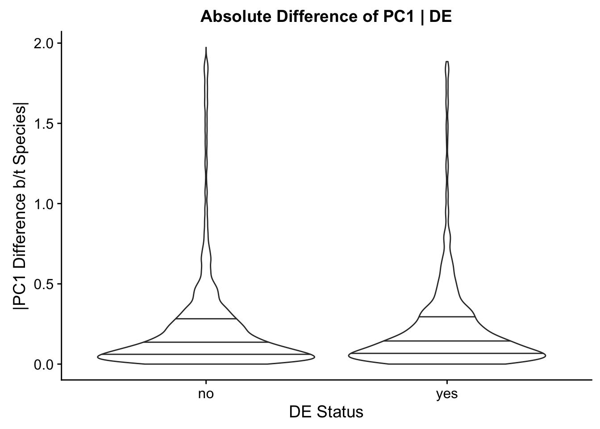
#None of this is particularly encouraging...but what if I did it on DC status? Can just check on binary status here to see if it'll even be significant or not:
t.test(filter(final.AB, DC=="yes")$PC.diff, filter(final.AB, DC=="no")$PC.diff)
Welch Two Sample t-test
data: filter(final.AB, DC == "yes")$PC.diff and filter(final.AB, DC == "no")$PC.diff
t = 1.1368, df = 750.12, p-value = 0.256
alternative hypothesis: true difference in means is not equal to 0
95 percent confidence interval:
-0.01033890 0.03878608
sample estimates:
mean of x mean of y
0.2428049 0.2285813 #Aaaaand it's not. My inclination is to not spend any more time on the PCA element of this since the results don't seem to be good at all...
#Just a quick check to see if not using absolute difference would be better?
final.AB$PC.hdiff <- final.AB$PC.C-final.AB$PC.H
ggplot(data=final.AB) + geom_line(aes(x=adj.P.Val, y=PC.hdiff)) + ggtitle("Difference of PC1 Ordered by DE Significance") + xlab("Decreasing DE Significance") + ylab("PC1 Difference b/t Species (H-C)")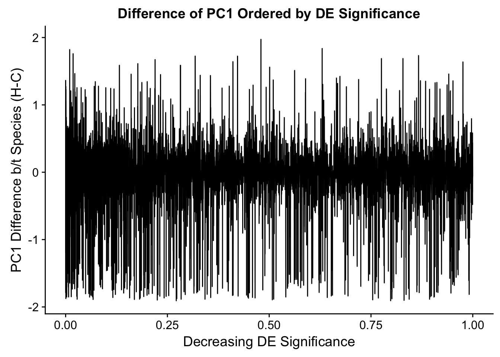
t.test(filter(final.AB, adj.P.Val<=0.05)$PC.hdiff, filter(final.AB, adj.P.Val>0.05)$PC.hdiff)
Welch Two Sample t-test
data: filter(final.AB, adj.P.Val <= 0.05)$PC.hdiff and filter(final.AB, adj.P.Val > 0.05)$PC.hdiff
t = -0.77796, df = 3544.3, p-value = 0.4366
alternative hypothesis: true difference in means is not equal to 0
95 percent confidence interval:
-0.02450552 0.01058275
sample estimates:
mean of x mean of y
-0.03009098 -0.02312960 ggplot(data=final.AB) + geom_violin(aes(group=DE, x=DE, y=PC.hdiff), draw_quantiles = c(0.25, 0.5, 0.75)) + ggtitle("Difference of PC1 | DE") + xlab("DE Status") + ylab("PC1 Difference b/t Species (H-C)")Warning: Removed 313 rows containing non-finite values (stat_ydensity).
#None of this is particularly encouraging...but what if I did it on DC status? Can just check on binary status here to see if it'll even be significant or not:
t.test(filter(final.AB, DC=="yes")$PC.hdiff, filter(final.AB, DC=="no")$PC.hdiff) #Interestingly, if starting with humans as baseline here, this p-val is ALMOST significant!!!! Same if starting with chimps--just not using absolute value makes this almost significant...
Welch Two Sample t-test
data: filter(final.AB, DC == "yes")$PC.hdiff and filter(final.AB, DC == "no")$PC.hdiff
t = -1.9217, df = 747.95, p-value = 0.05503
alternative hypothesis: true difference in means is not equal to 0
95 percent confidence interval:
-0.0609932583 0.0006511334
sample estimates:
mean of x mean of y
-0.05286562 -0.02269456 #Note that I also tried coloring the differences of PC1 plots by DC status and saw lines of both short and long variety, no clear trend of a bigger difference b/t species there, so no point in putting in the work to look at DC on x-axis.
#With the finished AB compartment DFs, should be as easy as just assigning Hi-C bins to A or B! Note that this current paradigm is limited to the genes that had direct overlap with a significant Hi-C bin; there's no reason for this! FIX! gene.hic.filt may not be the best data frame for this to work on then, since it doesn't include position information on all genes--get that!
# ABall <- select(gene.hic.filt, genes, logFC, AveExpr, adj.P.Val, B, HID, min_FDR_bin.H, CID, min_FDR_bin.C)
# hcomps <- select(humans.AB, peakID, compartment)
# ccomps <- select(chimps.AB, peakID, compartment)
# colnames(hcomps) <- c("HID", "compartment.H")
# colnames(ccomps) <- c("CID", "compartment.C")
# left_join(ABall, hcomps, by="HID") %>% left_join(., ccomps, by="CID") -> AB.all
#
# head(gene.hic.filt)
#Exploration of why they're not identically sized, not important. Also show some within-species exploration of the variance in these values; probably also not important. Collapsed.
# good.indices <- which(B_AB$`#peakID` %in% E_AB$`#peakID`)
# test <- B_AB[-good.indices,]
# good.indices <- which(E_AB$`#peakID` %in% B_AB$`#peakID`)
# test2 <- E_AB[-good.indices,]
#See how much within-species variance exists in these, after standardizing them to be identical across individuals from same species (remove X chromosome?). Or just do left joins on one and see what variance is like in that subset--most
# left_join(A_AB, B_AB, by="peakID") %>% left_join(., E_AB, by="peakID") %>% left_join(., F_AB, by="peakID") -> newtest
# newtest <- select(newtest, peakID, PC1.x, PC1.y, PC1.x.x, PC1.y.y)
# colnames(newtest) <- c("peakID", "A", "B", "E", "F")
# newtest$var <- apply(newtest[,-1], 1, var)
# ggplot(data=newtest) + geom_violin(aes(x="", y=var))
# sum(newtest$var>1, na.rm=TRUE) #Returns ~1000, so of about 54k rows there are 1000 with high variance between individuals. Leave it be for now, just something to think about in case this looks wonky later.
#Look at some candidates of the strongest compartment differences real quick to see if anything interesting here?
quantile(final.AB$PC.diff, probs=c(0.5, 0.6, 0.7, 0.8, 0.85, 0.9, 0.95, 0.99), na.rm = TRUE) 50% 60% 70% 80% 85% 90% 95%
0.1283966 0.1742264 0.2370739 0.3225847 0.3867206 0.4989470 0.7753319
99%
1.7327811 theonepercent <- which(final.AB$PC.diff>=1.7327811)
extremes <- final.AB[theonepercent,]
#I went back with some of this to look...nothing looks great TBH. For what it's worth, at least there are more instances in compartment differences where it's open in humans and closed in chimps than vice versa:
sum(final.AB$comp.diff=="yes"&final.AB$compartment.H=="A"&final.AB$compartment.C=="B", na.rm=TRUE) #Open in humans, closed in chimps[1] 513sum(final.AB$comp.diff=="yes"&final.AB$compartment.H=="B"&final.AB$compartment.C=="A", na.rm=TRUE) #Open in chimps, closed in humans[1] 361####25kb PCA A/B compartment analysis. Repeat this entire analysis utilizing 25kb as the window size for PCA calls.
###Start with A/B compartments; much simpler. Read them in!
A_AB <- fread("~/Desktop/Hi-C/AB_compartments/25kb/A-21792.PC1.txt", header = TRUE, data.table=FALSE)
B_AB <- fread("~/Desktop/Hi-C/AB_compartments/25kb/B-28126.PC1.txt", header = TRUE, data.table=FALSE)
E_AB <- fread("~/Desktop/Hi-C/AB_compartments/25kb/E-28815.PC1.txt", header = TRUE, data.table=FALSE)
F_AB <- fread("~/Desktop/Hi-C/AB_compartments/25kb/F-28834.PC1.txt", header = TRUE, data.table=FALSE)
C_AB <- fread("~/Desktop/Hi-C/AB_compartments/25kb/C-3649.PC1.txt", header = TRUE, data.table=FALSE)
D_AB <- fread("~/Desktop/Hi-C/AB_compartments/25kb/D-40300.PC1.txt", header = TRUE, data.table=FALSE)
G_AB <- fread("~/Desktop/Hi-C/AB_compartments/25kb/G-3624.PC1.txt", header = TRUE, data.table=FALSE)
H_AB <- fread("~/Desktop/Hi-C/AB_compartments/25kb/H-3651.PC1.txt", header = TRUE, data.table=FALSE)
colnames(A_AB) <- colnames(B_AB) <- colnames(C_AB) <- colnames(D_AB) <- colnames(E_AB) <- colnames(F_AB) <- colnames(G_AB) <- colnames(H_AB) <- c("peakID", "chr", "start", "end", "strand", "PC1")
#Interestingly, within a species they're not all the same length (which doesn't make much sense as I thought these were identical genomes). A and F are females, B and E are males, so that's why B and E are larger--just remove chrY data to deal with that. But why aren't B and E identical, or A and F identical? Perhaps this is because not every individual gets enough reads at each of the regions to call compartments? Not really clear to me...for now, use ALL regions I can by combining these DFs, taking the mean PC1 value across individuals for those hits which ARE repeated (should be the vast majority).
humans.AB <- rbind(A_AB, B_AB, E_AB, F_AB)
humans.AB <- group_by(humans.AB, peakID) %>% summarise(chr=unique(chr), start=unique(start), end=unique(end), strand=unique(strand), PC1=mean(PC1))
chimps.AB <- rbind(C_AB, D_AB, G_AB, H_AB)
chimps.AB <- group_by(chimps.AB, peakID) %>% summarise(chr=unique(chr), start=unique(start), end=unique(end), strand=unique(strand), PC1=mean(PC1))
#Now, I want to assign a compartment (A or B) to each of these loci, so that they can then be examined WRT the Hi-C bins that might overlap them.
humans.AB$compartment <- ifelse(humans.AB$PC1>0, "A", "B")
chimps.AB$compartment <- ifelse(chimps.AB$PC1>0, "A", "B")
#Really, only want to look at genes we can actually call DE on based on expression levels, so only care about those genes in detable object. Can extract their exact positions from hgene.hic and cgene.hic and create peakIDs for them that match the AB compartment peak names. Basically, I just want to call which of the AB compartment peak bins they'll fall into. Note that those compartments were made 50kb at a time, so I need to round to lower 50k (or higher, depending on strand and proximity to boundary!) to figure out which compartment a gene belongs to.
colnames(hgene.hic) <- c("Hchr", "Hstart", "Hend", "genes", "Hplace", "Hstrand", "binchr", "binstart", "binend", "bindist.TSS")
colnames(cgene.hic) <- c("Cchr", "Cstart", "Cend", "genes", "Cplace", "Cstrand", "binchr", "binstart", "binend", "bindist.TSS")
#Add in lengths for appropriate PCA bin assignment in next part.
colnames(human_lengths) <- colnames(chimp_lengths) <- c("genes", "length")
hgene.PCA <- left_join(hgene.hic, human_lengths, by="genes")
cgene.PCA <- left_join(cgene.hic, chimp_lengths, by="genes")
#Assign genes to A/B compartment bins based on their position along the 50kb interval and their gene length, as well as strand orientation (trying to get the gene body in the actual 50kb interval).
hgene.PCA$HID <- paste(hgene.PCA$Hchr, ifelse(hgene.PCA$Hstrand=="+", ifelse(hgene.PCA$Hstart%%25000>=(25000-hgene.PCA$length), as.integer(25000*ceiling(hgene.PCA$Hstart/25000)), as.integer(25000*floor(hgene.PCA$Hstart/25000))), ifelse(hgene.PCA$Hstart%%25000<=hgene.PCA$length, as.integer((25000*floor(hgene.PCA$Hstart/25000)-25000)), as.integer(25000*floor(hgene.PCA$Hstart/25000)))), sep="-")
cgene.PCA$CID <- paste(cgene.PCA$Cchr, ifelse(cgene.PCA$Cstrand=="+", ifelse(cgene.PCA$Cstart%%25000>=(25000-cgene.PCA$length), as.integer(25000*ceiling(cgene.PCA$Cstart/25000)), as.integer(25000*floor(cgene.PCA$Cstart/25000))), ifelse(cgene.PCA$Cstart%%25000<=cgene.PCA$length, as.integer((25000*floor(cgene.PCA$Cstart/25000)-25000)), as.integer(25000*floor(cgene.PCA$Cstart/25000)))), sep="-")
#hgene.hic$HID <- ifelse(hgene.hic$Hstrand=="+", paste(hgene.hic$Hchr, as.integer(25000*floor(hgene.hic$Hstart/25000)), sep="-"))
#cgene.hic$CID <- paste(cgene.hic$Cchr, as.integer(25000*floor(cgene.hic$Cstart/25000)), sep="-")
hgenes.compartments <- select(hgene.PCA, Hchr, Hstart, genes, Hstrand, HID)
cgenes.compartments <- select(cgene.PCA, Cchr, Cstart, genes, Cstrand, CID)
compartment.genes <- left_join(detable, hgenes.compartments, by="genes") %>% left_join(., cgenes.compartments, by="genes")
#See how many genes fall within 5 kb of one of the boundaries here (at every 50kb interval): Though this was only considering the lower end, not if they fall on the other edge of the boundary (45k modulo remainder is equivalent and comparable #s!). REALLY what I should care about are positive strand genes falling at the upper edge of a boundary (implying their gene body may lie in the next compartment) and negative strand genes falling at the lower edge of a boundary (implying their gene body may lie in the previous compartment). If I have positive strand genes near the beginning or negative strand genes near the end that's not really an issue as their gene bodies should lie entirely within the compartment. It's really just those two specific cases.
sum((compartment.genes$Hstart%%25000)<=5000, na.rm=TRUE)[1] 2167sum((compartment.genes$Cstart%%25000)<=5000, na.rm=TRUE)[1] 2182#In both species, roughly 1k of the genes we can consider at all fall near (w/in 5kb) one of the A/B boundaries we've established here. Could there be issues with pos/neg strand and how close they are to the boundary? I can check on this...or can also assume it's balanced across both issues. If the results from a naive analysis don't look good I can go back and fix this part of that.
#Now, merge compartment.genes and the humans.AB and chimps.AB compartment assignment DFs!
HAB <- select(humans.AB, peakID, compartment, PC1)
CAB <- select(chimps.AB, peakID, compartment, PC1)
colnames(HAB) <- c("HID", "compartment.H", "PC.H")
colnames(CAB) <- c("CID", "compartment.C", "PC.C")
final.AB <- left_join(compartment.genes, HAB, by="HID") %>% left_join(., CAB, by="CID")
final.AB$comp.diff <- ifelse(final.AB$compartment.H==final.AB$compartment.C, "no", "yes") #Note that 311 of these rows have missing data from at least one species so this determination can't be made? Often b/c of being on a scaffold in chimps.
final.AB$PC.diff <- abs(final.AB$PC.H-final.AB$PC.C)
final.AB <- final.AB[order(final.AB$adj.P.Val),]
final.AB$DE <- ifelse(final.AB$adj.P.Val<=0.05, "yes", "no")
table(final.AB$DE, final.AB$comp.diff, dnn=c("DE?", "Different Compartment b/t Species?")) Different Compartment b/t Species?
DE? no yes
no 7968 570
yes 2048 145chisq.test(table(final.AB$DE, final.AB$comp.diff, dnn=c("DE?", "Same Compartment b/t Species?")))
Pearson's Chi-squared test with Yates' continuity correction
data: table(final.AB$DE, final.AB$comp.diff, dnn = c("DE?", "Same Compartment b/t Species?"))
X-squared = 0.0035226, df = 1, p-value = 0.9527#So roughly 6.61% of DE genes are in different compartments between species, whereas 6.68% of non-DE genes are in different compartments between species...shitty! And not significant!
#Would be nice to know if the differential compartments between species are at least concentrated in those differential contacts b/t species?! Add a column of the DC status between species.
final.AB$DC <- ifelse(final.AB$genes %in% filter(gene.hic.filt, min_FDR.H<=0.05|min_FDR.C<=0.05)$genes, "yes", "no")
table(final.AB$DC, final.AB$comp.diff, dnn=c("DC?", "Different Compartment b/t Species?")) Different Compartment b/t Species?
DC? no yes
no 9407 674
yes 609 41chisq.test(table(final.AB$DC, final.AB$comp.diff, dnn=c("DC?", "Different Compartment b/t Species?")))
Pearson's Chi-squared test with Yates' continuity correction
data: table(final.AB$DC, final.AB$comp.diff, dnn = c("DC?", "Different Compartment b/t Species?"))
X-squared = 0.086185, df = 1, p-value = 0.7691#Again, not significant...can see that the genes which are DC have ~6.3% of them in different compartments b/t species, while the non-DC ones have 6.7% of them in different compartments b/t species. Note that this is also the exact opposite result I was hoping for...
#So a simple classification system is not sufficient for A/B compartment changes between the species. What if I actually took the mean PC value and plotted the difference bewtween species vs decreasing significance? The final.AB df is already ordered by DE p-val, so can do this real quick simply:
ggplot(data=final.AB) + geom_line(aes(x=adj.P.Val, y=PC.diff)) + ggtitle("Absolute Difference of PC1 Ordered by DE Significance") + xlab("Decreasing DE Significance") + ylab("|PC1 Difference b/t Species|")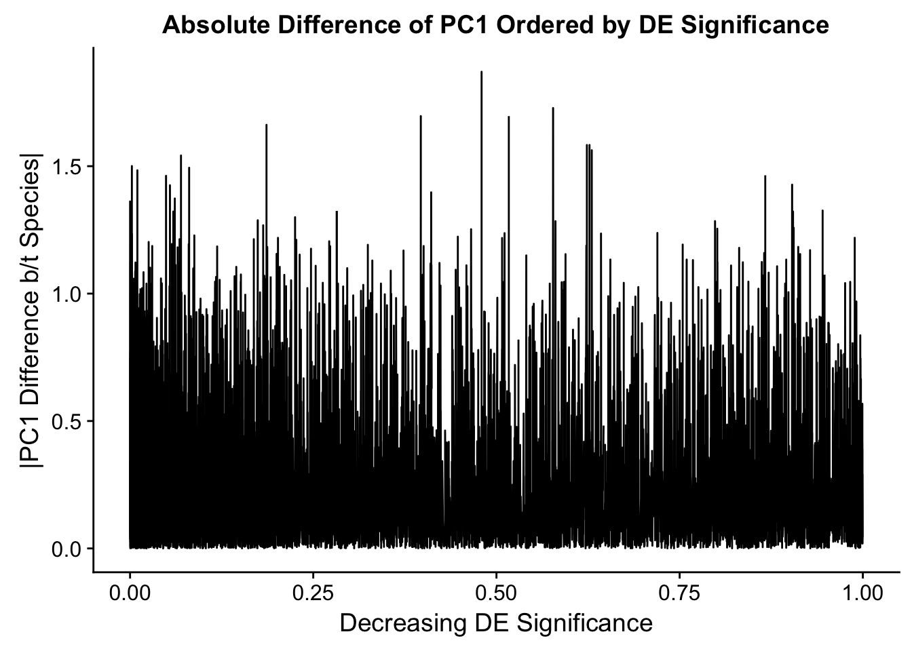
t.test(filter(final.AB, DE=="yes")$PC.diff, filter(final.AB, DE=="no")$PC.diff)
Welch Two Sample t-test
data: filter(final.AB, DE == "yes")$PC.diff and filter(final.AB, DE == "no")$PC.diff
t = 0.25904, df = 3489.3, p-value = 0.7956
alternative hypothesis: true difference in means is not equal to 0
95 percent confidence interval:
-0.009105945 0.011878442
sample estimates:
mean of x mean of y
0.2175951 0.2162088 ggplot(data=final.AB) + geom_violin(aes(group=DE, x=DE, y=PC.diff), draw_quantiles = c(0.25, 0.5, 0.75)) + ggtitle("Absolute Difference of PC1 | DE") + xlab("DE Status") + ylab("|PC1 Difference b/t Species|")Warning: Removed 343 rows containing non-finite values (stat_ydensity).#None of this is particularly encouraging...but what if I did it on DC status? Can just check on binary status here to see if it'll even be significant or not:
t.test(filter(final.AB, DC=="yes")$PC.diff, filter(final.AB, DC=="no")$PC.diff)
Welch Two Sample t-test
data: filter(final.AB, DC == "yes")$PC.diff and filter(final.AB, DC == "no")$PC.diff
t = 2.6375, df = 726.52, p-value = 0.008531
alternative hypothesis: true difference in means is not equal to 0
95 percent confidence interval:
0.006501246 0.044361584
sample estimates:
mean of x mean of y
0.2403831 0.2149517 #This time it is!...
ggplot(data=final.AB) + geom_violin(aes(group=DC, x=DC, y=PC.diff), draw_quantiles = c(0.25, 0.5, 0.75)) + ggtitle("Absolute Difference of PC1 | DC") + xlab("DC Status") + ylab("|PC1 Difference b/t Species|") + annotate("text", x=1.5, y=1, label="8.5 e - 3")Warning: Removed 343 rows containing non-finite values (stat_ydensity).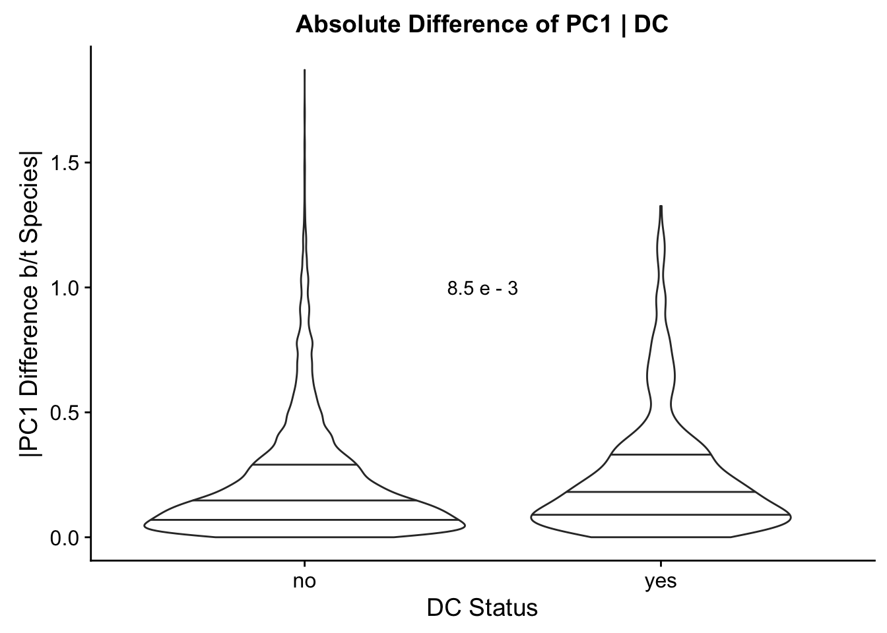
#Just a quick check to see if not using absolute difference would be better?
final.AB$PC.hdiff <- final.AB$PC.C-final.AB$PC.H
ggplot(data=final.AB) + geom_line(aes(x=adj.P.Val, y=PC.hdiff)) + ggtitle("Difference of PC1 Ordered by DE Significance") + xlab("Decreasing DE Significance") + ylab("PC1 Difference b/t Species (H-C)")t.test(filter(final.AB, adj.P.Val<=0.05)$PC.hdiff, filter(final.AB, adj.P.Val>0.05)$PC.hdiff)
Welch Two Sample t-test
data: filter(final.AB, adj.P.Val <= 0.05)$PC.hdiff and filter(final.AB, adj.P.Val > 0.05)$PC.hdiff
t = -0.67607, df = 3442.5, p-value = 0.499
alternative hypothesis: true difference in means is not equal to 0
95 percent confidence interval:
-0.019637088 0.009566943
sample estimates:
mean of x mean of y
-0.02171785 -0.01668278 ggplot(data=final.AB) + geom_violin(aes(group=DE, x=DE, y=PC.hdiff), draw_quantiles = c(0.25, 0.5, 0.75)) + ggtitle("Difference of PC1 | DE") + xlab("DE Status") + ylab("PC1 Difference b/t Species (H-C)")Warning: Removed 343 rows containing non-finite values (stat_ydensity).#None of this is particularly encouraging...but what if I did it on DC status? Can just check on binary status here to see if it'll even be significant or not:
t.test(filter(final.AB, DC=="yes")$PC.hdiff, filter(final.AB, DC=="no")$PC.hdiff)
Welch Two Sample t-test
data: filter(final.AB, DC == "yes")$PC.hdiff and filter(final.AB, DC == "no")$PC.hdiff
t = -3.2522, df = 724.08, p-value = 0.001198
alternative hypothesis: true difference in means is not equal to 0
95 percent confidence interval:
-0.07021267 -0.01735265
sample estimates:
mean of x mean of y
-0.05884241 -0.01505974 #Overall, most of the A/B compartment calling results look rather atrocious...nothing much interesting to be gleaned here, unfortuantely.TAD Analysis
Here, I look at TAD calls from TopDom to see if I can find a trend of DE genes or DC genes being more likely to have contacts that cross TAD boundaries.
###First, simpler analysis looking at total number of TADs called, mean TAD sizes, and TAD size density distributions for each individual across the 3 different window sizes called.
TAD.stats <- function(window){
A_TAD <- fread(paste("~/Desktop/Hi-C/pgltoolswork/new_updated/TOPDOM/window", window,"/A-21792_TOPDOM_ALL.", window, ".domain", sep=""), header=TRUE, data.table=FALSE)
B_TAD <- fread(paste("~/Desktop/Hi-C/pgltoolswork/new_updated/TOPDOM/window", window, "/B-28126_TOPDOM_ALL.", window, ".domain", sep=""), header=TRUE, data.table=FALSE)
C_TAD <- fread(paste("~/Desktop/Hi-C/pgltoolswork/new_updated/TOPDOM/window", window, "/C-3649_TOPDOM_ALL.", window, ".domain", sep=""), header=TRUE, data.table=FALSE)
D_TAD <- fread(paste("~/Desktop/Hi-C/pgltoolswork/new_updated/TOPDOM/window", window, "/D-40300_TOPDOM_ALL.", window, ".domain", sep=""), header=TRUE, data.table=FALSE)
E_TAD <- fread(paste("~/Desktop/Hi-C/pgltoolswork/new_updated/TOPDOM/window", window, "/E-28815_TOPDOM_ALL.", window, ".domain", sep=""), header=TRUE, data.table=FALSE)
F_TAD <- fread(paste("~/Desktop/Hi-C/pgltoolswork/new_updated/TOPDOM/window", window, "/F-28834_TOPDOM_ALL.", window, ".domain", sep=""), header=TRUE, data.table=FALSE)
G_TAD <- fread(paste("~/Desktop/Hi-C/pgltoolswork/new_updated/TOPDOM/window", window, "/G-3624_TOPDOM_ALL.", window, ".domain", sep=""), header=TRUE, data.table=FALSE)
H_TAD <- fread(paste("~/Desktop/Hi-C/pgltoolswork/new_updated/TOPDOM/window", window, "/H-3651_TOPDOM_ALL.", window, ".domain", sep=""), header=TRUE, data.table=FALSE)
A_bounds <- filter(A_TAD, tag=="boundary")
B_bounds <- filter(B_TAD, tag=="boundary")
E_bounds <- filter(E_TAD, tag=="boundary")
F_bounds <- filter(F_TAD, tag=="boundary")
C_bounds <- filter(C_TAD, tag=="boundary")
D_bounds <- filter(D_TAD, tag=="boundary")
G_bounds <- filter(G_TAD, tag=="boundary")
H_bounds <- filter(H_TAD, tag=="boundary")
A_domains <- filter(A_TAD, tag=="domain")
B_domains <- filter(B_TAD, tag=="domain")
E_domains <- filter(E_TAD, tag=="domain")
F_domains <- filter(F_TAD, tag=="domain")
C_domains <- filter(C_TAD, tag=="domain")
D_domains <- filter(D_TAD, tag=="domain")
G_domains <- filter(G_TAD, tag=="domain")
H_domains <- filter(H_TAD, tag=="domain")
A_bounds$species <- B_bounds$species <- E_bounds$species <- F_bounds$species <- A_domains$species <- B_domains$species <- E_domains$species <- F_domains$species <- "human"
C_bounds$species <- D_bounds$species <- G_bounds$species <- H_bounds$species <- C_domains$species <- D_domains$species <- G_domains$species <- H_domains$species <- "chimp"
A_bounds$ID <- A_domains$ID <- "A"
B_bounds$ID <- B_domains$ID <- "B"
C_bounds$ID <- C_domains$ID <- "C"
D_bounds$ID <- D_domains$ID <- "D"
E_bounds$ID <- E_domains$ID <- "E"
F_bounds$ID <- F_domains$ID <- "F"
G_bounds$ID <- G_domains$ID <- "G"
H_bounds$ID <- H_domains$ID <- "H"
ggboundaries <- rbind(select(A_bounds, chr, size, species, ID), select(B_bounds, chr, size, species, ID), select(C_bounds, chr, size, species, ID), select(D_bounds, chr, size, species, ID), select(E_bounds, chr, size, species, ID), select(F_bounds, chr, size, species, ID), select(G_bounds, chr, size, species, ID), select(H_bounds, chr, size, species, ID))
ggdomains <- rbind(select(A_domains, chr, size, species, ID), select(B_domains, chr, size, species, ID), select(C_domains, chr, size, species, ID), select(D_domains, chr, size, species, ID), select(E_domains, chr, size, species, ID), select(F_domains, chr, size, species, ID), select(G_domains, chr, size, species, ID), select(H_domains, chr, size, species, ID))
broad.stats <- data.frame(individuals=c("A", "B", "C", "D", "E", "F", "G", "H"), species=c("human", "human", "chimp", "chimp", "human", "human", "chimp", "chimp"), total.TADs=c(nrow(A_domains), nrow(B_domains), nrow(C_domains), nrow(D_domains), nrow(E_domains), nrow(F_domains), nrow(G_domains), nrow(H_domains)), mean.TAD.size=c(mean(A_domains$size), mean(B_domains$size), mean(C_domains$size), mean(D_domains$size), mean(E_domains$size), mean(F_domains$size), mean(G_domains$size), mean(H_domains$size)), total.bounds=c(nrow(A_bounds), nrow(B_bounds), nrow(C_bounds), nrow(D_bounds), nrow(E_bounds), nrow(F_bounds), nrow(G_bounds), nrow(H_bounds)), mean.bound.size=c(mean(A_bounds$size), mean(B_bounds$size), mean(C_bounds$size), mean(D_bounds$size), mean(E_bounds$size), mean(F_bounds$size), mean(G_bounds$size), mean(H_bounds$size)))
result <- list(boundaries=ggboundaries, domains=ggdomains, stats=broad.stats)
return(result)
}
TADs.20 <- TAD.stats(20)
TADs.10 <- TAD.stats(10)
TADs.5 <- TAD.stats(5)
TADs.20$stats$window <- 200
TADs.10$stats$window <- 100
TADs.5$stats$window <- 50
TADs.overall <- rbind(TADs.20$stats, TADs.10$stats, TADs.5$stats)
#Total TADs
ggplot(data=TADs.overall) + geom_line(aes(x=window, group=individuals, y=total.TADs, color=species)) + ggtitle("Total # of TADs Called by Window Size Used") + xlab("Window Size (kb)") + ylab("Total Number of TADs") + scale_color_manual("Species", values=c("red", "blue"), labels=c("Chimpanzee", "Human")) + annotate("text", x=50, y=14000, label="0.015", size=3) + annotate("text", x=100, y=10000, label="2.6 e -3", size=3) + annotate("text", x=200, y=11000, label="1.5 e -4", size=3)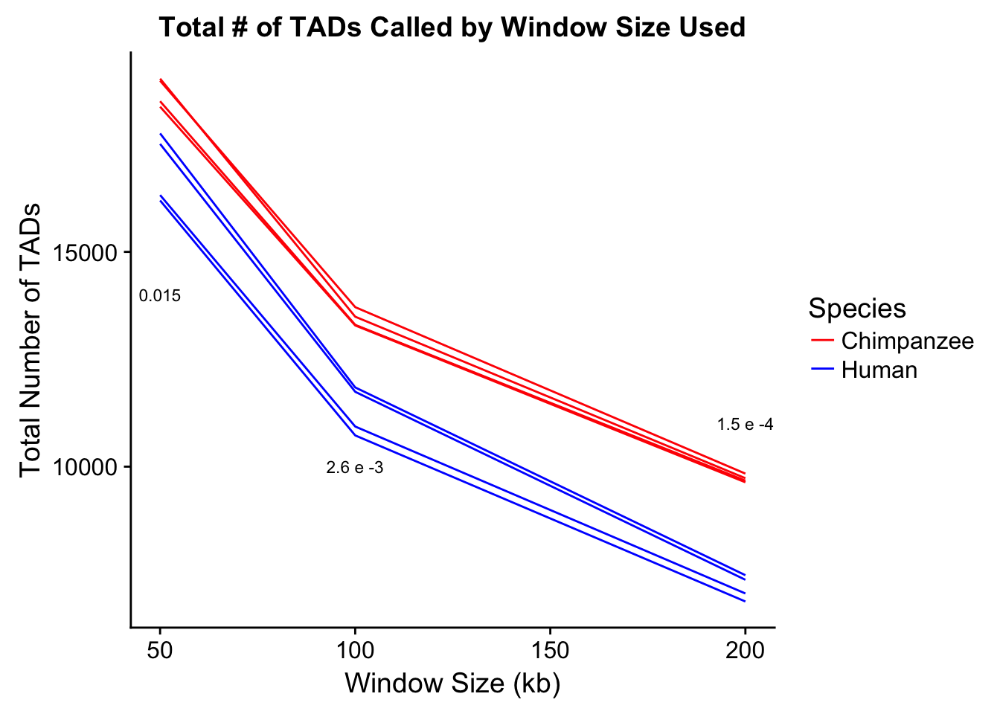
t.test(TADs.20$stats$total.TADs[c(1:2, 5:6)], TADs.20$stats$total.TADs[c(3:4, 7:8)])
Welch Two Sample t-test
data: TADs.20$stats$total.TADs[c(1:2, 5:6)] and TADs.20$stats$total.TADs[c(3:4, 7:8)]
t = -17.12, df = 3.5764, p-value = 0.0001465
alternative hypothesis: true difference in means is not equal to 0
95 percent confidence interval:
-2963.429 -2102.071
sample estimates:
mean of x mean of y
7187.00 9719.75 t.test(TADs.10$stats$total.TADs[c(1:2, 5:6)], TADs.10$stats$total.TADs[c(3:4, 7:8)])
Welch Two Sample t-test
data: TADs.10$stats$total.TADs[c(1:2, 5:6)] and TADs.10$stats$total.TADs[c(3:4, 7:8)]
t = -7.1424, df = 3.7421, p-value = 0.002608
alternative hypothesis: true difference in means is not equal to 0
95 percent confidence interval:
-2990.083 -1282.917
sample estimates:
mean of x mean of y
11313.0 13449.5 t.test(TADs.5$stats$total.TADs[c(1:2, 5:6)], TADs.5$stats$total.TADs[c(3:4, 7:8)])
Welch Two Sample t-test
data: TADs.5$stats$total.TADs[c(1:2, 5:6)] and TADs.5$stats$total.TADs[c(3:4, 7:8)]
t = -4.0978, df = 3.9927, p-value = 0.01494
alternative hypothesis: true difference in means is not equal to 0
95 percent confidence interval:
-2983.1277 -572.3723
sample estimates:
mean of x mean of y
16947.75 18725.50 #Mean TAD size
ggplot(data=TADs.overall) + geom_line(aes(x=window, group=individuals, y=mean.TAD.size, color=species)) + ggtitle("Mean TAD Size by Window Size Used") + xlab("Window Size (kb)") + ylab("Mean TAD Size") + scale_color_manual("Species", values=c("red", "blue"), labels=c("Chimpanzee", "Human")) + annotate("text", x=50, y=130000, label="0.013", size=3) + annotate("text", x=100, y=170000, label="4 e -3", size=3) + annotate("text", x=200, y=240000, label="4.7 e -4", size=3)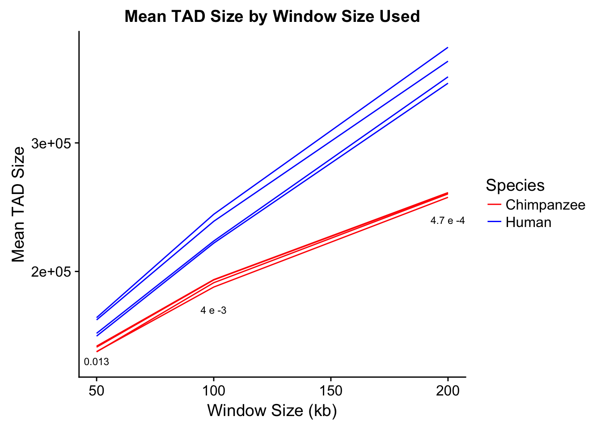
t.test(TADs.20$stats$mean.TAD.size[c(1:2, 5:6)], TADs.20$stats$mean.TAD.size[c(3:4, 7:8)])
Welch Two Sample t-test
data: TADs.20$stats$mean.TAD.size[c(1:2, 5:6)] and TADs.20$stats$mean.TAD.size[c(3:4, 7:8)]
t = 15.605, df = 3.1066, p-value = 0.0004701
alternative hypothesis: true difference in means is not equal to 0
95 percent confidence interval:
79083.77 118635.47
sample estimates:
mean of x mean of y
358966.7 260107.1 t.test(TADs.10$stats$mean.TAD.size[c(1:2, 5:6)], TADs.10$stats$mean.TAD.size[c(3:4, 7:8)])
Welch Two Sample t-test
data: TADs.10$stats$mean.TAD.size[c(1:2, 5:6)] and TADs.10$stats$mean.TAD.size[c(3:4, 7:8)]
t = 7.1073, df = 3.3458, p-value = 0.003959
alternative hypothesis: true difference in means is not equal to 0
95 percent confidence interval:
23533.40 57995.53
sample estimates:
mean of x mean of y
232281.7 191517.2 t.test(TADs.5$stats$mean.TAD.size[c(1:2, 5:6)], TADs.5$stats$mean.TAD.size[c(3:4, 7:8)])
Welch Two Sample t-test
data: TADs.5$stats$mean.TAD.size[c(1:2, 5:6)] and TADs.5$stats$mean.TAD.size[c(3:4, 7:8)]
t = 4.5919, df = 3.5993, p-value = 0.01291
alternative hypothesis: true difference in means is not equal to 0
95 percent confidence interval:
6426.645 28513.890
sample estimates:
mean of x mean of y
156964.5 139494.2 #TAD size distributions
ggplot(data=TADs.20$domains) + geom_density(aes(x=size, group=ID, color=species, y=..scaled..)) + ggtitle("TAD Size Distributions by Species, 200kb Windows") + xlab("TAD Size") + ylab("Density") + scale_color_manual("Species", values=c("red", "blue"), labels=c("Chimpanzee", "Human")) + annotate("text", x=1000000, y=0.5, label="< 2.2 e -16") + coord_cartesian(xlim=c(0, 2250000))#Already checked and this looks very similar even if chr2/A/B is removed, and across chrst.test(filter(TADs.20$domains, species=="human")$size, filter(TADs.20$domains, species=="chimp")$size)
Welch Two Sample t-test
data: filter(TADs.20$domains, species == "human")$size and filter(TADs.20$domains, species == "chimp")$size
t = 54.222, df = 53899, p-value < 2.2e-16
alternative hypothesis: true difference in means is not equal to 0
95 percent confidence interval:
94941.28 102062.48
sample estimates:
mean of x mean of y
358597.8 260095.9 ggplot(data=TADs.10$domains) + geom_density(aes(x=size, group=ID, color=species, y=..scaled..)) + ggtitle("TAD Size Distributions by Species, 100kb Windows") + xlab("TAD Size") + ylab("Density") + scale_color_manual("Species", values=c("red", "blue"), labels=c("Chimpanzee", "Human")) + annotate("text", x=1000000, y=0.5, label="< 2.2 e -16") + coord_cartesian(xlim=c(0, 1500000)) #+ facet_wrap(~chr) #Already checked and this looks very similar even if chr2/A/B is removed, and across chrst.test(filter(TADs.10$domains, species=="human")$size, filter(TADs.10$domains, species=="chimp")$size)
Welch Two Sample t-test
data: filter(TADs.10$domains, species == "human")$size and filter(TADs.10$domains, species == "chimp")$size
t = 39.781, df = 90784, p-value < 2.2e-16
alternative hypothesis: true difference in means is not equal to 0
95 percent confidence interval:
38388.50 42367.33
sample estimates:
mean of x mean of y
231865.3 191487.4 ggplot(data=TADs.5$domains) + geom_density(aes(x=size, group=ID, color=species, y=..scaled..)) + ggtitle("TAD Size Distributions by Species, 50kb Windows") + xlab("TAD Size") + ylab("Density") + scale_color_manual("Species", values=c("red", "blue"), labels=c("Chimpanzee", "Human")) + annotate("text", x=1000000, y=0.5, label="< 2.2 e -16") + coord_cartesian(xlim=c(0, 1250000)) #+ facet_wrap(~chr) #Already checked and this looks very similar even if chr2/A/B is removed, and across chrs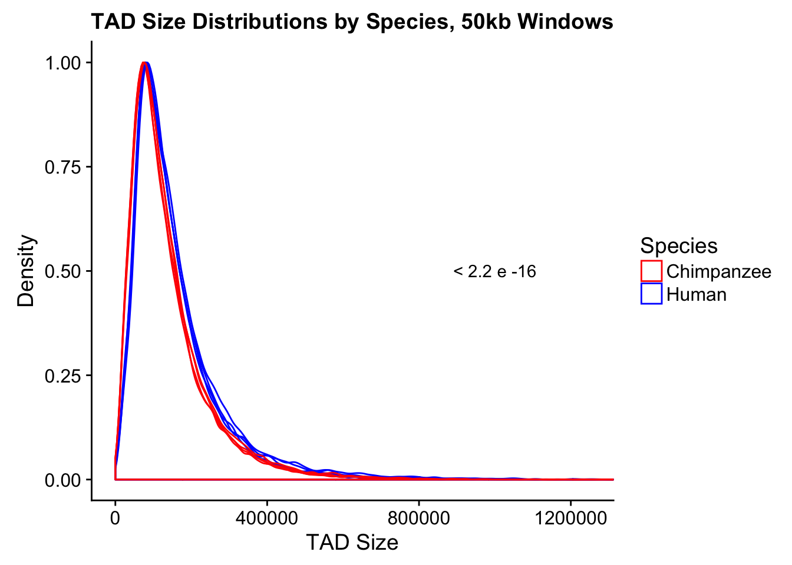
t.test(filter(TADs.5$domains, species=="human")$size, filter(TADs.5$domains, species=="chimp")$size)
Welch Two Sample t-test
data: filter(TADs.5$domains, species == "human")$size and filter(TADs.5$domains, species == "chimp")$size
t = 27.986, df = 137020, p-value < 2.2e-16
alternative hypothesis: true difference in means is not equal to 0
95 percent confidence interval:
16035.91 18451.15
sample estimates:
mean of x mean of y
156707.2 139463.7 #TAD size by chr...
ggplot(data=TADs.20$domains) + geom_density(aes(x=size, group=ID, color=species, y=..scaled..)) + ggtitle("TAD Size Distributions by Species, 200kb Windows") + xlab("TAD Size") + ylab("Density") + scale_color_manual("Species", values=c("red", "blue"), labels=c("Chimpanzee", "Human")) + annotate("text", x=1000000, y=0.5, label="< 2.2 e -16") + facet_wrap(~chr)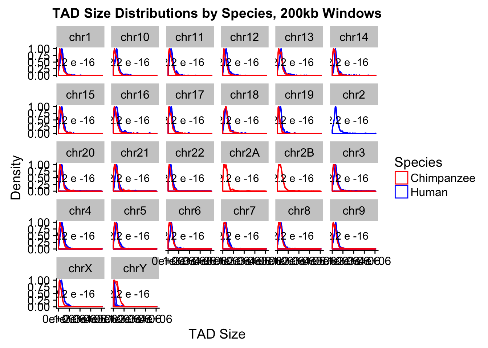
#Repeat all TAD analyses, but on the boundaries instead of the domains:
#Total TADs
ggplot(data=TADs.overall) + geom_line(aes(x=window, group=individuals, y=total.bounds, color=species)) + ggtitle("Total # of TAD Boundaries Called by Window Size Used") + xlab("Window Size (kb)") + ylab("Total Number of TAD Boundaries") + scale_color_manual("Species", values=c("red", "blue"), labels=c("Chimpanzee", "Human")) + annotate("text", x=50, y=750, label="0.07", size=3) + annotate("text", x=100, y=1275, label="0.01", size=3) + annotate("text", x=200, y=1525, label="4.1 e -5", size=3)t.test(TADs.20$stats$total.bounds[c(1:2, 5:6)], TADs.20$stats$total.bounds[c(3:4, 7:8)])
Welch Two Sample t-test
data: TADs.20$stats$total.bounds[c(1:2, 5:6)] and TADs.20$stats$total.bounds[c(3:4, 7:8)]
t = -13.419, df = 5.0081, p-value = 4.067e-05
alternative hypothesis: true difference in means is not equal to 0
95 percent confidence interval:
-331.2273 -224.7727
sample estimates:
mean of x mean of y
1202.5 1480.5 t.test(TADs.10$stats$total.bounds[c(1:2, 5:6)], TADs.10$stats$total.bounds[c(3:4, 7:8)])
Welch Two Sample t-test
data: TADs.10$stats$total.bounds[c(1:2, 5:6)] and TADs.10$stats$total.bounds[c(3:4, 7:8)]
t = -3.6347, df = 5.7455, p-value = 0.01176
alternative hypothesis: true difference in means is not equal to 0
95 percent confidence interval:
-202.5017 -38.4983
sample estimates:
mean of x mean of y
1051.25 1171.75 t.test(TADs.5$stats$total.bounds[c(1:2, 5:6)], TADs.5$stats$total.bounds[c(3:4, 7:8)])
Welch Two Sample t-test
data: TADs.5$stats$total.bounds[c(1:2, 5:6)] and TADs.5$stats$total.bounds[c(3:4, 7:8)]
t = -2.1966, df = 5.9847, p-value = 0.07054
alternative hypothesis: true difference in means is not equal to 0
95 percent confidence interval:
-70.840176 3.840176
sample estimates:
mean of x mean of y
416.0 449.5 #Mean Boundary Size
ggplot(data=TADs.overall) + geom_line(aes(x=window, group=individuals, y=mean.bound.size, color=species)) + ggtitle("Mean Boundary Size by Window Size Used") + xlab("Window Size (kb)") + ylab("Mean Boundary Size") + scale_color_manual("Species", values=c("red", "blue"), labels=c("Chimpanzee", "Human")) + annotate("text", x=50, y=22000, label="0.31", size=3) + annotate("text", x=100, y=30000, label="0.9", size=3) + annotate("text", x=200, y=74000, label="0.09", size=3)t.test(TADs.20$stats$mean.bound.size[c(1:2, 5:6)], TADs.20$stats$mean.bound.size[c(3:4, 7:8)])$p.value[1] 0.08768698t.test(TADs.10$stats$mean.bound.size[c(1:2, 5:6)], TADs.10$stats$mean.bound.size[c(3:4, 7:8)])$p.value[1] 0.8970549t.test(TADs.5$stats$mean.bound.size[c(1:2, 5:6)], TADs.5$stats$mean.bound.size[c(3:4, 7:8)])$p.value[1] 0.3111396#Boundary Size distributions
ggplot(data=TADs.20$boundaries) + geom_density(aes(x=size, group=ID, color=species, y=..scaled..)) + ggtitle("Boundary Size Distributions by Species, 200kb Windows") + xlab("Boundary Size") + ylab("Density") + scale_color_manual("Species", values=c("red", "blue"), labels=c("Chimpanzee", "Human")) + annotate("text", x=150000, y=0.5, label=signif(t.test(filter(TADs.20$boundaries, species=="human")$size, filter(TADs.20$boundaries, species=="chimp")$size)$p.value, 2)) + coord_cartesian(xlim=c(0, 300000))#Already checked and this looks very similar even if chr2/A/B is removed, and across chrsggplot(data=TADs.10$boundaries) + geom_density(aes(x=size, group=ID, color=species, y=..scaled..)) + ggtitle("Boundary Size Distributions by Species, 100kb Windows") + xlab("Boundary Size") + ylab("Density") + scale_color_manual("Species", values=c("red", "blue"), labels=c("Chimpanzee", "Human")) + annotate("text", x=70000, y=0.5, label=signif(t.test(filter(TADs.10$boundaries, species=="human")$size, filter(TADs.10$boundaries, species=="chimp")$size)$p.value, 2)) + coord_cartesian(xlim=c(0, 150000)) #+ facet_wrap(~chr) #Already checked and this looks very similar even if chr2/A/B is removed, and across chrs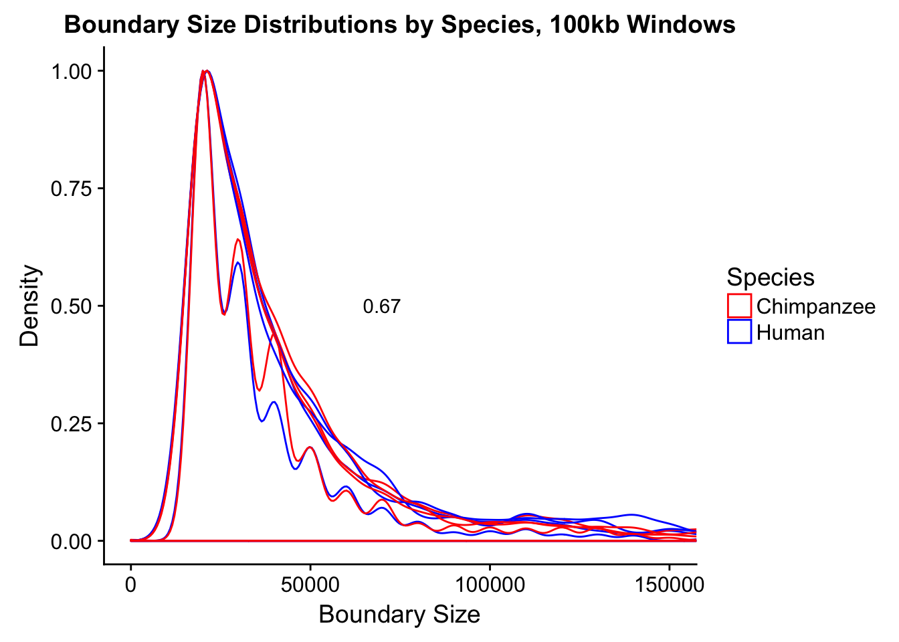
ggplot(data=TADs.5$boundaries) + geom_density(aes(x=size, group=ID, color=species, y=..scaled..)) + ggtitle("Boundary Size Distributions by Species, 50kb Windows") + xlab("Boundary Size") + ylab("Density") + scale_color_manual("Species", values=c("red", "blue"), labels=c("Chimpanzee", "Human")) + annotate("text", x=1000000, y=0.5, label="< 2.2 e -16") + coord_cartesian(xlim=c(0, 1250000)) #+ facet_wrap(~chr) #Already checked and this looks very similar even if chr2/A/B is removed, and across chrs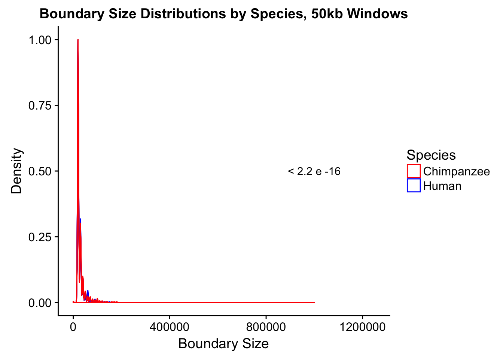
t.test(filter(TADs.5$boundaries, species=="human")$size, filter(TADs.5$boundaries, species=="chimp")$size)
Welch Two Sample t-test
data: filter(TADs.5$boundaries, species == "human")$size and filter(TADs.5$boundaries, species == "chimp")$size
t = -1.8833, df = 3443.7, p-value = 0.05974
alternative hypothesis: true difference in means is not equal to 0
95 percent confidence interval:
-1896.91032 38.15433
sample estimates:
mean of x mean of y
26111.78 27041.16 #Boundary Size by chr...
ggplot(data=TADs.20$boundaries) + geom_density(aes(x=size, group=ID, color=species, y=..scaled..)) + ggtitle("Boundary Size Distributions by Species, 200kb Windows") + xlab("Boundary Size") + ylab("Density") + scale_color_manual("Species", values=c("red", "blue"), labels=c("Chimpanzee", "Human")) + facet_wrap(~chr)#+ annotate("text", x=1000000, y=0.5, label="< 2.2 e -16") + facet_wrap(~chr)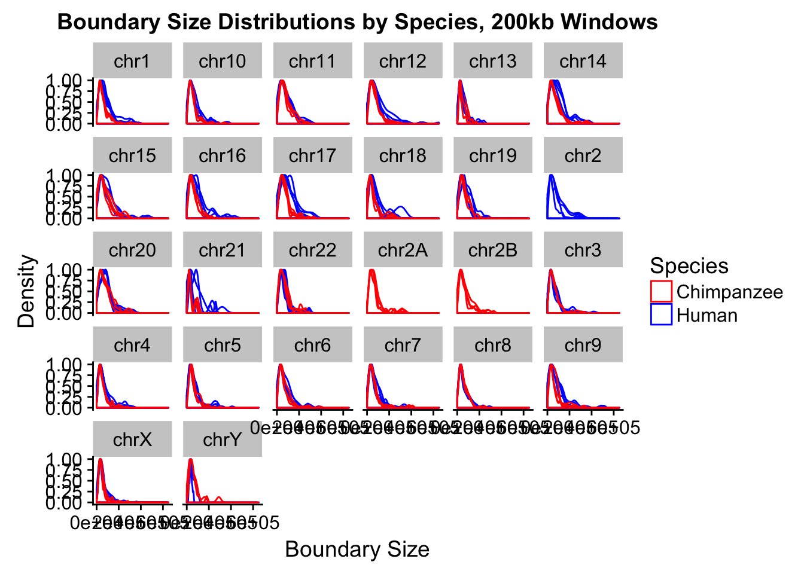
#Do it on ONLY ortho regions: Need to just do a basic re-run of this comparison on ortho boundaries in the orthos folder of /Users/ittaieres/Desktop/Hi-C/pgltoolswork/new_updated/TOPDOM, and also on the domains files. Also need to do intersects on domains files to find % consesrvation amongst orthologous TADs.
TAD.stats.ortho <- function(window){
H1s <- fread(paste("~/Desktop/Hi-C/pgltoolswork/new_updated/TOPDOM/orthos/", window, "/H1s.final.merged.bed.ortho.hg38", sep=""), header=FALSE, data.table=FALSE)
H2s <- fread(paste("~/Desktop/Hi-C/pgltoolswork/new_updated/TOPDOM/orthos/", window, "/H2s.final.merged.bed.ortho.hg38", sep=""), header=FALSE, data.table=FALSE)
H3s <- fread(paste("~/Desktop/Hi-C/pgltoolswork/new_updated/TOPDOM/orthos/", window, "/H3s.final.merged.bed.ortho.hg38", sep=""), header=FALSE, data.table=FALSE)
H4s <- fread(paste("~/Desktop/Hi-C/pgltoolswork/new_updated/TOPDOM/orthos/", window, "/H4s.final.merged.bed.ortho.hg38", sep=""), header=FALSE, data.table=FALSE, sep="\t")
C1s <- fread(paste("~/Desktop/Hi-C/pgltoolswork/new_updated/TOPDOM/orthos/", window, "/C1s.final.merged.bed.ortho.panTro5", sep=""), header=FALSE, data.table=FALSE)
C2s <- fread(paste("~/Desktop/Hi-C/pgltoolswork/new_updated/TOPDOM/orthos/", window, "/C2s.final.merged.bed.ortho.panTro5", sep=""), header=FALSE, data.table=FALSE)
C3s <- fread(paste("~/Desktop/Hi-C/pgltoolswork/new_updated/TOPDOM/orthos/", window, "/C3s.final.merged.bed.ortho.panTro5", sep=""), header=FALSE, data.table=FALSE)
C4s <- fread(paste("~/Desktop/Hi-C/pgltoolswork/new_updated/TOPDOM/orthos/", window, "/C4s.final.merged.bed.ortho.panTro5", sep=""), header=FALSE, data.table=FALSE, sep="\t")
H4s <- H4s[,1:3]
C4s <- C4s[,1:3]
colnames(H1s) <- colnames(H2s) <- colnames(H3s) <- colnames(H4s) <- colnames(C1s) <- colnames(C2s) <- colnames(C3s) <- colnames(C4s) <- c("chr", "start", "end")
H1s$size <- H1s$end-H1s$start
H2s$size <- H2s$end-H2s$start
H3s$size <- H3s$end-H3s$start
H4s$size <- H4s$end-H4s$start
C1s$size <- C1s$end-C1s$start
C2s$size <- C2s$end-C2s$start
C3s$size <- C3s$end-C3s$start
C4s$size <- C4s$end-C4s$start
H1s$species <- H2s$species <- H3s$species <- H4s$species <- "human"
C1s$species <- C2s$species <- C3s$species <- C4s$species <- "chimp"
broad.stats <- data.frame(sets=c("H1s", "H2s", "H3s", "H4s", "C1s", "C2s", "C3s", "C4s"), total.TADs=c(nrow(H1s), nrow(H2s), nrow(H3s), nrow(H4s), nrow(C1s), nrow(C2s), nrow(C3s), nrow(C4s)), mean.TAD.size=c(mean(H1s$size), mean(H2s$size), mean(H3s$size), mean(H4s$size), mean(C1s$size), mean(C2s$size), mean(C3s$size), mean(C4s$size)), species=c("human", "human", "human", "human", "chimp", "chimp", "chimp", "chimp"), window=window, stringency=c(1, 2, 3, 4, 1, 2, 3, 4))
result <- list(stats=broad.stats, ones=rbind(H1s, C1s), twos=rbind(H2s, C2s), threes=rbind(H3s, C3s), fours=rbind(H4s, C4s))
return(result)
}
bounds.5 <- TAD.stats.ortho(5)
bounds.10 <- TAD.stats.ortho(10)
bounds.20 <- TAD.stats.ortho(20)
ggboundstats <- rbind(bounds.5$stats, bounds.10$stats, bounds.20$stats)
#Visualize total boundaries found:
ggplot(data=bounds.5$stats) + geom_line(aes(x=stringency, y=total.TADs, color=species)) + xlab("Stringency, # Individuals") + ylab("Total # TAD Boundaries Found") + ggtitle("Number of TAD Boundaries in Each Species vs. Stringency, 50kb")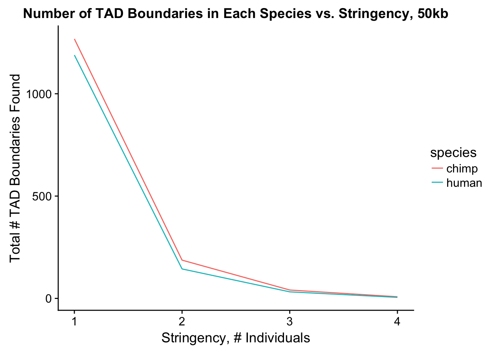
ggplot(data=bounds.10$stats) + geom_line(aes(x=stringency, y=total.TADs, color=species)) + xlab("Stringency, # Individuals") + ylab("Total # TAD Boundaries Found") + ggtitle("Number of TAD Boundaries in Each Species vs. Stringency, 100kb")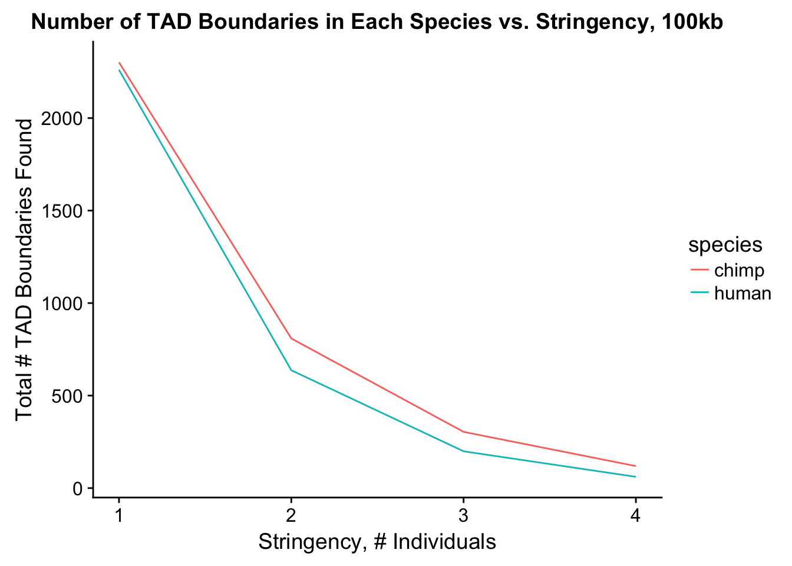
ggplot(data=bounds.20$stats) + geom_line(aes(x=stringency, y=total.TADs, color=species)) + xlab("Stringency, # Individuals") + ylab("Total # TAD Boundaries Found") + ggtitle("Number of TAD Boundaries in Each Species vs. Stringency, 200kb")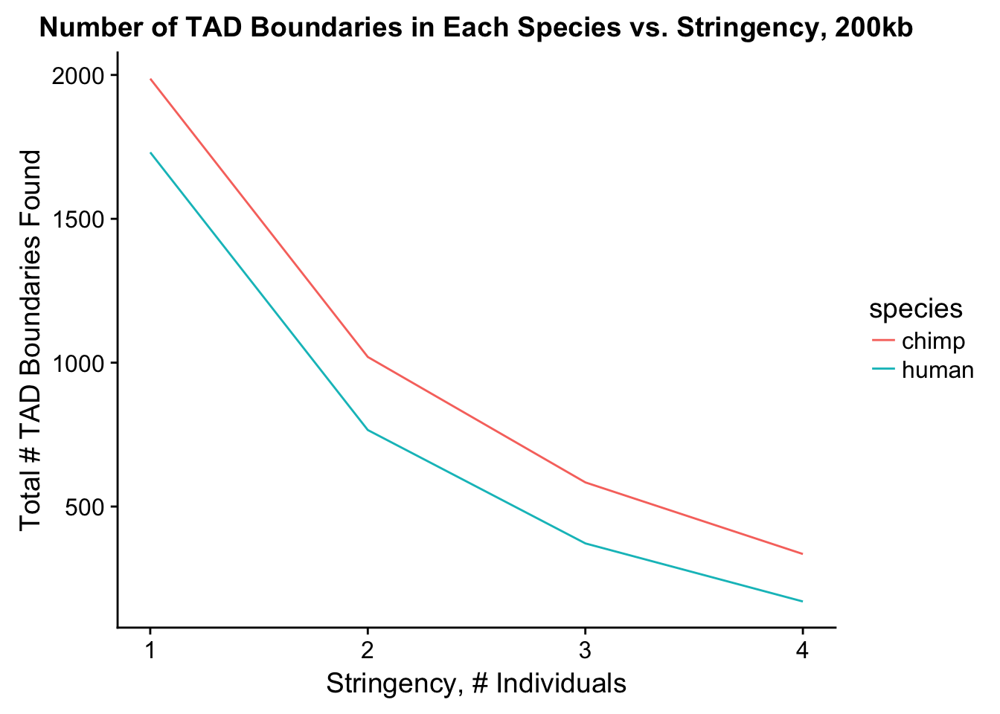
#Visualize mean tad boundaries sizes:
ggplot(data=bounds.5$stats) + geom_line(aes(x=stringency, y=mean.TAD.size, color=species)) + xlab("Stringency, # Individuals") + ylab("Mean TAD Boundary Size") + ggtitle("Mean Boundary Size in Each Species vs. Stringency, 50kb")ggplot(data=bounds.10$stats) + geom_line(aes(x=stringency, y=mean.TAD.size, color=species)) + xlab("Stringency, # Individuals") + ylab("Mean TAD Boundary Size") + ggtitle("Mean Boundary Size in Each Species vs. Stringency, 100kb")ggplot(data=bounds.20$stats) + geom_line(aes(x=stringency, y=mean.TAD.size, color=species)) + xlab("Stringency, # Individuals") + ylab("Mean TAD Boundary Size") + ggtitle("Mean Boundary Size in Each Species vs. Stringency, 200kb")#Now visualize and test boundary size differences in the different sets between species:
ggplot(data=bounds.20$ones) + geom_density(aes(x=size, color=species, y=..scaled..)) + xlab("Size") + ylab("Density") + annotate("text", x=250000, y=0.5, label=signif(t.test(filter(bounds.20$ones, species=="human")$size, filter(bounds.20$ones, species=="chimp")$size)$p.value, 2)) + coord_cartesian(xlim=c(0, 500000)) + ggtitle("200kb TAD Boundary Size Distributions by Species | 1")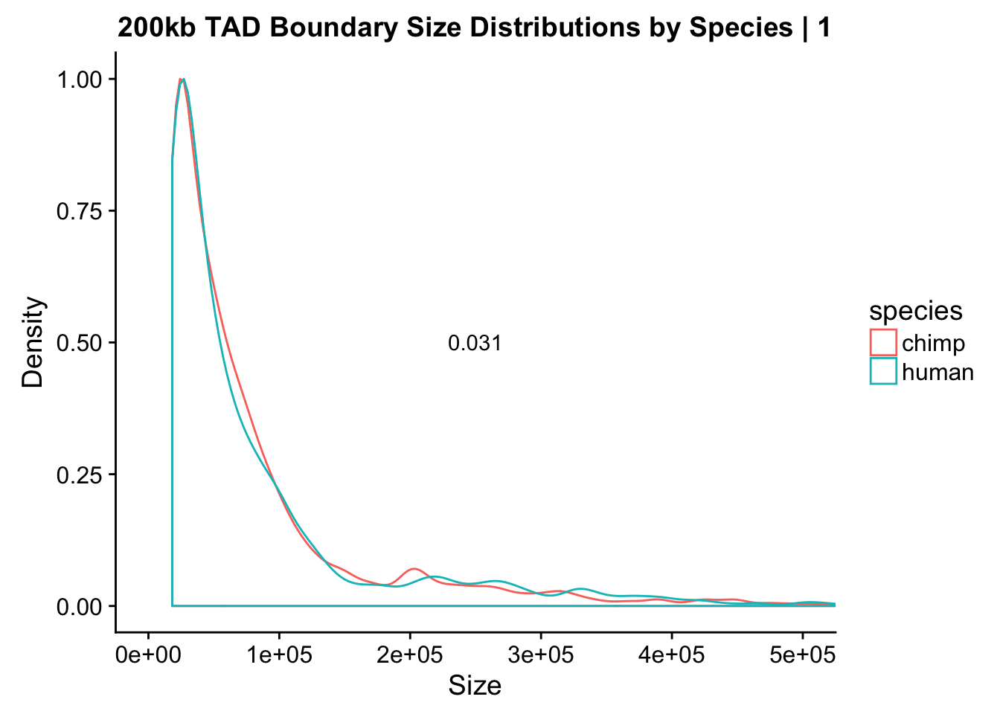
ggplot(data=bounds.20$twos) + geom_density(aes(x=size, color=species, y=..scaled..)) + xlab("Size") + ylab("Density") + annotate("text", x=250000, y=0.5, label=signif(t.test(filter(bounds.20$twos, species=="human")$size, filter(bounds.20$twos, species=="chimp")$size)$p.value, 2)) + coord_cartesian(xlim=c(0, 500000)) + ggtitle("200kb TAD Boundary Size Distributions by Species | 2")
ggplot(data=bounds.20$threes) + geom_density(aes(x=size, color=species, y=..scaled..)) + xlab("Size") + ylab("Density") + annotate("text", x=250000, y=0.5, label=signif(t.test(filter(bounds.20$threes, species=="human")$size, filter(bounds.20$threes, species=="chimp")$size)$p.value, 2)) + coord_cartesian(xlim=c(0, 500000)) + ggtitle("200kb TAD Boundary Size Distributions by Species | 3")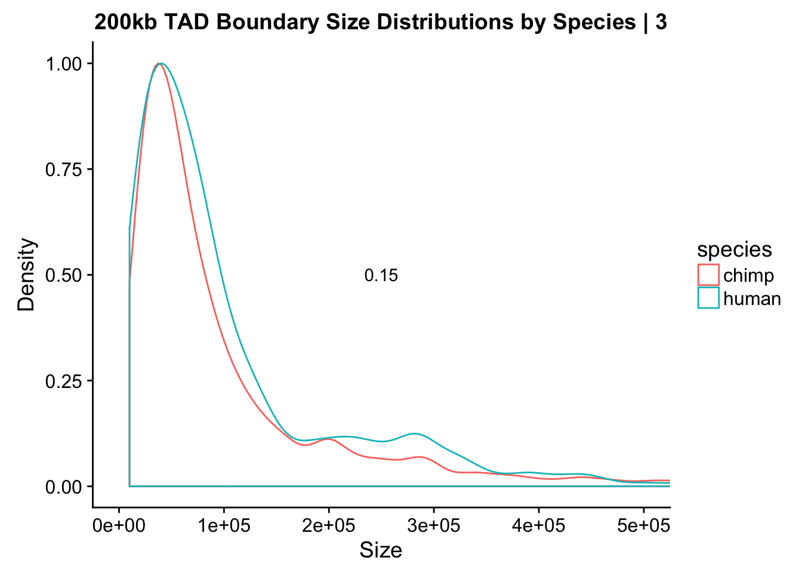
ggplot(data=bounds.20$fours) + geom_density(aes(x=size, color=species, y=..scaled..)) + xlab("Size") + ylab("Density") + annotate("text", x=250000, y=0.5, label=signif(t.test(filter(bounds.20$fours, species=="human")$size, filter(bounds.20$fours, species=="chimp")$size)$p.value, 2)) + coord_cartesian(xlim=c(0, 500000)) + ggtitle("200kb TAD Boundary Size Distributions by Species | 4")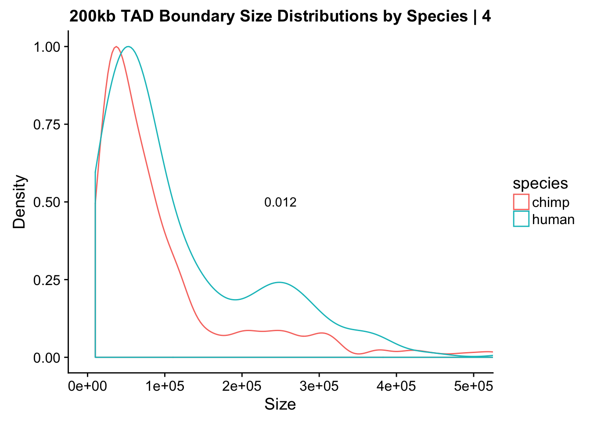
ggplot(data=bounds.10$ones) + geom_density(aes(x=size, color=species, y=..scaled..)) + xlab("Size") + ylab("Density") + annotate("text", x=250000, y=0.5, label=signif(t.test(filter(bounds.10$ones, species=="human")$size, filter(bounds.10$ones, species=="chimp")$size)$p.value, 2)) + coord_cartesian(xlim=c(0, 500000)) + ggtitle("100kb TAD Boundary Size Distributions by Species | 1")ggplot(data=bounds.10$twos) + geom_density(aes(x=size, color=species, y=..scaled..)) + xlab("Size") + ylab("Density") + annotate("text", x=250000, y=0.5, label=signif(t.test(filter(bounds.10$twos, species=="human")$size, filter(bounds.10$twos, species=="chimp")$size)$p.value, 2)) + coord_cartesian(xlim=c(0, 500000)) + ggtitle("100kb TAD Boundary Size Distributions by Species | 2")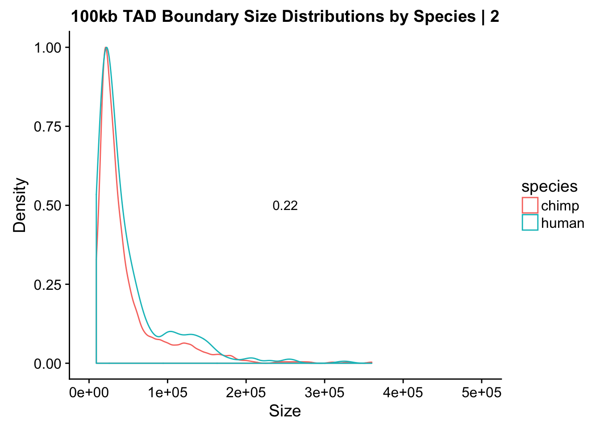
ggplot(data=bounds.10$threes) + geom_density(aes(x=size, color=species, y=..scaled..)) + xlab("Size") + ylab("Density") + annotate("text", x=250000, y=0.5, label=signif(t.test(filter(bounds.10$threes, species=="human")$size, filter(bounds.10$threes, species=="chimp")$size)$p.value, 2)) + coord_cartesian(xlim=c(0, 500000)) + ggtitle("100kb TAD Boundary Size Distributions by Species | 3")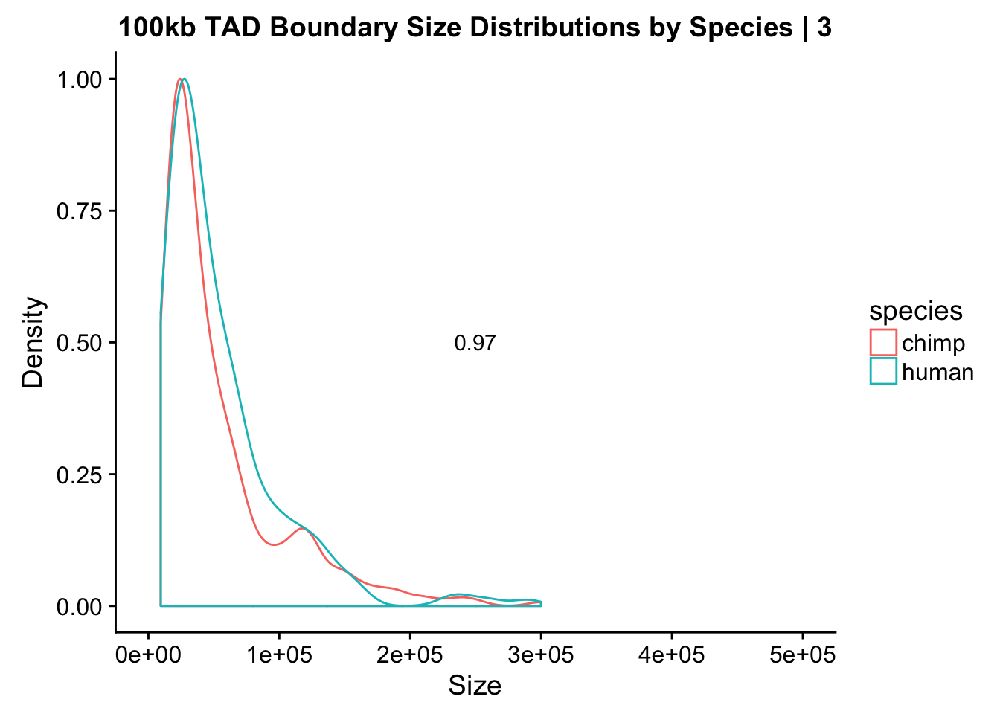
ggplot(data=bounds.10$fours) + geom_density(aes(x=size, color=species, y=..scaled..)) + xlab("Size") + ylab("Density") + annotate("text", x=250000, y=0.5, label=signif(t.test(filter(bounds.10$fours, species=="human")$size, filter(bounds.10$fours, species=="chimp")$size)$p.value, 2)) + coord_cartesian(xlim=c(0, 500000)) + ggtitle("100kb TAD Boundary Size Distributions by Species | 4")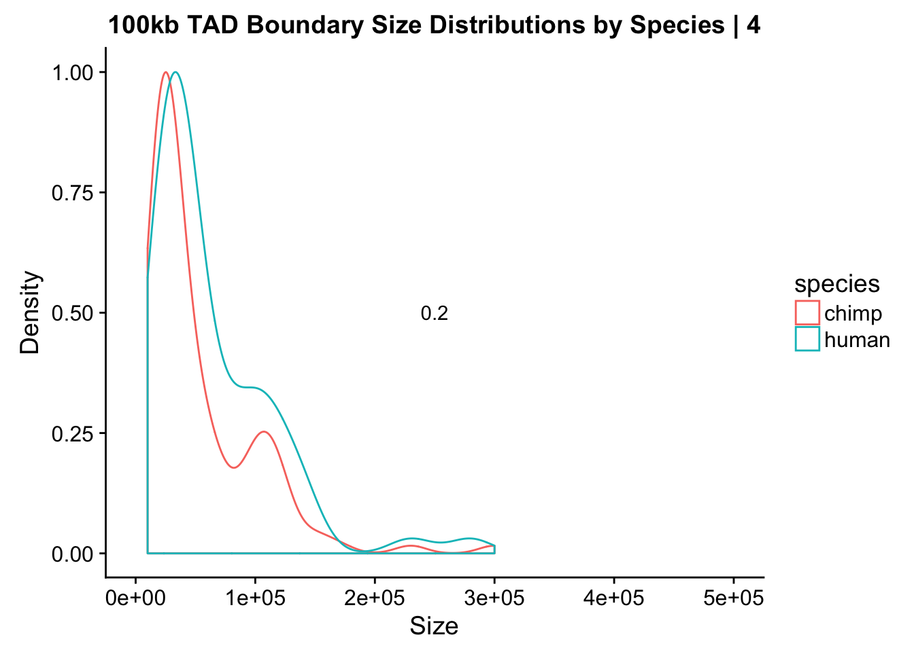
ggplot(data=bounds.5$ones) + geom_density(aes(x=size, color=species, y=..scaled..)) + xlab("Size") + ylab("Density") + annotate("text", x=250000, y=0.5, label=signif(t.test(filter(bounds.5$ones, species=="human")$size, filter(bounds.5$ones, species=="chimp")$size)$p.value, 2)) + coord_cartesian(xlim=c(0, 500000)) + ggtitle("50kb TAD Boundary Size Distributions by Species | 1")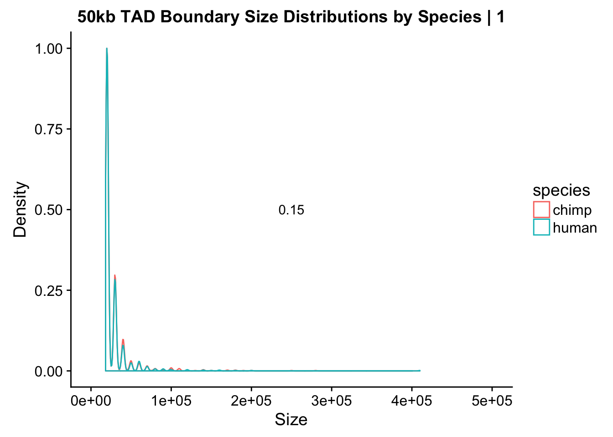
ggplot(data=bounds.5$twos) + geom_density(aes(x=size, color=species, y=..scaled..)) + xlab("Size") + ylab("Density") + annotate("text", x=250000, y=0.5, label=signif(t.test(filter(bounds.5$twos, species=="human")$size, filter(bounds.5$twos, species=="chimp")$size)$p.value, 2)) + coord_cartesian(xlim=c(0, 500000)) + ggtitle("50kb TAD Boundary Size Distributions by Species | 2")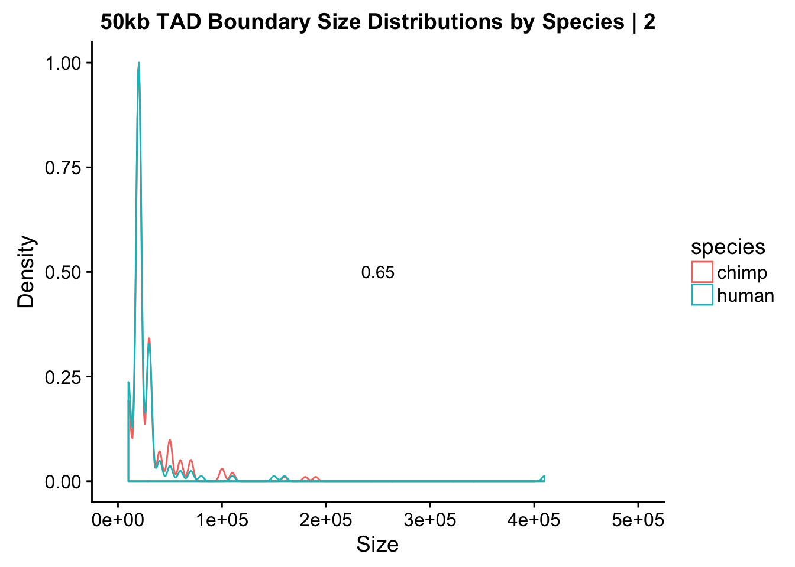
ggplot(data=bounds.5$threes) + geom_density(aes(x=size, color=species, y=..scaled..)) + xlab("Size") + ylab("Density") + annotate("text", x=250000, y=0.5, label=signif(t.test(filter(bounds.5$threes, species=="human")$size, filter(bounds.5$threes, species=="chimp")$size)$p.value, 2)) + coord_cartesian(xlim=c(0, 500000)) + ggtitle("50kb TAD Boundary Size Distributions by Species | 3")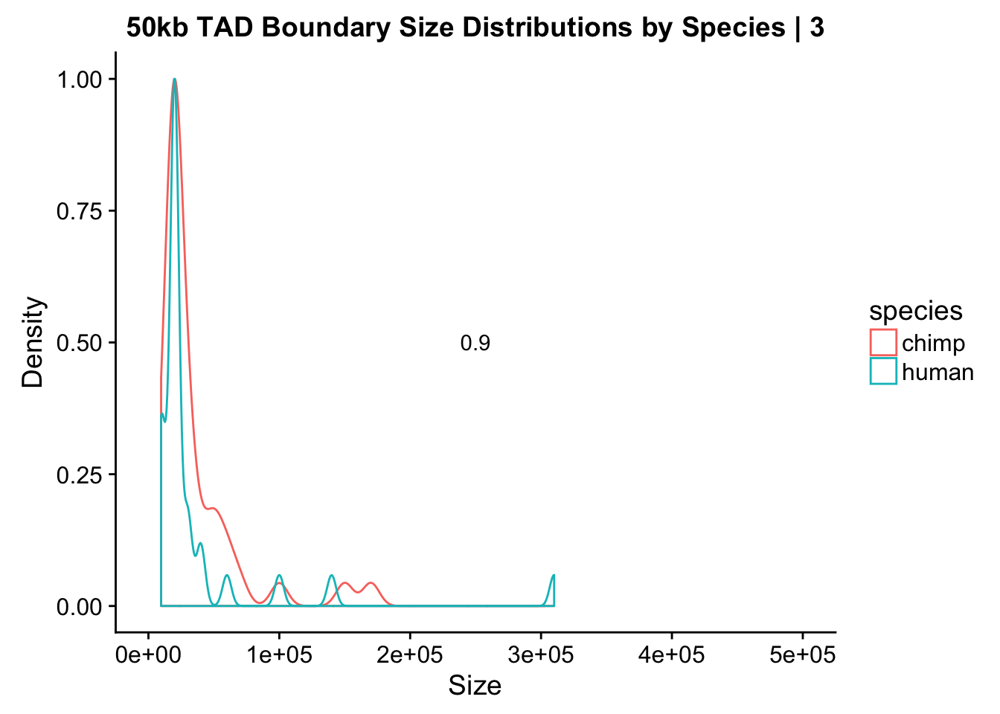
ggplot(data=bounds.5$fours) + geom_density(aes(x=size, color=species, y=..scaled..)) + xlab("Size") + ylab("Density") + annotate("text", x=250000, y=0.5, label=signif(t.test(filter(bounds.5$fours, species=="human")$size, filter(bounds.5$fours, species=="chimp")$size)$p.value, 2)) + coord_cartesian(xlim=c(0, 500000)) + ggtitle("50kb TAD Boundary Size Distributions by Species | 4")######Final TAD function to do all this work for me in the conserved RBHLO domains!
ortho.TAD.domains <- function(window){
A_TAD <- fread(paste("~/Desktop/Hi-C/pgltoolswork/new_updated/TOPDOM/domains/", window,"/trueortho/A-21792_TOPDOM_ALL.", window, ".domain.domains.clean.ortho.hg38", sep=""), header=TRUE, data.table=FALSE)
B_TAD <- fread(paste("~/Desktop/Hi-C/pgltoolswork/new_updated/TOPDOM/domains/", window, "/trueortho/B-28126_TOPDOM_ALL.", window, ".domain.domains.clean.ortho.hg38", sep=""), header=TRUE, data.table=FALSE)
C_TAD <- fread(paste("~/Desktop/Hi-C/pgltoolswork/new_updated/TOPDOM/domains/", window, "/trueortho/C-3649_TOPDOM_ALL.", window, ".domain.domains.clean.ortho.panTro5", sep=""), header=TRUE, data.table=FALSE)
D_TAD <- fread(paste("~/Desktop/Hi-C/pgltoolswork/new_updated/TOPDOM/domains/", window, "/trueortho/D-40300_TOPDOM_ALL.", window, ".domain.domains.clean.ortho.panTro5", sep=""), header=TRUE, data.table=FALSE)
E_TAD <- fread(paste("~/Desktop/Hi-C/pgltoolswork/new_updated/TOPDOM/domains/", window, "/trueortho/E-28815_TOPDOM_ALL.", window, ".domain.domains.clean.ortho.hg38", sep=""), header=TRUE, data.table=FALSE)
F_TAD <- fread(paste("~/Desktop/Hi-C/pgltoolswork/new_updated/TOPDOM/domains/", window, "/trueortho/F-28834_TOPDOM_ALL.", window, ".domain.domains.clean.ortho.hg38", sep=""), header=TRUE, data.table=FALSE)
G_TAD <- fread(paste("~/Desktop/Hi-C/pgltoolswork/new_updated/TOPDOM/domains/", window, "/trueortho/G-3624_TOPDOM_ALL.", window, ".domain.domains.clean.ortho.panTro5", sep=""), header=TRUE, data.table=FALSE)
H_TAD <- fread(paste("~/Desktop/Hi-C/pgltoolswork/new_updated/TOPDOM/domains/", window, "/trueortho/H-3651_TOPDOM_ALL.", window, ".domain.domains.clean.ortho.panTro5", sep=""), header=TRUE, data.table=FALSE)
colnames(A_TAD) <- colnames(B_TAD) <- colnames(C_TAD) <- colnames(D_TAD) <- colnames(E_TAD) <- colnames(F_TAD) <- colnames(G_TAD) <- colnames(H_TAD) <- c("chr", "start", "end")
A_TAD$species <- B_TAD$species <- E_TAD$species <- F_TAD$species <- "human"
C_TAD$species <- D_TAD$species <- G_TAD$species <- H_TAD$species <- "chimp"
A_TAD$ID <- "A"
B_TAD$ID <- "B"
C_TAD$ID <- "C"
D_TAD$ID <- "D"
E_TAD$ID <- "E"
F_TAD$ID <- "F"
G_TAD$ID <- "G"
H_TAD$ID <- "H"
A_TAD$size <- A_TAD$end-A_TAD$start
B_TAD$size <- B_TAD$end-B_TAD$start
C_TAD$size <- C_TAD$end-C_TAD$start
D_TAD$size <- D_TAD$end-D_TAD$start
E_TAD$size <- E_TAD$end-E_TAD$start
F_TAD$size <- F_TAD$end-F_TAD$start
G_TAD$size <- G_TAD$end-G_TAD$start
H_TAD$size <- H_TAD$end-H_TAD$start
ggdomains <- rbind(select(A_TAD, chr, size, species, ID), select(B_TAD, chr, size, species, ID), select(C_TAD, chr, size, species, ID), select(D_TAD, chr, size, species, ID), select(E_TAD, chr, size, species, ID), select(F_TAD, chr, size, species, ID), select(G_TAD, chr, size, species, ID), select(H_TAD, chr, size, species, ID))
broad.stats <- data.frame(individuals=c("A", "B", "C", "D", "E", "F", "G", "H"), species=c("human", "human", "chimp", "chimp", "human", "human", "chimp", "chimp"), total.TADs=c(nrow(A_TAD), nrow(B_TAD), nrow(C_TAD), nrow(D_TAD), nrow(E_TAD), nrow(F_TAD), nrow(G_TAD), nrow(H_TAD)), mean.TAD.size=c(mean(A_TAD$size), mean(B_TAD$size), mean(C_TAD$size), mean(D_TAD$size), mean(E_TAD$size), mean(F_TAD$size), mean(G_TAD$size), mean(H_TAD$size)))
result <- list(stats=broad.stats, domains=ggdomains)
return(result)
}
result.20 <- ortho.TAD.domains(20)
result.10 <- ortho.TAD.domains(10)
result.5 <- ortho.TAD.domains(5)
result.20$stats$window <- 200
result.10$stats$window <- 100
result.5$stats$window <- 50
ggdomainstats <- rbind(result.5$stats, result.10$stats, result.20$stats)
#Visualize total domains found:
ggplot(data=ggdomainstats) + geom_line(aes(x=window, y=total.TADs, color=species, group=individuals)) + xlab("TopDom Window Size Used (kb)") + ylab("Total # TADs Found") + ggtitle("Number of TADs in Each Species by Window Size") + annotate("text", x=50, y=12500, label=signif(t.test(filter(ggdomainstats, window==50, species=="human")$total.TADs, filter(ggdomainstats, window==50, species=="chimp")$total.TADs)$p.value,2), size=3) + annotate("text", x=100, y=13500, label=signif(t.test(filter(ggdomainstats, window==100, species=="human")$total.TADs, filter(ggdomainstats, window==100, species=="chimp")$total.TADs)$p.value,2), size=3) + annotate("text", x=200, y=10000, label=signif(t.test(filter(ggdomainstats, window==200, species=="human")$total.TADs, filter(ggdomainstats, window==200, species=="chimp")$total.TADs)$p.value,2), size=3)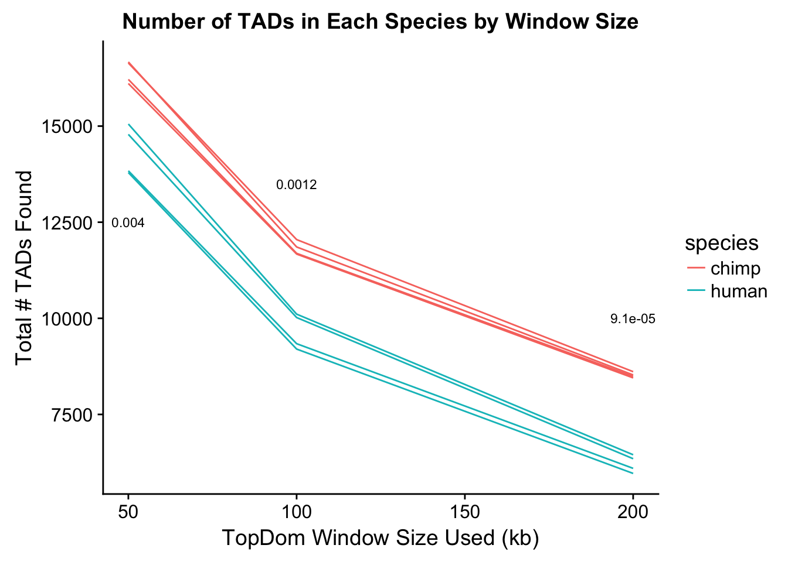
#Same thing, but for mean TAD size rather than total number found:
ggplot(data=ggdomainstats) + geom_line(aes(x=window, y=mean.TAD.size, color=species, group=individuals)) + xlab("TopDom Window Size Used (kb)") + ylab("Mean TAD Size") + ggtitle("Mean TAD Size in Each Species by Window Size") + annotate("text", x=50, y=125000, label=signif(t.test(filter(ggdomainstats, window==50, species=="human")$mean.TAD.size, filter(ggdomainstats, window==50, species=="chimp")$mean.TAD.size)$p.value,2), size=3) + annotate("text", x=100, y=185000, label=signif(t.test(filter(ggdomainstats, window==100, species=="human")$mean.TAD.size, filter(ggdomainstats, window==100, species=="chimp")$mean.TAD.size)$p.value,2), size=3) + annotate("text", x=195, y=250000, label=signif(t.test(filter(ggdomainstats, window==200, species=="human")$mean.TAD.size, filter(ggdomainstats, window==200, species=="chimp")$mean.TAD.size)$p.value,2), size=3)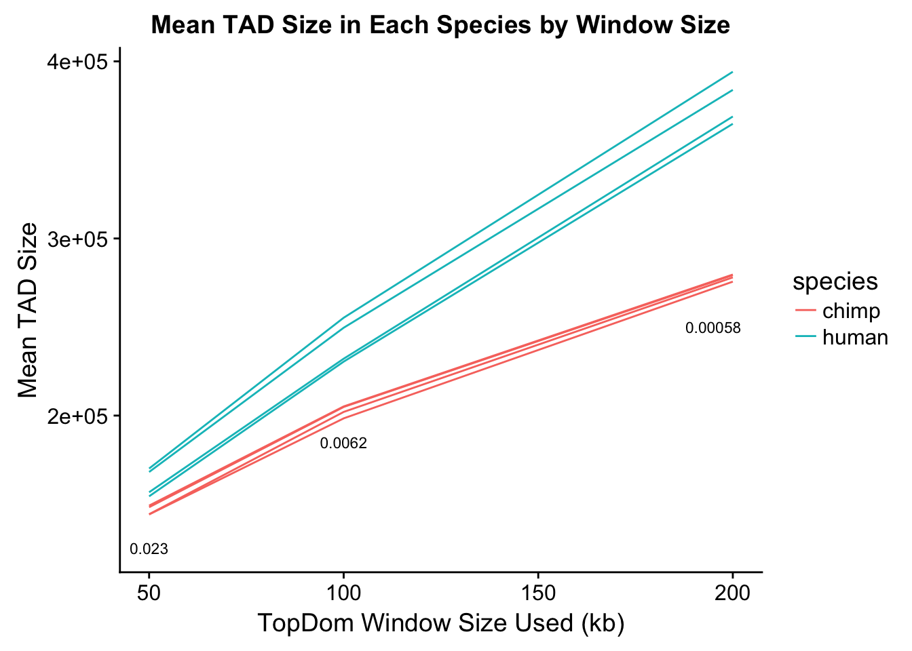
#Finally, direct assessment of TAD sizes:
ggplot(data=result.20$domains) + geom_density(aes(x=size, y=..scaled.., color=species, group=ID)) + ylab("Density") + xlab("TAD Size") + ggtitle("TAD Size Distributions, Humans vs. Chimps, 200 kb Window") + annotate("text", x=1000000, y=0.5, label="< 2.2 e -16") + coord_cartesian(xlim=c(0,2000000))t.test(filter(result.20$domains, species=="human")$size, filter(result.20$domains, species=="chimp")$size)$p.value[1] 0#Test these same metrics again, but this time on Lindsey's data--looking for significant difference in TAD sizes compared to my human dist'n. Note that LEM's data is using w=5, as their resolution is 40kb (so 200kb window size for each of us, I'm 10kb res w/ w=20).
LEMTAD <- fread("~/Desktop/Hi-C/LEM_TADs/TADs-domain-WG-iPSC-combined-40kb-w5.bed", header=FALSE, data.table=FALSE)
LEMTAD$size <- LEMTAD$V3-LEMTAD$V2
LEMTAD$type <- "LEM"
ggcompare <- data.frame(size=filter(result.20$domains, species=="human")$size, type="IEE")
chimpgg <- data.frame(size=filter(result.20$domains, species=="chimp")$size, type="chimp")
ggcomparer <- rbind(ggcompare, LEMTAD[,5:6], chimpgg)
ggplot(data=ggcomparer) + geom_density(aes(x=size, y=..scaled.., color=type)) + ylab("Density") + xlab("TAD Size") + ggtitle("TAD Size Distn's, IEE vs. LEM")t.test(filter(result.20$domains, species=="chimp")$size, filter(ggcomparer, type=="LEM")$size)
Welch Two Sample t-test
data: filter(result.20$domains, species == "chimp")$size and filter(ggcomparer, type == "LEM")$size
t = -47.513, df = 7531.6, p-value < 2.2e-16
alternative hypothesis: true difference in means is not equal to 0
95 percent confidence interval:
-181201.5 -166842.2
sample estimates:
mean of x mean of y
278140.5 452162.4 #Confirms the effect I'm seeing (significantly smaller TADs in chimps) is not just specific to my experiment!
#####MORE TopDOM, but done on 25kb resolution matrices!
ortho.TAD.domains <- function(window){
A_TAD <- fread(paste("~/Desktop/Hi-C/pgltoolswork/new_updated/TOPDOM/25kb/", window,"/A-21792_TOPDOM_ALL.domain.domains.clean.ortho.hg38", sep=""), header=TRUE, data.table=FALSE)
B_TAD <- fread(paste("~/Desktop/Hi-C/pgltoolswork/new_updated/TOPDOM/25kb/", window, "/B-28126_TOPDOM_ALL.domain.domains.clean.ortho.hg38", sep=""), header=TRUE, data.table=FALSE)
C_TAD <- fread(paste("~/Desktop/Hi-C/pgltoolswork/new_updated/TOPDOM/25kb/", window, "/C-3649_TOPDOM_ALL.domain.domains.clean.ortho.panTro5", sep=""), header=TRUE, data.table=FALSE)
D_TAD <- fread(paste("~/Desktop/Hi-C/pgltoolswork/new_updated/TOPDOM/25kb/", window, "/D-40300_TOPDOM_ALL.domain.domains.clean.ortho.panTro5", sep=""), header=TRUE, data.table=FALSE)
E_TAD <- fread(paste("~/Desktop/Hi-C/pgltoolswork/new_updated/TOPDOM/25kb/", window, "/E-28815_TOPDOM_ALL.domain.domains.clean.ortho.hg38", sep=""), header=TRUE, data.table=FALSE)
F_TAD <- fread(paste("~/Desktop/Hi-C/pgltoolswork/new_updated/TOPDOM/25kb/", window, "/F-28834_TOPDOM_ALL.domain.domains.clean.ortho.hg38", sep=""), header=TRUE, data.table=FALSE)
G_TAD <- fread(paste("~/Desktop/Hi-C/pgltoolswork/new_updated/TOPDOM/25kb/", window, "/G-3624_TOPDOM_ALL.domain.domains.clean.ortho.panTro5", sep=""), header=TRUE, data.table=FALSE)
H_TAD <- fread(paste("~/Desktop/Hi-C/pgltoolswork/new_updated/TOPDOM/25kb/", window, "/H-3651_TOPDOM_ALL.domain.domains.clean.ortho.panTro5", sep=""), header=TRUE, data.table=FALSE)
colnames(A_TAD) <- colnames(B_TAD) <- colnames(C_TAD) <- colnames(D_TAD) <- colnames(E_TAD) <- colnames(F_TAD) <- colnames(G_TAD) <- colnames(H_TAD) <- c("chr", "start", "end")
A_TAD$species <- B_TAD$species <- E_TAD$species <- F_TAD$species <- "human"
C_TAD$species <- D_TAD$species <- G_TAD$species <- H_TAD$species <- "chimp"
A_TAD$ID <- "A"
B_TAD$ID <- "B"
C_TAD$ID <- "C"
D_TAD$ID <- "D"
E_TAD$ID <- "E"
F_TAD$ID <- "F"
G_TAD$ID <- "G"
H_TAD$ID <- "H"
A_TAD$size <- A_TAD$end-A_TAD$start
B_TAD$size <- B_TAD$end-B_TAD$start
C_TAD$size <- C_TAD$end-C_TAD$start
D_TAD$size <- D_TAD$end-D_TAD$start
E_TAD$size <- E_TAD$end-E_TAD$start
F_TAD$size <- F_TAD$end-F_TAD$start
G_TAD$size <- G_TAD$end-G_TAD$start
H_TAD$size <- H_TAD$end-H_TAD$start
ggdomains <- rbind(select(A_TAD, chr, size, species, ID), select(B_TAD, chr, size, species, ID), select(C_TAD, chr, size, species, ID), select(D_TAD, chr, size, species, ID), select(E_TAD, chr, size, species, ID), select(F_TAD, chr, size, species, ID), select(G_TAD, chr, size, species, ID), select(H_TAD, chr, size, species, ID))
broad.stats <- data.frame(individuals=c("A", "B", "C", "D", "E", "F", "G", "H"), species=c("human", "human", "chimp", "chimp", "human", "human", "chimp", "chimp"), total.TADs=c(nrow(A_TAD), nrow(B_TAD), nrow(C_TAD), nrow(D_TAD), nrow(E_TAD), nrow(F_TAD), nrow(G_TAD), nrow(H_TAD)), mean.TAD.size=c(mean(A_TAD$size), mean(B_TAD$size), mean(C_TAD$size), mean(D_TAD$size), mean(E_TAD$size), mean(F_TAD$size), mean(G_TAD$size), mean(H_TAD$size)))
result <- list(stats=broad.stats, domains=ggdomains)
return(result)
}
result.20 <- ortho.TAD.domains(20)
result.15 <- ortho.TAD.domains(15)
result.10 <- ortho.TAD.domains(10)
result.5 <- ortho.TAD.domains(5)
result.20$stats$window <- 500
result.15$stats$window <- 375
result.10$stats$window <- 250
result.5$stats$window <- 125
ggdomainstats <- rbind(result.5$stats, result.10$stats, result.15$stats, result.20$stats)
#Visualize total domains found:
ggplot(data=ggdomainstats) + geom_line(aes(x=window, y=total.TADs, color=species, group=individuals)) + xlab("TopDom Window Size Used (kb)") + ylab("Total # TADs Found") + ggtitle("Number of TADs in Each Species by Window Size") + annotate("text", x=125, y=9000, label=signif(t.test(filter(ggdomainstats, window==125, species=="human")$total.TADs, filter(ggdomainstats, window==125, species=="chimp")$total.TADs)$p.value,2), size=3) + annotate("text", x=250, y=13500, label=signif(t.test(filter(ggdomainstats, window==250, species=="human")$total.TADs, filter(ggdomainstats, window==250, species=="chimp")$total.TADs)$p.value,2), size=3) + annotate("text", x=375, y=10000, label=signif(t.test(filter(ggdomainstats, window==375, species=="human")$total.TADs, filter(ggdomainstats, window==375, species=="chimp")$total.TADs)$p.value,2), size=3) + annotate("text", x=500, y=10000, label=signif(t.test(filter(ggdomainstats, window==500, species=="human")$total.TADs, filter(ggdomainstats, window==500, species=="chimp")$total.TADs)$p.value,2), size=3)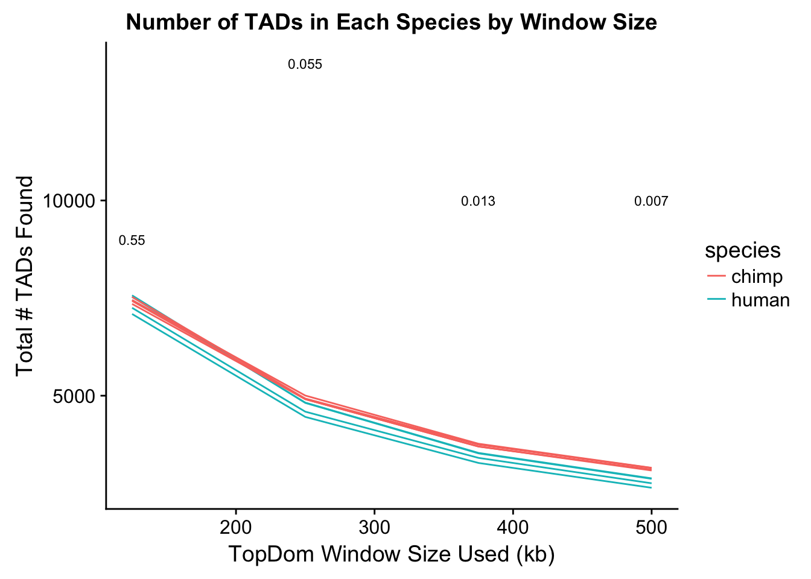
#Same thing, but for mean TAD size rather than total number found:
ggplot(data=ggdomainstats) + geom_line(aes(x=window, y=mean.TAD.size, color=species, group=individuals)) + xlab("TopDom Window Size Used (kb)") + ylab("Mean TAD Size") + ggtitle("Mean TAD Size in Each Species by Window Size") + annotate("text", x=125, y=500000, label=signif(t.test(filter(ggdomainstats, window==125, species=="human")$mean.TAD.size, filter(ggdomainstats, window==125, species=="chimp")$mean.TAD.size)$p.value,2), size=3) + annotate("text", x=250, y=650000, label=signif(t.test(filter(ggdomainstats, window==250, species=="human")$mean.TAD.size, filter(ggdomainstats, window==250, species=="chimp")$mean.TAD.size)$p.value,2), size=3) + annotate("text", x=375, y=500000, label=signif(t.test(filter(ggdomainstats, window==375, species=="human")$mean.TAD.size, filter(ggdomainstats, window==375, species=="chimp")$mean.TAD.size)$p.value,2), size=3) + annotate("text", x=500, y=500000, label=signif(t.test(filter(ggdomainstats, window==500, species=="human")$mean.TAD.size, filter(ggdomainstats, window==500, species=="chimp")$mean.TAD.size)$p.value,2), size=3)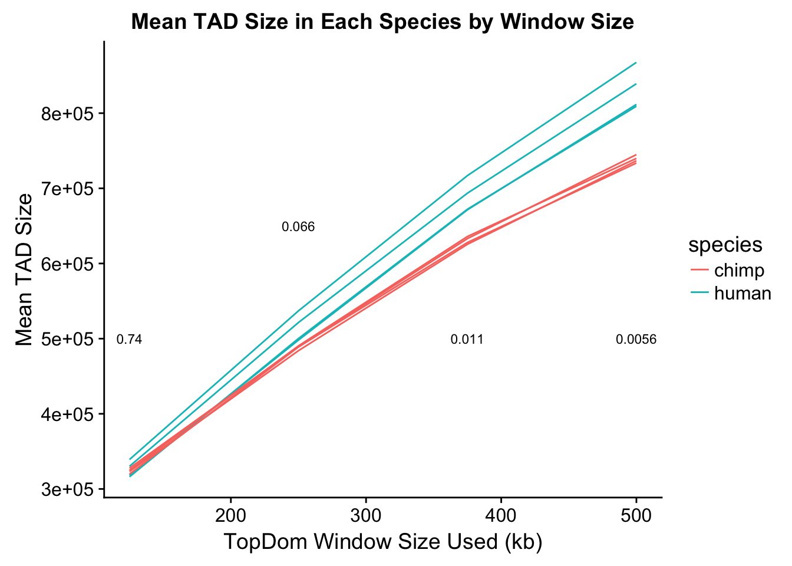
#Finally, direct assessment of TAD sizes:
ggplot(data=result.20$domains) + geom_density(aes(x=size, y=..scaled.., color=species, group=ID)) + ylab("Density") + xlab("TAD Size") + ggtitle("TAD Size Distributions, Humans vs. Chimps, 500 kb Window") + annotate("text", x=1000000, y=0.5, label=signif(t.test(filter(result.20$domains, species=="human")$size, filter(result.20$domains, species=="chimp")$size)$p.value, 2)) + coord_cartesian(xlim=c(0,2000000))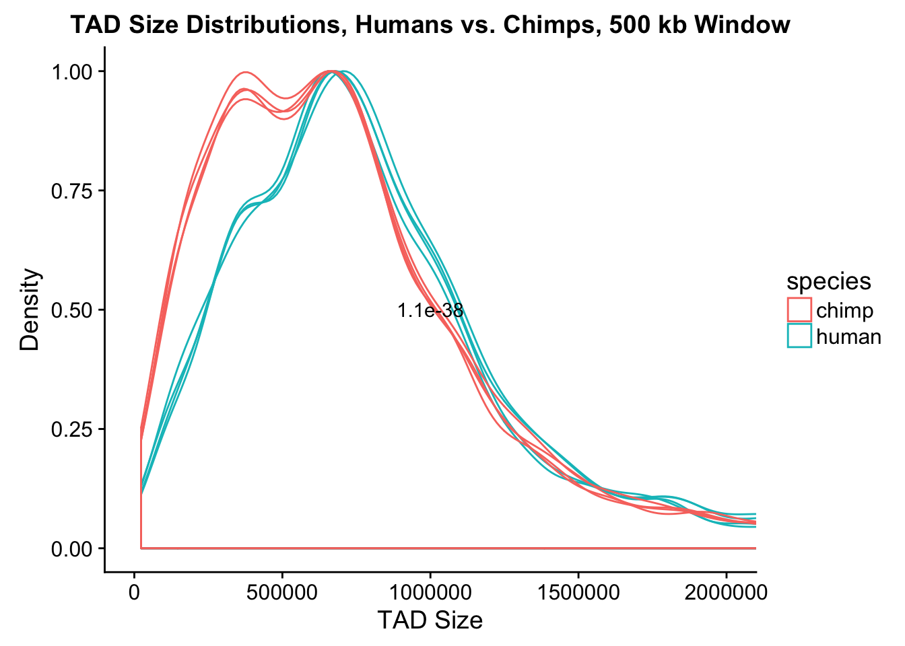
t.test(filter(result.20$domains, species=="human")$size, filter(result.20$domains, species=="chimp")$size)
Welch Two Sample t-test
data: filter(result.20$domains, species == "human")$size and filter(result.20$domains, species == "chimp")$size
t = 13.03, df = 23241, p-value < 2.2e-16
alternative hypothesis: true difference in means is not equal to 0
95 percent confidence interval:
78456.29 106239.85
sample estimates:
mean of x mean of y
831082.2 738734.1 ############JUICER ARROWHEAD TAD ANALYSIS############
ATAD <- fread("~/Desktop/Hi-C/ARROWTADs/A-21792.domains", data.table = FALSE)
ATAD.ortho <- fread("~/Desktop/Hi-C/ARROWTADs/A-21792.domains.ortho.hg38", data.table = FALSE)
BTAD <- fread("~/Desktop/Hi-C/ARROWTADs/B-28126.domains", data.table = FALSE)
BTAD.ortho <- fread("~/Desktop/Hi-C/ARROWTADs/B-28126.domains.ortho.hg38", data.table = FALSE)
CTAD <- fread("~/Desktop/Hi-C/ARROWTADs/C-3649.domains", data.table=FALSE)
CTAD.ortho <- fread("~/Desktop/Hi-C/ARROWTADs/C-3649.domains.ortho.panTro5")
DTAD <- fread("~/Desktop/Hi-C/ARROWTADs/D-40300.domains", data.table=FALSE)
DTAD.ortho <- fread("~/Desktop/Hi-C/ARROWTADs/D-40300.domains.ortho.panTro5", data.table=FALSE)
ETAD <- fread("~/Desktop/Hi-C/ARROWTADs/E-28815.domains", data.table = FALSE)
ETAD.ortho <- fread("~/Desktop/Hi-C/ARROWTADs/E-28815.domains.ortho.hg38", data.table = FALSE)
FTAD <- fread("~/Desktop/Hi-C/ARROWTADs/F-28834.domains", data.table = FALSE)
FTAD.ortho <- fread("~/Desktop/Hi-C/ARROWTADs/F-28834.domains.ortho.hg38", data.table = FALSE)
GTAD <- fread("~/Desktop/Hi-C/ARROWTADs/G-3624.domains", data.table = FALSE)
GTAD.ortho <- fread("~/Desktop/Hi-C/ARROWTADs/G-3624.domains.ortho.panTro5", data.table=FALSE)
HTAD <- fread("~/Desktop/Hi-C/ARROWTADs/H-3651.domains", data.table=FALSE)
HTAD.ortho <- fread("~/Desktop/Hi-C/ARROWTADs/H-3651.domains.ortho.panTro5", data.table=FALSE)
sizer <- function(df, spec, indi){
colnames(df) <- c("chr", "start", "end")
df$size <- df$end-df$start
df$species <- spec
df$ID <- indi
df$total.TADs <- nrow(df)
df$mean.size <- mean(df$size)
return(df)
}
ATAD <- sizer(ATAD, "human", "A")
ATAD.ortho <- sizer(ATAD.ortho, "human", "A")
BTAD <- sizer(BTAD, "human", "B")
BTAD.ortho <- sizer(BTAD.ortho, "human", "B")
CTAD <- sizer(CTAD, "chimpanzee", "C")
CTAD.ortho <- sizer(CTAD.ortho, "chimpanzee", "C")
DTAD <- sizer(DTAD, "chimpanzee", "D")
DTAD.ortho <- sizer(DTAD.ortho, "chimpanzee", "D")
ETAD <- sizer(ETAD, "human", "E")
ETAD.ortho <- sizer(ETAD.ortho, "human", "E")
FTAD <- sizer(FTAD, "human", "F")
FTAD.ortho <- sizer(FTAD.ortho, "human", "F")
GTAD <- sizer(GTAD, "chimpanzee", "G")
GTAD.ortho <- sizer(GTAD.ortho, "chimpanzee", "G")
HTAD <- sizer(HTAD, "chimpanzee", "H")
HTAD.ortho <- sizer(HTAD.ortho, "chimpanzee", "H")
ALLTADS <- rbind(ATAD, BTAD, CTAD, DTAD, ETAD, FTAD, GTAD, HTAD)
ORTHOTADS <- rbind(ATAD.ortho, BTAD.ortho, CTAD.ortho, DTAD.ortho, ETAD.ortho, FTAD.ortho, GTAD.ortho, HTAD.ortho)
#Don't bother looking at total TADs called and their mean sizes; not really the relevant comparison here. Just size dist'ns
ggplot(data=ALLTADS) + geom_density(aes(x=size, y=..scaled.., group=ID, color=species)) + ggtitle("ARROWHEAD TAD Size by Species") + xlab("ARROWHEAD TAD Size") + ylab("Density") + coord_cartesian(xlim=c(0, 1500000)) + annotate("text", x=1000000, y=0.5, label=signif(t.test(filter(ALLTADS, species=="human")$size, filter(ALLTADS, species=="chimpanzee")$size)$p.value, 2))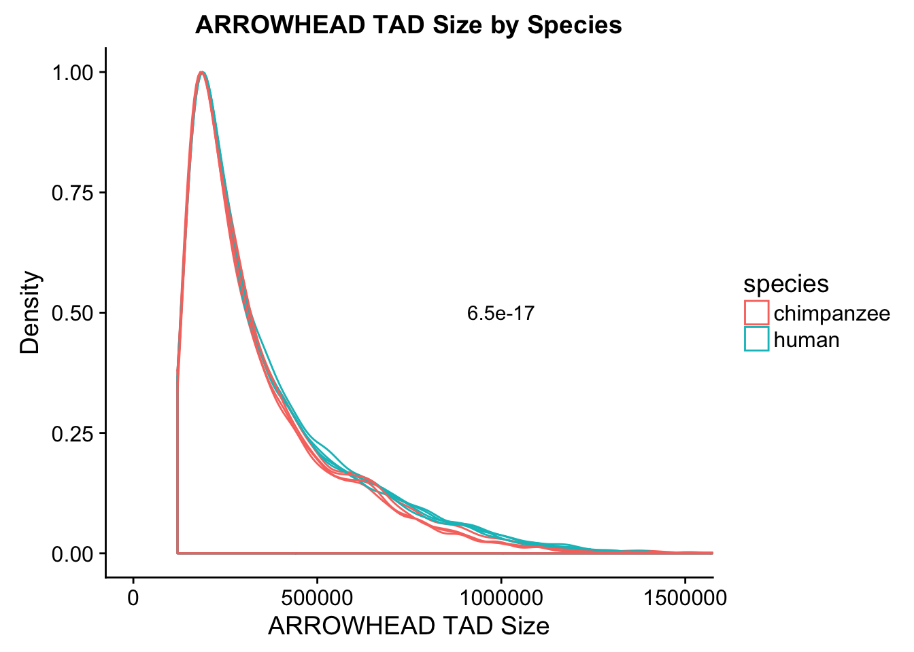
ggplot(data=ORTHOTADS) + geom_density(aes(x=size, y=..scaled.., group=ID, color=species)) + ggtitle("ARROWHEAD Orthologous TAD Size by Species") + xlab("ARROWHEAD Orthologous TAD Size") + ylab("Density") + coord_cartesian(xlim=c(0, 1500000)) + annotate("text", x=1000000, y=0.5, label=signif(t.test(filter(ORTHOTADS, species=="human")$size, filter(ORTHOTADS, species=="chimpanzee")$size)$p.value, 2))#Total # Discovered
ggplot(data=ALLTADS) + geom_bar(aes(x=ID, fill=species)) + ggtitle("Total Number of ARROWHEAD TADs Called") + xlab("Individual") + ylab("Total # ARROWHEAD TADs") + coord_cartesian(ylim=c(0, 8100))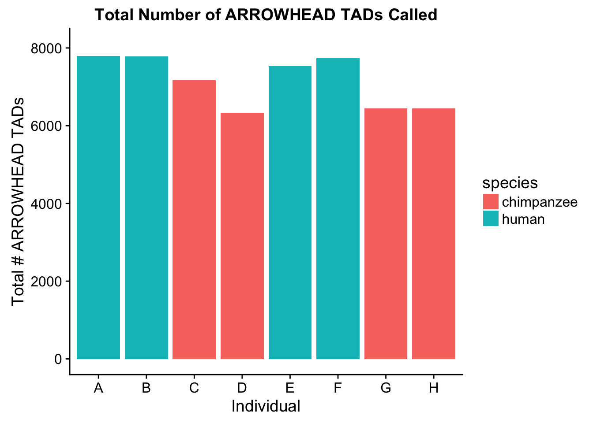
ggplot(data=ORTHOTADS) + geom_bar(aes(x=ID, fill=species)) + ggtitle("Total Number of Orthologus ARROWHEAD TADs Called") + xlab("Individual") + ylab("Total # Orthologous ARROWHEAD TADs") + coord_cartesian(ylim=c(0, 8100))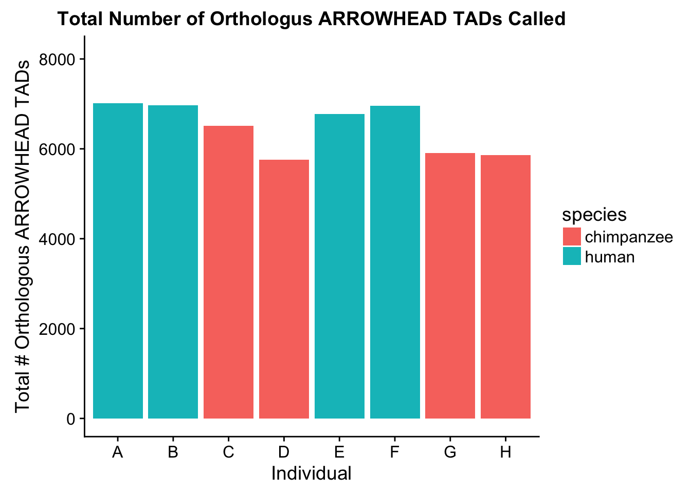
#Mean Sizes
sizedf <- data.frame(size=c(ATAD$mean.size[1], BTAD$mean.size[1], CTAD$mean.size[1], DTAD$mean.size[1], ETAD$mean.size[1], FTAD$mean.size[1], GTAD$mean.size[1], HTAD$mean.size[1]), species=c(rep("human", 2), rep("chimpanzee", 2),rep("human", 2), rep("chimpanzee", 2)), ID=c("A","B", "C", "D", "E", "F", "G", "H"))
ggplot(data=sizedf) + geom_bar(aes(x=ID, fill=species, y=size), stat="identity") + ggtitle("Mean TAD Size By Individual") + xlab("Individual") + ylab("Mean TAD Size") + annotate("text", x=3.5, y=370000, label=signif(t.test(filter(sizedf, species=="human")$size, filter(sizedf, species=="chimpanzee")$size)$p.value, 2))sizedf.ortho <- data.frame(size=c(ATAD.ortho$mean.size[1], BTAD.ortho$mean.size[1], CTAD.ortho$mean.size[1], DTAD.ortho$mean.size[1], ETAD.ortho$mean.size[1], FTAD.ortho$mean.size[1], GTAD.ortho$mean.size[1], HTAD.ortho$mean.size[1]), species=c(rep("human", 2), rep("chimpanzee", 2),rep("human", 2), rep("chimpanzee", 2)), ID=c("A","B", "C", "D", "E", "F", "G", "H"))
ggplot(data=sizedf.ortho) + geom_bar(aes(x=ID, fill=species, y=size), stat="identity") + ggtitle("Mean Orthologous TAD Size By Individual") + xlab("Individual") + ylab("Mean Orthologous TAD Size") + annotate("text", x=3.5, y=375000, label=signif(t.test(filter(sizedf.ortho, species=="human")$size, filter(sizedf.ortho, species=="chimpanzee")$size)$p.value, 2))######NOW, actually move to assess DE/DC status effects of boundaries and the like!:
#The ultimate command run is akin to (bedtools pairtobed -type notispan -a filt.bins.humans.bedPE -b TOPDOM/hbounds.final.bed > TOPDOM/hg38.TD.bounds.notispan.bed)
#Load in the pairs that are NOT interrupted by a TAD boundary! First using the agnostic approach where I just take all boundaries, and then for more stringent criteria (i.e. boundary found in at least 2 individuals, at least 3, or all 4)
TADcross.humans <- fread("~/Desktop/Hi-C/pgltoolswork/new_updated/TOPDOM/5s_unions/hu.TD.bounds.notispan.1.bed")
TADcross.humans.2 <- fread("~/Desktop/Hi-C/pgltoolswork/new_updated/TOPDOM/5s_unions/hu.TD.bounds.notispan.2.bed")
TADcross.humans.3 <- fread("~/Desktop/Hi-C/pgltoolswork/new_updated/TOPDOM/5s_unions/hu.TD.bounds.notispan.3.bed")
TADcross.humans.4 <- fread("~/Desktop/Hi-C/pgltoolswork/new_updated/TOPDOM/5s_unions/hu.TD.bounds.notispan.4.bed")
TADcross.chimps <- fread("~/Desktop/Hi-C/pgltoolswork/new_updated/TOPDOM/5s_unions/ch.TD.bounds.notispan.1.bed")
TADcross.chimps.2 <- fread("~/Desktop/Hi-C/pgltoolswork/new_updated/TOPDOM/5s_unions/ch.TD.bounds.notispan.2.bed")
TADcross.chimps.3 <- fread("~/Desktop/Hi-C/pgltoolswork/new_updated/TOPDOM/5s_unions/ch.TD.bounds.notispan.3.bed")
TADcross.chimps.4 <- fread("~/Desktop/Hi-C/pgltoolswork/new_updated/TOPDOM/5s_unions/ch.TD.bounds.notispan.4.bed")
full.annotations <- readRDS("~/Desktop/Hi-C/enrichdfs/full.data.annotations.RDS")
TADcross.humans$HpairID <- paste(paste(TADcross.humans$V1, TADcross.humans$V2, sep="-"), paste(TADcross.humans$V4, TADcross.humans$V5, sep="-"), sep="_")
TADcross.humans.2$HpairID <- paste(paste(TADcross.humans.2$V1, TADcross.humans.2$V2, sep="-"), paste(TADcross.humans.2$V4, TADcross.humans.2$V5, sep="-"), sep="_")
TADcross.humans.3$HpairID <- paste(paste(TADcross.humans.3$V1, TADcross.humans.3$V2, sep="-"), paste(TADcross.humans.3$V4, TADcross.humans.3$V5, sep="-"), sep="_")
TADcross.humans.4$HpairID <- paste(paste(TADcross.humans.4$V1, TADcross.humans.4$V2, sep="-"), paste(TADcross.humans.4$V4, TADcross.humans.4$V5, sep="-"), sep="_")
TADcross.chimps$CpairID <- paste(paste(TADcross.chimps$V1, TADcross.chimps$V2, sep="-"), paste(TADcross.chimps$V4, TADcross.chimps$V5, sep="-"), sep="_")
TADcross.chimps.2$CpairID <- paste(paste(TADcross.chimps.2$V1, TADcross.chimps.2$V2, sep="-"), paste(TADcross.chimps.2$V4, TADcross.chimps.2$V5, sep="-"), sep="_")
TADcross.chimps.3$CpairID <- paste(paste(TADcross.chimps.3$V1, TADcross.chimps.3$V2, sep="-"), paste(TADcross.chimps.3$V4, TADcross.chimps.3$V5, sep="-"), sep="_")
TADcross.chimps.4$CpairID <- paste(paste(TADcross.chimps.4$V1, TADcross.chimps.4$V2, sep="-"), paste(TADcross.chimps.4$V4, TADcross.chimps.4$V5, sep="-"), sep="_")
full.annotations$HTAD.interrupt <- ifelse(full.annotations$HpairID %in% TADcross.humans$HpairID, "no", "yes")
full.annotations$HTAD.interrupt.2 <- ifelse(full.annotations$HpairID %in% TADcross.humans.2$HpairID, "no", "yes")
full.annotations$HTAD.interrupt.3 <- ifelse(full.annotations$HpairID %in% TADcross.humans.3$HpairID, "no", "yes")
full.annotations$HTAD.interrupt.4 <- ifelse(full.annotations$HpairID %in% TADcross.humans.4$HpairID, "no", "yes")
full.annotations$CTAD.interrupt <- ifelse(full.annotations$CpairID %in% TADcross.chimps$CpairID, "no", "yes")
full.annotations$CTAD.interrupt.2 <- ifelse(full.annotations$CpairID %in% TADcross.chimps.2$CpairID, "no", "yes")
full.annotations$CTAD.interrupt.3 <- ifelse(full.annotations$CpairID %in% TADcross.chimps.3$CpairID, "no", "yes")
full.annotations$CTAD.interrupt.4 <- ifelse(full.annotations$CpairID %in% TADcross.chimps.4$CpairID, "no", "yes")
full.annotations$diff.TAD.interrupt <- ifelse(full.annotations$HTAD.interrupt==full.annotations$CTAD.interrupt, "no", "yes")
full.annotations$diff.TAD.interrupt.2 <- ifelse(full.annotations$HTAD.interrupt.2==full.annotations$CTAD.interrupt.2, "no", "yes")
full.annotations$diff.TAD.interrupt.3 <- ifelse(full.annotations$HTAD.interrupt.3==full.annotations$CTAD.interrupt.3, "no", "yes")
full.annotations$diff.TAD.interrupt.4 <- ifelse(full.annotations$HTAD.interrupt.4==full.annotations$CTAD.interrupt.4, "no", "yes")
chisq.summarizer <- function(df, col1, robust){
DEtable <- table(df$DE, df[,col1], dnn=c("DE?", paste("TAD ", robust, " Boundary Cross Diff. b/t Species?", sep="")))
promsDEtable <- table(filter(df, true.promoter=="yes")$DE, filter(df, true.promoter=="yes")[,col1], dnn=c("DE?", paste("TAD ", robust, " Boundary Cross Diff. b/t Species?", sep="")))
DCtable <- table(df$DC, df[,col1], dnn=c("DC?", paste("TAD ", robust, " Boundary Cross Diff. b/t Species?", sep="")))
promsDCtable <- table(filter(df, true.promoter=="yes")$DC, filter(df, true.promoter=="yes")[,col1], dnn=c("DC?", paste("TAD ", robust, " Boundary Cross Diff. b/t Species?", sep="")))
print(paste("As seen in the table below, amongst all hits, ", signif((DEtable[2,2]/sum(DEtable[2,]))*100, 3), "% of DE contacts cross TAD boundaries | ", robust, " differentially between species, while ", signif((DEtable[1,2]/sum(DEtable[1,]))*100, 3), "% of non-DE contacts do so. Alternatively, the contacts differentially crossing TAD boundaries | ", robust, " are ", signif((DEtable[2,2]/sum(DEtable[,2]))*100, 3), "% DE, while those not crossing are ", signif((DEtable[2,1]/sum(DEtable[,1]))*100, 3), "% DE. This is chi-squared significant w/ p-val ", signif(chisq.test(DEtable)$p.val, 2), sep=""))
print(DEtable)
print(paste("As seen in the table below, amongst all hits, ", signif((DCtable[2,2]/sum(DCtable[2,]))*100, 3), "% of DC contacts cross TAD boundaries | ", robust, " differentially between species, while ", signif((DCtable[1,2]/sum(DCtable[1,]))*100, 3), "% of non-DC contacts do so. Alternatively, the contacts differentially crossing TAD boundaries | ", robust, " are ", signif((DCtable[2,2]/sum(DCtable[,2]))*100, 3), "% DC, while those not crossing are ", signif((DCtable[2,1]/sum(DCtable[,1]))*100, 3), "% DC. This is chi-squared significant w/ p-val ", signif(chisq.test(DCtable)$p.val, 2), sep=""))
print(DCtable)
print(paste("As seen in the table below, amongst promoter-contacting hits, ", signif((promsDEtable[2,2]/sum(promsDEtable[2,]))*100, 3), "% of DE contacts cross TAD boundaries | ", robust, " differentially between species, while ", signif((promsDEtable[1,2]/sum(promsDEtable[1,]))*100, 3), "% of non-DE contacts do so. Alternatively, the contacts differentially crossing TAD boundaries | ", robust, " are ", signif((promsDEtable[2,2]/sum(promsDEtable[,2]))*100, 3), "% DE, while those not crossing are ", signif((promsDEtable[2,1]/sum(promsDEtable[,1]))*100, 3), "% DE. This is chi-squared significant w/ p-val ", signif(chisq.test(promsDEtable)$p.val, 2), sep=""))
print(promsDEtable)
print(paste("As seen in the table below, amongst promoter-contacting hits, ", signif((promsDCtable[2,2]/sum(promsDCtable[2,]))*100, 3), "% of DC contacts cross TAD boundaries | ", robust, " differentially between species, while ", signif((promsDCtable[1,2]/sum(promsDCtable[1,]))*100, 3), "% of non-DC contacts do so. Alternatively, the contacts differentially crossing TAD boundaries | ", robust, " are ", signif((promsDCtable[2,2]/sum(promsDCtable[,2]))*100, 3), "% DC, while those not crossing are ", signif((promsDCtable[2,1]/sum(promsDCtable[,1]))*100, 3), "% DC. This is chi-squared significant w/ p-val ", signif(chisq.test(promsDCtable)$p.val, 2), sep=""))
print(promsDCtable)
}
#Call the summarizer on all the different TAD boundary specs :)
chisq.summarizer(full.annotations, "diff.TAD.interrupt", 1)[1] "As seen in the table below, amongst all hits, 2.1% of DE contacts cross TAD boundaries | 1 differentially between species, while 1.52% of non-DE contacts do so. Alternatively, the contacts differentially crossing TAD boundaries | 1 are 3.74% DE, while those not crossing are 2.73% DE. This is chi-squared significant w/ p-val 5e-05"
TAD 1 Boundary Cross Diff. b/t Species?
DE? no yes
no 279726 4329
yes 7847 168
[1] "As seen in the table below, amongst all hits, 1.17% of DC contacts cross TAD boundaries | 1 differentially between species, while 1.55% of non-DC contacts do so. Alternatively, the contacts differentially crossing TAD boundaries | 1 are 2.51% DC, while those not crossing are 3.32% DC. This is chi-squared significant w/ p-val 0.0031"
TAD 1 Boundary Cross Diff. b/t Species?
DC? no yes
no 278025 4384
yes 9548 113
[1] "As seen in the table below, amongst promoter-contacting hits, 2.1% of DE contacts cross TAD boundaries | 1 differentially between species, while 1.63% of non-DE contacts do so. Alternatively, the contacts differentially crossing TAD boundaries | 1 are 26.9% DE, while those not crossing are 22.1% DE. This is chi-squared significant w/ p-val 0.0053"
TAD 1 Boundary Cross Diff. b/t Species?
DE? no yes
no 27622 457
yes 7847 168
[1] "As seen in the table below, amongst promoter-contacting hits, 1.29% of DC contacts cross TAD boundaries | 1 differentially between species, while 1.75% of non-DC contacts do so. Alternatively, the contacts differentially crossing TAD boundaries | 1 are 2.56% DC, while those not crossing are 3.45% DC. This is chi-squared significant w/ p-val 0.27"
TAD 1 Boundary Cross Diff. b/t Species?
DC? no yes
no 34244 609
yes 1225 16chisq.summarizer(full.annotations, "diff.TAD.interrupt.2", 2)[1] "As seen in the table below, amongst all hits, 0.187% of DE contacts cross TAD boundaries | 2 differentially between species, while 0.235% of non-DE contacts do so. Alternatively, the contacts differentially crossing TAD boundaries | 2 are 2.2% DE, while those not crossing are 2.75% DE. This is chi-squared significant w/ p-val 0.45"
TAD 2 Boundary Cross Diff. b/t Species?
DE? no yes
no 283387 668
yes 8000 15
[1] "As seen in the table below, amongst all hits, 0.197% of DC contacts cross TAD boundaries | 2 differentially between species, while 0.235% of non-DC contacts do so. Alternatively, the contacts differentially crossing TAD boundaries | 2 are 2.78% DC, while those not crossing are 3.31% DC. This is chi-squared significant w/ p-val 0.51"
TAD 2 Boundary Cross Diff. b/t Species?
DC? no yes
no 281745 664
yes 9642 19
[1] "As seen in the table below, amongst promoter-contacting hits, 0.187% of DE contacts cross TAD boundaries | 2 differentially between species, while 0.374% of non-DE contacts do so. Alternatively, the contacts differentially crossing TAD boundaries | 2 are 12.5% DE, while those not crossing are 22.2% DE. This is chi-squared significant w/ p-val 0.014"
TAD 2 Boundary Cross Diff. b/t Species?
DE? no yes
no 27974 105
yes 8000 15Warning in chisq.test(promsDCtable): Chi-squared approximation may be
incorrect[1] "As seen in the table below, amongst promoter-contacting hits, 0.403% of DC contacts cross TAD boundaries | 2 differentially between species, while 0.33% of non-DC contacts do so. Alternatively, the contacts differentially crossing TAD boundaries | 2 are 4.17% DC, while those not crossing are 3.44% DC. This is chi-squared significant w/ p-val 0.85"
TAD 2 Boundary Cross Diff. b/t Species?
DC? no yes
no 34738 115
yes 1236 5chisq.summarizer(full.annotations, "diff.TAD.interrupt.3", 3)Warning in chisq.test(DEtable): Chi-squared approximation may be incorrect[1] "As seen in the table below, amongst all hits, 0.025% of DE contacts cross TAD boundaries | 3 differentially between species, while 0.0271% of non-DE contacts do so. Alternatively, the contacts differentially crossing TAD boundaries | 3 are 2.53% DE, while those not crossing are 2.74% DE. This is chi-squared significant w/ p-val 1"
TAD 3 Boundary Cross Diff. b/t Species?
DE? no yes
no 283978 77
yes 8013 2Warning in chisq.test(DCtable): Chi-squared approximation may be incorrect[1] "As seen in the table below, amongst all hits, 0.0621% of DC contacts cross TAD boundaries | 3 differentially between species, while 0.0258% of non-DC contacts do so. Alternatively, the contacts differentially crossing TAD boundaries | 3 are 7.59% DC, while those not crossing are 3.31% DC. This is chi-squared significant w/ p-val 0.069"
TAD 3 Boundary Cross Diff. b/t Species?
DC? no yes
no 282336 73
yes 9655 6Warning in chisq.test(promsDEtable): Chi-squared approximation may be
incorrect[1] "As seen in the table below, amongst promoter-contacting hits, 0.025% of DE contacts cross TAD boundaries | 3 differentially between species, while 0.0249% of non-DE contacts do so. Alternatively, the contacts differentially crossing TAD boundaries | 3 are 22.2% DE, while those not crossing are 22.2% DE. This is chi-squared significant w/ p-val 1"
TAD 3 Boundary Cross Diff. b/t Species?
DE? no yes
no 28072 7
yes 8013 2Warning in chisq.test(promsDCtable): Chi-squared approximation may be
incorrect[1] "As seen in the table below, amongst promoter-contacting hits, 0.0806% of DC contacts cross TAD boundaries | 3 differentially between species, while 0.023% of non-DC contacts do so. Alternatively, the contacts differentially crossing TAD boundaries | 3 are 11.1% DC, while those not crossing are 3.44% DC. This is chi-squared significant w/ p-val 0.73"
TAD 3 Boundary Cross Diff. b/t Species?
DC? no yes
no 34845 8
yes 1240 1chisq.summarizer(full.annotations, "diff.TAD.interrupt.4", 4)Warning in chisq.test(DEtable): Chi-squared approximation may be incorrect[1] "As seen in the table below, amongst all hits, 0% of DE contacts cross TAD boundaries | 4 differentially between species, while 0.00387% of non-DE contacts do so. Alternatively, the contacts differentially crossing TAD boundaries | 4 are 0% DE, while those not crossing are 2.74% DE. This is chi-squared significant w/ p-val 1"
TAD 4 Boundary Cross Diff. b/t Species?
DE? no yes
no 284044 11
yes 8015 0Warning in chisq.test(DCtable): Chi-squared approximation may be incorrect[1] "As seen in the table below, amongst all hits, 0% of DC contacts cross TAD boundaries | 4 differentially between species, while 0.0039% of non-DC contacts do so. Alternatively, the contacts differentially crossing TAD boundaries | 4 are 0% DC, while those not crossing are 3.31% DC. This is chi-squared significant w/ p-val 1"
TAD 4 Boundary Cross Diff. b/t Species?
DC? no yes
no 282398 11
yes 9661 0Warning in chisq.test(promsDEtable): Chi-squared approximation may be
incorrect[1] "As seen in the table below, amongst promoter-contacting hits, 0% of DE contacts cross TAD boundaries | 4 differentially between species, while 0.0107% of non-DE contacts do so. Alternatively, the contacts differentially crossing TAD boundaries | 4 are 0% DE, while those not crossing are 22.2% DE. This is chi-squared significant w/ p-val 0.82"
TAD 4 Boundary Cross Diff. b/t Species?
DE? no yes
no 28076 3
yes 8015 0Warning in chisq.test(promsDCtable): Chi-squared approximation may be
incorrect[1] "As seen in the table below, amongst promoter-contacting hits, 0% of DC contacts cross TAD boundaries | 4 differentially between species, while 0.00861% of non-DC contacts do so. Alternatively, the contacts differentially crossing TAD boundaries | 4 are 0% DC, while those not crossing are 3.44% DC. This is chi-squared significant w/ p-val 1"
TAD 4 Boundary Cross Diff. b/t Species?
DC? no yes
no 34850 3
yes 1241 0#Now do the same thing again, but for window sizes of 5 and 10 instead!
TADcross.humans <- fread("~/Desktop/Hi-C/pgltoolswork/new_updated/TOPDOM/10s_unions/hu.TD.bounds.notispan.1.bed")
TADcross.humans.2 <- fread("~/Desktop/Hi-C/pgltoolswork/new_updated/TOPDOM/10s_unions/hu.TD.bounds.notispan.2.bed")
TADcross.humans.3 <- fread("~/Desktop/Hi-C/pgltoolswork/new_updated/TOPDOM/10s_unions/hu.TD.bounds.notispan.3.bed")
TADcross.humans.4 <- fread("~/Desktop/Hi-C/pgltoolswork/new_updated/TOPDOM/10s_unions/hu.TD.bounds.notispan.4.bed")
TADcross.chimps <- fread("~/Desktop/Hi-C/pgltoolswork/new_updated/TOPDOM/10s_unions/ch.TD.bounds.notispan.1.bed")
TADcross.chimps.2 <- fread("~/Desktop/Hi-C/pgltoolswork/new_updated/TOPDOM/10s_unions/ch.TD.bounds.notispan.2.bed")
TADcross.chimps.3 <- fread("~/Desktop/Hi-C/pgltoolswork/new_updated/TOPDOM/10s_unions/ch.TD.bounds.notispan.3.bed")
TADcross.chimps.4 <- fread("~/Desktop/Hi-C/pgltoolswork/new_updated/TOPDOM/10s_unions/ch.TD.bounds.notispan.4.bed")
full.annotations <- readRDS("~/Desktop/Hi-C/enrichdfs/full.data.annotations.RDS")
TADcross.humans$HpairID <- paste(paste(TADcross.humans$V1, TADcross.humans$V2, sep="-"), paste(TADcross.humans$V4, TADcross.humans$V5, sep="-"), sep="_")
TADcross.humans.2$HpairID <- paste(paste(TADcross.humans.2$V1, TADcross.humans.2$V2, sep="-"), paste(TADcross.humans.2$V4, TADcross.humans.2$V5, sep="-"), sep="_")
TADcross.humans.3$HpairID <- paste(paste(TADcross.humans.3$V1, TADcross.humans.3$V2, sep="-"), paste(TADcross.humans.3$V4, TADcross.humans.3$V5, sep="-"), sep="_")
TADcross.humans.4$HpairID <- paste(paste(TADcross.humans.4$V1, TADcross.humans.4$V2, sep="-"), paste(TADcross.humans.4$V4, TADcross.humans.4$V5, sep="-"), sep="_")
TADcross.chimps$CpairID <- paste(paste(TADcross.chimps$V1, TADcross.chimps$V2, sep="-"), paste(TADcross.chimps$V4, TADcross.chimps$V5, sep="-"), sep="_")
TADcross.chimps.2$CpairID <- paste(paste(TADcross.chimps.2$V1, TADcross.chimps.2$V2, sep="-"), paste(TADcross.chimps.2$V4, TADcross.chimps.2$V5, sep="-"), sep="_")
TADcross.chimps.3$CpairID <- paste(paste(TADcross.chimps.3$V1, TADcross.chimps.3$V2, sep="-"), paste(TADcross.chimps.3$V4, TADcross.chimps.3$V5, sep="-"), sep="_")
TADcross.chimps.4$CpairID <- paste(paste(TADcross.chimps.4$V1, TADcross.chimps.4$V2, sep="-"), paste(TADcross.chimps.4$V4, TADcross.chimps.4$V5, sep="-"), sep="_")
full.annotations$HTAD.interrupt <- ifelse(full.annotations$HpairID %in% TADcross.humans$HpairID, "no", "yes")
full.annotations$HTAD.interrupt.2 <- ifelse(full.annotations$HpairID %in% TADcross.humans.2$HpairID, "no", "yes")
full.annotations$HTAD.interrupt.3 <- ifelse(full.annotations$HpairID %in% TADcross.humans.3$HpairID, "no", "yes")
full.annotations$HTAD.interrupt.4 <- ifelse(full.annotations$HpairID %in% TADcross.humans.4$HpairID, "no", "yes")
full.annotations$CTAD.interrupt <- ifelse(full.annotations$CpairID %in% TADcross.chimps$CpairID, "no", "yes")
full.annotations$CTAD.interrupt.2 <- ifelse(full.annotations$CpairID %in% TADcross.chimps.2$CpairID, "no", "yes")
full.annotations$CTAD.interrupt.3 <- ifelse(full.annotations$CpairID %in% TADcross.chimps.3$CpairID, "no", "yes")
full.annotations$CTAD.interrupt.4 <- ifelse(full.annotations$CpairID %in% TADcross.chimps.4$CpairID, "no", "yes")
full.annotations$diff.TAD.interrupt <- ifelse(full.annotations$HTAD.interrupt==full.annotations$CTAD.interrupt, "no", "yes")
full.annotations$diff.TAD.interrupt.2 <- ifelse(full.annotations$HTAD.interrupt.2==full.annotations$CTAD.interrupt.2, "no", "yes")
full.annotations$diff.TAD.interrupt.3 <- ifelse(full.annotations$HTAD.interrupt.3==full.annotations$CTAD.interrupt.3, "no", "yes")
full.annotations$diff.TAD.interrupt.4 <- ifelse(full.annotations$HTAD.interrupt.4==full.annotations$CTAD.interrupt.4, "no", "yes")
chisq.summarizer(full.annotations, "diff.TAD.interrupt", 1)[1] "As seen in the table below, amongst all hits, 1.55% of DE contacts cross TAD boundaries | 1 differentially between species, while 1.52% of non-DE contacts do so. Alternatively, the contacts differentially crossing TAD boundaries | 1 are 2.78% DE, while those not crossing are 2.74% DE. This is chi-squared significant w/ p-val 0.91"
TAD 1 Boundary Cross Diff. b/t Species?
DE? no yes
no 279725 4330
yes 7891 124
[1] "As seen in the table below, amongst all hits, 1.7% of DC contacts cross TAD boundaries | 1 differentially between species, while 1.52% of non-DC contacts do so. Alternatively, the contacts differentially crossing TAD boundaries | 1 are 3.68% DC, while those not crossing are 3.3% DC. This is chi-squared significant w/ p-val 0.17"
TAD 1 Boundary Cross Diff. b/t Species?
DC? no yes
no 278119 4290
yes 9497 164
[1] "As seen in the table below, amongst promoter-contacting hits, 1.55% of DE contacts cross TAD boundaries | 1 differentially between species, while 1.73% of non-DE contacts do so. Alternatively, the contacts differentially crossing TAD boundaries | 1 are 20.4% DE, while those not crossing are 22.2% DE. This is chi-squared significant w/ p-val 0.29"
TAD 1 Boundary Cross Diff. b/t Species?
DE? no yes
no 27594 485
yes 7891 124
[1] "As seen in the table below, amongst promoter-contacting hits, 1.69% of DC contacts cross TAD boundaries | 1 differentially between species, while 1.69% of non-DC contacts do so. Alternatively, the contacts differentially crossing TAD boundaries | 1 are 3.45% DC, while those not crossing are 3.44% DC. This is chi-squared significant w/ p-val 1"
TAD 1 Boundary Cross Diff. b/t Species?
DC? no yes
no 34265 588
yes 1220 21chisq.summarizer(full.annotations, "diff.TAD.interrupt.2", 2)[1] "As seen in the table below, amongst all hits, 0.823% of DE contacts cross TAD boundaries | 2 differentially between species, while 0.596% of non-DE contacts do so. Alternatively, the contacts differentially crossing TAD boundaries | 2 are 3.75% DE, while those not crossing are 2.74% DE. This is chi-squared significant w/ p-val 0.012"
TAD 2 Boundary Cross Diff. b/t Species?
DE? no yes
no 282362 1693
yes 7949 66
[1] "As seen in the table below, amongst all hits, 0.631% of DC contacts cross TAD boundaries | 2 differentially between species, while 0.601% of non-DC contacts do so. Alternatively, the contacts differentially crossing TAD boundaries | 2 are 3.47% DC, while those not crossing are 3.31% DC. This is chi-squared significant w/ p-val 0.76"
TAD 2 Boundary Cross Diff. b/t Species?
DC? no yes
no 280711 1698
yes 9600 61
[1] "As seen in the table below, amongst promoter-contacting hits, 0.823% of DE contacts cross TAD boundaries | 2 differentially between species, while 0.659% of non-DE contacts do so. Alternatively, the contacts differentially crossing TAD boundaries | 2 are 26.3% DE, while those not crossing are 22.2% DE. This is chi-squared significant w/ p-val 0.14"
TAD 2 Boundary Cross Diff. b/t Species?
DE? no yes
no 27894 185
yes 7949 66
[1] "As seen in the table below, amongst promoter-contacting hits, 0.886% of DC contacts cross TAD boundaries | 2 differentially between species, while 0.689% of non-DC contacts do so. Alternatively, the contacts differentially crossing TAD boundaries | 2 are 4.38% DC, while those not crossing are 3.43% DC. This is chi-squared significant w/ p-val 0.52"
TAD 2 Boundary Cross Diff. b/t Species?
DC? no yes
no 34613 240
yes 1230 11chisq.summarizer(full.annotations, "diff.TAD.interrupt.3", 3)[1] "As seen in the table below, amongst all hits, 0.399% of DE contacts cross TAD boundaries | 3 differentially between species, while 0.232% of non-DE contacts do so. Alternatively, the contacts differentially crossing TAD boundaries | 3 are 4.63% DE, while those not crossing are 2.74% DE. This is chi-squared significant w/ p-val 0.0035"
TAD 3 Boundary Cross Diff. b/t Species?
DE? no yes
no 283396 659
yes 7983 32
[1] "As seen in the table below, amongst all hits, 0.331% of DC contacts cross TAD boundaries | 3 differentially between species, while 0.233% of non-DC contacts do so. Alternatively, the contacts differentially crossing TAD boundaries | 3 are 4.63% DC, while those not crossing are 3.3% DC. This is chi-squared significant w/ p-val 0.066"
TAD 3 Boundary Cross Diff. b/t Species?
DC? no yes
no 281750 659
yes 9629 32
[1] "As seen in the table below, amongst promoter-contacting hits, 0.399% of DE contacts cross TAD boundaries | 3 differentially between species, while 0.367% of non-DE contacts do so. Alternatively, the contacts differentially crossing TAD boundaries | 3 are 23.7% DE, while those not crossing are 22.2% DE. This is chi-squared significant w/ p-val 0.75"
TAD 3 Boundary Cross Diff. b/t Species?
DE? no yes
no 27976 103
yes 7983 32Warning in chisq.test(promsDCtable): Chi-squared approximation may be
incorrect[1] "As seen in the table below, amongst promoter-contacting hits, 0.645% of DC contacts cross TAD boundaries | 3 differentially between species, while 0.364% of non-DC contacts do so. Alternatively, the contacts differentially crossing TAD boundaries | 3 are 5.93% DC, while those not crossing are 3.43% DC. This is chi-squared significant w/ p-val 0.18"
TAD 3 Boundary Cross Diff. b/t Species?
DC? no yes
no 34726 127
yes 1233 8chisq.summarizer(full.annotations, "diff.TAD.interrupt.4", 4)[1] "As seen in the table below, amongst all hits, 0.0998% of DE contacts cross TAD boundaries | 4 differentially between species, while 0.0739% of non-DE contacts do so. Alternatively, the contacts differentially crossing TAD boundaries | 4 are 3.67% DE, while those not crossing are 2.74% DE. This is chi-squared significant w/ p-val 0.53"
TAD 4 Boundary Cross Diff. b/t Species?
DE? no yes
no 283845 210
yes 8007 8
[1] "As seen in the table below, amongst all hits, 0.145% of DC contacts cross TAD boundaries | 4 differentially between species, while 0.0722% of non-DC contacts do so. Alternatively, the contacts differentially crossing TAD boundaries | 4 are 6.42% DC, while those not crossing are 3.31% DC. This is chi-squared significant w/ p-val 0.017"
TAD 4 Boundary Cross Diff. b/t Species?
DC? no yes
no 282205 204
yes 9647 14
[1] "As seen in the table below, amongst promoter-contacting hits, 0.0998% of DE contacts cross TAD boundaries | 4 differentially between species, while 0.107% of non-DE contacts do so. Alternatively, the contacts differentially crossing TAD boundaries | 4 are 21.1% DE, while those not crossing are 22.2% DE. This is chi-squared significant w/ p-val 1"
TAD 4 Boundary Cross Diff. b/t Species?
DE? no yes
no 28049 30
yes 8007 8Warning in chisq.test(promsDCtable): Chi-squared approximation may be
incorrect[1] "As seen in the table below, amongst promoter-contacting hits, 0.242% of DC contacts cross TAD boundaries | 4 differentially between species, while 0.1% of non-DC contacts do so. Alternatively, the contacts differentially crossing TAD boundaries | 4 are 7.89% DC, while those not crossing are 3.43% DC. This is chi-squared significant w/ p-val 0.29"
TAD 4 Boundary Cross Diff. b/t Species?
DC? no yes
no 34818 35
yes 1238 3###Now for window size of 5 (50kb total):
TADcross.humans <- fread("~/Desktop/Hi-C/pgltoolswork/new_updated/TOPDOM/20s_unions/hu.TD.bounds.notispan.1.bed")
TADcross.humans.2 <- fread("~/Desktop/Hi-C/pgltoolswork/new_updated/TOPDOM/20s_unions/hu.TD.bounds.notispan.2.bed")
TADcross.humans.3 <- fread("~/Desktop/Hi-C/pgltoolswork/new_updated/TOPDOM/20s_unions/hu.TD.bounds.notispan.3.bed")
TADcross.humans.4 <- fread("~/Desktop/Hi-C/pgltoolswork/new_updated/TOPDOM/20s_unions/hu.TD.bounds.notispan.4.bed")
TADcross.chimps <- fread("~/Desktop/Hi-C/pgltoolswork/new_updated/TOPDOM/20s_unions/ch.TD.bounds.notispan.1.bed")
TADcross.chimps.2 <- fread("~/Desktop/Hi-C/pgltoolswork/new_updated/TOPDOM/20s_unions/ch.TD.bounds.notispan.2.bed")
TADcross.chimps.3 <- fread("~/Desktop/Hi-C/pgltoolswork/new_updated/TOPDOM/20s_unions/ch.TD.bounds.notispan.3.bed")
TADcross.chimps.4 <- fread("~/Desktop/Hi-C/pgltoolswork/new_updated/TOPDOM/20s_unions/ch.TD.bounds.notispan.4.bed")
full.annotations <- readRDS("~/Desktop/Hi-C/enrichdfs/full.data.annotations.RDS")
TADcross.humans$HpairID <- paste(paste(TADcross.humans$V1, TADcross.humans$V2, sep="-"), paste(TADcross.humans$V4, TADcross.humans$V5, sep="-"), sep="_")
TADcross.humans.2$HpairID <- paste(paste(TADcross.humans.2$V1, TADcross.humans.2$V2, sep="-"), paste(TADcross.humans.2$V4, TADcross.humans.2$V5, sep="-"), sep="_")
TADcross.humans.3$HpairID <- paste(paste(TADcross.humans.3$V1, TADcross.humans.3$V2, sep="-"), paste(TADcross.humans.3$V4, TADcross.humans.3$V5, sep="-"), sep="_")
TADcross.humans.4$HpairID <- paste(paste(TADcross.humans.4$V1, TADcross.humans.4$V2, sep="-"), paste(TADcross.humans.4$V4, TADcross.humans.4$V5, sep="-"), sep="_")
TADcross.chimps$CpairID <- paste(paste(TADcross.chimps$V1, TADcross.chimps$V2, sep="-"), paste(TADcross.chimps$V4, TADcross.chimps$V5, sep="-"), sep="_")
TADcross.chimps.2$CpairID <- paste(paste(TADcross.chimps.2$V1, TADcross.chimps.2$V2, sep="-"), paste(TADcross.chimps.2$V4, TADcross.chimps.2$V5, sep="-"), sep="_")
TADcross.chimps.3$CpairID <- paste(paste(TADcross.chimps.3$V1, TADcross.chimps.3$V2, sep="-"), paste(TADcross.chimps.3$V4, TADcross.chimps.3$V5, sep="-"), sep="_")
TADcross.chimps.4$CpairID <- paste(paste(TADcross.chimps.4$V1, TADcross.chimps.4$V2, sep="-"), paste(TADcross.chimps.4$V4, TADcross.chimps.4$V5, sep="-"), sep="_")
full.annotations$HTAD.interrupt <- ifelse(full.annotations$HpairID %in% TADcross.humans$HpairID, "no", "yes")
full.annotations$HTAD.interrupt.2 <- ifelse(full.annotations$HpairID %in% TADcross.humans.2$HpairID, "no", "yes")
full.annotations$HTAD.interrupt.3 <- ifelse(full.annotations$HpairID %in% TADcross.humans.3$HpairID, "no", "yes")
full.annotations$HTAD.interrupt.4 <- ifelse(full.annotations$HpairID %in% TADcross.humans.4$HpairID, "no", "yes")
full.annotations$CTAD.interrupt <- ifelse(full.annotations$CpairID %in% TADcross.chimps$CpairID, "no", "yes")
full.annotations$CTAD.interrupt.2 <- ifelse(full.annotations$CpairID %in% TADcross.chimps.2$CpairID, "no", "yes")
full.annotations$CTAD.interrupt.3 <- ifelse(full.annotations$CpairID %in% TADcross.chimps.3$CpairID, "no", "yes")
full.annotations$CTAD.interrupt.4 <- ifelse(full.annotations$CpairID %in% TADcross.chimps.4$CpairID, "no", "yes")
full.annotations$diff.TAD.interrupt <- ifelse(full.annotations$HTAD.interrupt==full.annotations$CTAD.interrupt, "no", "yes")
full.annotations$diff.TAD.interrupt.2 <- ifelse(full.annotations$HTAD.interrupt.2==full.annotations$CTAD.interrupt.2, "no", "yes")
full.annotations$diff.TAD.interrupt.3 <- ifelse(full.annotations$HTAD.interrupt.3==full.annotations$CTAD.interrupt.3, "no", "yes")
full.annotations$diff.TAD.interrupt.4 <- ifelse(full.annotations$HTAD.interrupt.4==full.annotations$CTAD.interrupt.4, "no", "yes")
chisq.summarizer(full.annotations, "diff.TAD.interrupt", 1)[1] "As seen in the table below, amongst all hits, 1.25% of DE contacts cross TAD boundaries | 1 differentially between species, while 1.14% of non-DE contacts do so. Alternatively, the contacts differentially crossing TAD boundaries | 1 are 2.98% DE, while those not crossing are 2.74% DE. This is chi-squared significant w/ p-val 0.42"
TAD 1 Boundary Cross Diff. b/t Species?
DE? no yes
no 280803 3252
yes 7915 100
[1] "As seen in the table below, amongst all hits, 1.55% of DC contacts cross TAD boundaries | 1 differentially between species, while 1.13% of non-DC contacts do so. Alternatively, the contacts differentially crossing TAD boundaries | 1 are 4.47% DC, while those not crossing are 3.29% DC. This is chi-squared significant w/ p-val 0.00018"
TAD 1 Boundary Cross Diff. b/t Species?
DC? no yes
no 279207 3202
yes 9511 150
[1] "As seen in the table below, amongst promoter-contacting hits, 1.25% of DE contacts cross TAD boundaries | 1 differentially between species, while 1.52% of non-DE contacts do so. Alternatively, the contacts differentially crossing TAD boundaries | 1 are 18.9% DE, while those not crossing are 22.3% DE. This is chi-squared significant w/ p-val 0.077"
TAD 1 Boundary Cross Diff. b/t Species?
DE? no yes
no 27651 428
yes 7915 100
[1] "As seen in the table below, amongst promoter-contacting hits, 1.69% of DC contacts cross TAD boundaries | 1 differentially between species, while 1.45% of non-DC contacts do so. Alternatively, the contacts differentially crossing TAD boundaries | 1 are 3.98% DC, while those not crossing are 3.43% DC. This is chi-squared significant w/ p-val 0.57"
TAD 1 Boundary Cross Diff. b/t Species?
DC? no yes
no 34346 507
yes 1220 21chisq.summarizer(full.annotations, "diff.TAD.interrupt.2", 2)[1] "As seen in the table below, amongst all hits, 0.823% of DE contacts cross TAD boundaries | 2 differentially between species, while 0.615% of non-DE contacts do so. Alternatively, the contacts differentially crossing TAD boundaries | 2 are 3.64% DE, while those not crossing are 2.74% DE. This is chi-squared significant w/ p-val 0.023"
TAD 2 Boundary Cross Diff. b/t Species?
DE? no yes
no 282307 1748
yes 7949 66
[1] "As seen in the table below, amongst all hits, 0.704% of DC contacts cross TAD boundaries | 2 differentially between species, while 0.618% of non-DC contacts do so. Alternatively, the contacts differentially crossing TAD boundaries | 2 are 3.75% DC, while those not crossing are 3.31% DC. This is chi-squared significant w/ p-val 0.32"
TAD 2 Boundary Cross Diff. b/t Species?
DC? no yes
no 280663 1746
yes 9593 68
[1] "As seen in the table below, amongst promoter-contacting hits, 0.823% of DE contacts cross TAD boundaries | 2 differentially between species, while 0.944% of non-DE contacts do so. Alternatively, the contacts differentially crossing TAD boundaries | 2 are 19.9% DE, while those not crossing are 22.2% DE. This is chi-squared significant w/ p-val 0.35"
TAD 2 Boundary Cross Diff. b/t Species?
DE? no yes
no 27814 265
yes 7949 66
[1] "As seen in the table below, amongst promoter-contacting hits, 1.61% of DC contacts cross TAD boundaries | 2 differentially between species, while 0.892% of non-DC contacts do so. Alternatively, the contacts differentially crossing TAD boundaries | 2 are 6.04% DC, while those not crossing are 3.41% DC. This is chi-squared significant w/ p-val 0.014"
TAD 2 Boundary Cross Diff. b/t Species?
DC? no yes
no 34542 311
yes 1221 20chisq.summarizer(full.annotations, "diff.TAD.interrupt.3", 3)[1] "As seen in the table below, amongst all hits, 0.512% of DE contacts cross TAD boundaries | 3 differentially between species, while 0.41% of non-DE contacts do so. Alternatively, the contacts differentially crossing TAD boundaries | 3 are 3.4% DE, while those not crossing are 2.74% DE. This is chi-squared significant w/ p-val 0.19"
TAD 3 Boundary Cross Diff. b/t Species?
DE? no yes
no 282889 1166
yes 7974 41
[1] "As seen in the table below, amongst all hits, 0.352% of DC contacts cross TAD boundaries | 3 differentially between species, while 0.415% of non-DC contacts do so. Alternatively, the contacts differentially crossing TAD boundaries | 3 are 2.82% DC, while those not crossing are 3.31% DC. This is chi-squared significant w/ p-val 0.38"
TAD 3 Boundary Cross Diff. b/t Species?
DC? no yes
no 281236 1173
yes 9627 34
[1] "As seen in the table below, amongst promoter-contacting hits, 0.512% of DE contacts cross TAD boundaries | 3 differentially between species, while 0.776% of non-DE contacts do so. Alternatively, the contacts differentially crossing TAD boundaries | 3 are 15.8% DE, while those not crossing are 22.3% DE. This is chi-squared significant w/ p-val 0.016"
TAD 3 Boundary Cross Diff. b/t Species?
DE? no yes
no 27861 218
yes 7974 41
[1] "As seen in the table below, amongst promoter-contacting hits, 0.806% of DC contacts cross TAD boundaries | 3 differentially between species, while 0.714% of non-DC contacts do so. Alternatively, the contacts differentially crossing TAD boundaries | 3 are 3.86% DC, while those not crossing are 3.44% DC. This is chi-squared significant w/ p-val 0.84"
TAD 3 Boundary Cross Diff. b/t Species?
DC? no yes
no 34604 249
yes 1231 10chisq.summarizer(full.annotations, "diff.TAD.interrupt.4", 4)[1] "As seen in the table below, amongst all hits, 0.324% of DE contacts cross TAD boundaries | 4 differentially between species, while 0.235% of non-DE contacts do so. Alternatively, the contacts differentially crossing TAD boundaries | 4 are 3.75% DE, while those not crossing are 2.74% DE. This is chi-squared significant w/ p-val 0.13"
TAD 4 Boundary Cross Diff. b/t Species?
DE? no yes
no 283387 668
yes 7989 26
[1] "As seen in the table below, amongst all hits, 0.269% of DC contacts cross TAD boundaries | 4 differentially between species, while 0.237% of non-DC contacts do so. Alternatively, the contacts differentially crossing TAD boundaries | 4 are 3.75% DC, while those not crossing are 3.31% DC. This is chi-squared significant w/ p-val 0.59"
TAD 4 Boundary Cross Diff. b/t Species?
DC? no yes
no 281741 668
yes 9635 26
[1] "As seen in the table below, amongst promoter-contacting hits, 0.324% of DE contacts cross TAD boundaries | 4 differentially between species, while 0.509% of non-DE contacts do so. Alternatively, the contacts differentially crossing TAD boundaries | 4 are 15.4% DE, while those not crossing are 22.2% DE. This is chi-squared significant w/ p-val 0.041"
TAD 4 Boundary Cross Diff. b/t Species?
DE? no yes
no 27936 143
yes 7989 26
[1] "As seen in the table below, amongst promoter-contacting hits, 0.725% of DC contacts cross TAD boundaries | 4 differentially between species, while 0.459% of non-DC contacts do so. Alternatively, the contacts differentially crossing TAD boundaries | 4 are 5.33% DC, while those not crossing are 3.43% DC. This is chi-squared significant w/ p-val 0.26"
TAD 4 Boundary Cross Diff. b/t Species?
DC? no yes
no 34693 160
yes 1232 9Exploration of genes with or without an upstream contact
Here, I look at whether a gene’s position along its overlapping Hi-C bin affects whether or not that gene will have an upstream contact in the significant Hi-C data. I also look to see if genes that contain an upstream contact in the Hi-C data have different expression dynamics than those that don’t.
##Exploration of genes that do or don't have an upstream contact. First, I simply add columns to gene.hic.overlap.info indicating the US FDR values for humans and chimps, as well as whether there is an US contact present in each species, either species, or both.
gene.hic.overlap.info$hUSFDR <- ifelse(gene.hic.overlap.info$Hstrand.H=="+", gene.hic.overlap.info$US_FDR.H, gene.hic.overlap.info$DS_FDR.H)
gene.hic.overlap.info$cUSFDR <- ifelse(gene.hic.overlap.info$Hstrand.C=="+", gene.hic.overlap.info$US_FDR.C, gene.hic.overlap.info$DS_FDR.C)
gene.hic.overlap.info$hUS_present <- ifelse(is.na(gene.hic.overlap.info$hUSFDR), "no", "yes")
gene.hic.overlap.info$cUS_present <- ifelse(is.na(gene.hic.overlap.info$cUSFDR), "no", "yes")
gene.hic.overlap.info$ALLUS_present <- ifelse((gene.hic.overlap.info$hUS_present=="yes"&gene.hic.overlap.info$cUS_present=="yes"), "yes", "no")
gene.hic.overlap.info$EITHERUS_present <- ifelse((gene.hic.overlap.info$hUS_present=="yes"&gene.hic.overlap.info$cUS_present=="no")|(gene.hic.overlap.info$hUS_present=="no"&gene.hic.overlap.info$cUS_present=="yes"), "yes", "no")
meandists <- select(gene.hic.overlap.info, bin_pos.H, bin_pos.C)
gene.hic.overlap.info$ave_bin_pos <- rowMeans(meandists, na.rm=TRUE)
gene.hic.overlap.info$UStype <- ifelse(gene.hic.overlap.info$ALLUS_present=="yes", "both", ifelse(gene.hic.overlap.info$EITHERUS_present=="yes", "one", "neither"))
#Set up the same thing with downstream FDR, just to see!
gene.hic.overlap.info$hDSFDR <- ifelse(gene.hic.overlap.info$Hstrand.H=="-", gene.hic.overlap.info$US_FDR.H, gene.hic.overlap.info$DS_FDR.H)
gene.hic.overlap.info$cDSFDR <- ifelse(gene.hic.overlap.info$Hstrand.C=="-", gene.hic.overlap.info$US_FDR.C, gene.hic.overlap.info$DS_FDR.C)
gene.hic.overlap.info$hDS_present <- ifelse(is.na(gene.hic.overlap.info$hDSFDR), "no", "yes")
gene.hic.overlap.info$cDS_present <- ifelse(is.na(gene.hic.overlap.info$cDSFDR), "no", "yes")
gene.hic.overlap.info$ALLDS_present <- ifelse((gene.hic.overlap.info$hDS_present=="yes"&gene.hic.overlap.info$cDS_present=="yes"), "yes", "no")
gene.hic.overlap.info$EITHERDS_present <- ifelse((gene.hic.overlap.info$hDS_present=="yes"&gene.hic.overlap.info$cDS_present=="no")|(gene.hic.overlap.info$hDS_present=="no"&gene.hic.overlap.info$cDS_present=="yes"), "yes", "no")
gene.hic.overlap.info$DStype <- ifelse(gene.hic.overlap.info$ALLDS_present=="yes", "both", ifelse(gene.hic.overlap.info$EITHERDS_present=="yes", "one", "neither"))
#Now, plot out where along a bin the TSS of each gene falls, separately for genes with and without an US contact. Also look at a variety of other things related to where along a chromosome the gene falls and that sort of thing, all leading to nothing.
plotdf <- select(gene.hic.overlap.info, "hUS_present", "cUS_present", EITHERUS_present, ALLUS_present, "bin_pos.H", "bin_pos.C", ave_bin_pos, UStype)
ggplot(data=plotdf) + geom_boxplot(aes(x=hUS_present, y=bin_pos.H, group=hUS_present)) + xlab("Upstream Contact Present for Hi-C Bin Overlapping Gene?") + ylab("Position of the gene TSS along the Hi-C bin") + ggtitle("Distribution of Genes' TSS Along Overlapping Hi-C Bin, Humans")Warning: Removed 3305 rows containing non-finite values (stat_boxplot).
ggplot(data=plotdf) + geom_boxplot(aes(x=cUS_present, y=bin_pos.C, group=cUS_present)) + xlab("Upstream Contact Present for Hi-C Bin Overlapping Gene?") + ylab("Position of the gene TSS along the Hi-C bin") + ggtitle("Distribution of Genes' TSS Along Overlapping Hi-C Bin, Chimps")Warning: Removed 3294 rows containing non-finite values (stat_boxplot).
ggplot(data=plotdf) + geom_density(aes(x=bin_pos.H, group=hUS_present, color=hUS_present, y=..scaled..)) + xlab("Position of the gene TSS along Hi-C bin") + ylab("Density") + ggtitle("Distributions of Genes' TSS Overlapping Hi-C Bin, Humans") + scale_color_manual(name="Upstream Contact?", labels = c("No", "Yes"), values=c("Red", "Blue"))Warning: Removed 3305 rows containing non-finite values (stat_density).
ggplot(data=plotdf) + geom_density(aes(x=bin_pos.C, group=cUS_present, color=cUS_present, y=..scaled..)) + xlab("Position of the gene TSS along Hi-C bin") + ylab("Density") + ggtitle("Distributions of Genes' TSS Overlapping Hi-C Bin, Chimps") + scale_color_manual(name="Upstream Contact?", labels = c("No", "Yes"), values=c("Red", "Blue"))Warning: Removed 3294 rows containing non-finite values (stat_density).
ggplot(data=plotdf) + geom_density(aes(x=ave_bin_pos, group=UStype, color=UStype, y=..scaled..)) + xlab("Position of the gene TSS along Hi-C bin") + ylab("Density") + ggtitle("Distributions of Genes' TSS Overlapping Hi-C Bin, Average") + scale_color_manual(name="Upstream Contact?", labels = c("Both Species", "Neither Species", "One Species"), values=c("Red", "Blue", "Green"))Warning: Removed 2900 rows containing non-finite values (stat_density).
ggplot(data=plotdf) + geom_density(aes(x=ave_bin_pos, group=EITHERUS_present, color=EITHERUS_present, y=..scaled..)) + xlab("Position of the gene TSS along Hi-C bin") + ylab("Density") + ggtitle("Distributions of Genes' TSS Overlapping Hi-C Bin, Average") + scale_color_manual(name="Upstream Contact in only 1 species?", labels = c("No", "Yes"), values=c("Red", "Blue"))Warning: Removed 2900 rows containing non-finite values (stat_density).
ggplot(data=plotdf) + geom_density(aes(x=ave_bin_pos, group=ALLUS_present, color=ALLUS_present, y=..scaled..)) + xlab("Position of the gene TSS along Hi-C bin") + ylab("Density") + ggtitle("Distributions of Genes' TSS Overlapping Hi-C Bin, Average") + scale_color_manual(name="Upstream Contact in both species?", labels = c("No", "Yes"), values=c("Red", "Blue"))Warning: Removed 2900 rows containing non-finite values (stat_density).
##Now, take a look at the proportion of genes with an upstream contact based upon where along the Hi-C bin the gene TSS overlaps. Do this for bins of 100 bp at a time.
densitydf <- data.frame(prop_present_bin.H=NA, prop_present_cum_bin.H=NA, prop_present_tot.H=NA, prop_present_bin.C=NA, prop_present_cum_bin.C=NA, prop_present_tot.C=NA, prop_present_bin.EITHER=NA, prop_present_cum_bin.EITHER=NA, prop_present_tot.EITHER=NA, prop_present_bin.ALL=NA, prop_present_cum_bin.ALL=NA, prop_present_tot.ALL=NA, position=seq(0, 10000, 100))
for(row in 1:nrow(densitydf)){
currentbin <- densitydf$position[row]
mydat <- filter(plotdf, bin_pos.H<=currentbin)
mydatbinned <- filter(plotdf, bin_pos.H<=currentbin&bin_pos.H>(currentbin-100))
densitydf[row, 1] <- sum(mydatbinned$hUS_present=="yes")/nrow(mydatbinned)
densitydf[row, 2] <- sum(mydat$hUS_present=="yes")/nrow(mydat)
densitydf[row, 3] <- sum(mydat$hUS_present=="yes")/nrow(plotdf)
mydat <- filter(plotdf, bin_pos.C<=densitydf$position[row])
mydatbinned <- filter(plotdf, bin_pos.C<=currentbin&bin_pos.C>(currentbin-100))
densitydf[row, 4] <- sum(mydatbinned$cUS_present=="yes")/nrow(mydatbinned)
densitydf[row, 5] <- sum(mydat$cUS_present=="yes")/nrow(mydat)
densitydf[row, 6] <- sum(mydat$cUS_present=="yes")/nrow(plotdf)
mydat <- filter(plotdf, ave_bin_pos<=currentbin)
mydatbinned <- filter(plotdf, ave_bin_pos<=currentbin&ave_bin_pos>(currentbin-100))
densitydf[row, 7] <- sum(mydatbinned$EITHERUS_present=="yes")/nrow(mydatbinned)
densitydf[row, 8] <- sum(mydat$EITHERUS_present=="yes")/nrow(mydat)
densitydf[row, 9] <- sum(mydat$EITHERUS_present=="yes")/nrow(plotdf)
densitydf[row, 10] <- sum(mydatbinned$ALLUS_present=="yes")/nrow(mydatbinned)
densitydf[row, 11] <- sum(mydat$ALLUS_present=="yes")/nrow(mydat)
densitydf[row, 12] <- sum(mydat$ALLUS_present=="yes")/nrow(plotdf)
}
densitydf <- densitydf[-1,] #Get rid of first row of meaningless results of 0!
#Visualize separately for humans and chimps
ggplot(data=densitydf[-1,]) + geom_line(aes(x=position, y=prop_present_cum_bin.H)) + xlab("Position Along Hi-C Bin, 100 BP Intervals") + ylab("Cumulative Proportion of Genes with an Upstream Contact") + ggtitle("Proportion Genes w/ US Contact | gene's Hi-C Bin Position, Humans") + coord_cartesian(ylim=c(0.52, 0.72))
ggplot(data=densitydf[-1,]) + geom_line(aes(x=position, y=prop_present_cum_bin.C)) + xlab("Position Along Hi-C Bin, 100 BP Intervals") + ylab("Cumulative Proportion of Genes with an Upstream Contact") + ggtitle("Proportion Genes w/ US Contact | gene's Hi-C Bin Position, Chimps") + coord_cartesian(ylim=c(0.52, 0.72))
ggplot(data=densitydf[-1,]) + geom_line(aes(x=position, y=prop_present_bin.H)) + xlab("Position Along Hi-C Bin, 100 BP Intervals") + ylab("Proportion of Genes with an Upstream Contact") + ggtitle("Proportion Binned Genes w/ US Contact | Hi-C Bin Position, Humans") + coord_cartesian(ylim=c(0.5, 0.9))
ggplot(data=densitydf[-1,]) + geom_line(aes(x=position, y=prop_present_bin.C)) + xlab("Position Along Hi-C Bin, 100 BP Intervals") + ylab("Proportion of Genes with an Upstream Contact") + ggtitle("Proportion Binned Genes w/ US Contact | Hi-C Bin Position, Chimps") + coord_cartesian(ylim=c(0.5, 0.9))
#Visualize separately for situation where only one species has US contact
ggplot(data=densitydf[-1,]) + geom_line(aes(x=position, y=prop_present_cum_bin.EITHER)) + xlab("Position Along Hi-C Bin, 100 BP Intervals") + ylab("Cumulative Proportion of Genes with an Upstream Contact") + ggtitle("Cumul. Proportion Genes w/ US Contact | Hi-C Bin Position, 1 SP") + coord_cartesian(ylim=c(0, 0.65))
ggplot(data=densitydf[-1,]) + geom_line(aes(x=position, y=prop_present_bin.EITHER)) + xlab("Position Along Hi-C Bin, 100 BP Intervals") + ylab("Proportion of Genes with an Upstream Contact") + ggtitle("Proportion Binned Genes w/ US Contact | Hi-C Bin Position, 1 SP") + coord_cartesian(ylim=c(0, 0.8))
ggplot(data=densitydf[-1,]) + geom_line(aes(x=position, y=prop_present_tot.EITHER)) + xlab("Position Along Hi-C Bin, 100 BP Intervals") + ylab("Proportion of Genes with an Upstream Contact") + ggtitle("Proportion Total Genes w/ US Contact | Hi-C Bin Position, 1 SP") + coord_cartesian(ylim=c(0, 0.5))
#Visualize separately for situation where US contact present in both species.
ggplot(data=densitydf[-1,]) + geom_line(aes(x=position, y=prop_present_cum_bin.ALL)) + xlab("Position Along Hi-C Bin, 100 BP Intervals") + ylab("Proportion of Genes with an Upstream Contact") + ggtitle("Proportion Genes w/ US Contact | Hi-C Bin Position, 2 SP") + coord_cartesian(ylim=c(0, 0.65))
ggplot(data=densitydf[-1,]) + geom_line(aes(x=position, y=prop_present_bin.ALL)) + xlab("Position Along Hi-C Bin, 100 BP Intervals") + ylab("Proportion of Genes with an Upstream Contact") + ggtitle("Proportion Binned Genes w/ US Contact | Hi-C Bin Position, 2 SP") + coord_cartesian(ylim=c(0, 0.8))
ggplot(data=densitydf[-1,]) + geom_line(aes(x=position, y=prop_present_tot.ALL)) + xlab("Position Along Hi-C Bin, 100 BP Intervals") + ylab("Proportion of Genes with an Upstream Contact") + ggtitle("Proportion Total Genes w/ US Contact | Hi-C Bin Position, 2 SP") + coord_cartesian(ylim=c(0, 0.5))
#Strong downward trend at the beginning for humans and starting up at the higher level than chimps, need to look at what genes are falling into these bins!
#Making a plot to be able to visualize all at once.
ggUSbin <- data.frame(prop=c(densitydf$prop_present_bin.H, densitydf$prop_present_bin.C, densitydf$prop_present_bin.EITHER, densitydf$prop_present_bin.ALL), type=c(rep("human", 100), rep("chimp", 100), rep("either", 100), rep("both", 100)), position=rep(densitydf$position, 4))
ggUScum <- data.frame(prop=c(densitydf$prop_present_cum_bin.H, densitydf$prop_present_cum_bin.C, densitydf$prop_present_cum_bin.EITHER, densitydf$prop_present_cum_bin.ALL), type=c(rep("human", 100), rep("chimp", 100), rep("either", 100), rep("both", 100)), position=rep(densitydf$position, 4))
ggUStot <- data.frame(prop=c(densitydf$prop_present_tot.H, densitydf$prop_present_tot.C, densitydf$prop_present_tot.EITHER, densitydf$prop_present_tot.ALL), type=c(rep("human", 100), rep("chimp", 100), rep("either", 100), rep("both", 100)), position=rep(densitydf$position, 4))
ggplot(data=ggUSbin) + geom_line(aes(x=position, group=type, color=type, y=prop)) + xlab("Position Along Hi-C Bin, 100 BP Intervals") + ylab("Proportion of Binned Genes with an Upstream Contact") + ggtitle("Binned Proportion Genes w/ US Contact | gene's Hi-C Bin Position") + theme(plot.title=element_text(hjust=0.2)) + guides(color=guide_legend(title="Species"))
ggplot(data=ggUScum) + geom_line(aes(x=position, group=type, color=type, y=prop)) + xlab("Position Along Hi-C Bin, 100 BP Intervals") + ylab("Cumulative Proportion of Genes with an Upstream Contact") + ggtitle("Cumulative Proportion Genes w/ US Contact | gene's Hi-C Bin Position") + theme(plot.title=element_text(hjust=0.2)) + guides(color=guide_legend(title="Species"))
ggplot(data=ggUStot) + geom_line(aes(x=position, group=type, color=type, y=prop)) + xlab("Position Along Hi-C Bin, 100 BP Intervals") + ylab("Proportion of ALL Genes that contain an Upstream Contact") + ggtitle("Proportion ALL Genes w/ US Contact | Hi-C Bin Position")
#Now, look at chromosomal distribution of genes, separated out by whether or not they have an upstream contact. Also see if the gene lengths for genes with and without US contact varies, as well as the genes' positions along the chromosome (represented as a fraction of chromosomal length).
colnames(human_lengths) <- c("genes", "gene.length")
test <- left_join(detable, human_lengths, by="genes")
test2 <- left_join(test, humgenes, by="genes")
chrplotdf <- select(gene.hic.overlap.info, hUS_present, genechr.H, genepos.H, cUS_present, genechr.C, genepos.C, genes)
test3 <- left_join(chrplotdf, test2, by="genes")
plotdf <- select(test3, Hchr, Hstart, hUS_present, genechr.H, genepos.H, cUS_present, genechr.C, genepos.C, gene.length)
plotdf$perc_dist <- NA
hsizes <-fread("~/Downloads/juicer.for.review.archive/juicebox_tools/src/juicebox/tools/chrom/sizes/hg38.chrom.sizes", header=FALSE, data.table=FALSE)
colnames(hsizes) <- c("chr", "length")
rownames(hsizes) <- hsizes$chr
for(row in 1:nrow(plotdf)){
mychr <- plotdf$Hchr[row]
mylength <- hsizes[mychr, 2]
plotdf$perc_dist[row] <- plotdf$Hstart[row]/mylength
}
plotdf$Hchr <- factor(plotdf$Hchr)
plotdf$Hchr <- factor(plotdf$Hchr, levels(plotdf$Hchr)[c(1, 12, 16:22, 2:11, 13:15, 23:24)])
ggplot(data=plotdf) + geom_histogram(aes(x=Hchr, group=hUS_present, fill=hUS_present), stat="count", position="dodge") + ggtitle("Chromosmal distribution of genes, Humans") + scale_fill_manual(name="Upstream Contact?", labels = c("No", "Yes"), values=c("indianred2", "turquoise"))Warning: Ignoring unknown parameters: binwidth, bins, pad
ggplot(data=plotdf) + stat_density(aes(x=gene.length, group=hUS_present, color=hUS_present), position="identity", geom="line") + coord_cartesian(xlim = c(0, 25000)) + xlab("Gene Length") + ggtitle("Distribution of gene lengths, Humans") + scale_color_manual(name="Upstream Contact?", labels = c("No", "Yes"), values=c("Red", "Blue"))
ggplot(data=plotdf) + stat_density(aes(x=perc_dist, group=hUS_present, color=hUS_present), position="identity", geom="line") + xlab("Fractional Length Along Chromosome") + ggtitle("Distribution of gene positions along chromosome, Humans") + scale_color_manual(name="Upstream Contact?", labels = c("No", "Yes"), values=c("Red", "Blue"))
#Worth doing this chromo-by-chromo
ggplot(data=plotdf) + stat_density(aes(x=perc_dist, linetype=hUS_present), position="identity", geom="line") + xlab("Fractional Length Along Chromosome") + ggtitle("Distribution of gene positions along chromosome, Humans") + facet_wrap(~as.factor(Hchr), scales = "fixed") + theme(axis.text.x=element_text(face="bold", size=5, angle=45)) + scale_linetype_manual(name="Upstream Contact?", labels=c("No", "Yes"), values=c("solid", "twodash"))
#Now, the same thing as above, but for chimps.
colnames(chimp_lengths) <- c("genes", "gene.length")
test <- left_join(detable, chimp_lengths, by="genes")
test2 <- left_join(test, chimpgenes, by="genes")
chrplotdf <- select(gene.hic.overlap.info, hUS_present, genechr.H, genepos.H, cUS_present, genechr.C, genepos.C, genes)
test3 <- left_join(chrplotdf, test2, by="genes")
plotdf <- select(test3, Cchr, Cstart, hUS_present, genechr.H, genepos.H, cUS_present, genechr.C, genepos.C, gene.length)
plotdf$perc_dist <- NA
csizes <-fread("~/Desktop/Hi-C/panTro5.chrom.sizes", header=FALSE, data.table=FALSE)
csizes <- csizes[1:25,]
colnames(csizes) <- c("chr", "length")
rownames(csizes) <- csizes$chr
for(row in 1:nrow(plotdf)){
mychr <- plotdf$Cchr[row]
mylength <- csizes[mychr, 2]
plotdf$perc_dist[row] <- plotdf$Cstart[row]/mylength
}
bad.indices <- grep(pattern = "random", plotdf$Cchr)
plotdf <- plotdf[-bad.indices,]
plotdf$Cchr <- factor(plotdf$Cchr)
plotdf$Cchr <- factor(plotdf$Cchr, levels(plotdf$Cchr)[c(1, 15:16, 17:23, 2:14, 24:25)])
ggplot(data=plotdf) + geom_histogram(aes(x=Cchr, group=cUS_present, fill=cUS_present), stat="count", position="dodge") + ggtitle("Chromosmal distribution of genes, Chimps") + scale_fill_manual(name="Upstream Contact?", labels = c("No", "Yes"), values=c("indianred2", "turquoise"))Warning: Ignoring unknown parameters: binwidth, bins, pad
ggplot(data=plotdf) + stat_density(aes(x=gene.length, group=cUS_present, color=cUS_present), position="identity", geom="line") + coord_cartesian(xlim = c(0, 25000)) + xlab("Gene Length") + ggtitle("Distribution of gene lengths, Chimps") + scale_color_manual(name="Upstream Contact?", labels = c("No", "Yes"), values=c("Red", "Blue"))
ggplot(data=plotdf) + stat_density(aes(x=perc_dist, group=cUS_present, color=cUS_present), position="identity", geom="line") + xlab("Fractional Length Along Chromosome") + ggtitle("Distribution of gene positions along chromosome, Chimps") + scale_color_manual(name="Upstream Contact?", labels = c("No", "Yes"), values=c("Red", "Blue"))
#Worth doing this chromo-by-chromo
ggplot(data=plotdf[c(-10922, -11284, -11285, -11286),]) + stat_density(aes(x=perc_dist, linetype=cUS_present), position="identity", geom="line") + xlab("Fractional Length Along Chromosome") + ggtitle("Distribution of gene positions along chromosome, Chimps") + facet_wrap(~as.factor(Cchr), scales = "fixed") + theme(axis.text.x=element_text(face="bold", size=5, angle=45)) + scale_linetype_manual(name="Upstream Contact?", labels=c("No", "Yes"), values=c("solid", "twodash"))
#Look at these metrics with expression.
RPKM2 <- as.data.frame(weighted.data$E)
RPKM2$genes <- rownames(RPKM2)
RPKM2$Hmean <- rowMeans(RPKM2[,c(1:2, 5:6)])
RPKM2$Cmean <- rowMeans(RPKM2[,c(3:4, 7:8)])
RPKM2$ALLmean <- rowMeans(RPKM2[,c(1:8)])
USexprs.test <- left_join(gene.hic.overlap.info, RPKM2, by="genes")
exprsdf <- select(USexprs.test, hUS_present, cUS_present, EITHERUS_present, ALLUS_present, Hmean, Cmean, ALLmean, UStype)
ggplot(data=exprsdf) + geom_boxplot(aes(x=hUS_present, group=hUS_present, y=Hmean)) + xlab("Upstream Contact Present for Hi-C Bin Overlapping Gene?") + ylab("Mean Expression Value (RPKM), Human") + ggtitle("Mean Human Expression Distributions for Genes | US Contact")
ggplot(data=exprsdf) + stat_density(aes(x=Hmean, group=hUS_present, color=hUS_present, y=..scaled..), geom="line", position="identity") + ggtitle("Mean Human Expression Distributions for Genes | US Contact ") + xlab("Mean Expression Value (RPKM), Human") + ylab("Density") + scale_color_manual(name="Upstream Contact?", labels = c("No", "Yes"), values=c("Red", "Blue")) + annotate("text", x=0, y=0.75, label="5.351 e -5", size=4)
#Now t-test the two distributions!
presents <- filter(exprsdf, hUS_present=="yes") %>% select(., hUS_present, Hmean, Cmean, ALLmean)
absents <- filter(exprsdf, hUS_present=="no") %>% select(., hUS_present, Hmean, Cmean, ALLmean)
t.test(presents$Hmean, absents$Hmean)
Welch Two Sample t-test
data: presents$Hmean and absents$Hmean
t = 4.0413, df = 11047, p-value = 5.351e-05
alternative hypothesis: true difference in means is not equal to 0
95 percent confidence interval:
0.09078829 0.26181205
sample estimates:
mean of x mean of y
4.971427 4.795127 ggplot(data=exprsdf) + geom_boxplot(aes(x=cUS_present, group=cUS_present, y=Cmean)) + xlab("Upstream Contact Present for Hi-C Bin Overlapping Gene?") + ylab("Mean Expression Value (RPKM), Chimp") + ggtitle("Mean Chimp Expression Distributions for Genes | US Contact")
ggplot(data=exprsdf) + stat_density(aes(x=Cmean, group=cUS_present, color=cUS_present, y=..scaled..), geom="line", position="identity") + ggtitle("Mean Chimp Expression Distributions for Genes | US Contact ") + xlab("Mean Expression Value (RPKM), Chimp") + ylab("Density") + scale_color_manual(name="Upstream Contact?", labels = c("No", "Yes"), values=c("Red", "Blue")) + annotate("text", x=0, y=0.75, label="7.77 e -7", size=4)
presents <- filter(exprsdf, cUS_present=="yes") %>% select(., cUS_present, Hmean, Cmean, ALLmean)
absents <- filter(exprsdf, cUS_present=="no") %>% select(., cUS_present, Hmean, Cmean, ALLmean)
t.test(presents$Cmean, absents$Cmean)
Welch Two Sample t-test
data: presents$Cmean and absents$Cmean
t = 4.9439, df = 11035, p-value = 7.77e-07
alternative hypothesis: true difference in means is not equal to 0
95 percent confidence interval:
0.1298089 0.3003674
sample estimates:
mean of x mean of y
4.993010 4.777922 exprsdf$UStype <- factor(exprsdf$UStype, levels=c("neither", "one", "both"))
ggplot(data=exprsdf) + geom_boxplot(aes(x=UStype, group=UStype, y=ALLmean)) + xlab("Upstream Contact Present for Hi-C Bin Overlapping Gene?") + ylab("Mean Expression Value (RPKM), All Individuals") + ggtitle("Mean Expression Distributions for Genes | US Contact")
ggplot(data=exprsdf) + stat_density(aes(x=ALLmean, group=UStype, color=UStype, y=..scaled..), geom="line", position="identity") + ggtitle("Mean Expression Distributions for Genes | US Contact ") + xlab("Mean Expression Value (RPKM), All Individuals") + ylab("Density") + scale_color_manual(name="Upstream Contact?", labels = c("Neither Species", "One Species", "Both Species"), values=c("Red", "Blue", "Green")) + annotate("text", x=-3, y=0.8, label="N-O pval: 4.941 e -6", size=3) + annotate("text", x=-3, y=0.675, label="O-B pval: 0.06651", size=3) + annotate("text", x=-3, y=0.55, label="N-B pval: 2.146 e -6", size=3)
#T-test these pairwise!
neither <- filter(exprsdf, UStype=="neither") %>% select(., Hmean, Cmean, ALLmean)
one <- filter(exprsdf, UStype=="one") %>% select(., Hmean, Cmean, ALLmean)
both <- filter(exprsdf, UStype=="both") %>% select(., Hmean, Cmean, ALLmean)
t.test(neither$ALLmean, one$ALLmean)
Welch Two Sample t-test
data: neither$ALLmean and one$ALLmean
t = -4.5864, df = 1309.8, p-value = 4.941e-06
alternative hypothesis: true difference in means is not equal to 0
95 percent confidence interval:
-0.5136674 -0.2058878
sample estimates:
mean of x mean of y
4.755671 5.115448 t.test(one$ALLmean, both$ALLmean)
Welch Two Sample t-test
data: one$ALLmean and both$ALLmean
t = 1.8364, df = 1374, p-value = 0.06651
alternative hypothesis: true difference in means is not equal to 0
95 percent confidence interval:
-0.00994851 0.30167510
sample estimates:
mean of x mean of y
5.115448 4.969585 t.test(neither$ALLmean, both$ALLmean)
Welch Two Sample t-test
data: neither$ALLmean and both$ALLmean
t = -4.7419, df = 10086, p-value = 2.146e-06
alternative hypothesis: true difference in means is not equal to 0
95 percent confidence interval:
-0.3023414 -0.1254872
sample estimates:
mean of x mean of y
4.755671 4.969585 #Now repeat all of the relevant visualizations for downstream!
DSexprs.test <- left_join(gene.hic.overlap.info, RPKM2, by="genes")
exprsdf <- select(DSexprs.test, hDS_present, cDS_present, EITHERDS_present, ALLDS_present, Hmean, Cmean, ALLmean, DStype)
ggplot(data=exprsdf) + geom_boxplot(aes(x=hDS_present, group=hDS_present, y=Hmean)) + xlab("downstream Contact Present for Hi-C Bin Overlapping Gene?") + ylab("Mean Expression Value (RPKM), Human") + ggtitle("Mean Human Expression Distributions for Genes | DS Contact")
ggplot(data=exprsdf) + stat_density(aes(x=Hmean, group=hDS_present, color=hDS_present, y=..scaled..), geom="line", position="identity") + ggtitle("Mean Human Expression Distributions for Genes | DS Contact ") + xlab("Mean Expression Value (RPKM), Human") + ylab("Density") + scale_color_manual(name="downstream Contact?", labels = c("No", "Yes"), values=c("Red", "Blue")) + annotate("text", x=0, y=0.75, label="0.66", size=4)
#Now t-test the two distributions!
presents <- filter(exprsdf, hDS_present=="yes") %>% select(., hDS_present, Hmean, Cmean, ALLmean)
absents <- filter(exprsdf, hDS_present=="no") %>% select(., hDS_present, Hmean, Cmean, ALLmean)
t.test(presents$Hmean, absents$Hmean)
Welch Two Sample t-test
data: presents$Hmean and absents$Hmean
t = -0.44358, df = 11037, p-value = 0.6574
alternative hypothesis: true difference in means is not equal to 0
95 percent confidence interval:
-0.10503331 0.06626849
sample estimates:
mean of x mean of y
4.874783 4.894166 ggplot(data=exprsdf) + geom_boxplot(aes(x=cDS_present, group=cDS_present, y=Cmean)) + xlab("downstream Contact Present for Hi-C Bin Overlapping Gene?") + ylab("Mean Expression Value (RPKM), Chimp") + ggtitle("Mean Chimp Expression Distributions for Genes | DS Contact")
ggplot(data=exprsdf) + stat_density(aes(x=Cmean, group=cDS_present, color=cDS_present, y=..scaled..), geom="line", position="identity") + ggtitle("Mean Chimp Expression Distributions for Genes | DS Contact ") + xlab("Mean Expression Value (RPKM), Chimp") + ylab("Density") + scale_color_manual(name="downstream Contact?", labels = c("No", "Yes"), values=c("Red", "Blue")) + annotate("text", x=0, y=0.75, label="0.52", size=4)
presents <- filter(exprsdf, cDS_present=="yes") %>% select(., cDS_present, Hmean, Cmean, ALLmean)
absents <- filter(exprsdf, cDS_present=="no") %>% select(., cDS_present, Hmean, Cmean, ALLmean)
t.test(presents$Cmean, absents$Cmean)
Welch Two Sample t-test
data: presents$Cmean and absents$Cmean
t = 0.63703, df = 11070, p-value = 0.5241
alternative hypothesis: true difference in means is not equal to 0
95 percent confidence interval:
-0.0576663 0.1131935
sample estimates:
mean of x mean of y
4.900538 4.872775 exprsdf$DStype <- factor(exprsdf$DStype, levels=c("neither", "one", "both"))
ggplot(data=exprsdf) + geom_boxplot(aes(x=DStype, group=DStype, y=ALLmean)) + xlab("downstream Contact Present for Hi-C Bin Overlapping Gene?") + ylab("Mean Expression Value (RPKM), All Individuals") + ggtitle("Mean Expression Distributions for Genes | DS Contact")
ggplot(data=exprsdf) + stat_density(aes(x=ALLmean, group=DStype, color=DStype, y=..scaled..), geom="line", position="identity") + ggtitle("Mean Expression Distributions for Genes | DS Contact ") + xlab("Mean Expression Value (RPKM), All Individuals") + ylab("Density") + scale_color_manual(name="downstream Contact?", labels = c("Neither Species", "One Species", "Both Species"), values=c("Red", "Blue", "Green")) + annotate("text", x=-3, y=0.8, label="N-O pval: 1.3 e -7", size=3) + annotate("text", x=-3, y=0.675, label="O-B pval: 2.3 e -7", size=3) + annotate("text", x=-3, y=0.55, label="N-B pval: 0.92", size=3)
#T-test these pairwise!
neither <- filter(exprsdf, DStype=="neither") %>% select(., Hmean, Cmean, ALLmean)
one <- filter(exprsdf, DStype=="one") %>% select(., Hmean, Cmean, ALLmean)
both <- filter(exprsdf, DStype=="both") %>% select(., Hmean, Cmean, ALLmean)
t.test(neither$ALLmean, one$ALLmean)
Welch Two Sample t-test
data: neither$ALLmean and one$ALLmean
t = -5.3008, df = 1389.5, p-value = 1.339e-07
alternative hypothesis: true difference in means is not equal to 0
95 percent confidence interval:
-0.5651613 -0.2598508
sample estimates:
mean of x mean of y
4.846808 5.259314 t.test(one$ALLmean, both$ALLmean)
Welch Two Sample t-test
data: one$ALLmean and both$ALLmean
t = 5.2018, df = 1431.1, p-value = 2.26e-07
alternative hypothesis: true difference in means is not equal to 0
95 percent confidence interval:
0.2541027 0.5617697
sample estimates:
mean of x mean of y
5.259314 4.851378 t.test(neither$ALLmean, both$ALLmean)
Welch Two Sample t-test
data: neither$ALLmean and both$ALLmean
t = -0.10105, df = 10069, p-value = 0.9195
alternative hypothesis: true difference in means is not equal to 0
95 percent confidence interval:
-0.09321231 0.08407274
sample estimates:
mean of x mean of y
4.846808 4.851378 #Now, could literally repeat many of these analyses with ONLY DE genes. But it doesn't look particularly interesting or any different from what I already showed, so collapse it here--aside from the expression part, which is somewhat interesting.
filter(gene.hic.overlap.info, adj.P.Val<=0.05) %>% select(., "hUS_present", "cUS_present", "bin_pos.H", "bin_pos.C") -> DEplotDF
filter(USexprs.test, adj.P.Val<=0.05) %>% select(., hUS_present, cUS_present, EITHERUS_present, ALLUS_present, Hmean, Cmean, ALLmean, UStype) -> DEexprsDF
##First, look at distance along bin that gene is seen in.
ggplot(data=DEplotDF) + geom_boxplot(aes(x=hUS_present, y=bin_pos.H, group=hUS_present)) + xlab("Upstream Contact Present for Hi-C Bin Overlapping Gene?") + ylab("Position of the gene TSS along the Hi-C bin") + ggtitle("Distribution of Genes' TSS Along Overlapping Hi-C Bin, Humans")Warning: Removed 730 rows containing non-finite values (stat_boxplot).
ggplot(data=DEplotDF) + geom_boxplot(aes(x=cUS_present, y=bin_pos.C, group=cUS_present)) + xlab("Upstream Contact Present for Hi-C Bin Overlapping Gene?") + ylab("Position of the gene TSS along the Hi-C bin") + ggtitle("Distribution of Genes' TSS Along Overlapping Hi-C Bin, Chimps")Warning: Removed 734 rows containing non-finite values (stat_boxplot).
ggplot(data=DEplotDF) + geom_density(aes(x=bin_pos.H, group=hUS_present, color=hUS_present, y=..scaled..)) + xlab("Position of the gene TSS along Hi-C bin") + ylab("Density") + ggtitle("Distributions of Genes' TSS Overlapping Hi-C Bin, Humans") + scale_color_manual(name="Upstream Contact?", labels = c("No", "Yes"), values=c("Red", "Blue"))Warning: Removed 730 rows containing non-finite values (stat_density).
ggplot(data=DEplotDF) + geom_density(aes(x=bin_pos.C, group=cUS_present, color=cUS_present, y=..scaled..)) + xlab("Position of the gene TSS along Hi-C bin") + ylab("Density") + ggtitle("Distributions of Genes' TSS Overlapping Hi-C Bin, Chimps") + scale_color_manual(name="Upstream Contact?", labels = c("No", "Yes"), values=c("Red", "Blue"))Warning: Removed 734 rows containing non-finite values (stat_density).
#Look at proportion of genes with or without an upstream contact moving along the bin to see if gene's position within a bin affects this.
densitydf <- data.frame(prop_present_bin.H=NA, prop_present_cum.H=NA, prop_present_bin.C=NA, prop_present_cum.C=NA, position=seq(0, 10000, 100))
for(row in 1:nrow(densitydf)){
mydat <- filter(DEplotDF, bin_pos.H<=densitydf$position[row])
densitydf[row, 1] <- sum(mydat$hUS_present=="yes", rm.na=TRUE)/nrow(mydat)
densitydf[row, 2] <- sum(mydat$hUS_present=="yes", rm.na=TRUE)/nrow(DEplotDF)
mydat <- filter(DEplotDF, bin_pos.C<=densitydf$position[row])
densitydf[row, 3] <- sum(mydat$cUS_present=="yes", rm.na=TRUE)/nrow(mydat)
densitydf[row, 4] <- sum(mydat$cUS_present=="yes", rm.na=TRUE)/nrow(DEplotDF)
}
ggplot(data=densitydf[-1,]) + geom_line(aes(x=position, y=prop_present_bin.H)) + xlab("Position Along Hi-C Bin, 100 BP Intervals") + ylab("Proportion of Genes with an Upstream Contact") + ggtitle("Proportion Genes w/ US Contact | gene's Hi-C Bin Position, Humans")
ggplot(data=densitydf[-1,]) + geom_line(aes(x=position, y=prop_present_bin.C)) + xlab("Position Along Hi-C Bin, 100 BP Intervals") + ylab("Proportion of Genes with an Upstream Contact") + ggtitle("Proportion Genes w/ US Contact | gene's Hi-C Bin Position, Chimps")
#Now, the same thing, but visualized together.
ggUSbin <- data.frame(prop=c(densitydf$prop_present_bin.H, densitydf$prop_present_bin.C), type=c(rep("human", 101), rep("chimp", 101)), position=rep(densitydf$position, 2))
ggUScum <- data.frame(prop=c(densitydf$prop_present_cum.H, densitydf$prop_present_cum.C), type=c(rep("human", 101), rep("chimp", 101)), position=rep(densitydf$position, 2))
ggplot(data=ggUSbin) + geom_line(aes(x=position, group=type, color=type, y=prop)) + xlab("Position Along Hi-C Bin, 100 BP Intervals") + ylab("Proportion of Binned Genes with an Upstream Contact") + ggtitle("Binned Proportion DE Genes w/ US Contact | gene's Hi-C Bin Position") + theme(plot.title=element_text(hjust=0.2)) + guides(color=guide_legend(title="Species"))
ggplot(data=ggUScum) + geom_line(aes(x=position, group=type, color=type, y=prop)) + xlab("Position Along Hi-C Bin, 100 BP Intervals") + ylab("Cumulative Proportion of Genes with an Upstream Contact") + ggtitle("Cumulative Proportion DE Genes w/ US Contact | gene's Hi-C Bin Position") + theme(plot.title=element_text(hjust=0.3)) + guides(color=guide_legend(title="Species"))
####Visualize questions dealing with RPKM expression here. Essentially the only interesting part of this.
ggplot(data=DEexprsDF) + geom_boxplot(aes(x=hUS_present, group=hUS_present, y=Hmean)) + xlab("Upstream Contact Present for Hi-C Bin Overlapping Gene?") + ylab("Mean Expression Value (RPKM), Human") + ggtitle("Mean Human Expression Distributions for Genes | US Contact")
ggplot(data=DEexprsDF) + stat_density(aes(x=Hmean, group=hUS_present, color=hUS_present, y=..scaled..), geom="line", position="identity") + ggtitle("Mean Human Expression Distributions for Genes | US Contact ") + xlab("Mean Expression Value (RPKM), Human") + ylab("Density") + scale_color_manual(name="Upstream Contact?", labels = c("No", "Yes"), values=c("Red", "Blue"))
ggplot(data=DEexprsDF) + geom_boxplot(aes(x=cUS_present, group=cUS_present, y=Cmean)) + xlab("Upstream Contact Present for Hi-C Bin Overlapping Gene?") + ylab("Mean Expression Value (RPKM), Chimp") + ggtitle("Mean Chimp Expression Distributions for Genes | US Contact")
ggplot(data=DEexprsDF) + stat_density(aes(x=Cmean, group=cUS_present, color=cUS_present, y=..scaled..), geom="line", position="identity") + ggtitle("Mean Chimp Expression Distributions for Genes | US Contact ") + xlab("Mean Expression Value (RPKM), Chimp") + ylab("Density") + scale_color_manual(name="Upstream Contact?", labels = c("No", "Yes"), values=c("Red", "Blue"))
ggplot(data=DEexprsDF) + geom_boxplot(aes(x=ALLUS_present, group=ALLUS_present, y=ALLmean)) + xlab("Upstream Contact Present for Hi-C Bin Overlapping Gene?") + ylab("Mean Expression Value (RPKM), All Individuals") + ggtitle("Mean Expression Distributions for Genes | US Contact")
ggplot(data=DEexprsDF) + stat_density(aes(x=ALLmean, group=ALLUS_present, color=ALLUS_present), geom="line", position="identity") + ggtitle("Mean Expression Distributions for Genes | US Contact ") + xlab("Mean Expression Value (RPKM), All Individuals") + ylab("Density") + scale_color_manual(name="Upstream Contact?", labels = c("No", "Yes"), values=c("Red", "Blue"))
#Joint visualization.
ggplot(data=DEexprsDF) + geom_boxplot(aes(x=UStype, group=UStype, y=ALLmean)) + xlab("Upstream Contact Present for Hi-C Bin Overlapping DE Gene?") + ylab("Mean Expression Value (RPKM), All Individuals") + ggtitle("Mean Expression Distributions for DE Genes | US Contact")
ggplot(data=DEexprsDF) + stat_density(aes(x=ALLmean, group=UStype, color=UStype, y=..scaled..), geom="line", position="identity") + ggtitle("Mean Expression Distributions for DE Genes | US Contact ") + xlab("Mean Expression Value (RPKM), All Individuals") + ylab("Density") + scale_color_manual(name="Upstream Contact?", labels = c("Neither Species", "One Species", "Both Species"), values=c("Red", "Blue", "Green")) + annotate("text", x=-2, y=0.8, label="N-O pval: 0.002136", size=3) + annotate("text", x=-2, y=0.675, label="O-B pval: 0.2836", size=3) + annotate("text", x=-2, y=0.55, label="N-B pval: 0.001425", size=3)
#T-test these pairwise! Technically did this beforehand to put labels on plot.
neither <- filter(DEexprsDF, UStype=="neither") %>% select(., Hmean, Cmean, ALLmean)
one <- filter(DEexprsDF, UStype=="one") %>% select(., Hmean, Cmean, ALLmean)
both <- filter(DEexprsDF, UStype=="both") %>% select(., Hmean, Cmean, ALLmean)
t.test(neither$ALLmean, one$ALLmean)
Welch Two Sample t-test
data: neither$ALLmean and one$ALLmean
t = -3.0986, df = 289.49, p-value = 0.002136
alternative hypothesis: true difference in means is not equal to 0
95 percent confidence interval:
-0.6821724 -0.1521927
sample estimates:
mean of x mean of y
4.783559 5.200742 t.test(one$ALLmean, both$ALLmean)
Welch Two Sample t-test
data: one$ALLmean and both$ALLmean
t = 1.0741, df = 307.68, p-value = 0.2836
alternative hypothesis: true difference in means is not equal to 0
95 percent confidence interval:
-0.1222932 0.4162619
sample estimates:
mean of x mean of y
5.200742 5.053757 t.test(neither$ALLmean, both$ALLmean)
Welch Two Sample t-test
data: neither$ALLmean and both$ALLmean
t = -3.1939, df = 2044, p-value = 0.001425
alternative hypothesis: true difference in means is not equal to 0
95 percent confidence interval:
-0.4361041 -0.1042922
sample estimates:
mean of x mean of y
4.783559 5.053757 #Repeat RPKM DE visualization for DS contacts:
filter(gene.hic.overlap.info, adj.P.Val<=0.05) %>% select(., "hDS_present", "cDS_present", "bin_pos.H", "bin_pos.C") -> DEplotDF
filter(DSexprs.test, adj.P.Val<=0.05) %>% select(., hDS_present, cDS_present, EITHERDS_present, ALLDS_present, Hmean, Cmean, ALLmean, DStype) -> DEexprsDF
####Visualize questions dealing with RPKM expression here. Essentially the only interesting part of this.
ggplot(data=DEexprsDF) + geom_boxplot(aes(x=hDS_present, group=hDS_present, y=Hmean)) + xlab("Downstream Contact Present for Hi-C Bin Overlapping Gene?") + ylab("Mean Expression Value (RPKM), Human") + ggtitle("Mean Human Expression Distributions for Genes | DS Contact")
ggplot(data=DEexprsDF) + stat_density(aes(x=Hmean, group=hDS_present, color=hDS_present, y=..scaled..), geom="line", position="identity") + ggtitle("Mean Human Expression Distributions for Genes | DS Contact ") + xlab("Mean Expression Value (RPKM), Human") + ylab("Density") + scale_color_manual(name="Downstream Contact?", labels = c("No", "Yes"), values=c("Red", "Blue"))
ggplot(data=DEexprsDF) + geom_boxplot(aes(x=cDS_present, group=cDS_present, y=Cmean)) + xlab("Downstream Contact Present for Hi-C Bin Overlapping Gene?") + ylab("Mean Expression Value (RPKM), Chimp") + ggtitle("Mean Chimp Expression Distributions for Genes | DS Contact")
ggplot(data=DEexprsDF) + stat_density(aes(x=Cmean, group=cDS_present, color=cDS_present, y=..scaled..), geom="line", position="identity") + ggtitle("Mean Chimp Expression Distributions for Genes | DS Contact ") + xlab("Mean Expression Value (RPKM), Chimp") + ylab("Density") + scale_color_manual(name="Downstream Contact?", labels = c("No", "Yes"), values=c("Red", "Blue"))
ggplot(data=DEexprsDF) + geom_boxplot(aes(x=ALLDS_present, group=ALLDS_present, y=ALLmean)) + xlab("Downstream Contact Present for Hi-C Bin Overlapping Gene?") + ylab("Mean Expression Value (RPKM), All Individuals") + ggtitle("Mean Expression Distributions for Genes | DS Contact")
ggplot(data=DEexprsDF) + stat_density(aes(x=ALLmean, group=ALLDS_present, color=ALLDS_present), geom="line", position="identity") + ggtitle("Mean Expression Distributions for Genes | DS Contact ") + xlab("Mean Expression Value (RPKM), All Individuals") + ylab("Density") + scale_color_manual(name="Downstream Contact?", labels = c("No", "Yes"), values=c("Red", "Blue"))
#Joint visualization.
ggplot(data=DEexprsDF) + geom_boxplot(aes(x=DStype, group=DStype, y=ALLmean)) + xlab("Downstream Contact Present for Hi-C Bin Overlapping DE Gene?") + ylab("Mean Expression Value (RPKM), All Individuals") + ggtitle("Mean Expression Distributions for DE Genes | DS Contact")
ggplot(data=DEexprsDF) + stat_density(aes(x=ALLmean, group=DStype, color=DStype, y=..scaled..), geom="line", position="identity") + ggtitle("Mean Expression Distributions for DE Genes | DS Contact ") + xlab("Mean Expression Value (RPKM), All Individuals") + ylab("Density") + scale_color_manual(name="Downstream Contact?", labels = c("Neither Species", "One Species", "Both Species"), values=c("Red", "Blue", "Green")) + annotate("text", x=-2, y=0.8, label="N-O pval: 3.2 e -4", size=3) + annotate("text", x=-2, y=0.675, label="O-B pval: 8.8 e -5", size=3) + annotate("text", x=-2, y=0.55, label="N-B pval: 0.54", size=3)
#T-test these pairwise! Technically did this beforehand to put labels on plot.
neither <- filter(DEexprsDF, DStype=="neither") %>% select(., Hmean, Cmean, ALLmean)
one <- filter(DEexprsDF, DStype=="one") %>% select(., Hmean, Cmean, ALLmean)
both <- filter(DEexprsDF, DStype=="both") %>% select(., Hmean, Cmean, ALLmean)
t.test(neither$ALLmean, one$ALLmean)
Welch Two Sample t-test
data: neither$ALLmean and one$ALLmean
t = -3.64, df = 310.34, p-value = 0.0003193
alternative hypothesis: true difference in means is not equal to 0
95 percent confidence interval:
-0.7524801 -0.2244127
sample estimates:
mean of x mean of y
4.917083 5.405530 t.test(one$ALLmean, both$ALLmean)
Welch Two Sample t-test
data: one$ALLmean and both$ALLmean
t = 3.9714, df = 326.74, p-value = 8.792e-05
alternative hypothesis: true difference in means is not equal to 0
95 percent confidence interval:
0.2727539 0.8082157
sample estimates:
mean of x mean of y
5.405530 4.865045 t.test(neither$ALLmean, both$ALLmean)
Welch Two Sample t-test
data: neither$ALLmean and both$ALLmean
t = 0.61373, df = 2021.9, p-value = 0.5395
alternative hypothesis: true difference in means is not equal to 0
95 percent confidence interval:
-0.1142474 0.2183242
sample estimates:
mean of x mean of y
4.917083 4.865045 #FWIW, there are 209 instances of "one", 968 of "both" and 1091 of "neither", so perhaps the set size here is what's really doing it. But that situation is essentially similar in US contacts as well (197, 1008, 1063).There are some interesting stories to be told here about increasing expression when you DO have a statistically significant upstream contact.
Differences in effect size/sign changes
This next section would be to look at differences in effect size and sign changes when doing the two separate lms (one before and one after regressing out Hi-C data from RPKM expression). Unfortunately the ash results I get have all their svalues as 1 so this is boring/not interesting right now. Hence it is not included. But let’s give it another go!
#######FRESH CODE 6-21-18#########
design <- model.matrix(~meta.data$SP)
exprs <- select(hmin, "A-21792", "B-28126", "C-3649", "D-40300", "E-28815", "F-28834", "G-3624", "H-3651", genes) #Should be done on just DE genes, filter with adj.P.Val<=0.05
hic <- select(hmin,"A_21792_HIC", "B_28126_HIC", "C_3649_HIC", "D_40300_HIC", "E_28815_HIC", "F_28834_HIC", "G_3624_HIC", "H_3651_HIC")
present <- sapply(1:nrow(hic), function(i) !any(is.na(hic[i,])))
genes <- exprs$genes
DEgenes <- filter(hmin, adj.P.Val<=0.05) %>% select(., genes)
myDEindices <- which(genes %in% DEgenes[,1])
exprs <- exprs[,-9]
exprs <- data.matrix(exprs[present,])
hic <- data.matrix(hic[present,])
designy <- as.factor(c("human", "human", "chimp", "chimp", "human", "human", "chimp", "chimp"))
colnames(hic) <- colnames(exprs)
hic <- as.data.table(hic)
exprs <- as.data.table(exprs)
test <- mediate.test.regressing(exprs, designy, hic)
Attaching package: 'assertthat'The following object is masked from 'package:tibble':
has_name#Shrink dat variance!
vshrDE <- vash(test$d_se[myDEindices], df=6)
vshrnonDE <- vash(test$d_se[-myDEindices], df=6)
vshrink <- vash(test$d_se, df=6)
#Separate out DE from non-DE genes:
DEtest <- test[myDEindices,]
nonDEtest <- test[-myDEindices,]
#Ash on DE genes
ash_reg <- ash(as.vector(DEtest$d), as.vector(vshrDE$sd.post), mixcompdist = "normal") #Now it works with this design coding. Use 6 df, as 2-group comparison and 8 individual samples (samples - 2)Due to absence of package REBayes, switching to EM algorithmsummary(ash_reg$result$svalue<=0.05) #Incredible result, looks too good to be true. Mode FALSE TRUE
logical 1243 294 ind_sig <- (ash_reg$result$svalue < 0.05)
ind_sig[ind_sig == TRUE] <- "red"
ind_sig[ind_sig == FALSE] <- "black"
plot(x=ash_reg$result$betahat, y=ash_reg$result$sebetahat, ylab="Standard error of the difference", xlab="Difference in effect size from 2 lms", main="Difference of effect size (DE genes)", pch=16, cex=0.6, col=ind_sig)#, xlim=c(-2.5, 2.5), ylim=c(0, 1.3))
legend("topleft", legend=c("s < 0.05", "s >= 0.05"), col=c("red", "black"), pch=16:16, cex=0.8)
plot(ash_reg$result$betahat, -log10(ash_reg$result$svalue))
#Now on non-DE genes
ash_reg_nonDE <- ash(as.vector(nonDEtest$d), as.vector(vshrnonDE$sd.post), mixcompdist = "normal") #Now it works with this design coding. Use 6 df, as 2-group comparison and 8 individual samples (samples - 2)Due to absence of package REBayes, switching to EM algorithmsummary(ash_reg_nonDE$result$svalue<=0.05) #Incredible result, looks too good to be true. Mode FALSE
logical 6227 ind_sig <- (ash_reg_nonDE$result$svalue < 0.05)
ind_sig[ind_sig == TRUE] <- "red"
ind_sig[ind_sig == FALSE] <- "black"
plot(x=ash_reg_nonDE$result$betahat, y=ash_reg_nonDE$result$sebetahat, ylab="Standard error of the difference", xlab="Difference in effect size from 2 lms", main="Difference of effect size (non-DE genes)", pch=16, cex=0.6, col=ind_sig)#, xlim=c(-2.5, 2.5), ylim=c(0, 1.3))
legend("topleft", legend=c("s < 0.05", "s >= 0.05"), col=c("red", "black"), pch=16:16, cex=0.8)
plot(ash_reg_nonDE$result$betahat, -log10(ash_reg_nonDE$result$svalue))
#Now on the full set, for comparison's sake.
ash_reg_full <- ash(as.vector(test$d), as.vector(vshrink$sd.post), mixcompdist = "normal") #Now it works with this design coding. Use 6 df, as 2-group comparison and 8 individual samples (samples - 2)Due to absence of package REBayes, switching to EM algorithmsummary(ash_reg_full$result$svalue<=0.05) #Incredible result, looks too good to be true. Mode FALSE TRUE
logical 7714 50 ind_sig <- (ash_reg_full$result$svalue < 0.05)
ind_sig[ind_sig == TRUE] <- "red"
ind_sig[ind_sig == FALSE] <- "black"
plot(x=ash_reg_full$result$betahat, y=ash_reg_full$result$sebetahat, ylab="Standard error of the difference", xlab="Difference in effect size from 2 lms", main="Difference of effect size (DE genes)", pch=16, cex=0.6, col=ind_sig)#, xlim=c(-2.5, 2.5), ylim=c(0, 1.3))
legend("topleft", legend=c("s < 0.05", "s >= 0.05"), col=c("red", "black"), pch=16:16, cex=0.8)
plot(ash_reg_full$result$betahat, -log10(ash_reg_full$result$svalue))
#Look at effect size shrinkage in full set ash vs. separated DE/nonDE ash:
plot(c(ash_reg$result$PosteriorMean, ash_reg_nonDE$result$PosteriorMean), ash_reg_full$result$PosteriorMean)
#Look at this just in DE:
plot(ash_reg$result$PosteriorMean, ash_reg_full$result$PosteriorMean[myDEindices])
#Look at this just in non-DE:
plot(ash_reg_nonDE$result$PosteriorMean, ash_reg_full$result$PosteriorMean[-myDEindices])
Expression distance analysis
Here I see if species differences in contact frequencies in adjacent bins to a given Hi-C bin overlapping a gene can predict the logFC of expression of that gene across the species. These preliminary results are not especially exciting but there is a lot to be played with here.
#Read in all the adjacency matrices
adj.A <- read.csv("~/Desktop/Hi-C/adjbins/adj_bins_50_A-21792_10kb_norm", header=TRUE, sep = "\t")
adj.B <- read.csv("~/Desktop/Hi-C/adjbins/adj_bins_50_B-28126_10kb_norm", header=TRUE, sep = "\t")
adj.E <- read.csv("~/Desktop/Hi-C/adjbins/adj_bins_50_E-28815_10kb_norm", header=TRUE, sep = "\t")
adj.F <- read.csv("~/Desktop/Hi-C/adjbins/adj_bins_50_F-28834_10kb_norm", header=TRUE, sep = "\t")
adj.C <- read.csv("~/Desktop/Hi-C/adjbins/adj_bins_50_C-3649_10kb_norm", header=TRUE, sep = "\t")
adj.D <- read.csv("~/Desktop/Hi-C/adjbins/adj_bins_50_D-40300_10kb_norm", header=TRUE, sep = "\t")
adj.G <- read.csv("~/Desktop/Hi-C/adjbins/adj_bins_50_G-3624_10kb_norm", header=TRUE, sep = "\t")
adj.H <- read.csv("~/Desktop/Hi-C/adjbins/adj_bins_50_H-3651_10kb_norm", header=TRUE, sep = "\t")
#Get mean values across individuals within a species, first for humans, then chimps.
adj.hum.mean <- matrix(nrow = nrow(adj.A), ncol = ncol(adj.A)) #Humans
for(row in 1:nrow(adj.hum.mean)){
for(col in 1:ncol(adj.hum.mean)){
adj.hum.mean[row,col] <- mean(c(adj.A[row,col], adj.B[row,col], adj.E[row,col], adj.F[row,col]))
}
}
rownames(adj.hum.mean) <- rownames(adj.A)
adj.chimp.mean <- matrix(nrow = nrow(adj.C), ncol = ncol(adj.C)) #Chimps
for(row in 1:nrow(adj.chimp.mean)){
for(col in 1:ncol(adj.chimp.mean)){
adj.chimp.mean[row,col] <- mean(c(adj.C[row,col], adj.D[row,col], adj.G[row,col], adj.H[row,col]))
}
}
rownames(adj.chimp.mean) <- rownames(adj.C)
#Extract other relevant data for joining on, as well as for making necessary inversions of the adjacency matrices based on gene strand.
genedf <- select(gene.hic.filt, genes, logFC, HID, CID, Hstrand.H, Hstrand.C) #Have checked, both strands are identical between the species here
genedf <- genedf[complete.cases(genedf),] #Leaves us with about ~7500 genes; 500 of which will be repeats on overlapping bins--can leave them in for now, just remove instances of those entirely, or try to just keep the one with a larger logFC. Just remove at random for now:
badHs <- which(duplicated(genedf$HID))
badCs <- which(duplicated(genedf$CID))
genedf <- genedf[c(-badHs, -badCs),] #Have now removed any instances of duplicated bins here!
#Reformat the species mean dataframes.
adj.hum.mean <- as.data.frame(adj.hum.mean)
adj.hum.mean$HID <- rownames(adj.hum.mean)
adj.chimp.mean <- as.data.frame(adj.chimp.mean)
adj.chimp.mean$CID <- rownames(adj.chimp.mean)
adj.full <- left_join(adj.hum.mean, genedf, by="HID") %>% left_join(., adj.chimp.mean, by="CID", suffix=c(".human", ".chimp")) #Join to get the full set of information
adj.full <- adj.full[complete.cases(adj.full),] #Get rid of rows where we don't have all the info
for(row in 1:nrow(adj.full)){#Check strand by species; if strand is negative, flip the entire set of values across bins around for the species.
if(adj.full$Hstrand.H[row]=="-"){adj.full[row,1:101] <- adj.full[row, 101:1]}
if(adj.full$Hstrand.C[row]=="-"){adj.full[row, 108:208] <- adj.full[row, 208:108]}
}
#Prepare the final adjacency table now.
adj.final <- select(adj.full, genes, logFC)
adj.final[,3:103] <- abs(adj.full[,1:101]-adj.full[,108:208]) #Subtract chimp values from human values, just like the expression contrast is coded.
#adj.final[,3:103] <- abs(adj.full[,1:101]-adj.full[,108:208]) #Subtract chimp values from human values, just like the expression contrast is coded.
model.covs <- paste(colnames(adj.final)[c(3:52, 54:103)], collapse=" + ") #Obtain the long linear equation here.
model.full <- paste("logFC ~ ", model.covs, sep="")
#Test with abs valu of logFC
adj.final$logFC <- abs(adj.final$logFC)
#Remove gene's own bin
adj.final$V51.human <- NA
#Now, run an actual linear model. First basic, then lasso.
simple.result <- lm(eval(model.full), data=adj.final)
set.seed(30) #set.seed for cv.glmnet
cv.lasso <- cv.glmnet(as.matrix(adj.final[,c(3:52,54:103)]), as.matrix(adj.final[,2]), alpha=1)
#plot(cv.lasso)
cv.lasso$lambda.min[1] 0.01404257#plot(1:101, as.matrix(coef(cv.lasso, s="lambda.min"))[2:102,1])
#Visualization!
binsplotdf <- summary(simple.result)$coefficients
binsplotdf <- as.data.frame(binsplotdf[-1,])
#binsplotdf$location <- c(-50:-1, 0, 1:50)*10
binsplotdf$location <- c(-50:-1, 1:50)*10
binsplotdf$significant <- ifelse(binsplotdf$`Pr(>|t|)`<=0.05, "yes", "no")
#binsplotdf$lasso.val <- as.matrix(coef(cv.lasso, s="lambda.min"))[2:102, 1]
binsplotdf$lasso.val <- as.matrix(coef(cv.lasso, s="lambda.min"))[2:101, 1]
colnames(binsplotdf) <- c("beta", "std.error", "t.val", "p.val", "location", "significant", "lasso.value")
binsplotdf$lasso.value <- ifelse(binsplotdf$lasso.value==0, "no", "yes")
ggplot(data=binsplotdf) + geom_pointrange(aes(x=location, y=beta, ymin=beta-std.error, ymax=beta+std.error, color=significant, shape=lasso.value), size=0.5) + xlab("Bin Location Relative to Gene (kb)") + ylab("Effect Size") + ggtitle("Expression logFC ~ Mean Species Contact Frequency Difference") + scale_x_discrete(limits=seq(-500, 500, 100)) + scale_color_manual("LM-Significant?", labels=c("No", "Yes"), values=c("blue", "red")) + scale_shape_discrete("LASSO-Significant?", labels=c("No", "Yes"))
#######################Same thing, absolute vals
ggplot(data=binsplotdf) + geom_pointrange(aes(x=location, y=abs(beta), ymin=abs(beta)-std.error, ymax=abs(beta)+std.error, color=significant, shape=lasso.value), size=0.5) + xlab("Bin Location Relative to Gene (kb)") + ylab("Effect Size") + ggtitle("Expression logFC ~ Mean Species Contact Frequency Difference") + scale_x_discrete(limits=seq(-500, 500, 100)) + scale_color_manual("LM-Significant?", labels=c("No", "Yes"), values=c("blue", "red")) + scale_shape_discrete("LASSO-Significant?", labels=c("No", "Yes"))
##############Try again, but only with 20 adjacent bins on each side!
adj.final.20 <- select(adj.full, genes, logFC)
adj.final.20[,3:43] <- abs(adj.full[,31:71]-adj.full[,138:178]) #Humans minus chimps...
model.covs.20 <- paste(colnames(adj.final.20)[c(3:22,24:43)], collapse=" + ")
adj.final.20$V51.human <- NA #Remove gene's own bin
model.full.20 <- paste("logFC ~ ", model.covs.20, sep="")
adj.final.20$logFC <- abs(adj.final.20$logFC)
simple.result.20 <- lm(eval(model.full.20), data=adj.final.20) #LM for 20
set.seed(31)
cv.lasso20 <- cv.glmnet(as.matrix(adj.final.20[,c(3:22, 24:43)]), as.matrix(adj.final.20[,2]), alpha=1) #Was just 3:43 but that threw an NA error
#plot(cv.lasso20)
#plot(1:41, as.matrix(coef(cv.lasso20, s="lambda.min"))[2:42,1])
binsplotdf20 <- summary(simple.result.20)$coefficients
binsplotdf20 <- as.data.frame(binsplotdf20[-1,])
#binsplotdf20$location <- c(-20:-1, 0, 1:20)*10
binsplotdf20$location <- c(-20:-1, 1:20)*10
binsplotdf20$significant <- ifelse(binsplotdf20$`Pr(>|t|)`<=0.05, "yes", "no")
binsplotdf20$lasso.val <- as.matrix(coef(cv.lasso20, s="lambda.min"))[2:41, 1]
colnames(binsplotdf20) <- c("beta", "std.error", "t.val", "p.val", "location", "significant", "lasso.value")
binsplotdf20$lasso.value <- ifelse(binsplotdf20$lasso.value==0, "no", "yes")
ggplot(data=binsplotdf20) + geom_pointrange(aes(x=location, y=beta, ymin=beta-std.error, ymax=beta+std.error, color=significant, shape=lasso.value), size=0.5) + xlab("Bin Location Relative to Gene (kb)") + ylab("Effect Size") + ggtitle("Expression logFC ~ Mean Species Contact Frequency Difference") + scale_color_manual("LM-Significant?", labels=c("No", "Yes"), values=c("blue", "red")) + scale_shape_discrete("LASSO-Significant?", labels=c("No", "Yes")) + scale_x_discrete(limits=seq(-200, 200, 100))
#######################Same thing, absolute vals
ggplot(data=binsplotdf20) + geom_pointrange(aes(x=location, y=abs(beta), ymin=abs(beta)-std.error, ymax=abs(beta)+std.error, color=significant, shape=lasso.value), size=0.5) + xlab("Bin Location Relative to Gene (kb)") + ylab("Effect Size") + ggtitle("Expression logFC ~ Mean Species Contact Frequency Difference") + scale_color_manual("LM-Significant?", labels=c("No", "Yes"), values=c("blue", "red")) + scale_shape_discrete("LASSO-Significant?", labels=c("No", "Yes")) + scale_x_discrete(limits=seq(-200, 200, 100))
############Repeat analysis for ONLY DE genes:
DEgenedf <- filter(gene.hic.filt, adj.P.Val <=0.05) %>% select(., genes, logFC, HID, CID, Hstrand.H, Hstrand.C) #Have checked, both strands are identical between the species here
DEgenedf <- DEgenedf[complete.cases(DEgenedf),] #Leaves us with about ~7500 genes; 500 of which will be repeats on overlapping bins--can leave them in for now, just remove instances of those entirely, or try to just keep the one with a larger logFC. Just remove at random for now:
badHs <- which(duplicated(DEgenedf$HID))
badCs <- which(duplicated(DEgenedf$CID))
DEgenedf <- DEgenedf[c(-badHs, -badCs),] #Have now removed any instances of duplicated bins here!
adj.DE <- left_join(adj.hum.mean, DEgenedf, by="HID") %>% left_join(., adj.chimp.mean, by="CID", suffix=c(".human", ".chimp")) #Join to get the full set of information
adj.DE <- adj.DE[complete.cases(adj.DE),] #Get rid of rows where we don't have all the info
for(row in 1:nrow(adj.DE)){#Check strand by species; if strand is negative, flip the entire set of values across bins around for the species.
if(adj.DE$Hstrand.H[row]=="-"){adj.DE[row,1:101] <- adj.DE[row, 101:1]}
if(adj.DE$Hstrand.C[row]=="-"){adj.DE[row, 108:208] <- adj.DE[row, 208:108]}
}
#########Final modeling and visualization on DE genes, both full bin set and 20 bins on each side.
adj.final.DE <- select(adj.DE, genes, logFC)
adj.final.DE[,3:103] <- abs(adj.DE[,1:101]-adj.DE[,108:208]) #Subtract chimp values from human values. Like in expression.
adj.final.DE$logFC <- abs(adj.final.DE$logFC)
#adj.final.DE[,3:103] <- abs(adj.DE[,1:101]-adj.DE[,108:208]) #Same thing but with absolute difference
model.covs.DE <- paste(colnames(adj.final.DE)[c(3:52,54:103)], collapse=" + ") #Obtain the long linear equation here.
model.full.DE <- paste("logFC ~ ", model.covs.DE, sep="")
#Test with abs valu of logFC
#adj.final.DE$logFC <- abs(adj.final.DE$logFC)
#Remove gene's own bin
adj.final.DE$V51.human <- NA
#Now, run an actual linear model. First basic, then lasso.
simple.result.DE <- lm(eval(model.full.DE), data=adj.final.DE)
set.seed(30) #set.seed for cv.glmnet
cv.lasso.DE <- cv.glmnet(as.matrix(adj.final.DE[,c(3:52,54:103)]), as.matrix(adj.final.DE[,2]), alpha=1)
#plot(cv.lasso)
cv.lasso.DE$lambda.min[1] 0.0318289#plot(1:101, as.matrix(coef(cv.lasso, s="lambda.min"))[1:101,1])
#Visualization!
binsplotdf.DE <- summary(simple.result.DE)$coefficients
binsplotdf.DE <- as.data.frame(binsplotdf.DE[-1,])
#binsplotdf$location <- c(-50:-1, 0, 1:50)*10
binsplotdf.DE$location <- c(-50:-1, 1:50)*10
binsplotdf.DE$significant <- ifelse(binsplotdf.DE$`Pr(>|t|)`<=0.05, "yes", "no")
#binsplotdf$lasso.val <- as.matrix(coef(cv.lasso, s="lambda.min"))[2:102, 1]
binsplotdf.DE$lasso.val <- as.matrix(coef(cv.lasso, s="lambda.min"))[2:101, 1]
colnames(binsplotdf.DE) <- c("beta", "std.error", "t.val", "p.val", "location", "significant", "lasso.value")
binsplotdf.DE$lasso.value <- ifelse(binsplotdf.DE$lasso.value==0, "no", "yes")
ggplot(data=binsplotdf.DE) + geom_pointrange(aes(x=location, y=beta, ymin=beta-std.error, ymax=beta+std.error, color=significant, shape=lasso.value), size=0.5) + xlab("Bin Location Relative to Gene (kb)") + ylab("Effect Size") + ggtitle("DE logFC ~ Mean Species Contact Frequency Difference") + scale_x_discrete(limits=seq(-500, 500, 100)) + scale_color_manual("LM-Significant?", labels=c("No", "Yes"), values=c("blue", "red")) + scale_shape_discrete("LASSO-Significant?", labels=c("No", "Yes"))
#######################Same thing, absolute vals
ggplot(data=binsplotdf.DE) + geom_pointrange(aes(x=location, y=abs(beta), ymin=abs(beta)-std.error, ymax=abs(beta)+std.error, color=significant, shape=lasso.value), size=0.5) + xlab("Bin Location Relative to Gene (kb)") + ylab("Effect Size") + ggtitle("DE logFC ~ Mean Species Contact Frequency Difference") + scale_x_discrete(limits=seq(-500, 500, 100)) + scale_color_manual("LM-Significant?", labels=c("No", "Yes"), values=c("blue", "red")) + scale_shape_discrete("LASSO-Significant?", labels=c("No", "Yes"))
##############Try again, but only with 20 adjacent bins on each side!
adj.final.20.DE <- select(adj.DE, genes, logFC)
adj.final.20.DE[,3:43] <- abs(adj.DE[,31:71]-adj.DE[,138:178]) #Humans minus chimps...
adj.final.20.DE$logFC <- abs(adj.final.20.DE$logFC)
model.covs.20.DE <- paste(colnames(adj.final.20.DE)[c(3:22,24:43)], collapse=" + ")
adj.final.20.DE$V51.human <- NA #Remove gene's own bin
model.full.20.DE <- paste("logFC ~ ", model.covs.20.DE, sep="")
simple.result.20.DE <- lm(eval(model.full.20.DE), data=adj.final.20.DE) #LM for 20
set.seed(31)
cv.lasso20.DE <- cv.glmnet(as.matrix(adj.final.20.DE[,c(3:22, 24:43)]), as.matrix(adj.final.20.DE[,2]), alpha=1) #Was just 3:43 but that threw an NA error
#plot(cv.lasso20)
#plot(1:41, as.matrix(coef(cv.lasso20, s="lambda.min"))[2:42,1])
binsplotdf20.DE <- summary(simple.result.20.DE)$coefficients
binsplotdf20.DE <- as.data.frame(binsplotdf20.DE[-1,])
#binsplotdf20.DE$location <- c(-20:-1, 0, 1:20)*10
binsplotdf20.DE$location <- c(-20:-1, 1:20)*10
binsplotdf20.DE$significant <- ifelse(binsplotdf20.DE$`Pr(>|t|)`<=0.05, "yes", "no")
binsplotdf20.DE$lasso.val <- as.matrix(coef(cv.lasso20.DE, s="lambda.min"))[2:41, 1]
colnames(binsplotdf20.DE) <- c("beta", "std.error", "t.val", "p.val", "location", "significant", "lasso.value")
binsplotdf20.DE$lasso.value <- ifelse(binsplotdf20.DE$lasso.value==0, "no", "yes")
ggplot(data=binsplotdf20.DE) + geom_pointrange(aes(x=location, y=beta, ymin=beta-std.error, ymax=beta+std.error, color=significant, shape=lasso.value), size=0.5) + xlab("Bin Location Relative to Gene (kb)") + ylab("Effect Size") + ggtitle("DE logFC ~ Mean Species Contact Frequency Difference") + scale_color_manual("LM-Significant?", labels=c("No", "Yes"), values=c("blue", "red")) + scale_shape_discrete("LASSO-Significant?", labels=c("No", "Yes")) + scale_x_discrete(limits=seq(-200, 200, 100))
#######################Same thing, absolute vals
ggplot(data=binsplotdf20.DE) + geom_pointrange(aes(x=location, y=abs(beta), ymin=abs(beta)-std.error, ymax=abs(beta)+std.error, color=significant, shape=lasso.value), size=0.5) + xlab("Bin Location Relative to Gene (kb)") + ylab("Effect Size") + ggtitle("DE logFC ~ Mean Species Contact Frequency Difference") + scale_color_manual("LM-Significant?", labels=c("No", "Yes"), values=c("blue", "red")) + scale_shape_discrete("LASSO-Significant?", labels=c("No", "Yes")) + scale_x_discrete(limits=seq(-200, 200, 100))
####Assessing the significance of this with permutations. Still needs to be worked on.
#Now, run an actual linear model.
# simple.result <- lm(eval(model.full), data=adj.final.DE)
#
# #Visualization!
# binsplotdfDE <- summary(simple.result)$coefficients
# binsplotdfDE <- as.data.frame(binsplotdfDE[-1,])
# binsplotdfDE$location <- c(-50:-1, 1:50)*10
# binsplotdfDE$significant <- ifelse(binsplotdfDE$`Pr(>|t|)`<=0.05, "yes", "no")
# colnames(binsplotdfDE) <- c("beta", "std.error", "t.val", "p.val", "location", "significant")
# ggplot(data=binsplotdfDE) + geom_pointrange(aes(x=location, y=beta, ymin=beta-std.error, ymax=beta+std.error, color=significant), size=0.25) + xlab("Bin Location Relative to Gene (kb)") + ylab("Effect Size") + scale_color_manual("Significant?", labels=c("Yes", "No"), values=c("blue", "red")) + ggtitle("Exp. logFC ~ Mean Species Contact Freq Difference, DE Genes") + scale_x_discrete(limits=seq(-500, 500, 100))
#
# #Lasso implementation on just DE genes:
# valuesDE <- as.matrix(adj.final.DE[,3:103])
# responseDE <- as.matrix(adj.final.DE[,2])
# set.seed(31)
# cv.lasso.DE <- cv.glmnet(valuesDE[,-51], responseDE, alpha=1)
# cv.lasso.DE$lambda.min
# #plot(1:101, as.matrix(coef(cv.lasso.DE, s="lambda.min"))[1:101, 1])
#
# lm.perms <- lm.DE.perms <- lasso.perms <- lasso.DE.perms <- matrix(nrow=101, ncol=100)
# for(permutation in 1:100){
# adj.all <- adj.final[,-53]
# adj.DEonly <- adj.final.DE[,-53]
# adj.all[,3:102] <- shuffler(adj.all[,3:102])
# adj.DEonly[, 3:102] <- shuffler(adj.DEonly[,3:102])
# lm.perms[,permutation] <- lm(model.full, data=adj.all)$coefficients
# lm.DE.perms[,permutation] <- lm(model.full, data=adj.DEonly)$coefficients
# lasso.perms[,permutation] <- coef(cv.glmnet(as.matrix(adj.all[,3:102]), adj.all$logFC, alpha=1), s="lambda.min")[,1]
# lasso.DE.perms[,permutation] <- coef(cv.glmnet(as.matrix(adj.DEonly[,3:102]), adj.DEonly$logFC, alpha=1), s="lambda.min")[,1]
# }
#
# rownames(lm.perms) <- rownames(lm.DE.perms) <- rownames(lasso.perms) <- rownames(lasso.DE.perms) <- names(simple.result$coefficients)
# lm.perms <- as.data.frame(lm.perms)
# lm.perms$location <- c(NA, seq(-500, 500, 10))
# testdf <- melt(t(lm.perms[-1,]))
# ggplot(data=as.data.frame(testdf)) + geom_boxplot(aes(x=Var2, y=value, group=Var2))
# testdf <- as.data.frame(testdf)
# testdf$location <- rep(-50:50, each=100)[-5001:-5100]
# testdf$location <- testdf$location*10
#
# ggplot(data=binsplotdf) + geom_pointrange(aes(x=location, y=abs(beta), ymin=abs(beta)-std.error, ymax=abs(beta)+std.error, color=significant, shape=lasso.value), size=0.5) + xlab("Bin Location Relative to Gene (kb)") + ylab("Effect Size") + ggtitle("Expression logFC ~ Mean Species Contact Frequency Difference") + geom_boxplot(data=testdf, aes(x=location, y=value, group=location), alpha=0.001) + scale_x_discrete(limits=seq(-500, 500, 100)) + scale_color_manual("LM-Significant?", labels=c("No", "Yes"), values=c("blue", "red")) + scale_shape_discrete("LASSO-Significant?", labels=c("No", "Yes"))
#
# as.matrix(coef(cv.lasso, s="lambda.min"))
# binsplotdf$type <- "lm"
# binsplotdf[102:202,1] <- (as.matrix(coef(cv.lasso, s="lambda.min")[2:102, 1]))*2.5 #2.5 is an arbitrary number, just wanted something to scale it up so it can be compared to lm results easily
# binsplotdf$location[102:202] <- binsplotdf$location[1:101]
# binsplotdf$type[102:202] <- "lasso"
#
# ggplot(data=binsplotdf[1:101,]) + geom_pointrange(aes(x=location, y=abs(beta), ymin=abs(beta)-std.error, ymax=abs(beta)+std.error, color=significant, shape=type), size=0.25) + geom_point(data=binsplotdf[102:202,], aes(x=location, y=abs(beta), shape=type)) + geom_line(aes(x=location, y=lmpermmean[-1])) + xlab("Bin Location Relative to Gene (kb)") + ylab("Effect Size") + scale_color_manual("Significant?", labels=c("Yes", "No"), values=c("blue", "red")) + ggtitle("Expression logFC ~ Mean Species Contact Frequency Difference") + scale_x_discrete(limits=seq(-500, 500, 100))
#
# lmpermmean <- rowMeans(lm.perms) #Check if genes in this set are on the same chromo b/t species; check with a permutation that actually breaks association between logFC and distance by pulling out other random locations from Hi-C and shuffling my logFC vector here with them, to see if this is a general trend of all Hi-C data or if it's just in these genes
# #Can also later separate genes out into three classes of high, low, med in terms of conservation WRT chimp/human genome alignment; can try doing it with just syntenic and non-syntenic genes at first as well for an initial naive passSession information
sessionInfo()R version 3.4.0 (2017-04-21)
Platform: x86_64-apple-darwin15.6.0 (64-bit)
Running under: OS X El Capitan 10.11.6
Matrix products: default
BLAS: /Library/Frameworks/R.framework/Versions/3.4/Resources/lib/libRblas.0.dylib
LAPACK: /Library/Frameworks/R.framework/Versions/3.4/Resources/lib/libRlapack.dylib
locale:
[1] en_US.UTF-8/en_US.UTF-8/en_US.UTF-8/C/en_US.UTF-8/en_US.UTF-8
attached base packages:
[1] compiler stats graphics grDevices utils datasets methods
[8] base
other attached packages:
[1] assertthat_0.2.0 bindrcpp_0.2 glmnet_2.0-13
[4] foreach_1.4.4 Matrix_1.2-12 medinome_0.0.1
[7] vashr_0.99.1 qvalue_2.10.0 SQUAREM_2017.10-1
[10] ashr_2.2-7 bedr_1.0.4 forcats_0.3.0
[13] purrr_0.2.4 readr_1.1.1 tibble_1.4.2
[16] tidyverse_1.2.1 edgeR_3.20.9 RColorBrewer_1.1-2
[19] heatmaply_0.14.1 viridis_0.5.0 viridisLite_0.3.0
[22] stringr_1.3.0 gplots_3.0.1 Hmisc_4.1-1
[25] Formula_1.2-2 survival_2.41-3 lattice_0.20-35
[28] dplyr_0.7.4 plotly_4.7.1 cowplot_0.9.3
[31] ggplot2_2.2.1 reshape2_1.4.3 data.table_1.10.4-3
[34] tidyr_0.8.0 plyr_1.8.4 limma_3.34.9
loaded via a namespace (and not attached):
[1] colorspace_1.3-2 class_7.3-14 modeltools_0.2-21
[4] mclust_5.4 rprojroot_1.3-2 htmlTable_1.11.2
[7] futile.logger_1.4.3 base64enc_0.1-3 rstudioapi_0.7
[10] flexmix_2.3-14 mvtnorm_1.0-7 lubridate_1.7.3
[13] xml2_1.2.0 R.methodsS3_1.7.1 codetools_0.2-15
[16] splines_3.4.0 pscl_1.5.2 doParallel_1.0.11
[19] mnormt_1.5-5 robustbase_0.92-8 knitr_1.20
[22] jsonlite_1.5 broom_0.4.3 cluster_2.0.6
[25] kernlab_0.9-25 R.oo_1.21.0 httr_1.3.1
[28] backports_1.1.2 lazyeval_0.2.1 cli_1.0.0
[31] acepack_1.4.1 htmltools_0.3.6 tools_3.4.0
[34] gtable_0.2.0 glue_1.2.0 Rcpp_0.12.16
[37] cellranger_1.1.0 trimcluster_0.1-2 gdata_2.18.0
[40] nlme_3.1-131.1 iterators_1.0.9 fpc_2.1-11
[43] psych_1.7.8 testthat_2.0.0 rvest_0.3.2
[46] gtools_3.5.0 dendextend_1.7.0 DEoptimR_1.0-8
[49] MASS_7.3-49 scales_0.5.0 TSP_1.1-5
[52] hms_0.4.2 parallel_3.4.0 lambda.r_1.2
[55] yaml_2.1.18 gridExtra_2.3 rpart_4.1-13
[58] latticeExtra_0.6-28 stringi_1.1.7 gclus_1.3.1
[61] checkmate_1.8.5 seriation_1.2-3 caTools_1.17.1
[64] truncnorm_1.0-8 rlang_0.2.0 pkgconfig_2.0.1
[67] prabclus_2.2-6 bitops_1.0-6 evaluate_0.10.1
[70] bindr_0.1.1 labeling_0.3 htmlwidgets_1.0
[73] magrittr_1.5 R6_2.2.2 pillar_1.2.1
[76] haven_1.1.1 whisker_0.3-2 foreign_0.8-69
[79] nnet_7.3-12 modelr_0.1.1 crayon_1.3.4
[82] futile.options_1.0.0 KernSmooth_2.23-15 rmarkdown_1.9
[85] locfit_1.5-9.1 grid_3.4.0 readxl_1.0.0
[88] git2r_0.21.0 digest_0.6.15 diptest_0.75-7
[91] webshot_0.5.0 VennDiagram_1.6.19 R.utils_2.6.0
[94] stats4_3.4.0 munsell_0.4.3 registry_0.5 This R Markdown site was created with workflowr